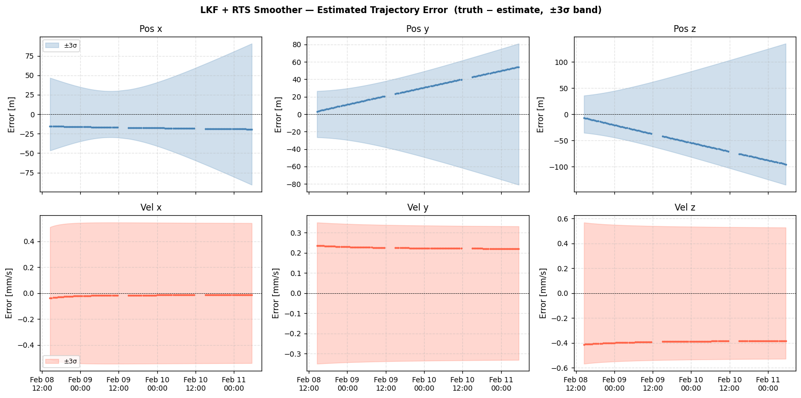
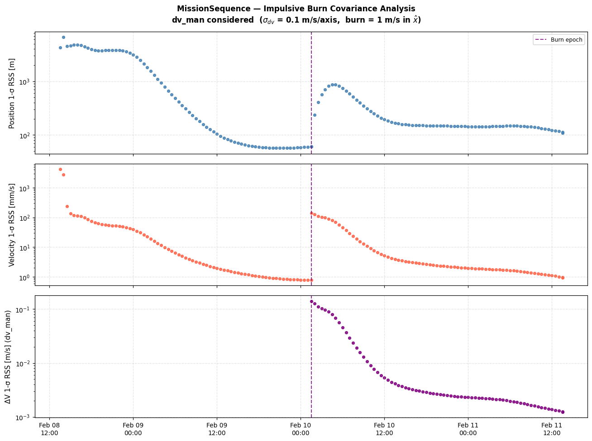
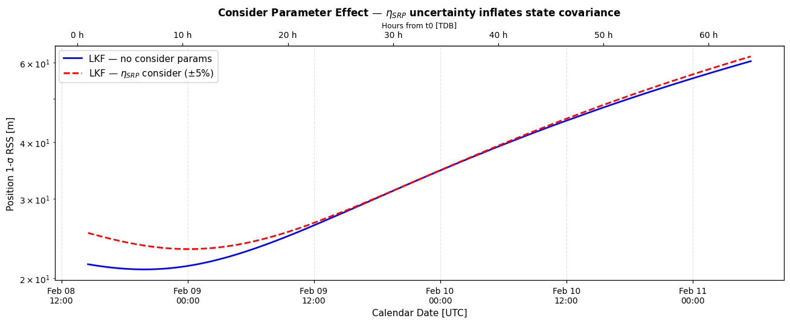

# Sequential Orbit Determination — Complete Demo#
Scarabaeus OD Framework | Last revised 2026
What this notebook covers#
Sequential orbit determination processes measurements one at a time, updating the state estimate and covariance recursively at each epoch. This is operationally efficient, naturally handles process noise, and supports real-time processing.
For the full batch-filter catalogue (LSB, SRIF-Batch, corner plots, covariance propagation, solution saving) see ``advanced_IdealMSR_BatchOD.ipynb``.
Topics#
# |
Topic |
|---|---|
1 |
True trajectory and measurements (DSS-14 + DSS-63) |
2 |
LKF with SNC process noise |
3 |
Process noise theory — SNC vs. DMC |
4 |
SRIF Sequential Filter |
5 |
RTS smoother |
6 |
Multi-leg OD with MissionSequence (two legs + impulsive burn) |
7 |
Consider parameters (η_SRP) |
8 |
Measurement editing — see BatchOD notebook |
9 |
Solution saving and analysis — see BatchOD notebook |
How to run#
Run from the project root directory (scarabaeus/).
0. Imports and Setup#
[1]:
import os, sys
import numpy as np
import numpy.random as rnd
import matplotlib.pyplot as plt
from pathlib import Path
import scarabaeus as scb
import supplementary as supp
# ── tutorial data and output paths ───────────────────────────────
data = supp.load_data()
tut_result_path = Path.cwd() / 'tutorial_results/meas_gen/radiometric'
tut_kernels_path = Path(data.mk.path).parent.parent / 'scenario'
tut_result_path.mkdir(parents=True, exist_ok=True)
tut_kernels_path.mkdir(parents=True, exist_ok=True)
kg, km, sec = scb.Units.get_units(['kg', 'km', 'sec'])
J2000, ITRF93, ECLIPJ2000, IAUEARTH = scb.Frame.generate_common_frames()
frame = J2000
origin = scb.CelestialBody.from_constants('SUN')
scb.SpiceManager.clear_kernels()
scb.SpiceManager.load_kernel_from_mkfile(data.mk.path)
print("Kernels loaded.")
# ── common spacecraft & initial state ────────────────────────────
dry_mass = scb.ArrayWUnits(1500.0, kg)
fuel_mass = scb.ArrayWUnits(500.0, kg)
area = scb.ArrayWUnits(1e-6, km**2)
cr = scb.ArrayWUnits(1.5, None)
Orbiter = scb.Spacecraft('Orbiter_True', -2000,
dry_mass+fuel_mass, area, cr)
time_0 = scb.SpiceManager.jd2et(2461809.72995654 + 1/3)
time_f = scb.SpiceManager.jd2et(2461809.72995654 + 3)
dt_step = 30 * 60
epoch_array = scb.EpochArray(np.arange(time_0, time_f, dt_step), sys='TDB')
epoch_0 = epoch_array[0]
pos_0 = scb.ArrayWFrame(
np.array([-1.1123095885148e+08, 8.9094345479316e+07, 3.8656500948069e+07]),
km, frame)
vel_0 = scb.ArrayWFrame(
np.array([-20.6936999825159, -16.7800270812616, -6.6437327193572]),
km/sec, frame)
SCB supplementary data up to date.
Kernels loaded.
Enhanced Plotting Helpers#
The cells below add calendar-date x-axis versions of the plots above, plus new visualization types: pre/post residual comparisons, state errors with ±3σ covariance bounds, covariance evolution, and corner covariance plots.
Helper functions:
et2dt(et_arr)— converts SPICE ET (seconds) to Pythondatetimeobjectsfmt_cal(ax)— appliesAutoDateLocator + DateFormatterfor a clean calendar x-axisadd_hrs_axis(ax)— adds a secondary top x-axis in hours from t0resid_from_filter(flt, ds)— extracts(t_pre, r_pre, t_post, r_post)arrayscorner_cov(P, labels)— lower-triangle corner plot with RdBu_r correlation colouring
[2]:
from datetime import datetime, timedelta
import matplotlib.dates as mdates
import matplotlib.ticker as mticker
from matplotlib import cm
from matplotlib.colors import Normalize
plt.rcParams.update({
'font.size': 10, 'axes.titlesize': 11, 'axes.labelsize': 10,
'xtick.labelsize': 9, 'ytick.labelsize': 9, 'legend.fontsize': 8,
'figure.dpi': 110, 'axes.grid': True, 'grid.alpha': 0.35, 'grid.linestyle': '--',
})
CMAP = cm.tab10
COLORS = [CMAP(i / 10) for i in range(10)]
# reference epoch for the hours-from-t0 secondary axis
t0_et = epoch_array.times.values[0]
def et2dt(et_arr):
"""Convert SPICE ET seconds (TDB from J2000) to list of datetime objects."""
_J2000 = datetime(2000, 1, 1, 12, 0, 0)
return [_J2000 + timedelta(seconds=float(t)) for t in np.atleast_1d(et_arr)]
def fmt_cal(ax):
"""Apply calendar-date tick formatting to a matplotlib axis."""
ax.xaxis.set_major_locator(mdates.AutoDateLocator(minticks=4, maxticks=9))
ax.xaxis.set_major_formatter(mdates.DateFormatter("%b %d\n%H:%M"))
def add_hrs_axis(ax, t0=None):
"""Add a secondary top x-axis showing hours from t0."""
t0 = t0 if t0 is not None else t0_et
from matplotlib.dates import date2num
t0_num = date2num(et2dt([t0])[0])
ax2 = ax.secondary_xaxis(
"top",
functions=(lambda x: (x - t0_num) * 24, lambda x: x / 24 + t0_num),
)
ax2.set_xlabel("Hours from t0 [TDB]", fontsize=8)
ax2.xaxis.set_major_formatter(mticker.FormatStrFormatter("%.0f h"))
return ax2
def resid_from_filter(flt_obj, ds_name, iteration=-1):
"""Return (t_pre, r_pre, t_post, r_post) numpy arrays for a dataset name.
iteration : int
Which iteration's pre-fit residuals to return.
0 → first iteration (raw O-C against initial reference).
-1 → last iteration (default, same as the converged solution).
Post-fit residuals always come from the final (converged) iteration.
"""
if (iteration == 0
and hasattr(flt_obj, '_solution_history')
and flt_obj._solution_history):
sol0 = flt_obj._solution_history[0]
pre = (sol0.prefits or {}).get(ds_name, [])
else:
pre = flt_obj.prefit_residuals.get(ds_name, [])
post = flt_obj.postfit_residuals.get(ds_name, [])
t_ds = np.array([])
for ds in flt_obj.measurement_data.datasets:
if ds.set_name == ds_name:
t_ds = np.array(ds.data["t2"])
break
t_pre = t_ds[:len(pre)] if len(pre) else np.array([])
r_pre = np.array([d[0] for d in pre]) if pre else np.array([])
t_post = t_ds[:len(post)] if len(post) else np.array([])
r_post = np.array([d[0] for d in post]) if post else np.array([])
return t_pre, r_pre, t_post, r_post
def corner_cov(P, labels, title="Covariance Corner Plot", figsize=(10, 9)):
"""
Corner plot from a covariance matrix.
Diagonal: 1D Gaussian marginal (dark-shaded ±1σ region).
Lower triangle: 2D confidence ellipses at 1σ / 2σ / 3σ (chi2, 2 dof).
Upper triangle: hidden.
"""
from matplotlib.patches import Ellipse
SCALES = [1.5150, 2.4477, 3.4395]
ALPHAS = [0.55, 0.30, 0.15 ]
COL, EDG = 'steelblue', 'navy'
n = P.shape[0]
sig = np.sqrt(np.diag(P))
fig, axes = plt.subplots(n, n, figsize=figsize,
gridspec_kw={'hspace': 0.05, 'wspace': 0.05})
if n == 1:
axes = np.array([[axes]])
fig.suptitle(title, fontsize=11, fontweight='bold')
for i in range(n):
for j in range(n):
ax = axes[i, j]
ax.tick_params(labelsize=5)
if i == j:
s = sig[i]
lim = 3.8 * s
x = np.linspace(-lim, lim, 300)
y = np.exp(-0.5 * (x / s) ** 2)
ax.plot(x, y, color=COL, lw=1.5)
ax.fill_between(x, y, alpha=0.18, color=COL)
ax.fill_between(x[np.abs(x) <= s], y[np.abs(x) <= s],
alpha=0.45, color=COL)
ax.axvline(0, color='k', lw=0.5, ls='--')
ax.set_xlim(-lim, lim)
ax.set_ylim(0, 1.30)
ax.set_yticks([])
ax.set_xticks([-2*s, 0, 2*s])
ax.text(0.97, 0.97, f'1\u03c3={s:.2e}',
transform=ax.transAxes, fontsize=6,
ha='right', va='top', color=EDG, fontweight='bold')
ax.set_title(labels[i], fontsize=7, pad=2)
if i < n - 1:
ax.set_xticklabels([])
elif i > j:
P2 = np.array([[P[j,j], P[j,i]], [P[i,j], P[i,i]]])
ev, evec = np.linalg.eigh(P2)
ev = np.maximum(ev, 0.0)
angle = np.degrees(np.arctan2(evec[1, 1], evec[0, 1]))
ax.axhline(0, color='k', lw=0.4, ls='--', alpha=0.4)
ax.axvline(0, color='k', lw=0.4, ls='--', alpha=0.4)
for scale, alpha in zip(SCALES, ALPHAS):
ax.add_patch(Ellipse(
xy=(0, 0),
width =2 * scale * np.sqrt(ev[1]),
height=2 * scale * np.sqrt(ev[0]),
angle =angle,
facecolor=COL, edgecolor=EDG,
linewidth=0.8, alpha=alpha,
))
rho = P[i, j] / (sig[i] * sig[j])
ax.text(0.05, 0.97, f'\u03c1={rho:+.2f}',
transform=ax.transAxes, fontsize=6.5,
color=EDG, va='top', fontweight='bold')
ax.set_xlim(-3.8*sig[j], 3.8*sig[j])
ax.set_ylim(-3.8*sig[i], 3.8*sig[i])
ax.set_xticks([-2*sig[j], 0, 2*sig[j]])
ax.set_yticks([-2*sig[i], 0, 2*sig[i]])
if i < n - 1:
ax.set_xticklabels([])
if j > 0:
ax.set_yticklabels([])
if j == 0:
ax.set_ylabel(labels[i], fontsize=7, labelpad=2)
if i == n - 1:
ax.set_xlabel(labels[j], fontsize=7, labelpad=2)
else:
ax.set_visible(False)
plt.tight_layout()
return fig
print(f"Plotting helpers ready. t0 = {et2dt([t0_et])[0].strftime('%Y-%m-%d %H:%M:%S')} TDB")
Plotting helpers ready. t0 = 2028-02-08 13:32:17 TDB
1. True Trajectory and Measurements#
We propagate the truth and generate Range + RangeRate measurements on it (DSS-14). These are the “observed” measurements the filter will try to explain.
The measurement generation is identical to the Batch notebook — see that notebook for the full measurement-model catalogue (Doppler, DDOR, optical navigation).
[3]:
# ── propagate truth ──────────────────────────────────────────────
third_bodies = ['MERCURY', 'VENUS', 'EARTH']
state_truth = scb.StateDefinition.from_components([
('position', 3, 'estimated', 'dynamic', Orbiter, pos_0),
('velocity', 3, 'estimated', 'dynamic', Orbiter, vel_0),
])
sv_truth = scb.StateArray(epoch=epoch_0, origin=origin, state=state_truth)
fm_truth = scb.ForceModelTranslation(primary_body=Orbiter,
third_bodies=third_bodies, cannonball_SRP=True)
prop_truth = scb.Propagator(primary_body=Orbiter, state_vector=sv_truth,
tspan=epoch_array, force_models=fm_truth)
prop_truth.propagate()
state_prop_truth = prop_truth.propagated_state_array
true_spk = str(tut_kernels_path / 'seq_orbiter_true.bsp')
if os.path.isfile(true_spk): os.remove(true_spk)
orbiter_traj_true = scb.Trajectory(state_array=state_prop_truth)
orbiter_traj_true.write_to_spk(true_spk)
print("True trajectory saved.")
# ── ground stations ───────────────────────────────────────────────
GS1 = scb.GroundStation('DSS-14')
GS2 = scb.GroundStation('DSS-63')
range_sigma = scb.ArrayWUnits(1e-3, km)
rr_sigma = scb.ArrayWUnits(1e-7, km/sec)
rangerate_sigma = rr_sigma
Range_GS1 = scb.RangeIdeal('GS1 Range', GS1, sigma=range_sigma)
RangeRate_GS1 = scb.RangeRateIdeal('GS1 RRate', GS1, sigma=rr_sigma)
Range_GS2 = scb.RangeIdeal('GS2 Range', GS2, sigma=range_sigma)
RangeRate_GS2 = scb.RangeRateIdeal('GS2 RRate', GS2, sigma=rr_sigma)
for model, stem in [
(Range_GS1, 'seq_range_GS1'),
(RangeRate_GS1, 'seq_rr_GS1'),
(Range_GS2, 'seq_range_GS2'),
(RangeRate_GS2, 'seq_rr_GS2'),
]:
model.write_observed_measurements(
target=Orbiter, epoch_array=epoch_array, noisy=True,
file_name=stem, check_visibility=True, elevation_mask=10.0,
folder_path_override=str(tut_result_path))
obs_range = Range_GS1.observed_measurements(
file_name=str(tut_result_path / 'seq_range_GS1.json'),
meas_name='meas_ideal', units=km)
obs_rr = RangeRate_GS1.observed_measurements(
file_name=str(tut_result_path / 'seq_rr_GS1.json'),
meas_name='meas_ideal', units=km/sec)
obs_range_GS2 = Range_GS2.observed_measurements(
file_name=str(tut_result_path / 'seq_range_GS2.json'),
meas_name='meas_ideal', units=km)
obs_rr_GS2 = RangeRate_GS2.observed_measurements(
file_name=str(tut_result_path / 'seq_rr_GS2.json'),
meas_name='meas_ideal', units=km/sec)
print(f"GS1 Range: {len(obs_range[2].quantity.values)} meas")
print(f"GS1 RRate: {len(obs_rr[2].quantity.values)} meas")
print(f"GS2 Range: {len(obs_range_GS2[2].quantity.values)} meas")
print(f"GS2 RRate: {len(obs_rr_GS2[2].quantity.values)} meas")
================================================================================
Starting propagation...
================================================================================
Integrating: 100%|█████████████████████████████████████████████| 230400.00/230400.00 s [00:00<00:00]
=================== DOP853 integration complete. ==================
Propagation complete.
True trajectory saved.
GS1 Range: 69 meas
GS1 RRate: 69 meas
GS2 Range: 82 meas
GS2 RRate: 82 meas
2. LKF with SNC Process Noise#
Theory#
The Linearized Kalman Filter (LKF) is the core sequential estimator. At each measurement epoch \(t_k\):
Time update (predict): propagate state and covariance forward with the STM
\[\mathbf{P}_{k|k-1} = \mathbf{\Phi}_{k,k-1}\,\mathbf{P}_{k-1|k-1}\,\mathbf{\Phi}_{k,k-1}^T + \mathbf{Q}_k\]Measurement update (correct): incorporate new measurement \(y_k\)
\[\mathbf{K}_k = \mathbf{P}_{k|k-1}\,\mathbf{H}_k^T\,(\mathbf{H}_k\mathbf{P}_{k|k-1}\mathbf{H}_k^T + \mathbf{R}_k)^{-1}\]\[\hat{\mathbf{x}}_{k|k} = \hat{\mathbf{x}}_{k|k-1} + \mathbf{K}_k(y_k - \mathbf{H}_k\hat{\mathbf{x}}_{k|k-1})\]
State Noise Compensation (SNC)#
SNC models uncharacterised accelerations as white noise added continuously to the velocity:
where \(q_c\) [km²/s³] is the continuous-time noise spectral density.
Tuning Q_cont (SNC):
Too large → wide covariance, accepts noise, position sigma grows fast.
Too small → filter stiffens, can’t track maneuvers or unmodelled forces.
Rule of thumb: \(q_c \approx (\text{expected unmodelled accel})^2 / \text{arc length in sec}\)
Q_cont = scb.ProcessNoiseSettings(type='SNC', Q_cont=Q_cont_matrix)
[4]:
# ── reference spacecraft (perturbed IC) ──────────────────────────
delta_pos_km = np.array([1.0, 1.0, 1.0]) # 1 km error per axis
delta_vel_kms = np.array([1e-3, 1e-3, 1e-3]) # 1 m/s error per axis
def make_ref_sc(name, spice_id, d_pos, d_vel):
sc = scb.Spacecraft(name, spice_id, dry_mass+fuel_mass, area, cr)
pos = scb.ArrayWFrame(pos_0.quantity + scb.ArrayWUnits(d_pos, km), frame)
vel = scb.ArrayWFrame(vel_0.quantity + scb.ArrayWUnits(d_vel, km/sec), frame)
return sc, pos, vel
sc_lkf, pos_lkf, vel_lkf = make_ref_sc('Orbiter_LKF', -2001,
delta_pos_km, delta_vel_kms)
state_lkf = scb.StateDefinition.from_components([
('position', 3, 'estimated', 'dynamic', sc_lkf, pos_lkf),
('velocity', 3, 'estimated', 'dynamic', sc_lkf, vel_lkf),
])
sv_lkf = scb.StateArray(epoch=epoch_0, origin=origin, state=state_lkf)
fm_lkf = scb.ForceModelTranslation(
primary_body=sc_lkf, third_bodies=third_bodies, cannonball_SRP=True)
prop_lkf = scb.Propagator(
primary_body=sc_lkf, state_vector=sv_lkf,
tspan=epoch_array, force_models=fm_lkf)
# ── initial covariance ────────────────────────────────────────────
pos_sig = scb.ArrayWUnits(3.0, km)
vel_sig = scb.ArrayWUnits(3e-3, km/sec)
P0 = scb.CovarianceMatrix(
[pos_sig]*3 + [vel_sig]*3, epoch_array[1], from_list=True)
# ── SNC process noise ─────────────────────────────────────────────
Q_diag = scb.ArrayWUnits(1e-9**2, km**2 * sec**-4)
Q_cont = scb.CovarianceMatrix([Q_diag]*3, epoch_array[0], from_list=True)
pn_snc = scb.ProcessNoiseSettings(type='SNC', Q_cont=Q_cont)
# ── measurement list ──────────────────────────────────────────────
meas_lkf = scb.MeasurementSpec.many(
scb.MeasurementSpec(model=Range_GS1, observed_meas=obs_range,
dataset_name='GS1 Range'),
scb.MeasurementSpec(model=RangeRate_GS1, observed_meas=obs_rr,
dataset_name='GS1 RangeRate'),
scb.MeasurementSpec(model=Range_GS2, observed_meas=obs_range_GS2,
dataset_name='GS2 Range'),
scb.MeasurementSpec(model=RangeRate_GS2, observed_meas=obs_rr_GS2,
dataset_name='GS2 RangeRate'),
)
# ── LKF ──────────────────────────────────────────────────────────
ref_spk_lkf = tut_kernels_path / 'seq_orbiter_ref_lkf.bsp'
if ref_spk_lkf.exists(): ref_spk_lkf.unlink()
lkf = scb.LKF(
propagator = prop_lkf,
settings = scb.FilterSettings(
initial_covariance = P0,
process_noise = pn_snc,
output = scb.OutputSettings(metadata={'filter':'LKF-SNC'}),
),
measurements = meas_lkf,
traj_name = 'seq_orbiter_ref_lkf.bsp',
traj_dir = str(tut_kernels_path),
)
print("Running LKF with SNC ...")
sol_lkf, ni_lkf, conv_lkf = lkf.fit(
max_iterations = 10,
convergence_threshold = 1e-6,
verbose = True,
traj_name = 'seq_orbiter_ref_lkf.bsp',
traj_dir = str(tut_kernels_path),
if_sequential_smooth = False,
)
print(f"Converged: {conv_lkf} after {ni_lkf} iterations")
================================================================================
Starting propagation...
================================================================================
Integrating: 100%|█████████████████████████████████████████████| 230400.00/230400.00 s [00:00<00:00]
/Users/zael5647/scarabaeus/.venv/lib/python3.11/site-packages/scarabaeus/environment/Trajectory.py:1580: UserWarning: No STM timestamps provided: falling back to trajectory epochs. Ensure STMs are aligned 1:1 with `self.epoch`.
warnings.warn(
=================== DOP853 integration complete. ==================
Propagation complete.
================================================================================
Generating computed measurements for the dataset "GS1 Range"
================================================================================
================================================================================
Generating _partials for the dataset "GS1 Range"
================================================================================
Generating _partials computed measurements...
Partials: 100%|████████████████████████████████████████████████████████████| 69/69 obs [00:00<00:00]
================================================================================
Generating computed measurements for the dataset "GS1 RangeRate"
================================================================================
================================================================================
Generating _partials for the dataset "GS1 RangeRate"
================================================================================
Generating _partials computed measurements...
Partials: 100%|████████████████████████████████████████████████████████████| 69/69 obs [00:00<00:00]
================================================================================
Generating computed measurements for the dataset "GS2 Range"
================================================================================
================================================================================
Generating _partials for the dataset "GS2 Range"
================================================================================
Generating _partials computed measurements...
Partials: 100%|████████████████████████████████████████████████████████████| 82/82 obs [00:00<00:00]
================================================================================
Generating computed measurements for the dataset "GS2 RangeRate"
================================================================================
================================================================================
Generating _partials for the dataset "GS2 RangeRate"
================================================================================
Generating _partials computed measurements...
Partials: 100%|████████████████████████████████████████████████████████████| 82/82 obs [00:00<00:00]
================================================================================
Initializing Linearized Kalman Filter (LKF)
================================================================================
Process Noise Model: SNC
================================================================================
Running LKF with SNC ...
================================================================================
STARTING ITERATIVE ORBIT DETERMINATION
================================================================================
Max iterations: 10
Convergence threshold: 1.00e-06
================================================================================
============================================================
ITERATION 1
============================================================
[886905137.43 TDB | 0.0%] ‖prefit‖ = 5.8499e+00 ‖postfit‖ = 1.4419e-07 ‖update‖ = 5.8502e+00 tr(P) = 2.5111e+02 √tr(S) = 1.1214e+01 ⟨std⟩ = 5.00e-04
[886906937.43 TDB | 0.8%] ‖prefit‖ = 8.1284e+00 ‖postfit‖ = 5.0961e-04 ‖update‖ = 5.5295e+00 tr(P) = 2.8876e+02 √tr(S) = 8.4645e-03 ⟨std⟩ = 5.00e-04
[886908737.43 TDB | 1.6%] ‖prefit‖ = 1.0407e+01 ‖postfit‖ = 6.9676e-04 ‖update‖ = 7.6715e+00 tr(P) = 6.7219e+01 √tr(S) = 1.7523e-03 ⟨std⟩ = 5.00e-04
[886910537.43 TDB | 2.4%] ‖prefit‖ = 1.2688e+01 ‖postfit‖ = 1.6846e-05 ‖update‖ = 2.2380e+00 tr(P) = 7.5803e+01 √tr(S) = 1.2295e-03 ⟨std⟩ = 5.00e-04
[886912337.43 TDB | 3.2%] ‖prefit‖ = 1.4975e+01 ‖postfit‖ = 4.2538e-04 ‖update‖ = 4.5350e+00 tr(P) = 6.8072e+01 √tr(S) = 1.1792e-03 ⟨std⟩ = 5.00e-04
[886914137.43 TDB | 4.0%] ‖prefit‖ = 1.7274e+01 ‖postfit‖ = 1.0361e-03 ‖update‖ = 4.5545e+00 tr(P) = 4.3870e+01 √tr(S) = 1.1593e-03 ⟨std⟩ = 5.00e-04
[886915937.43 TDB | 4.8%] ‖prefit‖ = 1.9582e+01 ‖postfit‖ = 1.3206e-03 ‖update‖ = 7.5438e-01 tr(P) = 2.6079e+01 √tr(S) = 1.1454e-03 ⟨std⟩ = 5.00e-04
[886917737.43 TDB | 5.6%] ‖prefit‖ = 2.1899e+01 ‖postfit‖ = 8.1335e-04 ‖update‖ = 2.7196e+00 tr(P) = 1.7249e+01 √tr(S) = 1.1339e-03 ⟨std⟩ = 5.00e-04
[886919537.43 TDB | 6.3%] ‖prefit‖ = 2.4227e+01 ‖postfit‖ = 9.8334e-04 ‖update‖ = 1.0082e+00 tr(P) = 1.3020e+01 √tr(S) = 1.1256e-03 ⟨std⟩ = 5.00e-04
[886921337.43 TDB | 7.1%] ‖prefit‖ = 2.6568e+01 ‖postfit‖ = 9.3051e-04 ‖update‖ = 6.0669e-01 tr(P) = 1.0836e+01 √tr(S) = 1.1198e-03 ⟨std⟩ = 5.00e-04
[886923137.43 TDB | 7.9%] ‖prefit‖ = 2.8922e+01 ‖postfit‖ = 8.8361e-04 ‖update‖ = 9.5643e-01 tr(P) = 9.5750e+00 √tr(S) = 1.1157e-03 ⟨std⟩ = 5.00e-04
[886924937.43 TDB | 8.7%] ‖prefit‖ = 3.1285e+01 ‖postfit‖ = 1.2312e-03 ‖update‖ = 7.7582e-02 tr(P) = 8.7512e+00 √tr(S) = 1.1128e-03 ⟨std⟩ = 5.00e-04
[886926737.43 TDB | 9.5%] ‖prefit‖ = 3.3656e+01 ‖postfit‖ = 3.2202e-04 ‖update‖ = 7.3771e-01 tr(P) = 8.1405e+00 √tr(S) = 1.1107e-03 ⟨std⟩ = 5.00e-04
[886928537.43 TDB | 10.3%] ‖prefit‖ = 3.6034e+01 ‖postfit‖ = 8.7613e-05 ‖update‖ = 8.3336e-01 tr(P) = 7.6324e+00 √tr(S) = 1.1091e-03 ⟨std⟩ = 5.00e-04
[886930337.43 TDB | 11.1%] ‖prefit‖ = 3.8418e+01 ‖postfit‖ = 1.1275e-03 ‖update‖ = 6.8430e-02 tr(P) = 7.1680e+00 √tr(S) = 1.1078e-03 ⟨std⟩ = 5.00e-04
[886932137.43 TDB | 11.9%] ‖prefit‖ = 4.0809e+01 ‖postfit‖ = 1.8275e-04 ‖update‖ = 1.4664e+00 tr(P) = 6.7139e+00 √tr(S) = 1.1069e-03 ⟨std⟩ = 5.00e-04
[886933937.43 TDB | 12.7%] ‖prefit‖ = 6.0451e+01 ‖postfit‖ = 1.4945e-03 ‖update‖ = 1.2386e+00 tr(P) = 7.0510e-03 √tr(S) = 3.8987e-02 ⟨std⟩ = 5.00e-04
[886935737.43 TDB | 13.5%] ‖prefit‖ = 6.3770e+01 ‖postfit‖ = 6.7163e-04 ‖update‖ = 6.4803e-02 tr(P) = 4.2795e-03 √tr(S) = 1.7956e-03 ⟨std⟩ = 5.00e-04
[886937537.43 TDB | 14.3%] ‖prefit‖ = 6.7101e+01 ‖postfit‖ = 7.8614e-04 ‖update‖ = 2.5403e-02 tr(P) = 3.3561e-03 √tr(S) = 1.6515e-03 ⟨std⟩ = 5.00e-04
[886939337.43 TDB | 15.1%] ‖prefit‖ = 7.0438e+01 ‖postfit‖ = 7.5251e-04 ‖update‖ = 1.9833e-02 tr(P) = 2.9045e-03 √tr(S) = 1.6007e-03 ⟨std⟩ = 5.00e-04
[886941137.43 TDB | 15.9%] ‖prefit‖ = 7.3786e+01 ‖postfit‖ = 8.2818e-04 ‖update‖ = 2.2955e-02 tr(P) = 2.6456e-03 √tr(S) = 1.5745e-03 ⟨std⟩ = 5.00e-04
[886942937.43 TDB | 16.7%] ‖prefit‖ = 7.7137e+01 ‖postfit‖ = 9.1001e-04 ‖update‖ = 8.6645e-03 tr(P) = 2.4847e-03 √tr(S) = 1.5582e-03 ⟨std⟩ = 5.00e-04
[886944737.43 TDB | 17.5%] ‖prefit‖ = 8.0497e+01 ‖postfit‖ = 1.3600e-03 ‖update‖ = 1.1370e-02 tr(P) = 2.3805e-03 √tr(S) = 1.5467e-03 ⟨std⟩ = 5.00e-04
[886946537.43 TDB | 18.3%] ‖prefit‖ = 8.3858e+01 ‖postfit‖ = 1.9845e-03 ‖update‖ = 2.1712e-02 tr(P) = 2.3116e-03 √tr(S) = 1.5377e-03 ⟨std⟩ = 5.00e-04
[886948337.43 TDB | 19.0%] ‖prefit‖ = 8.7220e+01 ‖postfit‖ = 1.1836e-03 ‖update‖ = 2.5663e-02 tr(P) = 2.2657e-03 √tr(S) = 1.5302e-03 ⟨std⟩ = 5.00e-04
[886950137.43 TDB | 19.8%] ‖prefit‖ = 9.0586e+01 ‖postfit‖ = 5.0712e-04 ‖update‖ = 1.6954e-02 tr(P) = 2.2343e-03 √tr(S) = 1.5237e-03 ⟨std⟩ = 5.00e-04
[886951937.43 TDB | 20.6%] ‖prefit‖ = 9.3949e+01 ‖postfit‖ = 5.4721e-04 ‖update‖ = 7.7388e-03 tr(P) = 2.2112e-03 √tr(S) = 1.5178e-03 ⟨std⟩ = 5.00e-04
[886953737.43 TDB | 21.4%] ‖prefit‖ = 9.7309e+01 ‖postfit‖ = 7.6415e-04 ‖update‖ = 8.1605e-03 tr(P) = 2.1915e-03 √tr(S) = 1.5125e-03 ⟨std⟩ = 5.00e-04
[886955537.43 TDB | 22.2%] ‖prefit‖ = 7.0853e+01 ‖postfit‖ = 2.1712e-03 ‖update‖ = 9.3837e-03 tr(P) = 2.2719e-03 √tr(S) = 1.0571e-03 ⟨std⟩ = 5.00e-04
[886957337.43 TDB | 23.0%] ‖prefit‖ = 7.3304e+01 ‖postfit‖ = 1.2566e-03 ‖update‖ = 4.6805e-03 tr(P) = 2.3711e-03 √tr(S) = 1.0564e-03 ⟨std⟩ = 5.00e-04
[886959137.43 TDB | 23.8%] ‖prefit‖ = 7.5752e+01 ‖postfit‖ = 5.8022e-04 ‖update‖ = 2.2428e-03 tr(P) = 2.4874e-03 √tr(S) = 1.0566e-03 ⟨std⟩ = 5.00e-04
[886960937.43 TDB | 24.6%] ‖prefit‖ = 7.8201e+01 ‖postfit‖ = 5.0580e-04 ‖update‖ = 8.0140e-03 tr(P) = 2.6190e-03 √tr(S) = 1.0575e-03 ⟨std⟩ = 5.00e-04
[886962737.43 TDB | 25.4%] ‖prefit‖ = 8.0648e+01 ‖postfit‖ = 1.3401e-03 ‖update‖ = 2.9405e-03 tr(P) = 2.7638e-03 √tr(S) = 1.0589e-03 ⟨std⟩ = 5.00e-04
[886964537.43 TDB | 26.2%] ‖prefit‖ = 8.3088e+01 ‖postfit‖ = 7.8207e-04 ‖update‖ = 1.0527e-02 tr(P) = 2.9198e-03 √tr(S) = 1.0606e-03 ⟨std⟩ = 5.00e-04
[886966337.43 TDB | 27.0%] ‖prefit‖ = 8.5524e+01 ‖postfit‖ = 5.8510e-04 ‖update‖ = 9.2850e-04 tr(P) = 3.0843e-03 √tr(S) = 1.0624e-03 ⟨std⟩ = 5.00e-04
[886968137.43 TDB | 27.8%] ‖prefit‖ = 8.7952e+01 ‖postfit‖ = 1.0325e-03 ‖update‖ = 7.9704e-03 tr(P) = 3.2538e-03 √tr(S) = 1.0642e-03 ⟨std⟩ = 5.00e-04
[886969937.43 TDB | 28.6%] ‖prefit‖ = 9.0368e+01 ‖postfit‖ = 1.4852e-04 ‖update‖ = 3.1255e-03 tr(P) = 3.4235e-03 √tr(S) = 1.0657e-03 ⟨std⟩ = 5.00e-04
[886971737.43 TDB | 29.4%] ‖prefit‖ = 9.2773e+01 ‖postfit‖ = 6.9675e-04 ‖update‖ = 4.1121e-03 tr(P) = 3.5866e-03 √tr(S) = 1.0670e-03 ⟨std⟩ = 5.00e-04
[886973537.43 TDB | 30.2%] ‖prefit‖ = 9.5166e+01 ‖postfit‖ = 6.1460e-04 ‖update‖ = 9.8130e-03 tr(P) = 3.7346e-03 √tr(S) = 1.0680e-03 ⟨std⟩ = 5.00e-04
[886975337.43 TDB | 31.0%] ‖prefit‖ = 9.7542e+01 ‖postfit‖ = 1.9648e-03 ‖update‖ = 1.7711e-02 tr(P) = 3.8572e-03 √tr(S) = 1.0689e-03 ⟨std⟩ = 5.00e-04
[886977137.43 TDB | 31.7%] ‖prefit‖ = 9.9907e+01 ‖postfit‖ = 8.8716e-04 ‖update‖ = 7.1586e-03 tr(P) = 3.9439e-03 √tr(S) = 1.0696e-03 ⟨std⟩ = 5.00e-04
[886978937.43 TDB | 32.5%] ‖prefit‖ = 1.0226e+02 ‖postfit‖ = 4.6004e-04 ‖update‖ = 1.3239e-03 tr(P) = 3.9859e-03 √tr(S) = 1.0705e-03 ⟨std⟩ = 5.00e-04
[886980737.43 TDB | 33.3%] ‖prefit‖ = 1.0459e+02 ‖postfit‖ = 9.5533e-04 ‖update‖ = 1.5455e-02 tr(P) = 3.9789e-03 √tr(S) = 1.0715e-03 ⟨std⟩ = 5.00e-04
[886993337.43 TDB | 38.9%] ‖prefit‖ = 1.1927e+02 ‖postfit‖ = 4.0172e-04 ‖update‖ = 4.4348e-02 tr(P) = 3.2737e-03 √tr(S) = 1.7146e-03 ⟨std⟩ = 5.00e-04
[886995137.43 TDB | 39.7%] ‖prefit‖ = 1.2165e+02 ‖postfit‖ = 7.6014e-04 ‖update‖ = 2.2374e-02 tr(P) = 2.8690e-03 √tr(S) = 1.2982e-03 ⟨std⟩ = 5.00e-04
[886996937.43 TDB | 40.5%] ‖prefit‖ = 1.2405e+02 ‖postfit‖ = 1.8388e-03 ‖update‖ = 3.3986e-02 tr(P) = 2.7285e-03 √tr(S) = 1.1930e-03 ⟨std⟩ = 5.00e-04
[886998737.43 TDB | 41.3%] ‖prefit‖ = 1.2646e+02 ‖postfit‖ = 8.7126e-04 ‖update‖ = 1.1870e-02 tr(P) = 2.6808e-03 √tr(S) = 1.1439e-03 ⟨std⟩ = 5.00e-04
[887000537.43 TDB | 42.1%] ‖prefit‖ = 1.2889e+02 ‖postfit‖ = 6.2864e-04 ‖update‖ = 6.5038e-03 tr(P) = 2.6782e-03 √tr(S) = 1.1153e-03 ⟨std⟩ = 5.00e-04
[887002337.43 TDB | 42.9%] ‖prefit‖ = 1.3133e+02 ‖postfit‖ = 3.1229e-04 ‖update‖ = 2.3351e-03 tr(P) = 2.7015e-03 √tr(S) = 1.0965e-03 ⟨std⟩ = 5.00e-04
[887004137.43 TDB | 43.7%] ‖prefit‖ = 1.3380e+02 ‖postfit‖ = 7.7678e-04 ‖update‖ = 1.2321e-02 tr(P) = 2.7413e-03 √tr(S) = 1.0834e-03 ⟨std⟩ = 5.00e-04
[887005937.43 TDB | 44.4%] ‖prefit‖ = 1.3627e+02 ‖postfit‖ = 8.2140e-04 ‖update‖ = 5.5894e-03 tr(P) = 2.7917e-03 √tr(S) = 1.0740e-03 ⟨std⟩ = 5.00e-04
[887007737.43 TDB | 45.2%] ‖prefit‖ = 1.3876e+02 ‖postfit‖ = 1.0228e-03 ‖update‖ = 3.0872e-03 tr(P) = 2.8486e-03 √tr(S) = 1.0671e-03 ⟨std⟩ = 5.00e-04
[887009537.43 TDB | 46.0%] ‖prefit‖ = 1.4125e+02 ‖postfit‖ = 8.9442e-04 ‖update‖ = 9.2926e-03 tr(P) = 2.9089e-03 √tr(S) = 1.0622e-03 ⟨std⟩ = 5.00e-04
[887011337.43 TDB | 46.8%] ‖prefit‖ = 1.4376e+02 ‖postfit‖ = 5.4160e-04 ‖update‖ = 8.7250e-03 tr(P) = 2.9701e-03 √tr(S) = 1.0589e-03 ⟨std⟩ = 5.00e-04
[887013137.43 TDB | 47.6%] ‖prefit‖ = 1.4627e+02 ‖postfit‖ = 1.0755e-03 ‖update‖ = 1.7396e-03 tr(P) = 3.0301e-03 √tr(S) = 1.0567e-03 ⟨std⟩ = 5.00e-04
[887014937.43 TDB | 48.4%] ‖prefit‖ = 1.4879e+02 ‖postfit‖ = 7.1028e-05 ‖update‖ = 8.3040e-03 tr(P) = 3.0874e-03 √tr(S) = 1.0555e-03 ⟨std⟩ = 5.00e-04
[887016737.43 TDB | 49.2%] ‖prefit‖ = 1.5130e+02 ‖postfit‖ = 1.7172e-03 ‖update‖ = 1.1871e-02 tr(P) = 3.1412e-03 √tr(S) = 1.0551e-03 ⟨std⟩ = 5.00e-04
[887018537.43 TDB | 50.0%] ‖prefit‖ = 1.5382e+02 ‖postfit‖ = 5.8529e-04 ‖update‖ = 2.0607e-03 tr(P) = 3.1908e-03 √tr(S) = 1.0552e-03 ⟨std⟩ = 5.00e-04
[887020337.43 TDB | 50.8%] ‖prefit‖ = 2.2005e+02 ‖postfit‖ = 5.9568e-04 ‖update‖ = 1.0157e-02 tr(P) = 3.1128e-03 √tr(S) = 1.5129e-03 ⟨std⟩ = 5.00e-04
[887022137.43 TDB | 51.6%] ‖prefit‖ = 2.2351e+02 ‖postfit‖ = 3.8536e-04 ‖update‖ = 1.6277e-02 tr(P) = 3.0498e-03 √tr(S) = 1.5035e-03 ⟨std⟩ = 5.00e-04
[887023937.43 TDB | 52.4%] ‖prefit‖ = 2.2700e+02 ‖postfit‖ = 1.9861e-03 ‖update‖ = 7.1742e-03 tr(P) = 2.9960e-03 √tr(S) = 1.4971e-03 ⟨std⟩ = 5.00e-04
[887025737.43 TDB | 53.2%] ‖prefit‖ = 2.3048e+02 ‖postfit‖ = 1.0002e-03 ‖update‖ = 1.0699e-02 tr(P) = 2.9485e-03 √tr(S) = 1.4923e-03 ⟨std⟩ = 5.00e-04
[887027537.43 TDB | 54.0%] ‖prefit‖ = 2.3397e+02 ‖postfit‖ = 4.0222e-04 ‖update‖ = 3.5034e-03 tr(P) = 2.9056e-03 √tr(S) = 1.4885e-03 ⟨std⟩ = 5.00e-04
[887029337.43 TDB | 54.8%] ‖prefit‖ = 2.3746e+02 ‖postfit‖ = 1.2694e-04 ‖update‖ = 4.2674e-03 tr(P) = 2.8659e-03 √tr(S) = 1.4853e-03 ⟨std⟩ = 5.00e-04
[887031137.43 TDB | 55.6%] ‖prefit‖ = 2.4096e+02 ‖postfit‖ = 5.5282e-04 ‖update‖ = 3.9841e-03 tr(P) = 2.8289e-03 √tr(S) = 1.4823e-03 ⟨std⟩ = 5.00e-04
[887032937.43 TDB | 56.3%] ‖prefit‖ = 2.4445e+02 ‖postfit‖ = 1.2873e-03 ‖update‖ = 9.0301e-03 tr(P) = 2.7939e-03 √tr(S) = 1.4794e-03 ⟨std⟩ = 5.00e-04
[887034737.43 TDB | 57.1%] ‖prefit‖ = 2.4794e+02 ‖postfit‖ = 3.6426e-04 ‖update‖ = 6.7713e-03 tr(P) = 2.7603e-03 √tr(S) = 1.4766e-03 ⟨std⟩ = 5.00e-04
[887036537.43 TDB | 57.9%] ‖prefit‖ = 2.5143e+02 ‖postfit‖ = 1.0331e-03 ‖update‖ = 6.1423e-03 tr(P) = 2.7278e-03 √tr(S) = 1.4739e-03 ⟨std⟩ = 5.00e-04
[887038337.43 TDB | 58.7%] ‖prefit‖ = 2.5491e+02 ‖postfit‖ = 3.3432e-04 ‖update‖ = 4.1024e-03 tr(P) = 2.6959e-03 √tr(S) = 1.4713e-03 ⟨std⟩ = 5.00e-04
[887040137.43 TDB | 59.5%] ‖prefit‖ = 2.5838e+02 ‖postfit‖ = 9.5813e-04 ‖update‖ = 1.6185e-02 tr(P) = 2.6644e-03 √tr(S) = 1.4689e-03 ⟨std⟩ = 5.00e-04
[887041937.43 TDB | 60.3%] ‖prefit‖ = 1.8472e+02 ‖postfit‖ = 9.4165e-04 ‖update‖ = 3.1637e-03 tr(P) = 2.7117e-03 √tr(S) = 1.0273e-03 ⟨std⟩ = 5.00e-04
[887043737.43 TDB | 61.1%] ‖prefit‖ = 1.8727e+02 ‖postfit‖ = 4.7964e-04 ‖update‖ = 9.1916e-03 tr(P) = 2.7609e-03 √tr(S) = 1.0268e-03 ⟨std⟩ = 5.00e-04
[887045537.43 TDB | 61.9%] ‖prefit‖ = 1.8982e+02 ‖postfit‖ = 5.4065e-04 ‖update‖ = 1.8165e-03 tr(P) = 2.8114e-03 √tr(S) = 1.0266e-03 ⟨std⟩ = 5.00e-04
[887047337.43 TDB | 62.7%] ‖prefit‖ = 1.9236e+02 ‖postfit‖ = 6.5274e-04 ‖update‖ = 3.5844e-03 tr(P) = 2.8624e-03 √tr(S) = 1.0268e-03 ⟨std⟩ = 5.00e-04
[887049137.43 TDB | 63.5%] ‖prefit‖ = 1.9489e+02 ‖postfit‖ = 7.5498e-04 ‖update‖ = 3.4158e-03 tr(P) = 2.9132e-03 √tr(S) = 1.0273e-03 ⟨std⟩ = 5.00e-04
[887050937.43 TDB | 64.3%] ‖prefit‖ = 1.9742e+02 ‖postfit‖ = 1.9920e-04 ‖update‖ = 4.0976e-03 tr(P) = 2.9629e-03 √tr(S) = 1.0281e-03 ⟨std⟩ = 5.00e-04
[887052737.43 TDB | 65.1%] ‖prefit‖ = 1.9994e+02 ‖postfit‖ = 1.1664e-03 ‖update‖ = 6.6705e-03 tr(P) = 3.0109e-03 √tr(S) = 1.0290e-03 ⟨std⟩ = 5.00e-04
[887054537.43 TDB | 65.9%] ‖prefit‖ = 2.0243e+02 ‖postfit‖ = 1.7167e-03 ‖update‖ = 5.5727e-03 tr(P) = 3.0562e-03 √tr(S) = 1.0301e-03 ⟨std⟩ = 5.00e-04
[887056337.43 TDB | 66.7%] ‖prefit‖ = 2.0492e+02 ‖postfit‖ = 6.4877e-04 ‖update‖ = 2.1430e-03 tr(P) = 3.0984e-03 √tr(S) = 1.0312e-03 ⟨std⟩ = 5.00e-04
[887058137.43 TDB | 67.5%] ‖prefit‖ = 2.0739e+02 ‖postfit‖ = 1.5355e-03 ‖update‖ = 8.0165e-03 tr(P) = 3.1368e-03 √tr(S) = 1.0323e-03 ⟨std⟩ = 5.00e-04
[887059937.43 TDB | 68.3%] ‖prefit‖ = 2.0984e+02 ‖postfit‖ = 1.3639e-03 ‖update‖ = 5.7854e-03 tr(P) = 3.1710e-03 √tr(S) = 1.0333e-03 ⟨std⟩ = 5.00e-04
[887061737.43 TDB | 69.0%] ‖prefit‖ = 2.1228e+02 ‖postfit‖ = 2.0534e-04 ‖update‖ = 6.8338e-03 tr(P) = 3.2005e-03 √tr(S) = 1.0342e-03 ⟨std⟩ = 5.00e-04
[887063537.43 TDB | 69.8%] ‖prefit‖ = 2.1469e+02 ‖postfit‖ = 5.3222e-04 ‖update‖ = 9.9312e-03 tr(P) = 3.2251e-03 √tr(S) = 1.0350e-03 ⟨std⟩ = 5.00e-04
[887065337.43 TDB | 70.6%] ‖prefit‖ = 2.1709e+02 ‖postfit‖ = 5.1157e-04 ‖update‖ = 5.7141e-03 tr(P) = 3.2445e-03 √tr(S) = 1.0357e-03 ⟨std⟩ = 5.00e-04
[887067137.43 TDB | 71.4%] ‖prefit‖ = 2.1946e+02 ‖postfit‖ = 6.0003e-04 ‖update‖ = 4.6019e-03 tr(P) = 3.2587e-03 √tr(S) = 1.0362e-03 ⟨std⟩ = 5.00e-04
[887079737.43 TDB | 77.0%] ‖prefit‖ = 2.3416e+02 ‖postfit‖ = 2.8504e-04 ‖update‖ = 5.9904e-03 tr(P) = 3.5636e-03 √tr(S) = 1.1116e-03 ⟨std⟩ = 5.00e-04
[887081537.43 TDB | 77.8%] ‖prefit‖ = 2.3659e+02 ‖postfit‖ = 2.4097e-04 ‖update‖ = 3.6945e-03 tr(P) = 3.4740e-03 √tr(S) = 1.0932e-03 ⟨std⟩ = 5.00e-04
[887083337.43 TDB | 78.6%] ‖prefit‖ = 2.3905e+02 ‖postfit‖ = 5.3137e-04 ‖update‖ = 5.6049e-03 tr(P) = 3.4240e-03 √tr(S) = 1.0798e-03 ⟨std⟩ = 5.00e-04
[887085137.43 TDB | 79.4%] ‖prefit‖ = 2.4152e+02 ‖postfit‖ = 1.3389e-04 ‖update‖ = 1.3053e-03 tr(P) = 3.4005e-03 √tr(S) = 1.0694e-03 ⟨std⟩ = 5.00e-04
[887086937.43 TDB | 80.2%] ‖prefit‖ = 2.4401e+02 ‖postfit‖ = 2.1703e-04 ‖update‖ = 1.7486e-03 tr(P) = 3.3960e-03 √tr(S) = 1.0612e-03 ⟨std⟩ = 5.00e-04
[887088737.43 TDB | 81.0%] ‖prefit‖ = 2.4651e+02 ‖postfit‖ = 7.0162e-04 ‖update‖ = 5.4201e-03 tr(P) = 3.4057e-03 √tr(S) = 1.0545e-03 ⟨std⟩ = 5.00e-04
[887090537.43 TDB | 81.7%] ‖prefit‖ = 2.4903e+02 ‖postfit‖ = 3.9673e-04 ‖update‖ = 3.3503e-03 tr(P) = 3.4262e-03 √tr(S) = 1.0490e-03 ⟨std⟩ = 5.00e-04
[887092337.43 TDB | 82.5%] ‖prefit‖ = 2.5157e+02 ‖postfit‖ = 1.7488e-03 ‖update‖ = 7.4294e-03 tr(P) = 3.4553e-03 √tr(S) = 1.0444e-03 ⟨std⟩ = 5.00e-04
[887094137.43 TDB | 83.3%] ‖prefit‖ = 2.5411e+02 ‖postfit‖ = 1.1013e-03 ‖update‖ = 3.8947e-03 tr(P) = 3.4913e-03 √tr(S) = 1.0405e-03 ⟨std⟩ = 5.00e-04
[887095937.43 TDB | 84.1%] ‖prefit‖ = 2.5667e+02 ‖postfit‖ = 1.3395e-03 ‖update‖ = 4.0010e-03 tr(P) = 3.5327e-03 √tr(S) = 1.0373e-03 ⟨std⟩ = 5.00e-04
[887097737.43 TDB | 84.9%] ‖prefit‖ = 2.5923e+02 ‖postfit‖ = 1.1286e-04 ‖update‖ = 2.0017e-03 tr(P) = 3.5784e-03 √tr(S) = 1.0347e-03 ⟨std⟩ = 5.00e-04
[887099537.43 TDB | 85.7%] ‖prefit‖ = 2.6180e+02 ‖postfit‖ = 2.1403e-04 ‖update‖ = 1.1606e-03 tr(P) = 3.6271e-03 √tr(S) = 1.0327e-03 ⟨std⟩ = 5.00e-04
[887101337.43 TDB | 86.5%] ‖prefit‖ = 2.6437e+02 ‖postfit‖ = 4.5415e-04 ‖update‖ = 1.6259e-03 tr(P) = 3.6778e-03 √tr(S) = 1.0311e-03 ⟨std⟩ = 5.00e-04
[887103137.43 TDB | 87.3%] ‖prefit‖ = 2.6694e+02 ‖postfit‖ = 7.7298e-05 ‖update‖ = 3.5368e-03 tr(P) = 3.7294e-03 √tr(S) = 1.0300e-03 ⟨std⟩ = 5.00e-04
[887104937.43 TDB | 88.1%] ‖prefit‖ = 2.6951e+02 ‖postfit‖ = 6.6662e-04 ‖update‖ = 2.9207e-03 tr(P) = 3.7809e-03 √tr(S) = 1.0293e-03 ⟨std⟩ = 5.00e-04
[887106737.43 TDB | 88.9%] ‖prefit‖ = 3.8361e+02 ‖postfit‖ = 1.8912e-03 ‖update‖ = 1.3408e-02 tr(P) = 3.7483e-03 √tr(S) = 1.4703e-03 ⟨std⟩ = 5.00e-04
[887108537.43 TDB | 89.7%] ‖prefit‖ = 3.8714e+02 ‖postfit‖ = 9.5657e-04 ‖update‖ = 8.0326e-03 tr(P) = 3.7259e-03 √tr(S) = 1.4657e-03 ⟨std⟩ = 5.00e-04
[887110337.43 TDB | 90.5%] ‖prefit‖ = 3.9069e+02 ‖postfit‖ = 1.7608e-03 ‖update‖ = 1.0895e-02 tr(P) = 3.7098e-03 √tr(S) = 1.4623e-03 ⟨std⟩ = 5.00e-04
[887112137.43 TDB | 91.3%] ‖prefit‖ = 3.9423e+02 ‖postfit‖ = 1.5213e-03 ‖update‖ = 7.8906e-03 tr(P) = 3.6970e-03 √tr(S) = 1.4598e-03 ⟨std⟩ = 5.00e-04
[887113937.43 TDB | 92.1%] ‖prefit‖ = 3.9779e+02 ‖postfit‖ = 1.9976e-03 ‖update‖ = 1.2791e-02 tr(P) = 3.6855e-03 √tr(S) = 1.4578e-03 ⟨std⟩ = 5.00e-04
[887115737.43 TDB | 92.9%] ‖prefit‖ = 4.0134e+02 ‖postfit‖ = 1.1447e-03 ‖update‖ = 1.0089e-02 tr(P) = 3.6737e-03 √tr(S) = 1.4562e-03 ⟨std⟩ = 5.00e-04
[887117537.43 TDB | 93.7%] ‖prefit‖ = 4.0490e+02 ‖postfit‖ = 4.9673e-04 ‖update‖ = 1.0507e-02 tr(P) = 3.6603e-03 √tr(S) = 1.4548e-03 ⟨std⟩ = 5.00e-04
[887119337.43 TDB | 94.4%] ‖prefit‖ = 4.0845e+02 ‖postfit‖ = 8.1902e-04 ‖update‖ = 4.2807e-03 tr(P) = 3.6445e-03 √tr(S) = 1.4537e-03 ⟨std⟩ = 5.00e-04
[887121137.43 TDB | 95.2%] ‖prefit‖ = 4.1200e+02 ‖postfit‖ = 1.0537e-03 ‖update‖ = 6.0630e-03 tr(P) = 3.6259e-03 √tr(S) = 1.4526e-03 ⟨std⟩ = 5.00e-04
[887122937.43 TDB | 96.0%] ‖prefit‖ = 4.1554e+02 ‖postfit‖ = 2.3106e-03 ‖update‖ = 1.4103e-02 tr(P) = 3.6041e-03 √tr(S) = 1.4517e-03 ⟨std⟩ = 5.00e-04
[887124737.43 TDB | 96.8%] ‖prefit‖ = 4.1907e+02 ‖postfit‖ = 1.4488e-03 ‖update‖ = 4.5704e-03 tr(P) = 3.5791e-03 √tr(S) = 1.4507e-03 ⟨std⟩ = 5.00e-04
[887126537.43 TDB | 97.6%] ‖prefit‖ = 4.2260e+02 ‖postfit‖ = 3.4653e-03 ‖update‖ = 3.3926e-02 tr(P) = 3.5509e-03 √tr(S) = 1.4498e-03 ⟨std⟩ = 5.00e-04
[887128337.43 TDB | 98.4%] ‖prefit‖ = 3.0085e+02 ‖postfit‖ = 2.6852e-03 ‖update‖ = 1.0243e-02 tr(P) = 3.5884e-03 √tr(S) = 1.0191e-03 ⟨std⟩ = 5.00e-04
[887130137.43 TDB | 99.2%] ‖prefit‖ = 3.0344e+02 ‖postfit‖ = 1.0312e-03 ‖update‖ = 4.2558e-03 tr(P) = 3.6272e-03 √tr(S) = 1.0185e-03 ⟨std⟩ = 5.00e-04
[887131937.43 TDB | 100.0%] ‖prefit‖ = 3.0603e+02 ‖postfit‖ = 5.9154e-04 ‖update‖ = 2.7517e-03 tr(P) = 3.6669e-03 √tr(S) = 1.0182e-03 ⟨std⟩ = 5.00e-04
RMS State Deviation: 7.098651e-01
-> Reinitializing for iteration 2...
================================================================================
Starting propagation...
================================================================================
Integrating: 100%|█████████████████████████████████████████████| 230400.00/230400.00 s [00:00<00:00]
=================== DOP853 integration complete. ==================
Propagation complete.
================================================================================
Generating computed measurements for the dataset "GS1 Range"
================================================================================
================================================================================
Generating _partials for the dataset "GS1 Range"
================================================================================
Generating _partials computed measurements...
Partials: 100%|████████████████████████████████████████████████████████████| 69/69 obs [00:00<00:00]
================================================================================
Generating computed measurements for the dataset "GS1 RangeRate"
================================================================================
================================================================================
Generating _partials for the dataset "GS1 RangeRate"
================================================================================
Generating _partials computed measurements...
Partials: 100%|████████████████████████████████████████████████████████████| 69/69 obs [00:00<00:00]
================================================================================
Generating computed measurements for the dataset "GS2 Range"
================================================================================
================================================================================
Generating _partials for the dataset "GS2 Range"
================================================================================
Generating _partials computed measurements...
Partials: 100%|████████████████████████████████████████████████████████████| 82/82 obs [00:00<00:00]
================================================================================
Generating computed measurements for the dataset "GS2 RangeRate"
================================================================================
================================================================================
Generating _partials for the dataset "GS2 RangeRate"
================================================================================
Generating _partials computed measurements...
Partials: 100%|████████████████████████████████████████████████████████████| 82/82 obs [00:00<00:00]
============================================================
ITERATION 2
============================================================
[886905137.43 TDB | 0.0%] ‖prefit‖ = 1.3301e-03 ‖postfit‖ = 1.7843e-10 ‖update‖ = 1.3352e-03 tr(P) = 2.5111e+02 √tr(S) = 1.1214e+01 ⟨std⟩ = 5.00e-04
[886906937.43 TDB | 0.8%] ‖prefit‖ = 1.7214e-04 ‖postfit‖ = 5.3402e-04 ‖update‖ = 2.2802e+00 tr(P) = 2.8869e+02 √tr(S) = 8.5159e-03 ⟨std⟩ = 5.00e-04
[886908737.43 TDB | 1.6%] ‖prefit‖ = 3.5685e-04 ‖postfit‖ = 6.9696e-04 ‖update‖ = 4.2139e+00 tr(P) = 6.6981e+01 √tr(S) = 1.7504e-03 ⟨std⟩ = 5.00e-04
[886910537.43 TDB | 2.4%] ‖prefit‖ = 2.4998e-04 ‖postfit‖ = 2.1829e-05 ‖update‖ = 1.8550e+00 tr(P) = 7.5454e+01 √tr(S) = 1.2295e-03 ⟨std⟩ = 5.00e-04
[886912337.43 TDB | 3.2%] ‖prefit‖ = 7.7542e-04 ‖postfit‖ = 4.3536e-04 ‖update‖ = 3.3356e+00 tr(P) = 6.7827e+01 √tr(S) = 1.1792e-03 ⟨std⟩ = 5.00e-04
[886914137.43 TDB | 4.0%] ‖prefit‖ = 1.0002e-03 ‖postfit‖ = 1.0261e-03 ‖update‖ = 6.0600e+00 tr(P) = 4.3794e+01 √tr(S) = 1.1593e-03 ⟨std⟩ = 5.00e-04
[886915937.43 TDB | 4.8%] ‖prefit‖ = 1.7900e-03 ‖postfit‖ = 1.3133e-03 ‖update‖ = 1.4793e-01 tr(P) = 2.6062e+01 √tr(S) = 1.1454e-03 ⟨std⟩ = 5.00e-04
[886917737.43 TDB | 5.6%] ‖prefit‖ = 1.6985e-03 ‖postfit‖ = 8.0843e-04 ‖update‖ = 2.3276e+00 tr(P) = 1.7244e+01 √tr(S) = 1.1339e-03 ⟨std⟩ = 5.00e-04
[886919537.43 TDB | 6.3%] ‖prefit‖ = 1.2883e-04 ‖postfit‖ = 9.8663e-04 ‖update‖ = 8.4179e-01 tr(P) = 1.3018e+01 √tr(S) = 1.1256e-03 ⟨std⟩ = 5.00e-04
[886921337.43 TDB | 7.1%] ‖prefit‖ = 1.3519e-04 ‖postfit‖ = 9.3277e-04 ‖update‖ = 6.8280e-01 tr(P) = 1.0834e+01 √tr(S) = 1.1198e-03 ⟨std⟩ = 5.00e-04
[886923137.43 TDB | 7.9%] ‖prefit‖ = 2.0342e-03 ‖postfit‖ = 8.8199e-04 ‖update‖ = 9.9512e-01 tr(P) = 9.5735e+00 √tr(S) = 1.1157e-03 ⟨std⟩ = 5.00e-04
[886924937.43 TDB | 8.7%] ‖prefit‖ = 2.7798e-03 ‖postfit‖ = 1.2300e-03 ‖update‖ = 5.5506e-02 tr(P) = 8.7497e+00 √tr(S) = 1.1128e-03 ⟨std⟩ = 5.00e-04
[886926737.43 TDB | 9.5%] ‖prefit‖ = 2.2754e-03 ‖postfit‖ = 3.2107e-04 ‖update‖ = 7.5242e-01 tr(P) = 8.1391e+00 √tr(S) = 1.1107e-03 ⟨std⟩ = 5.00e-04
[886928537.43 TDB | 10.3%] ‖prefit‖ = 2.1868e-03 ‖postfit‖ = 8.6787e-05 ‖update‖ = 8.2186e-01 tr(P) = 7.6310e+00 √tr(S) = 1.1091e-03 ⟨std⟩ = 5.00e-04
[886930337.43 TDB | 11.1%] ‖prefit‖ = 8.8194e-04 ‖postfit‖ = 1.1283e-03 ‖update‖ = 5.8416e-02 tr(P) = 7.1666e+00 √tr(S) = 1.1078e-03 ⟨std⟩ = 5.00e-04
[886932137.43 TDB | 11.9%] ‖prefit‖ = 2.7041e-03 ‖postfit‖ = 1.8199e-04 ‖update‖ = 1.4761e+00 tr(P) = 6.7124e+00 √tr(S) = 1.1069e-03 ⟨std⟩ = 5.00e-04
[886933937.43 TDB | 12.7%] ‖prefit‖ = 4.7585e-03 ‖postfit‖ = 1.4943e-03 ‖update‖ = 1.0633e+00 tr(P) = 7.0527e-03 √tr(S) = 3.9000e-02 ⟨std⟩ = 5.00e-04
[886935737.43 TDB | 13.5%] ‖prefit‖ = 3.8270e-03 ‖postfit‖ = 6.7621e-04 ‖update‖ = 6.3979e-02 tr(P) = 4.2794e-03 √tr(S) = 1.7956e-03 ⟨std⟩ = 5.00e-04
[886937537.43 TDB | 14.3%] ‖prefit‖ = 4.8082e-03 ‖postfit‖ = 7.9389e-04 ‖update‖ = 2.6198e-02 tr(P) = 3.3550e-03 √tr(S) = 1.6515e-03 ⟨std⟩ = 5.00e-04
[886939337.43 TDB | 15.1%] ‖prefit‖ = 3.7539e-03 ‖postfit‖ = 7.4903e-04 ‖update‖ = 2.0742e-02 tr(P) = 2.9026e-03 √tr(S) = 1.6007e-03 ⟨std⟩ = 5.00e-04
[886941137.43 TDB | 15.9%] ‖prefit‖ = 5.6077e-03 ‖postfit‖ = 8.4143e-04 ‖update‖ = 2.4165e-02 tr(P) = 2.6430e-03 √tr(S) = 1.5745e-03 ⟨std⟩ = 5.00e-04
[886942937.43 TDB | 16.7%] ‖prefit‖ = 4.3173e-03 ‖postfit‖ = 9.1095e-04 ‖update‖ = 7.4766e-03 tr(P) = 2.4814e-03 √tr(S) = 1.5582e-03 ⟨std⟩ = 5.00e-04
[886944737.43 TDB | 17.5%] ‖prefit‖ = 6.9126e-03 ‖postfit‖ = 1.3640e-03 ‖update‖ = 1.0462e-02 tr(P) = 2.3765e-03 √tr(S) = 1.5467e-03 ⟨std⟩ = 5.00e-04
[886946537.43 TDB | 18.3%] ‖prefit‖ = 6.7616e-03 ‖postfit‖ = 1.9464e-03 ‖update‖ = 2.0428e-02 tr(P) = 2.3070e-03 √tr(S) = 1.5377e-03 ⟨std⟩ = 5.00e-04
[886948337.43 TDB | 19.0%] ‖prefit‖ = 5.4233e-03 ‖postfit‖ = 1.2257e-03 ‖update‖ = 2.7262e-02 tr(P) = 2.2605e-03 √tr(S) = 1.5302e-03 ⟨std⟩ = 5.00e-04
[886950137.43 TDB | 19.8%] ‖prefit‖ = 6.8398e-03 ‖postfit‖ = 5.6954e-04 ‖update‖ = 1.5331e-02 tr(P) = 2.2285e-03 √tr(S) = 1.5237e-03 ⟨std⟩ = 5.00e-04
[886951937.43 TDB | 20.6%] ‖prefit‖ = 7.1945e-03 ‖postfit‖ = 6.2564e-04 ‖update‖ = 6.7725e-03 tr(P) = 2.2051e-03 √tr(S) = 1.5178e-03 ⟨std⟩ = 5.00e-04
[886953737.43 TDB | 21.4%] ‖prefit‖ = 6.4959e-03 ‖postfit‖ = 7.0615e-04 ‖update‖ = 9.4492e-03 tr(P) = 2.1850e-03 √tr(S) = 1.5125e-03 ⟨std⟩ = 5.00e-04
[886955537.43 TDB | 22.2%] ‖prefit‖ = 3.1268e-03 ‖postfit‖ = 2.0891e-03 ‖update‖ = 9.0891e-03 tr(P) = 2.2648e-03 √tr(S) = 1.0571e-03 ⟨std⟩ = 5.00e-04
[886957337.43 TDB | 23.0%] ‖prefit‖ = 6.9089e-03 ‖postfit‖ = 1.3364e-03 ‖update‖ = 4.9716e-03 tr(P) = 2.3633e-03 √tr(S) = 1.0564e-03 ⟨std⟩ = 5.00e-04
[886959137.43 TDB | 23.8%] ‖prefit‖ = 6.5252e-03 ‖postfit‖ = 6.5542e-04 ‖update‖ = 2.4531e-03 tr(P) = 2.4788e-03 √tr(S) = 1.0566e-03 ⟨std⟩ = 5.00e-04
[886960937.43 TDB | 24.6%] ‖prefit‖ = 6.6463e-03 ‖postfit‖ = 5.7372e-04 ‖update‖ = 8.1166e-03 tr(P) = 2.6095e-03 √tr(S) = 1.0575e-03 ⟨std⟩ = 5.00e-04
[886962737.43 TDB | 25.4%] ‖prefit‖ = 7.8483e-03 ‖postfit‖ = 1.3982e-03 ‖update‖ = 2.9857e-03 tr(P) = 2.7534e-03 √tr(S) = 1.0589e-03 ⟨std⟩ = 5.00e-04
[886964537.43 TDB | 26.2%] ‖prefit‖ = 5.7084e-03 ‖postfit‖ = 7.3605e-04 ‖update‖ = 1.0863e-02 tr(P) = 2.9082e-03 √tr(S) = 1.0606e-03 ⟨std⟩ = 5.00e-04
[886966337.43 TDB | 27.0%] ‖prefit‖ = 7.3193e-03 ‖postfit‖ = 6.1697e-04 ‖update‖ = 9.9894e-04 tr(P) = 3.0715e-03 √tr(S) = 1.0624e-03 ⟨std⟩ = 5.00e-04
[886968137.43 TDB | 27.8%] ‖prefit‖ = 8.1648e-03 ‖postfit‖ = 1.0484e-03 ‖update‖ = 7.2730e-03 tr(P) = 3.2398e-03 √tr(S) = 1.0642e-03 ⟨std⟩ = 5.00e-04
[886969937.43 TDB | 28.6%] ‖prefit‖ = 7.4668e-03 ‖postfit‖ = 1.4688e-04 ‖update‖ = 4.1505e-03 tr(P) = 3.4083e-03 √tr(S) = 1.0657e-03 ⟨std⟩ = 5.00e-04
[886971737.43 TDB | 29.4%] ‖prefit‖ = 8.3398e-03 ‖postfit‖ = 6.7624e-04 ‖update‖ = 2.7376e-03 tr(P) = 3.5705e-03 √tr(S) = 1.0670e-03 ⟨std⟩ = 5.00e-04
[886973537.43 TDB | 30.2%] ‖prefit‖ = 8.4722e-03 ‖postfit‖ = 5.7430e-04 ‖update‖ = 1.1771e-02 tr(P) = 3.7179e-03 √tr(S) = 1.0680e-03 ⟨std⟩ = 5.00e-04
[886975337.43 TDB | 31.0%] ‖prefit‖ = 5.9876e-03 ‖postfit‖ = 2.0253e-03 ‖update‖ = 1.4982e-02 tr(P) = 3.8403e-03 √tr(S) = 1.0689e-03 ⟨std⟩ = 5.00e-04
[886977137.43 TDB | 31.7%] ‖prefit‖ = 7.1445e-03 ‖postfit‖ = 9.6743e-04 ‖update‖ = 1.0575e-02 tr(P) = 3.9275e-03 √tr(S) = 1.0696e-03 ⟨std⟩ = 5.00e-04
[886978937.43 TDB | 32.5%] ‖prefit‖ = 8.7697e-03 ‖postfit‖ = 3.6141e-04 ‖update‖ = 4.5414e-03 tr(P) = 3.9707e-03 √tr(S) = 1.0705e-03 ⟨std⟩ = 5.00e-04
[886980737.43 TDB | 33.3%] ‖prefit‖ = 7.3983e-03 ‖postfit‖ = 1.0699e-03 ‖update‖ = 2.0260e-02 tr(P) = 3.9655e-03 √tr(S) = 1.0715e-03 ⟨std⟩ = 5.00e-04
[886993337.43 TDB | 38.9%] ‖prefit‖ = 9.6268e-03 ‖postfit‖ = 6.6685e-04 ‖update‖ = 6.5177e-02 tr(P) = 3.2689e-03 √tr(S) = 1.7127e-03 ⟨std⟩ = 5.00e-04
[886995137.43 TDB | 39.7%] ‖prefit‖ = 1.1412e-02 ‖postfit‖ = 6.0574e-04 ‖update‖ = 1.8225e-02 tr(P) = 2.8660e-03 √tr(S) = 1.2979e-03 ⟨std⟩ = 5.00e-04
[886996937.43 TDB | 40.5%] ‖prefit‖ = 1.3502e-02 ‖postfit‖ = 1.7392e-03 ‖update‖ = 3.1976e-02 tr(P) = 2.7260e-03 √tr(S) = 1.1929e-03 ⟨std⟩ = 5.00e-04
[886998737.43 TDB | 41.3%] ‖prefit‖ = 1.0819e-02 ‖postfit‖ = 9.3615e-04 ‖update‖ = 1.2951e-02 tr(P) = 2.6786e-03 √tr(S) = 1.1439e-03 ⟨std⟩ = 5.00e-04
[887000537.43 TDB | 42.1%] ‖prefit‖ = 1.1185e-02 ‖postfit‖ = 6.6839e-04 ‖update‖ = 7.2027e-03 tr(P) = 2.6761e-03 √tr(S) = 1.1152e-03 ⟨std⟩ = 5.00e-04
[887002337.43 TDB | 42.9%] ‖prefit‖ = 1.1702e-02 ‖postfit‖ = 3.3304e-04 ‖update‖ = 2.8046e-03 tr(P) = 2.6995e-03 √tr(S) = 1.0965e-03 ⟨std⟩ = 5.00e-04
[887004137.43 TDB | 43.7%] ‖prefit‖ = 1.3154e-02 ‖postfit‖ = 7.7041e-04 ‖update‖ = 1.1861e-02 tr(P) = 2.7393e-03 √tr(S) = 1.0834e-03 ⟨std⟩ = 5.00e-04
[887005937.43 TDB | 44.4%] ‖prefit‖ = 1.1676e-02 ‖postfit‖ = 8.1735e-04 ‖update‖ = 5.8698e-03 tr(P) = 2.7897e-03 √tr(S) = 1.0740e-03 ⟨std⟩ = 5.00e-04
[887007737.43 TDB | 45.2%] ‖prefit‖ = 1.1552e-02 ‖postfit‖ = 1.0119e-03 ‖update‖ = 2.9560e-03 tr(P) = 2.8466e-03 √tr(S) = 1.0671e-03 ⟨std⟩ = 5.00e-04
[887009537.43 TDB | 46.0%] ‖prefit‖ = 1.1807e-02 ‖postfit‖ = 8.8014e-04 ‖update‖ = 9.3943e-03 tr(P) = 2.9069e-03 √tr(S) = 1.0622e-03 ⟨std⟩ = 5.00e-04
[887011337.43 TDB | 46.8%] ‖prefit‖ = 1.3488e-02 ‖postfit‖ = 5.5608e-04 ‖update‖ = 8.7229e-03 tr(P) = 2.9681e-03 √tr(S) = 1.0589e-03 ⟨std⟩ = 5.00e-04
[887013137.43 TDB | 47.6%] ‖prefit‖ = 1.4345e-02 ‖postfit‖ = 1.0873e-03 ‖update‖ = 1.7039e-03 tr(P) = 3.0281e-03 √tr(S) = 1.0567e-03 ⟨std⟩ = 5.00e-04
[887014937.43 TDB | 48.4%] ‖prefit‖ = 1.3583e-02 ‖postfit‖ = 7.7412e-05 ‖update‖ = 8.0036e-03 tr(P) = 3.0855e-03 √tr(S) = 1.0555e-03 ⟨std⟩ = 5.00e-04
[887016737.43 TDB | 49.2%] ‖prefit‖ = 1.1760e-02 ‖postfit‖ = 1.7185e-03 ‖update‖ = 1.2330e-02 tr(P) = 3.1391e-03 √tr(S) = 1.0551e-03 ⟨std⟩ = 5.00e-04
[887018537.43 TDB | 50.0%] ‖prefit‖ = 1.4303e-02 ‖postfit‖ = 5.7447e-04 ‖update‖ = 1.4701e-03 tr(P) = 3.1886e-03 √tr(S) = 1.0552e-03 ⟨std⟩ = 5.00e-04
[887020337.43 TDB | 50.8%] ‖prefit‖ = 2.0439e-02 ‖postfit‖ = 3.2501e-04 ‖update‖ = 9.2447e-03 tr(P) = 3.1110e-03 √tr(S) = 1.5128e-03 ⟨std⟩ = 5.00e-04
[887022137.43 TDB | 51.6%] ‖prefit‖ = 2.0121e-02 ‖postfit‖ = 3.5188e-04 ‖update‖ = 1.4371e-02 tr(P) = 3.0482e-03 √tr(S) = 1.5034e-03 ⟨std⟩ = 5.00e-04
[887023937.43 TDB | 52.4%] ‖prefit‖ = 2.2735e-02 ‖postfit‖ = 1.8094e-03 ‖update‖ = 5.3771e-03 tr(P) = 2.9945e-03 √tr(S) = 1.4970e-03 ⟨std⟩ = 5.00e-04
[887025737.43 TDB | 53.2%] ‖prefit‖ = 2.1761e-02 ‖postfit‖ = 1.0191e-03 ‖update‖ = 1.0117e-02 tr(P) = 2.9470e-03 √tr(S) = 1.4923e-03 ⟨std⟩ = 5.00e-04
[887027537.43 TDB | 54.0%] ‖prefit‖ = 2.2009e-02 ‖postfit‖ = 2.9833e-04 ‖update‖ = 3.7722e-03 tr(P) = 2.9040e-03 √tr(S) = 1.4885e-03 ⟨std⟩ = 5.00e-04
[887029337.43 TDB | 54.8%] ‖prefit‖ = 2.2068e-02 ‖postfit‖ = 1.3207e-05 ‖update‖ = 5.7783e-03 tr(P) = 2.8642e-03 √tr(S) = 1.4853e-03 ⟨std⟩ = 5.00e-04
[887031137.43 TDB | 55.6%] ‖prefit‖ = 2.2828e-02 ‖postfit‖ = 4.4144e-04 ‖update‖ = 5.6995e-03 tr(P) = 2.8271e-03 √tr(S) = 1.4823e-03 ⟨std⟩ = 5.00e-04
[887032937.43 TDB | 56.3%] ‖prefit‖ = 2.3933e-02 ‖postfit‖ = 1.1694e-03 ‖update‖ = 7.2982e-03 tr(P) = 2.7920e-03 √tr(S) = 1.4794e-03 ⟨std⟩ = 5.00e-04
[887034737.43 TDB | 57.1%] ‖prefit‖ = 2.3306e-02 ‖postfit‖ = 2.3765e-04 ‖update‖ = 8.7000e-03 tr(P) = 2.7583e-03 √tr(S) = 1.4767e-03 ⟨std⟩ = 5.00e-04
[887036537.43 TDB | 57.9%] ‖prefit‖ = 2.4139e-02 ‖postfit‖ = 8.8797e-04 ‖update‖ = 4.3219e-03 tr(P) = 2.7256e-03 √tr(S) = 1.4740e-03 ⟨std⟩ = 5.00e-04
[887038337.43 TDB | 58.7%] ‖prefit‖ = 2.4101e-02 ‖postfit‖ = 3.1234e-04 ‖update‖ = 3.6884e-03 tr(P) = 2.6937e-03 √tr(S) = 1.4714e-03 ⟨std⟩ = 5.00e-04
[887040137.43 TDB | 59.5%] ‖prefit‖ = 2.3427e-02 ‖postfit‖ = 1.1398e-03 ‖update‖ = 1.8456e-02 tr(P) = 2.6620e-03 √tr(S) = 1.4689e-03 ⟨std⟩ = 5.00e-04
[887041937.43 TDB | 60.3%] ‖prefit‖ = 1.6603e-02 ‖postfit‖ = 9.3922e-04 ‖update‖ = 3.1493e-03 tr(P) = 2.7092e-03 √tr(S) = 1.0274e-03 ⟨std⟩ = 5.00e-04
[887043737.43 TDB | 61.1%] ‖prefit‖ = 1.7218e-02 ‖postfit‖ = 4.8051e-04 ‖update‖ = 9.2943e-03 tr(P) = 2.7583e-03 √tr(S) = 1.0268e-03 ⟨std⟩ = 5.00e-04
[887045537.43 TDB | 61.9%] ‖prefit‖ = 1.8445e-02 ‖postfit‖ = 5.3318e-04 ‖update‖ = 1.9419e-03 tr(P) = 2.8087e-03 √tr(S) = 1.0266e-03 ⟨std⟩ = 5.00e-04
[887047337.43 TDB | 62.7%] ‖prefit‖ = 1.7400e-02 ‖postfit‖ = 6.6986e-04 ‖update‖ = 3.3464e-03 tr(P) = 2.8597e-03 √tr(S) = 1.0268e-03 ⟨std⟩ = 5.00e-04
[887049137.43 TDB | 63.5%] ‖prefit‖ = 1.7438e-02 ‖postfit‖ = 7.8462e-04 ‖update‖ = 3.1092e-03 tr(P) = 2.9103e-03 √tr(S) = 1.0273e-03 ⟨std⟩ = 5.00e-04
[887050937.43 TDB | 64.3%] ‖prefit‖ = 1.8590e-02 ‖postfit‖ = 1.5448e-04 ‖update‖ = 3.5583e-03 tr(P) = 2.9599e-03 √tr(S) = 1.0281e-03 ⟨std⟩ = 5.00e-04
[887052737.43 TDB | 65.1%] ‖prefit‖ = 1.9820e-02 ‖postfit‖ = 1.1045e-03 ‖update‖ = 5.9866e-03 tr(P) = 3.0077e-03 √tr(S) = 1.0290e-03 ⟨std⟩ = 5.00e-04
[887054537.43 TDB | 65.9%] ‖prefit‖ = 1.7011e-02 ‖postfit‖ = 1.7977e-03 ‖update‖ = 6.3469e-03 tr(P) = 3.0530e-03 √tr(S) = 1.0301e-03 ⟨std⟩ = 5.00e-04
[887056337.43 TDB | 66.7%] ‖prefit‖ = 1.9599e-02 ‖postfit‖ = 5.4741e-04 ‖update‖ = 1.3409e-03 tr(P) = 3.0951e-03 √tr(S) = 1.0312e-03 ⟨std⟩ = 5.00e-04
[887058137.43 TDB | 67.5%] ‖prefit‖ = 2.0786e-02 ‖postfit‖ = 1.4127e-03 ‖update‖ = 6.7754e-03 tr(P) = 3.1334e-03 √tr(S) = 1.0323e-03 ⟨std⟩ = 5.00e-04
[887059937.43 TDB | 68.3%] ‖prefit‖ = 2.0907e-02 ‖postfit‖ = 1.2190e-03 ‖update‖ = 4.4363e-03 tr(P) = 3.1674e-03 √tr(S) = 1.0333e-03 ⟨std⟩ = 5.00e-04
[887061737.43 TDB | 69.0%] ‖prefit‖ = 1.9945e-02 ‖postfit‖ = 3.8155e-05 ‖update‖ = 8.4916e-03 tr(P) = 3.1969e-03 √tr(S) = 1.0342e-03 ⟨std⟩ = 5.00e-04
[887063537.43 TDB | 69.8%] ‖prefit‖ = 2.0547e-02 ‖postfit‖ = 3.4281e-04 ‖update‖ = 7.9526e-03 tr(P) = 3.2214e-03 √tr(S) = 1.0350e-03 ⟨std⟩ = 5.00e-04
[887065337.43 TDB | 70.6%] ‖prefit‖ = 2.0798e-02 ‖postfit‖ = 3.0046e-04 ‖update‖ = 3.4857e-03 tr(P) = 3.2409e-03 √tr(S) = 1.0357e-03 ⟨std⟩ = 5.00e-04
[887067137.43 TDB | 71.4%] ‖prefit‖ = 2.1169e-02 ‖postfit‖ = 3.6814e-04 ‖update‖ = 2.2065e-03 tr(P) = 3.2551e-03 √tr(S) = 1.0362e-03 ⟨std⟩ = 5.00e-04
[887079737.43 TDB | 77.0%] ‖prefit‖ = 2.3500e-02 ‖postfit‖ = 1.5454e-04 ‖update‖ = 3.6862e-03 tr(P) = 3.5604e-03 √tr(S) = 1.1114e-03 ⟨std⟩ = 5.00e-04
[887081537.43 TDB | 77.8%] ‖prefit‖ = 2.3201e-02 ‖postfit‖ = 6.0282e-04 ‖update‖ = 7.6447e-03 tr(P) = 3.4715e-03 √tr(S) = 1.0931e-03 ⟨std⟩ = 5.00e-04
[887083337.43 TDB | 78.6%] ‖prefit‖ = 2.4339e-02 ‖postfit‖ = 2.2872e-04 ‖update‖ = 3.5473e-03 tr(P) = 3.4218e-03 √tr(S) = 1.0797e-03 ⟨std⟩ = 5.00e-04
[887085137.43 TDB | 79.4%] ‖prefit‖ = 2.4228e-02 ‖postfit‖ = 1.2235e-04 ‖update‖ = 1.1445e-03 tr(P) = 3.3986e-03 √tr(S) = 1.0694e-03 ⟨std⟩ = 5.00e-04
[887086937.43 TDB | 80.2%] ‖prefit‖ = 2.4109e-02 ‖postfit‖ = 4.3629e-04 ‖update‖ = 3.0974e-03 tr(P) = 3.3943e-03 √tr(S) = 1.0612e-03 ⟨std⟩ = 5.00e-04
[887088737.43 TDB | 81.0%] ‖prefit‖ = 2.3798e-02 ‖postfit‖ = 8.9132e-04 ‖update‖ = 5.9821e-03 tr(P) = 3.4040e-03 √tr(S) = 1.0545e-03 ⟨std⟩ = 5.00e-04
[887090537.43 TDB | 81.7%] ‖prefit‖ = 2.5177e-02 ‖postfit‖ = 2.3040e-04 ‖update‖ = 2.3875e-03 tr(P) = 3.4245e-03 √tr(S) = 1.0490e-03 ⟨std⟩ = 5.00e-04
[887092337.43 TDB | 82.5%] ‖prefit‖ = 2.6919e-02 ‖postfit‖ = 1.6005e-03 ‖update‖ = 6.8419e-03 tr(P) = 3.4537e-03 √tr(S) = 1.0444e-03 ⟨std⟩ = 5.00e-04
[887094137.43 TDB | 83.3%] ‖prefit‖ = 2.6589e-02 ‖postfit‖ = 9.6615e-04 ‖update‖ = 3.4117e-03 tr(P) = 3.4897e-03 √tr(S) = 1.0405e-03 ⟨std⟩ = 5.00e-04
[887095937.43 TDB | 84.1%] ‖prefit‖ = 2.4267e-02 ‖postfit‖ = 1.4658e-03 ‖update‖ = 4.4308e-03 tr(P) = 3.5311e-03 √tr(S) = 1.0374e-03 ⟨std⟩ = 5.00e-04
[887097737.43 TDB | 84.9%] ‖prefit‖ = 2.5941e-02 ‖postfit‖ = 8.5111e-06 ‖update‖ = 1.8329e-03 tr(P) = 3.5767e-03 √tr(S) = 1.0348e-03 ⟨std⟩ = 5.00e-04
[887099537.43 TDB | 85.7%] ‖prefit‖ = 2.6263e-02 ‖postfit‖ = 9.3898e-05 ‖update‖ = 1.1592e-03 tr(P) = 3.6254e-03 √tr(S) = 1.0327e-03 ⟨std⟩ = 5.00e-04
[887101337.43 TDB | 86.5%] ‖prefit‖ = 2.5766e-02 ‖postfit‖ = 5.7638e-04 ‖update‖ = 1.7480e-03 tr(P) = 3.6760e-03 √tr(S) = 1.0311e-03 ⟨std⟩ = 5.00e-04
[887103137.43 TDB | 87.3%] ‖prefit‖ = 2.6340e-02 ‖postfit‖ = 2.0459e-04 ‖update‖ = 3.3607e-03 tr(P) = 3.7276e-03 √tr(S) = 1.0300e-03 ⟨std⟩ = 5.00e-04
[887104937.43 TDB | 88.1%] ‖prefit‖ = 2.5901e-02 ‖postfit‖ = 8.0158e-04 ‖update‖ = 3.2666e-03 tr(P) = 3.7790e-03 √tr(S) = 1.0293e-03 ⟨std⟩ = 5.00e-04
[887106737.43 TDB | 88.9%] ‖prefit‖ = 3.8795e-02 ‖postfit‖ = 1.9426e-03 ‖update‖ = 1.5707e-02 tr(P) = 3.7466e-03 √tr(S) = 1.4703e-03 ⟨std⟩ = 5.00e-04
[887108537.43 TDB | 89.7%] ‖prefit‖ = 3.8219e-02 ‖postfit‖ = 1.1465e-03 ‖update‖ = 9.6514e-03 tr(P) = 3.7244e-03 √tr(S) = 1.4657e-03 ⟨std⟩ = 5.00e-04
[887110337.43 TDB | 90.5%] ‖prefit‖ = 3.8925e-02 ‖postfit‖ = 1.8236e-03 ‖update‖ = 1.1206e-02 tr(P) = 3.7083e-03 √tr(S) = 1.4623e-03 ⟨std⟩ = 5.00e-04
[887112137.43 TDB | 91.3%] ‖prefit‖ = 3.7848e-02 ‖postfit‖ = 1.7295e-03 ‖update‖ = 8.9471e-03 tr(P) = 3.6956e-03 √tr(S) = 1.4598e-03 ⟨std⟩ = 5.00e-04
[887113937.43 TDB | 92.1%] ‖prefit‖ = 3.8184e-02 ‖postfit‖ = 2.1316e-03 ‖update‖ = 1.2841e-02 tr(P) = 3.6841e-03 √tr(S) = 1.4578e-03 ⟨std⟩ = 5.00e-04
[887115737.43 TDB | 92.9%] ‖prefit‖ = 4.0489e-02 ‖postfit‖ = 1.0253e-03 ‖update‖ = 9.0957e-03 tr(P) = 3.6722e-03 √tr(S) = 1.4562e-03 ⟨std⟩ = 5.00e-04
[887117537.43 TDB | 93.7%] ‖prefit‖ = 3.9750e-02 ‖postfit‖ = 6.7157e-04 ‖update‖ = 9.5970e-03 tr(P) = 3.6588e-03 √tr(S) = 1.4548e-03 ⟨std⟩ = 5.00e-04
[887119337.43 TDB | 94.4%] ‖prefit‖ = 4.0002e-02 ‖postfit‖ = 9.8418e-04 ‖update‖ = 5.7021e-03 tr(P) = 3.6430e-03 √tr(S) = 1.4537e-03 ⟨std⟩ = 5.00e-04
[887121137.43 TDB | 95.2%] ‖prefit‖ = 3.9865e-02 ‖postfit‖ = 1.1546e-03 ‖update‖ = 4.3400e-03 tr(P) = 3.6243e-03 √tr(S) = 1.4526e-03 ⟨std⟩ = 5.00e-04
[887122937.43 TDB | 96.0%] ‖prefit‖ = 4.1071e-02 ‖postfit‖ = 2.2019e-03 ‖update‖ = 1.2225e-02 tr(P) = 3.6025e-03 √tr(S) = 1.4517e-03 ⟨std⟩ = 5.00e-04
[887124737.43 TDB | 96.8%] ‖prefit‖ = 4.2521e-02 ‖postfit‖ = 1.3365e-03 ‖update‖ = 6.3889e-03 tr(P) = 3.5774e-03 √tr(S) = 1.4507e-03 ⟨std⟩ = 5.00e-04
[887126537.43 TDB | 97.6%] ‖prefit‖ = 4.4018e-02 ‖postfit‖ = 3.2194e-03 ‖update‖ = 3.1736e-02 tr(P) = 3.5492e-03 √tr(S) = 1.4498e-03 ⟨std⟩ = 5.00e-04
[887128337.43 TDB | 98.4%] ‖prefit‖ = 3.2766e-02 ‖postfit‖ = 2.6034e-03 ‖update‖ = 1.0110e-02 tr(P) = 3.5866e-03 √tr(S) = 1.0191e-03 ⟨std⟩ = 5.00e-04
[887130137.43 TDB | 99.2%] ‖prefit‖ = 2.9230e-02 ‖postfit‖ = 1.1205e-03 ‖update‖ = 4.3422e-03 tr(P) = 3.6254e-03 √tr(S) = 1.0186e-03 ⟨std⟩ = 5.00e-04
[887131937.43 TDB | 100.0%] ‖prefit‖ = 3.1090e-02 ‖postfit‖ = 4.9225e-04 ‖update‖ = 2.7911e-03 tr(P) = 3.6650e-03 √tr(S) = 1.0182e-03 ⟨std⟩ = 5.00e-04
RMS State Deviation: 7.079532e-03
-> Reinitializing for iteration 3...
================================================================================
Starting propagation...
================================================================================
Integrating: 100%|█████████████████████████████████████████████| 230400.00/230400.00 s [00:00<00:00]
=================== DOP853 integration complete. ==================
Propagation complete.
================================================================================
Generating computed measurements for the dataset "GS1 Range"
================================================================================
================================================================================
Generating _partials for the dataset "GS1 Range"
================================================================================
Generating _partials computed measurements...
Partials: 100%|████████████████████████████████████████████████████████████| 69/69 obs [00:00<00:00]
================================================================================
Generating computed measurements for the dataset "GS1 RangeRate"
================================================================================
================================================================================
Generating _partials for the dataset "GS1 RangeRate"
================================================================================
Generating _partials computed measurements...
Partials: 100%|████████████████████████████████████████████████████████████| 69/69 obs [00:00<00:00]
================================================================================
Generating computed measurements for the dataset "GS2 Range"
================================================================================
================================================================================
Generating _partials for the dataset "GS2 Range"
================================================================================
Generating _partials computed measurements...
Partials: 100%|████████████████████████████████████████████████████████████| 82/82 obs [00:00<00:00]
================================================================================
Generating computed measurements for the dataset "GS2 RangeRate"
================================================================================
================================================================================
Generating _partials for the dataset "GS2 RangeRate"
================================================================================
Generating _partials computed measurements...
Partials: 100%|████████████████████████████████████████████████████████████| 82/82 obs [00:00<00:00]
============================================================
ITERATION 3
============================================================
[886905137.43 TDB | 0.0%] ‖prefit‖ = 8.7831e-04 ‖postfit‖ = 8.4922e-11 ‖update‖ = 8.7996e-04 tr(P) = 2.5111e+02 √tr(S) = 1.1214e+01 ⟨std⟩ = 5.00e-04
[886906937.43 TDB | 0.8%] ‖prefit‖ = 8.2913e-05 ‖postfit‖ = 5.3405e-04 ‖update‖ = 2.2802e+00 tr(P) = 2.8869e+02 √tr(S) = 8.5159e-03 ⟨std⟩ = 5.00e-04
[886908737.43 TDB | 1.6%] ‖prefit‖ = 4.1120e-04 ‖postfit‖ = 6.9697e-04 ‖update‖ = 4.2085e+00 tr(P) = 6.6981e+01 √tr(S) = 1.7504e-03 ⟨std⟩ = 5.00e-04
[886910537.43 TDB | 2.4%] ‖prefit‖ = 3.9870e-04 ‖postfit‖ = 2.1828e-05 ‖update‖ = 1.8540e+00 tr(P) = 7.5455e+01 √tr(S) = 1.2295e-03 ⟨std⟩ = 5.00e-04
[886912337.43 TDB | 3.2%] ‖prefit‖ = 1.1282e-03 ‖postfit‖ = 4.3538e-04 ‖update‖ = 3.3328e+00 tr(P) = 6.7828e+01 √tr(S) = 1.1792e-03 ⟨std⟩ = 5.00e-04
[886914137.43 TDB | 4.0%] ‖prefit‖ = 4.4327e-04 ‖postfit‖ = 1.0261e-03 ‖update‖ = 6.0638e+00 tr(P) = 4.3794e+01 √tr(S) = 1.1593e-03 ⟨std⟩ = 5.00e-04
[886915937.43 TDB | 4.8%] ‖prefit‖ = 1.0298e-03 ‖postfit‖ = 1.3133e-03 ‖update‖ = 1.5023e-01 tr(P) = 2.6062e+01 √tr(S) = 1.1454e-03 ⟨std⟩ = 5.00e-04
[886917737.43 TDB | 5.6%] ‖prefit‖ = 7.3662e-04 ‖postfit‖ = 8.0841e-04 ‖update‖ = 2.3264e+00 tr(P) = 1.7244e+01 √tr(S) = 1.1339e-03 ⟨std⟩ = 5.00e-04
[886919537.43 TDB | 6.3%] ‖prefit‖ = 1.2907e-03 ‖postfit‖ = 9.8663e-04 ‖update‖ = 8.4114e-01 tr(P) = 1.3018e+01 √tr(S) = 1.1256e-03 ⟨std⟩ = 5.00e-04
[886921337.43 TDB | 7.1%] ‖prefit‖ = 1.4950e-03 ‖postfit‖ = 9.3279e-04 ‖update‖ = 6.8322e-01 tr(P) = 1.0834e+01 √tr(S) = 1.1198e-03 ⟨std⟩ = 5.00e-04
[886923137.43 TDB | 7.9%] ‖prefit‖ = 4.7848e-04 ‖postfit‖ = 8.8200e-04 ‖update‖ = 9.9547e-01 tr(P) = 9.5735e+00 √tr(S) = 1.1157e-03 ⟨std⟩ = 5.00e-04
[886924937.43 TDB | 8.7%] ‖prefit‖ = 1.0301e-03 ‖postfit‖ = 1.2300e-03 ‖update‖ = 5.5174e-02 tr(P) = 8.7497e+00 √tr(S) = 1.1128e-03 ⟨std⟩ = 5.00e-04
[886926737.43 TDB | 9.5%] ‖prefit‖ = 3.3335e-04 ‖postfit‖ = 3.2104e-04 ‖update‖ = 7.5276e-01 tr(P) = 8.1391e+00 √tr(S) = 1.1107e-03 ⟨std⟩ = 5.00e-04
[886928537.43 TDB | 10.3%] ‖prefit‖ = 5.3824e-05 ‖postfit‖ = 8.6759e-05 ‖update‖ = 8.2148e-01 tr(P) = 7.6310e+00 √tr(S) = 1.1091e-03 ⟨std⟩ = 5.00e-04
[886930337.43 TDB | 11.1%] ‖prefit‖ = 1.4411e-03 ‖postfit‖ = 1.1283e-03 ‖update‖ = 5.7989e-02 tr(P) = 7.1666e+00 √tr(S) = 1.1078e-03 ⟨std⟩ = 5.00e-04
[886932137.43 TDB | 11.9%] ‖prefit‖ = 1.9125e-04 ‖postfit‖ = 1.8195e-04 ‖update‖ = 1.4766e+00 tr(P) = 6.7124e+00 √tr(S) = 1.1069e-03 ⟨std⟩ = 5.00e-04
[886933937.43 TDB | 12.7%] ‖prefit‖ = 1.9499e-03 ‖postfit‖ = 1.4943e-03 ‖update‖ = 1.0493e+00 tr(P) = 7.0527e-03 √tr(S) = 3.9000e-02 ⟨std⟩ = 5.00e-04
[886935737.43 TDB | 13.5%] ‖prefit‖ = 3.7305e-04 ‖postfit‖ = 6.7623e-04 ‖update‖ = 6.3986e-02 tr(P) = 4.2794e-03 √tr(S) = 1.7956e-03 ⟨std⟩ = 5.00e-04
[886937537.43 TDB | 14.3%] ‖prefit‖ = 4.9746e-04 ‖postfit‖ = 7.9390e-04 ‖update‖ = 2.6197e-02 tr(P) = 3.3550e-03 √tr(S) = 1.6515e-03 ⟨std⟩ = 5.00e-04
[886939337.43 TDB | 15.1%] ‖prefit‖ = 1.0913e-03 ‖postfit‖ = 7.4902e-04 ‖update‖ = 2.0741e-02 tr(P) = 2.9026e-03 √tr(S) = 1.6007e-03 ⟨std⟩ = 5.00e-04
[886941137.43 TDB | 15.9%] ‖prefit‖ = 7.0618e-04 ‖postfit‖ = 8.4143e-04 ‖update‖ = 2.4164e-02 tr(P) = 2.6430e-03 √tr(S) = 1.5745e-03 ⟨std⟩ = 5.00e-04
[886942937.43 TDB | 16.7%] ‖prefit‖ = 1.1101e-03 ‖postfit‖ = 9.1096e-04 ‖update‖ = 7.4768e-03 tr(P) = 2.4814e-03 √tr(S) = 1.5582e-03 ⟨std⟩ = 5.00e-04
[886944737.43 TDB | 17.5%] ‖prefit‖ = 1.2105e-03 ‖postfit‖ = 1.3640e-03 ‖update‖ = 1.0462e-02 tr(P) = 2.3765e-03 √tr(S) = 1.5467e-03 ⟨std⟩ = 5.00e-04
[886946537.43 TDB | 18.3%] ‖prefit‖ = 2.0888e-03 ‖postfit‖ = 1.9464e-03 ‖update‖ = 2.0428e-02 tr(P) = 2.3070e-03 √tr(S) = 1.5377e-03 ⟨std⟩ = 5.00e-04
[886948337.43 TDB | 19.0%] ‖prefit‖ = 1.4468e-03 ‖postfit‖ = 1.2257e-03 ‖update‖ = 2.7263e-02 tr(P) = 2.2605e-03 √tr(S) = 1.5302e-03 ⟨std⟩ = 5.00e-04
[886950137.43 TDB | 19.8%] ‖prefit‖ = 5.6892e-04 ‖postfit‖ = 5.6953e-04 ‖update‖ = 1.5332e-02 tr(P) = 2.2285e-03 √tr(S) = 1.5237e-03 ⟨std⟩ = 5.00e-04
[886951937.43 TDB | 20.6%] ‖prefit‖ = 7.0292e-04 ‖postfit‖ = 6.2563e-04 ‖update‖ = 6.7724e-03 tr(P) = 2.2051e-03 √tr(S) = 1.5178e-03 ⟨std⟩ = 5.00e-04
[886953737.43 TDB | 21.4%] ‖prefit‖ = 7.6677e-04 ‖postfit‖ = 7.0618e-04 ‖update‖ = 9.4493e-03 tr(P) = 2.1850e-03 √tr(S) = 1.5125e-03 ⟨std⟩ = 5.00e-04
[886955537.43 TDB | 22.2%] ‖prefit‖ = 2.3319e-03 ‖postfit‖ = 2.0891e-03 ‖update‖ = 9.0892e-03 tr(P) = 2.2648e-03 √tr(S) = 1.0571e-03 ⟨std⟩ = 5.00e-04
[886957337.43 TDB | 23.0%] ‖prefit‖ = 1.2423e-03 ‖postfit‖ = 1.3364e-03 ‖update‖ = 4.9715e-03 tr(P) = 2.3633e-03 √tr(S) = 1.0564e-03 ⟨std⟩ = 5.00e-04
[886959137.43 TDB | 23.8%] ‖prefit‖ = 6.5095e-04 ‖postfit‖ = 6.5540e-04 ‖update‖ = 2.4530e-03 tr(P) = 2.4788e-03 √tr(S) = 1.0566e-03 ⟨std⟩ = 5.00e-04
[886960937.43 TDB | 24.6%] ‖prefit‖ = 5.6403e-04 ‖postfit‖ = 5.7369e-04 ‖update‖ = 8.1165e-03 tr(P) = 2.6095e-03 √tr(S) = 1.0575e-03 ⟨std⟩ = 5.00e-04
[886962737.43 TDB | 25.4%] ‖prefit‖ = 1.5569e-03 ‖postfit‖ = 1.3982e-03 ‖update‖ = 2.9856e-03 tr(P) = 2.7534e-03 √tr(S) = 1.0589e-03 ⟨std⟩ = 5.00e-04
[886964537.43 TDB | 26.2%] ‖prefit‖ = 7.9395e-04 ‖postfit‖ = 7.3608e-04 ‖update‖ = 1.0863e-02 tr(P) = 2.9083e-03 √tr(S) = 1.0606e-03 ⟨std⟩ = 5.00e-04
[886966337.43 TDB | 27.0%] ‖prefit‖ = 6.0378e-04 ‖postfit‖ = 6.1695e-04 ‖update‖ = 9.9889e-04 tr(P) = 3.0715e-03 √tr(S) = 1.0624e-03 ⟨std⟩ = 5.00e-04
[886968137.43 TDB | 27.8%] ‖prefit‖ = 1.2332e-03 ‖postfit‖ = 1.0484e-03 ‖update‖ = 7.2730e-03 tr(P) = 3.2398e-03 √tr(S) = 1.0642e-03 ⟨std⟩ = 5.00e-04
[886969937.43 TDB | 28.6%] ‖prefit‖ = 3.1549e-04 ‖postfit‖ = 1.4686e-04 ‖update‖ = 4.1506e-03 tr(P) = 3.4083e-03 √tr(S) = 1.0657e-03 ⟨std⟩ = 5.00e-04
[886971737.43 TDB | 29.4%] ‖prefit‖ = 9.6497e-04 ‖postfit‖ = 6.7622e-04 ‖update‖ = 2.7376e-03 tr(P) = 3.5705e-03 √tr(S) = 1.0670e-03 ⟨std⟩ = 5.00e-04
[886973537.43 TDB | 30.2%] ‖prefit‖ = 8.6954e-04 ‖postfit‖ = 5.7427e-04 ‖update‖ = 1.1772e-02 tr(P) = 3.7179e-03 √tr(S) = 1.0680e-03 ⟨std⟩ = 5.00e-04
[886975337.43 TDB | 31.0%] ‖prefit‖ = 1.8476e-03 ‖postfit‖ = 2.0253e-03 ‖update‖ = 1.4982e-02 tr(P) = 3.8403e-03 √tr(S) = 1.0689e-03 ⟨std⟩ = 5.00e-04
[886977137.43 TDB | 31.7%] ‖prefit‖ = 9.2820e-04 ‖postfit‖ = 9.6745e-04 ‖update‖ = 1.0576e-02 tr(P) = 3.9275e-03 √tr(S) = 1.0696e-03 ⟨std⟩ = 5.00e-04
[886978937.43 TDB | 32.5%] ‖prefit‖ = 4.5438e-04 ‖postfit‖ = 3.6139e-04 ‖update‖ = 4.5417e-03 tr(P) = 3.9707e-03 √tr(S) = 1.0705e-03 ⟨std⟩ = 5.00e-04
[886980737.43 TDB | 33.3%] ‖prefit‖ = 1.1647e-03 ‖postfit‖ = 1.0700e-03 ‖update‖ = 2.0261e-02 tr(P) = 3.9655e-03 √tr(S) = 1.0715e-03 ⟨std⟩ = 5.00e-04
[886993337.43 TDB | 38.9%] ‖prefit‖ = 1.1344e-03 ‖postfit‖ = 6.6688e-04 ‖update‖ = 6.5179e-02 tr(P) = 3.2689e-03 √tr(S) = 1.7127e-03 ⟨std⟩ = 5.00e-04
[886995137.43 TDB | 39.7%] ‖prefit‖ = 3.9731e-04 ‖postfit‖ = 6.0571e-04 ‖update‖ = 1.8224e-02 tr(P) = 2.8660e-03 √tr(S) = 1.2979e-03 ⟨std⟩ = 5.00e-04
[886996937.43 TDB | 40.5%] ‖prefit‖ = 2.2371e-03 ‖postfit‖ = 1.7392e-03 ‖update‖ = 3.1975e-02 tr(P) = 2.7260e-03 √tr(S) = 1.1929e-03 ⟨std⟩ = 5.00e-04
[886998737.43 TDB | 41.3%] ‖prefit‖ = 6.9165e-04 ‖postfit‖ = 9.3617e-04 ‖update‖ = 1.2951e-02 tr(P) = 2.6786e-03 √tr(S) = 1.1439e-03 ⟨std⟩ = 5.00e-04
[887000537.43 TDB | 42.1%] ‖prefit‖ = 5.6727e-04 ‖postfit‖ = 6.6841e-04 ‖update‖ = 7.2030e-03 tr(P) = 2.6761e-03 √tr(S) = 1.1152e-03 ⟨std⟩ = 5.00e-04
[887002337.43 TDB | 42.9%] ‖prefit‖ = 2.8880e-04 ‖postfit‖ = 3.3308e-04 ‖update‖ = 2.8049e-03 tr(P) = 2.6995e-03 √tr(S) = 1.0965e-03 ⟨std⟩ = 5.00e-04
[887004137.43 TDB | 43.7%] ‖prefit‖ = 9.2821e-04 ‖postfit‖ = 7.7043e-04 ‖update‖ = 1.1861e-02 tr(P) = 2.7393e-03 √tr(S) = 1.0834e-03 ⟨std⟩ = 5.00e-04
[887005937.43 TDB | 44.4%] ‖prefit‖ = 7.8215e-04 ‖postfit‖ = 8.1735e-04 ‖update‖ = 5.8699e-03 tr(P) = 2.7897e-03 √tr(S) = 1.0740e-03 ⟨std⟩ = 5.00e-04
[887007737.43 TDB | 45.2%] ‖prefit‖ = 1.1359e-03 ‖postfit‖ = 1.0119e-03 ‖update‖ = 2.9559e-03 tr(P) = 2.8466e-03 √tr(S) = 1.0671e-03 ⟨std⟩ = 5.00e-04
[887009537.43 TDB | 46.0%] ‖prefit‖ = 1.1078e-03 ‖postfit‖ = 8.8012e-04 ‖update‖ = 9.3943e-03 tr(P) = 2.9069e-03 √tr(S) = 1.0622e-03 ⟨std⟩ = 5.00e-04
[887011337.43 TDB | 46.8%] ‖prefit‖ = 3.4818e-04 ‖postfit‖ = 5.5608e-04 ‖update‖ = 8.7227e-03 tr(P) = 2.9681e-03 √tr(S) = 1.0589e-03 ⟨std⟩ = 5.00e-04
[887013137.43 TDB | 47.6%] ‖prefit‖ = 9.8048e-04 ‖postfit‖ = 1.0873e-03 ‖update‖ = 1.7039e-03 tr(P) = 3.0281e-03 √tr(S) = 1.0567e-03 ⟨std⟩ = 5.00e-04
[887014937.43 TDB | 48.4%] ‖prefit‖ = 5.6502e-06 ‖postfit‖ = 7.7445e-05 ‖update‖ = 8.0037e-03 tr(P) = 3.0855e-03 √tr(S) = 1.0555e-03 ⟨std⟩ = 5.00e-04
[887016737.43 TDB | 49.2%] ‖prefit‖ = 2.0520e-03 ‖postfit‖ = 1.7184e-03 ‖update‖ = 1.2329e-02 tr(P) = 3.1391e-03 √tr(S) = 1.0551e-03 ⟨std⟩ = 5.00e-04
[887018537.43 TDB | 50.0%] ‖prefit‖ = 2.6659e-04 ‖postfit‖ = 5.7449e-04 ‖update‖ = 1.4702e-03 tr(P) = 3.1887e-03 √tr(S) = 1.0552e-03 ⟨std⟩ = 5.00e-04
[887020337.43 TDB | 50.8%] ‖prefit‖ = 3.9516e-04 ‖postfit‖ = 3.2501e-04 ‖update‖ = 9.2444e-03 tr(P) = 3.1110e-03 √tr(S) = 1.5128e-03 ⟨std⟩ = 5.00e-04
[887022137.43 TDB | 51.6%] ‖prefit‖ = 8.1240e-04 ‖postfit‖ = 3.5187e-04 ‖update‖ = 1.4371e-02 tr(P) = 3.0482e-03 √tr(S) = 1.5034e-03 ⟨std⟩ = 5.00e-04
[887023937.43 TDB | 52.4%] ‖prefit‖ = 1.8799e-03 ‖postfit‖ = 1.8094e-03 ‖update‖ = 5.3771e-03 tr(P) = 2.9945e-03 √tr(S) = 1.4970e-03 ⟨std⟩ = 5.00e-04
[887025737.43 TDB | 53.2%] ‖prefit‖ = 7.7458e-04 ‖postfit‖ = 1.0191e-03 ‖update‖ = 1.0117e-02 tr(P) = 2.9470e-03 √tr(S) = 1.4923e-03 ⟨std⟩ = 5.00e-04
[887027537.43 TDB | 54.0%] ‖prefit‖ = 2.8817e-04 ‖postfit‖ = 2.9835e-04 ‖update‖ = 3.7720e-03 tr(P) = 2.9040e-03 √tr(S) = 1.4885e-03 ⟨std⟩ = 5.00e-04
[887029337.43 TDB | 54.8%] ‖prefit‖ = 2.9800e-04 ‖postfit‖ = 1.3210e-05 ‖update‖ = 5.7784e-03 tr(P) = 2.8643e-03 √tr(S) = 1.4853e-03 ⟨std⟩ = 5.00e-04
[887031137.43 TDB | 55.6%] ‖prefit‖ = 4.3798e-04 ‖postfit‖ = 4.4144e-04 ‖update‖ = 5.6995e-03 tr(P) = 2.8271e-03 √tr(S) = 1.4823e-03 ⟨std⟩ = 5.00e-04
[887032937.43 TDB | 56.3%] ‖prefit‖ = 1.1461e-03 ‖postfit‖ = 1.1694e-03 ‖update‖ = 7.2983e-03 tr(P) = 2.7920e-03 √tr(S) = 1.4794e-03 ⟨std⟩ = 5.00e-04
[887034737.43 TDB | 57.1%] ‖prefit‖ = 2.0722e-04 ‖postfit‖ = 2.3766e-04 ‖update‖ = 8.7000e-03 tr(P) = 2.7583e-03 √tr(S) = 1.4767e-03 ⟨std⟩ = 5.00e-04
[887036537.43 TDB | 57.9%] ‖prefit‖ = 7.6099e-04 ‖postfit‖ = 8.8798e-04 ‖update‖ = 4.3220e-03 tr(P) = 2.7256e-03 √tr(S) = 1.4740e-03 ⟨std⟩ = 5.00e-04
[887038337.43 TDB | 58.7%] ‖prefit‖ = 5.5537e-04 ‖postfit‖ = 3.1236e-04 ‖update‖ = 3.6885e-03 tr(P) = 2.6937e-03 √tr(S) = 1.4714e-03 ⟨std⟩ = 5.00e-04
[887040137.43 TDB | 59.5%] ‖prefit‖ = 1.4066e-03 ‖postfit‖ = 1.1397e-03 ‖update‖ = 1.8456e-02 tr(P) = 2.6621e-03 √tr(S) = 1.4689e-03 ⟨std⟩ = 5.00e-04
[887041937.43 TDB | 60.3%] ‖prefit‖ = 8.4316e-04 ‖postfit‖ = 9.3921e-04 ‖update‖ = 3.1493e-03 tr(P) = 2.7092e-03 √tr(S) = 1.0274e-03 ⟨std⟩ = 5.00e-04
[887043737.43 TDB | 61.1%] ‖prefit‖ = 4.5202e-04 ‖postfit‖ = 4.8051e-04 ‖update‖ = 9.2942e-03 tr(P) = 2.7584e-03 √tr(S) = 1.0268e-03 ⟨std⟩ = 5.00e-04
[887045537.43 TDB | 61.9%] ‖prefit‖ = 5.4992e-04 ‖postfit‖ = 5.3319e-04 ‖update‖ = 1.9419e-03 tr(P) = 2.8088e-03 √tr(S) = 1.0266e-03 ⟨std⟩ = 5.00e-04
[887047337.43 TDB | 62.7%] ‖prefit‖ = 7.2229e-04 ‖postfit‖ = 6.6987e-04 ‖update‖ = 3.3465e-03 tr(P) = 2.8597e-03 √tr(S) = 1.0268e-03 ⟨std⟩ = 5.00e-04
[887049137.43 TDB | 63.5%] ‖prefit‖ = 9.1213e-04 ‖postfit‖ = 7.8463e-04 ‖update‖ = 3.1092e-03 tr(P) = 2.9103e-03 √tr(S) = 1.0273e-03 ⟨std⟩ = 5.00e-04
[887050937.43 TDB | 64.3%] ‖prefit‖ = 7.8647e-06 ‖postfit‖ = 1.5448e-04 ‖update‖ = 3.5583e-03 tr(P) = 2.9599e-03 √tr(S) = 1.0281e-03 ⟨std⟩ = 5.00e-04
[887052737.43 TDB | 65.1%] ‖prefit‖ = 1.0029e-03 ‖postfit‖ = 1.1045e-03 ‖update‖ = 5.9866e-03 tr(P) = 3.0077e-03 √tr(S) = 1.0290e-03 ⟨std⟩ = 5.00e-04
[887054537.43 TDB | 65.9%] ‖prefit‖ = 2.0450e-03 ‖postfit‖ = 1.7976e-03 ‖update‖ = 6.3468e-03 tr(P) = 3.0530e-03 √tr(S) = 1.0301e-03 ⟨std⟩ = 5.00e-04
[887056337.43 TDB | 66.7%] ‖prefit‖ = 3.0018e-04 ‖postfit‖ = 5.4741e-04 ‖update‖ = 1.3409e-03 tr(P) = 3.0951e-03 √tr(S) = 1.0312e-03 ⟨std⟩ = 5.00e-04
[887058137.43 TDB | 67.5%] ‖prefit‖ = 1.2388e-03 ‖postfit‖ = 1.4128e-03 ‖update‖ = 6.7755e-03 tr(P) = 3.1334e-03 √tr(S) = 1.0323e-03 ⟨std⟩ = 5.00e-04
[887059937.43 TDB | 68.3%] ‖prefit‖ = 1.1072e-03 ‖postfit‖ = 1.2190e-03 ‖update‖ = 4.4362e-03 tr(P) = 3.1675e-03 √tr(S) = 1.0333e-03 ⟨std⟩ = 5.00e-04
[887061737.43 TDB | 69.0%] ‖prefit‖ = 1.1281e-04 ‖postfit‖ = 3.8152e-05 ‖update‖ = 8.4917e-03 tr(P) = 3.1969e-03 √tr(S) = 1.0342e-03 ⟨std⟩ = 5.00e-04
[887063537.43 TDB | 69.8%] ‖prefit‖ = 2.2618e-04 ‖postfit‖ = 3.4283e-04 ‖update‖ = 7.9528e-03 tr(P) = 3.2214e-03 √tr(S) = 1.0350e-03 ⟨std⟩ = 5.00e-04
[887065337.43 TDB | 70.6%] ‖prefit‖ = 2.0853e-04 ‖postfit‖ = 3.0046e-04 ‖update‖ = 3.4857e-03 tr(P) = 3.2409e-03 √tr(S) = 1.0357e-03 ⟨std⟩ = 5.00e-04
[887067137.43 TDB | 71.4%] ‖prefit‖ = 3.0596e-04 ‖postfit‖ = 3.6814e-04 ‖update‖ = 2.2065e-03 tr(P) = 3.2551e-03 √tr(S) = 1.0362e-03 ⟨std⟩ = 5.00e-04
[887079737.43 TDB | 77.0%] ‖prefit‖ = 2.3937e-04 ‖postfit‖ = 1.5456e-04 ‖update‖ = 3.6863e-03 tr(P) = 3.5604e-03 √tr(S) = 1.1114e-03 ⟨std⟩ = 5.00e-04
[887081537.43 TDB | 77.8%] ‖prefit‖ = 3.1862e-04 ‖postfit‖ = 6.0284e-04 ‖update‖ = 7.6450e-03 tr(P) = 3.4715e-03 √tr(S) = 1.0931e-03 ⟨std⟩ = 5.00e-04
[887083337.43 TDB | 78.6%] ‖prefit‖ = 5.6417e-04 ‖postfit‖ = 2.2872e-04 ‖update‖ = 3.5473e-03 tr(P) = 3.4219e-03 √tr(S) = 1.0797e-03 ⟨std⟩ = 5.00e-04
[887085137.43 TDB | 79.4%] ‖prefit‖ = 2.0275e-04 ‖postfit‖ = 1.2236e-04 ‖update‖ = 1.1445e-03 tr(P) = 3.3986e-03 √tr(S) = 1.0694e-03 ⟨std⟩ = 5.00e-04
[887086937.43 TDB | 80.2%] ‖prefit‖ = 1.6258e-04 ‖postfit‖ = 4.3630e-04 ‖update‖ = 3.0975e-03 tr(P) = 3.3943e-03 √tr(S) = 1.0612e-03 ⟨std⟩ = 5.00e-04
[887088737.43 TDB | 81.0%] ‖prefit‖ = 7.1643e-04 ‖postfit‖ = 8.9132e-04 ‖update‖ = 5.9821e-03 tr(P) = 3.4040e-03 √tr(S) = 1.0545e-03 ⟨std⟩ = 5.00e-04
[887090537.43 TDB | 81.7%] ‖prefit‖ = 4.2418e-04 ‖postfit‖ = 2.3039e-04 ‖update‖ = 2.3875e-03 tr(P) = 3.4246e-03 √tr(S) = 1.0490e-03 ⟨std⟩ = 5.00e-04
[887092337.43 TDB | 82.5%] ‖prefit‖ = 1.9297e-03 ‖postfit‖ = 1.6005e-03 ‖update‖ = 6.8418e-03 tr(P) = 3.4537e-03 √tr(S) = 1.0444e-03 ⟨std⟩ = 5.00e-04
[887094137.43 TDB | 83.3%] ‖prefit‖ = 1.3660e-03 ‖postfit‖ = 9.6615e-04 ‖update‖ = 3.4117e-03 tr(P) = 3.4897e-03 √tr(S) = 1.0405e-03 ⟨std⟩ = 5.00e-04
[887095937.43 TDB | 84.1%] ‖prefit‖ = 1.1873e-03 ‖postfit‖ = 1.4658e-03 ‖update‖ = 4.4308e-03 tr(P) = 3.5311e-03 √tr(S) = 1.0374e-03 ⟨std⟩ = 5.00e-04
[887097737.43 TDB | 84.9%] ‖prefit‖ = 2.5556e-04 ‖postfit‖ = 8.5146e-06 ‖update‖ = 1.8329e-03 tr(P) = 3.5767e-03 √tr(S) = 1.0348e-03 ⟨std⟩ = 5.00e-04
[887099537.43 TDB | 85.7%] ‖prefit‖ = 3.4828e-04 ‖postfit‖ = 9.3898e-05 ‖update‖ = 1.1592e-03 tr(P) = 3.6254e-03 √tr(S) = 1.0327e-03 ⟨std⟩ = 5.00e-04
[887101337.43 TDB | 86.5%] ‖prefit‖ = 3.7809e-04 ‖postfit‖ = 5.7639e-04 ‖update‖ = 1.7480e-03 tr(P) = 3.6761e-03 √tr(S) = 1.0311e-03 ⟨std⟩ = 5.00e-04
[887103137.43 TDB | 87.3%] ‖prefit‖ = 3.4832e-05 ‖postfit‖ = 2.0460e-04 ‖update‖ = 3.3607e-03 tr(P) = 3.7276e-03 √tr(S) = 1.0300e-03 ⟨std⟩ = 5.00e-04
[887104937.43 TDB | 88.1%] ‖prefit‖ = 7.0496e-04 ‖postfit‖ = 8.0159e-04 ‖update‖ = 3.2666e-03 tr(P) = 3.7790e-03 √tr(S) = 1.0293e-03 ⟨std⟩ = 5.00e-04
[887106737.43 TDB | 88.9%] ‖prefit‖ = 1.8954e-03 ‖postfit‖ = 1.9426e-03 ‖update‖ = 1.5707e-02 tr(P) = 3.7467e-03 √tr(S) = 1.4703e-03 ⟨std⟩ = 5.00e-04
[887108537.43 TDB | 89.7%] ‖prefit‖ = 9.9077e-04 ‖postfit‖ = 1.1465e-03 ‖update‖ = 9.6515e-03 tr(P) = 3.7244e-03 √tr(S) = 1.4657e-03 ⟨std⟩ = 5.00e-04
[887110337.43 TDB | 90.5%] ‖prefit‖ = 1.7696e-03 ‖postfit‖ = 1.8236e-03 ‖update‖ = 1.1206e-02 tr(P) = 3.7083e-03 √tr(S) = 1.4623e-03 ⟨std⟩ = 5.00e-04
[887112137.43 TDB | 91.3%] ‖prefit‖ = 1.7352e-03 ‖postfit‖ = 1.7296e-03 ‖update‖ = 8.9473e-03 tr(P) = 3.6956e-03 √tr(S) = 1.4598e-03 ⟨std⟩ = 5.00e-04
[887113937.43 TDB | 92.1%] ‖prefit‖ = 2.2513e-03 ‖postfit‖ = 2.1316e-03 ‖update‖ = 1.2842e-02 tr(P) = 3.6841e-03 √tr(S) = 1.4578e-03 ⟨std⟩ = 5.00e-04
[887115737.43 TDB | 92.9%] ‖prefit‖ = 9.8488e-04 ‖postfit‖ = 1.0253e-03 ‖update‖ = 9.0958e-03 tr(P) = 3.6722e-03 √tr(S) = 1.4562e-03 ⟨std⟩ = 5.00e-04
[887117537.43 TDB | 93.7%] ‖prefit‖ = 8.1443e-04 ‖postfit‖ = 6.7156e-04 ‖update‖ = 9.5970e-03 tr(P) = 3.6588e-03 √tr(S) = 1.4548e-03 ⟨std⟩ = 5.00e-04
[887119337.43 TDB | 94.4%] ‖prefit‖ = 1.1694e-03 ‖postfit‖ = 9.8417e-04 ‖update‖ = 5.7020e-03 tr(P) = 3.6430e-03 √tr(S) = 1.4537e-03 ⟨std⟩ = 5.00e-04
[887121137.43 TDB | 95.2%] ‖prefit‖ = 1.3460e-03 ‖postfit‖ = 1.1546e-03 ‖update‖ = 4.3400e-03 tr(P) = 3.6243e-03 √tr(S) = 1.4526e-03 ⟨std⟩ = 5.00e-04
[887122937.43 TDB | 96.0%] ‖prefit‖ = 2.1938e-03 ‖postfit‖ = 2.2019e-03 ‖update‖ = 1.2225e-02 tr(P) = 3.6025e-03 √tr(S) = 1.4517e-03 ⟨std⟩ = 5.00e-04
[887124737.43 TDB | 96.8%] ‖prefit‖ = 1.2224e-03 ‖postfit‖ = 1.3365e-03 ‖update‖ = 6.3889e-03 tr(P) = 3.5774e-03 √tr(S) = 1.4507e-03 ⟨std⟩ = 5.00e-04
[887126537.43 TDB | 97.6%] ‖prefit‖ = 3.2075e-03 ‖postfit‖ = 3.2194e-03 ‖update‖ = 3.1736e-02 tr(P) = 3.5492e-03 √tr(S) = 1.4498e-03 ⟨std⟩ = 5.00e-04
[887128337.43 TDB | 98.4%] ‖prefit‖ = 2.6279e-03 ‖postfit‖ = 2.6034e-03 ‖update‖ = 1.0110e-02 tr(P) = 3.5866e-03 √tr(S) = 1.0191e-03 ⟨std⟩ = 5.00e-04
[887130137.43 TDB | 99.2%] ‖prefit‖ = 1.1371e-03 ‖postfit‖ = 1.1205e-03 ‖update‖ = 4.3422e-03 tr(P) = 3.6254e-03 √tr(S) = 1.0186e-03 ⟨std⟩ = 5.00e-04
[887131937.43 TDB | 100.0%] ‖prefit‖ = 4.9308e-04 ‖postfit‖ = 4.9227e-04 ‖update‖ = 2.7912e-03 tr(P) = 3.6650e-03 √tr(S) = 1.0182e-03 ⟨std⟩ = 5.00e-04
RMS State Deviation: 1.041194e-06
-> Reinitializing for iteration 4...
================================================================================
Starting propagation...
================================================================================
Integrating: 100%|█████████████████████████████████████████████| 230400.00/230400.00 s [00:00<00:00]
=================== DOP853 integration complete. ==================
Propagation complete.
================================================================================
Generating computed measurements for the dataset "GS1 Range"
================================================================================
================================================================================
Generating _partials for the dataset "GS1 Range"
================================================================================
Generating _partials computed measurements...
Partials: 100%|████████████████████████████████████████████████████████████| 69/69 obs [00:00<00:00]
================================================================================
Generating computed measurements for the dataset "GS1 RangeRate"
================================================================================
================================================================================
Generating _partials for the dataset "GS1 RangeRate"
================================================================================
Generating _partials computed measurements...
Partials: 100%|████████████████████████████████████████████████████████████| 69/69 obs [00:00<00:00]
================================================================================
Generating computed measurements for the dataset "GS2 Range"
================================================================================
================================================================================
Generating _partials for the dataset "GS2 Range"
================================================================================
Generating _partials computed measurements...
Partials: 100%|████████████████████████████████████████████████████████████| 82/82 obs [00:00<00:00]
================================================================================
Generating computed measurements for the dataset "GS2 RangeRate"
================================================================================
================================================================================
Generating _partials for the dataset "GS2 RangeRate"
================================================================================
Generating _partials computed measurements...
Partials: 100%|████████████████████████████████████████████████████████████| 82/82 obs [00:00<00:00]
============================================================
ITERATION 4
============================================================
[886905137.43 TDB | 0.0%] ‖prefit‖ = 8.7832e-04 ‖postfit‖ = 8.4921e-11 ‖update‖ = 8.7996e-04 tr(P) = 2.5111e+02 √tr(S) = 1.1214e+01 ⟨std⟩ = 5.00e-04
[886906937.43 TDB | 0.8%] ‖prefit‖ = 8.2918e-05 ‖postfit‖ = 5.3406e-04 ‖update‖ = 2.2803e+00 tr(P) = 2.8869e+02 √tr(S) = 8.5159e-03 ⟨std⟩ = 5.00e-04
[886908737.43 TDB | 1.6%] ‖prefit‖ = 4.1118e-04 ‖postfit‖ = 6.9695e-04 ‖update‖ = 4.2086e+00 tr(P) = 6.6981e+01 √tr(S) = 1.7504e-03 ⟨std⟩ = 5.00e-04
[886910537.43 TDB | 2.4%] ‖prefit‖ = 3.9874e-04 ‖postfit‖ = 2.1848e-05 ‖update‖ = 1.8539e+00 tr(P) = 7.5455e+01 √tr(S) = 1.2295e-03 ⟨std⟩ = 5.00e-04
[886912337.43 TDB | 3.2%] ‖prefit‖ = 1.1283e-03 ‖postfit‖ = 4.3539e-04 ‖update‖ = 3.3328e+00 tr(P) = 6.7828e+01 √tr(S) = 1.1792e-03 ⟨std⟩ = 5.00e-04
[886914137.43 TDB | 4.0%] ‖prefit‖ = 4.4322e-04 ‖postfit‖ = 1.0261e-03 ‖update‖ = 6.0638e+00 tr(P) = 4.3794e+01 √tr(S) = 1.1593e-03 ⟨std⟩ = 5.00e-04
[886915937.43 TDB | 4.8%] ‖prefit‖ = 1.0298e-03 ‖postfit‖ = 1.3133e-03 ‖update‖ = 1.5026e-01 tr(P) = 2.6062e+01 √tr(S) = 1.1454e-03 ⟨std⟩ = 5.00e-04
[886917737.43 TDB | 5.6%] ‖prefit‖ = 7.3656e-04 ‖postfit‖ = 8.0843e-04 ‖update‖ = 2.3264e+00 tr(P) = 1.7244e+01 √tr(S) = 1.1339e-03 ⟨std⟩ = 5.00e-04
[886919537.43 TDB | 6.3%] ‖prefit‖ = 1.2908e-03 ‖postfit‖ = 9.8663e-04 ‖update‖ = 8.4115e-01 tr(P) = 1.3018e+01 √tr(S) = 1.1256e-03 ⟨std⟩ = 5.00e-04
[886921337.43 TDB | 7.1%] ‖prefit‖ = 1.4951e-03 ‖postfit‖ = 9.3278e-04 ‖update‖ = 6.8321e-01 tr(P) = 1.0834e+01 √tr(S) = 1.1198e-03 ⟨std⟩ = 5.00e-04
[886923137.43 TDB | 7.9%] ‖prefit‖ = 4.7836e-04 ‖postfit‖ = 8.8200e-04 ‖update‖ = 9.9547e-01 tr(P) = 9.5735e+00 √tr(S) = 1.1157e-03 ⟨std⟩ = 5.00e-04
[886924937.43 TDB | 8.7%] ‖prefit‖ = 1.0300e-03 ‖postfit‖ = 1.2300e-03 ‖update‖ = 5.5185e-02 tr(P) = 8.7497e+00 √tr(S) = 1.1128e-03 ⟨std⟩ = 5.00e-04
[886926737.43 TDB | 9.5%] ‖prefit‖ = 3.3320e-04 ‖postfit‖ = 3.2104e-04 ‖update‖ = 7.5275e-01 tr(P) = 8.1391e+00 √tr(S) = 1.1107e-03 ⟨std⟩ = 5.00e-04
[886928537.43 TDB | 10.3%] ‖prefit‖ = 5.3651e-05 ‖postfit‖ = 8.6756e-05 ‖update‖ = 8.2148e-01 tr(P) = 7.6310e+00 √tr(S) = 1.1091e-03 ⟨std⟩ = 5.00e-04
[886930337.43 TDB | 11.1%] ‖prefit‖ = 1.4413e-03 ‖postfit‖ = 1.1283e-03 ‖update‖ = 5.7986e-02 tr(P) = 7.1666e+00 √tr(S) = 1.1078e-03 ⟨std⟩ = 5.00e-04
[886932137.43 TDB | 11.9%] ‖prefit‖ = 1.9104e-04 ‖postfit‖ = 1.8195e-04 ‖update‖ = 1.4766e+00 tr(P) = 6.7124e+00 √tr(S) = 1.1069e-03 ⟨std⟩ = 5.00e-04
[886933937.43 TDB | 12.7%] ‖prefit‖ = 1.9497e-03 ‖postfit‖ = 1.4943e-03 ‖update‖ = 1.0493e+00 tr(P) = 7.0527e-03 √tr(S) = 3.9000e-02 ⟨std⟩ = 5.00e-04
[886935737.43 TDB | 13.5%] ‖prefit‖ = 3.7340e-04 ‖postfit‖ = 6.7625e-04 ‖update‖ = 6.3985e-02 tr(P) = 4.2794e-03 √tr(S) = 1.7956e-03 ⟨std⟩ = 5.00e-04
[886937537.43 TDB | 14.3%] ‖prefit‖ = 4.9726e-04 ‖postfit‖ = 7.9391e-04 ‖update‖ = 2.6198e-02 tr(P) = 3.3550e-03 √tr(S) = 1.6515e-03 ⟨std⟩ = 5.00e-04
[886939337.43 TDB | 15.1%] ‖prefit‖ = 1.0917e-03 ‖postfit‖ = 7.4903e-04 ‖update‖ = 2.0741e-02 tr(P) = 2.9026e-03 √tr(S) = 1.6007e-03 ⟨std⟩ = 5.00e-04
[886941137.43 TDB | 15.9%] ‖prefit‖ = 7.0591e-04 ‖postfit‖ = 8.4144e-04 ‖update‖ = 2.4164e-02 tr(P) = 2.6430e-03 √tr(S) = 1.5745e-03 ⟨std⟩ = 5.00e-04
[886942937.43 TDB | 16.7%] ‖prefit‖ = 1.1105e-03 ‖postfit‖ = 9.1096e-04 ‖update‖ = 7.4769e-03 tr(P) = 2.4814e-03 √tr(S) = 1.5582e-03 ⟨std⟩ = 5.00e-04
[886944737.43 TDB | 17.5%] ‖prefit‖ = 1.2100e-03 ‖postfit‖ = 1.3640e-03 ‖update‖ = 1.0462e-02 tr(P) = 2.3765e-03 √tr(S) = 1.5467e-03 ⟨std⟩ = 5.00e-04
[886946537.43 TDB | 18.3%] ‖prefit‖ = 2.0886e-03 ‖postfit‖ = 1.9464e-03 ‖update‖ = 2.0428e-02 tr(P) = 2.3070e-03 √tr(S) = 1.5377e-03 ⟨std⟩ = 5.00e-04
[886948337.43 TDB | 19.0%] ‖prefit‖ = 1.4472e-03 ‖postfit‖ = 1.2257e-03 ‖update‖ = 2.7263e-02 tr(P) = 2.2605e-03 √tr(S) = 1.5302e-03 ⟨std⟩ = 5.00e-04
[886950137.43 TDB | 19.8%] ‖prefit‖ = 5.6873e-04 ‖postfit‖ = 5.6953e-04 ‖update‖ = 1.5332e-02 tr(P) = 2.2285e-03 √tr(S) = 1.5237e-03 ⟨std⟩ = 5.00e-04
[886951937.43 TDB | 20.6%] ‖prefit‖ = 7.0272e-04 ‖postfit‖ = 6.2562e-04 ‖update‖ = 6.7725e-03 tr(P) = 2.2051e-03 √tr(S) = 1.5178e-03 ⟨std⟩ = 5.00e-04
[886953737.43 TDB | 21.4%] ‖prefit‖ = 7.6737e-04 ‖postfit‖ = 7.0618e-04 ‖update‖ = 9.4491e-03 tr(P) = 2.1850e-03 √tr(S) = 1.5125e-03 ⟨std⟩ = 5.00e-04
[886955537.43 TDB | 22.2%] ‖prefit‖ = 2.3324e-03 ‖postfit‖ = 2.0891e-03 ‖update‖ = 9.0892e-03 tr(P) = 2.2648e-03 √tr(S) = 1.0571e-03 ⟨std⟩ = 5.00e-04
[886957337.43 TDB | 23.0%] ‖prefit‖ = 1.2419e-03 ‖postfit‖ = 1.3364e-03 ‖update‖ = 4.9715e-03 tr(P) = 2.3633e-03 √tr(S) = 1.0564e-03 ⟨std⟩ = 5.00e-04
[886959137.43 TDB | 23.8%] ‖prefit‖ = 6.5044e-04 ‖postfit‖ = 6.5539e-04 ‖update‖ = 2.4530e-03 tr(P) = 2.4788e-03 √tr(S) = 1.0566e-03 ⟨std⟩ = 5.00e-04
[886960937.43 TDB | 24.6%] ‖prefit‖ = 5.6350e-04 ‖postfit‖ = 5.7369e-04 ‖update‖ = 8.1165e-03 tr(P) = 2.6095e-03 √tr(S) = 1.0575e-03 ⟨std⟩ = 5.00e-04
[886962737.43 TDB | 25.4%] ‖prefit‖ = 1.5563e-03 ‖postfit‖ = 1.3982e-03 ‖update‖ = 2.9856e-03 tr(P) = 2.7534e-03 √tr(S) = 1.0589e-03 ⟨std⟩ = 5.00e-04
[886964537.43 TDB | 26.2%] ‖prefit‖ = 7.9451e-04 ‖postfit‖ = 7.3608e-04 ‖update‖ = 1.0863e-02 tr(P) = 2.9082e-03 √tr(S) = 1.0606e-03 ⟨std⟩ = 5.00e-04
[886966337.43 TDB | 27.0%] ‖prefit‖ = 6.0320e-04 ‖postfit‖ = 6.1695e-04 ‖update‖ = 9.9888e-04 tr(P) = 3.0715e-03 √tr(S) = 1.0624e-03 ⟨std⟩ = 5.00e-04
[886968137.43 TDB | 27.8%] ‖prefit‖ = 1.2326e-03 ‖postfit‖ = 1.0484e-03 ‖update‖ = 7.2731e-03 tr(P) = 3.2398e-03 √tr(S) = 1.0642e-03 ⟨std⟩ = 5.00e-04
[886969937.43 TDB | 28.6%] ‖prefit‖ = 3.1487e-04 ‖postfit‖ = 1.4686e-04 ‖update‖ = 4.1505e-03 tr(P) = 3.4083e-03 √tr(S) = 1.0657e-03 ⟨std⟩ = 5.00e-04
[886971737.43 TDB | 29.4%] ‖prefit‖ = 9.6432e-04 ‖postfit‖ = 6.7622e-04 ‖update‖ = 2.7377e-03 tr(P) = 3.5705e-03 √tr(S) = 1.0670e-03 ⟨std⟩ = 5.00e-04
[886973537.43 TDB | 30.2%] ‖prefit‖ = 8.6887e-04 ‖postfit‖ = 5.7427e-04 ‖update‖ = 1.1771e-02 tr(P) = 3.7178e-03 √tr(S) = 1.0680e-03 ⟨std⟩ = 5.00e-04
[886975337.43 TDB | 31.0%] ‖prefit‖ = 1.8483e-03 ‖postfit‖ = 2.0253e-03 ‖update‖ = 1.4982e-02 tr(P) = 3.8403e-03 √tr(S) = 1.0689e-03 ⟨std⟩ = 5.00e-04
[886977137.43 TDB | 31.7%] ‖prefit‖ = 9.2892e-04 ‖postfit‖ = 9.6746e-04 ‖update‖ = 1.0575e-02 tr(P) = 3.9275e-03 √tr(S) = 1.0696e-03 ⟨std⟩ = 5.00e-04
[886978937.43 TDB | 32.5%] ‖prefit‖ = 4.5365e-04 ‖postfit‖ = 3.6140e-04 ‖update‖ = 4.5413e-03 tr(P) = 3.9707e-03 √tr(S) = 1.0705e-03 ⟨std⟩ = 5.00e-04
[886980737.43 TDB | 33.3%] ‖prefit‖ = 1.1655e-03 ‖postfit‖ = 1.0699e-03 ‖update‖ = 2.0260e-02 tr(P) = 3.9655e-03 √tr(S) = 1.0715e-03 ⟨std⟩ = 5.00e-04
[886993337.43 TDB | 38.9%] ‖prefit‖ = 1.1353e-03 ‖postfit‖ = 6.6685e-04 ‖update‖ = 6.5176e-02 tr(P) = 3.2689e-03 √tr(S) = 1.7127e-03 ⟨std⟩ = 5.00e-04
[886995137.43 TDB | 39.7%] ‖prefit‖ = 3.9640e-04 ‖postfit‖ = 6.0575e-04 ‖update‖ = 1.8225e-02 tr(P) = 2.8660e-03 √tr(S) = 1.2979e-03 ⟨std⟩ = 5.00e-04
[886996937.43 TDB | 40.5%] ‖prefit‖ = 2.2361e-03 ‖postfit‖ = 1.7392e-03 ‖update‖ = 3.1975e-02 tr(P) = 2.7260e-03 √tr(S) = 1.1929e-03 ⟨std⟩ = 5.00e-04
[886998737.43 TDB | 41.3%] ‖prefit‖ = 6.9262e-04 ‖postfit‖ = 9.3615e-04 ‖update‖ = 1.2951e-02 tr(P) = 2.6786e-03 √tr(S) = 1.1439e-03 ⟨std⟩ = 5.00e-04
[887000537.43 TDB | 42.1%] ‖prefit‖ = 5.6829e-04 ‖postfit‖ = 6.6842e-04 ‖update‖ = 7.2029e-03 tr(P) = 2.6761e-03 √tr(S) = 1.1152e-03 ⟨std⟩ = 5.00e-04
[887002337.43 TDB | 42.9%] ‖prefit‖ = 2.8986e-04 ‖postfit‖ = 3.3309e-04 ‖update‖ = 2.8050e-03 tr(P) = 2.6995e-03 √tr(S) = 1.0965e-03 ⟨std⟩ = 5.00e-04
[887004137.43 TDB | 43.7%] ‖prefit‖ = 9.2713e-04 ‖postfit‖ = 7.7041e-04 ‖update‖ = 1.1861e-02 tr(P) = 2.7393e-03 √tr(S) = 1.0834e-03 ⟨std⟩ = 5.00e-04
[887005937.43 TDB | 44.4%] ‖prefit‖ = 7.8322e-04 ‖postfit‖ = 8.1733e-04 ‖update‖ = 5.8698e-03 tr(P) = 2.7897e-03 √tr(S) = 1.0740e-03 ⟨std⟩ = 5.00e-04
[887007737.43 TDB | 45.2%] ‖prefit‖ = 1.1370e-03 ‖postfit‖ = 1.0119e-03 ‖update‖ = 2.9560e-03 tr(P) = 2.8466e-03 √tr(S) = 1.0671e-03 ⟨std⟩ = 5.00e-04
[887009537.43 TDB | 46.0%] ‖prefit‖ = 1.1089e-03 ‖postfit‖ = 8.8013e-04 ‖update‖ = 9.3943e-03 tr(P) = 2.9069e-03 √tr(S) = 1.0622e-03 ⟨std⟩ = 5.00e-04
[887011337.43 TDB | 46.8%] ‖prefit‖ = 3.4703e-04 ‖postfit‖ = 5.5608e-04 ‖update‖ = 8.7227e-03 tr(P) = 2.9681e-03 √tr(S) = 1.0589e-03 ⟨std⟩ = 5.00e-04
[887013137.43 TDB | 47.6%] ‖prefit‖ = 9.7930e-04 ‖postfit‖ = 1.0873e-03 ‖update‖ = 1.7039e-03 tr(P) = 3.0281e-03 √tr(S) = 1.0567e-03 ⟨std⟩ = 5.00e-04
[887014937.43 TDB | 48.4%] ‖prefit‖ = 6.8614e-06 ‖postfit‖ = 7.7433e-05 ‖update‖ = 8.0037e-03 tr(P) = 3.0855e-03 √tr(S) = 1.0555e-03 ⟨std⟩ = 5.00e-04
[887016737.43 TDB | 49.2%] ‖prefit‖ = 2.0533e-03 ‖postfit‖ = 1.7185e-03 ‖update‖ = 1.2329e-02 tr(P) = 3.1391e-03 √tr(S) = 1.0551e-03 ⟨std⟩ = 5.00e-04
[887018537.43 TDB | 50.0%] ‖prefit‖ = 2.6535e-04 ‖postfit‖ = 5.7449e-04 ‖update‖ = 1.4702e-03 tr(P) = 3.1887e-03 √tr(S) = 1.0552e-03 ⟨std⟩ = 5.00e-04
[887020337.43 TDB | 50.8%] ‖prefit‖ = 3.9511e-04 ‖postfit‖ = 3.2503e-04 ‖update‖ = 9.2445e-03 tr(P) = 3.1110e-03 √tr(S) = 1.5128e-03 ⟨std⟩ = 5.00e-04
[887022137.43 TDB | 51.6%] ‖prefit‖ = 8.1388e-04 ‖postfit‖ = 3.5188e-04 ‖update‖ = 1.4371e-02 tr(P) = 3.0482e-03 √tr(S) = 1.5034e-03 ⟨std⟩ = 5.00e-04
[887023937.43 TDB | 52.4%] ‖prefit‖ = 1.8783e-03 ‖postfit‖ = 1.8094e-03 ‖update‖ = 5.3772e-03 tr(P) = 2.9945e-03 √tr(S) = 1.4970e-03 ⟨std⟩ = 5.00e-04
[887025737.43 TDB | 53.2%] ‖prefit‖ = 7.7381e-04 ‖postfit‖ = 1.0191e-03 ‖update‖ = 1.0117e-02 tr(P) = 2.9470e-03 √tr(S) = 1.4923e-03 ⟨std⟩ = 5.00e-04
[887027537.43 TDB | 54.0%] ‖prefit‖ = 2.8666e-04 ‖postfit‖ = 2.9835e-04 ‖update‖ = 3.7720e-03 tr(P) = 2.9040e-03 √tr(S) = 1.4885e-03 ⟨std⟩ = 5.00e-04
[887029337.43 TDB | 54.8%] ‖prefit‖ = 2.9839e-04 ‖postfit‖ = 1.3219e-05 ‖update‖ = 5.7783e-03 tr(P) = 2.8643e-03 √tr(S) = 1.4853e-03 ⟨std⟩ = 5.00e-04
[887031137.43 TDB | 55.6%] ‖prefit‖ = 4.3633e-04 ‖postfit‖ = 4.4146e-04 ‖update‖ = 5.6994e-03 tr(P) = 2.8271e-03 √tr(S) = 1.4823e-03 ⟨std⟩ = 5.00e-04
[887032937.43 TDB | 56.3%] ‖prefit‖ = 1.1441e-03 ‖postfit‖ = 1.1694e-03 ‖update‖ = 7.2984e-03 tr(P) = 2.7920e-03 √tr(S) = 1.4794e-03 ⟨std⟩ = 5.00e-04
[887034737.43 TDB | 57.1%] ‖prefit‖ = 2.0557e-04 ‖postfit‖ = 2.3766e-04 ‖update‖ = 8.6999e-03 tr(P) = 2.7583e-03 √tr(S) = 1.4767e-03 ⟨std⟩ = 5.00e-04
[887036537.43 TDB | 57.9%] ‖prefit‖ = 7.5917e-04 ‖postfit‖ = 8.8798e-04 ‖update‖ = 4.3220e-03 tr(P) = 2.7256e-03 √tr(S) = 1.4740e-03 ⟨std⟩ = 5.00e-04
[887038337.43 TDB | 58.7%] ‖prefit‖ = 5.5434e-04 ‖postfit‖ = 3.1235e-04 ‖update‖ = 3.6884e-03 tr(P) = 2.6937e-03 √tr(S) = 1.4714e-03 ⟨std⟩ = 5.00e-04
[887040137.43 TDB | 59.5%] ‖prefit‖ = 1.4078e-03 ‖postfit‖ = 1.1397e-03 ‖update‖ = 1.8456e-02 tr(P) = 2.6620e-03 √tr(S) = 1.4689e-03 ⟨std⟩ = 5.00e-04
[887041937.43 TDB | 60.3%] ‖prefit‖ = 8.4472e-04 ‖postfit‖ = 9.3921e-04 ‖update‖ = 3.1493e-03 tr(P) = 2.7092e-03 √tr(S) = 1.0274e-03 ⟨std⟩ = 5.00e-04
[887043737.43 TDB | 61.1%] ‖prefit‖ = 4.5360e-04 ‖postfit‖ = 4.8051e-04 ‖update‖ = 9.2942e-03 tr(P) = 2.7584e-03 √tr(S) = 1.0268e-03 ⟨std⟩ = 5.00e-04
[887045537.43 TDB | 61.9%] ‖prefit‖ = 5.4833e-04 ‖postfit‖ = 5.3320e-04 ‖update‖ = 1.9420e-03 tr(P) = 2.8087e-03 √tr(S) = 1.0266e-03 ⟨std⟩ = 5.00e-04
[887047337.43 TDB | 62.7%] ‖prefit‖ = 7.2391e-04 ‖postfit‖ = 6.6987e-04 ‖update‖ = 3.3465e-03 tr(P) = 2.8597e-03 √tr(S) = 1.0268e-03 ⟨std⟩ = 5.00e-04
[887049137.43 TDB | 63.5%] ‖prefit‖ = 9.1380e-04 ‖postfit‖ = 7.8464e-04 ‖update‖ = 3.1092e-03 tr(P) = 2.9103e-03 √tr(S) = 1.0273e-03 ⟨std⟩ = 5.00e-04
[887050937.43 TDB | 64.3%] ‖prefit‖ = 6.1966e-06 ‖postfit‖ = 1.5449e-04 ‖update‖ = 3.5584e-03 tr(P) = 2.9599e-03 √tr(S) = 1.0281e-03 ⟨std⟩ = 5.00e-04
[887052737.43 TDB | 65.1%] ‖prefit‖ = 1.0012e-03 ‖postfit‖ = 1.1045e-03 ‖update‖ = 5.9866e-03 tr(P) = 3.0077e-03 √tr(S) = 1.0290e-03 ⟨std⟩ = 5.00e-04
[887054537.43 TDB | 65.9%] ‖prefit‖ = 2.0468e-03 ‖postfit‖ = 1.7976e-03 ‖update‖ = 6.3468e-03 tr(P) = 3.0530e-03 √tr(S) = 1.0301e-03 ⟨std⟩ = 5.00e-04
[887056337.43 TDB | 66.7%] ‖prefit‖ = 2.9843e-04 ‖postfit‖ = 5.4741e-04 ‖update‖ = 1.3410e-03 tr(P) = 3.0951e-03 √tr(S) = 1.0312e-03 ⟨std⟩ = 5.00e-04
[887058137.43 TDB | 67.5%] ‖prefit‖ = 1.2370e-03 ‖postfit‖ = 1.4128e-03 ‖update‖ = 6.7755e-03 tr(P) = 3.1334e-03 √tr(S) = 1.0323e-03 ⟨std⟩ = 5.00e-04
[887059937.43 TDB | 68.3%] ‖prefit‖ = 1.1055e-03 ‖postfit‖ = 1.2190e-03 ‖update‖ = 4.4363e-03 tr(P) = 3.1675e-03 √tr(S) = 1.0333e-03 ⟨std⟩ = 5.00e-04
[887061737.43 TDB | 69.0%] ‖prefit‖ = 1.1463e-04 ‖postfit‖ = 3.8156e-05 ‖update‖ = 8.4916e-03 tr(P) = 3.1969e-03 √tr(S) = 1.0342e-03 ⟨std⟩ = 5.00e-04
[887063537.43 TDB | 69.8%] ‖prefit‖ = 2.2433e-04 ‖postfit‖ = 3.4283e-04 ‖update‖ = 7.9528e-03 tr(P) = 3.2214e-03 √tr(S) = 1.0350e-03 ⟨std⟩ = 5.00e-04
[887065337.43 TDB | 70.6%] ‖prefit‖ = 2.0665e-04 ‖postfit‖ = 3.0046e-04 ‖update‖ = 3.4858e-03 tr(P) = 3.2409e-03 √tr(S) = 1.0357e-03 ⟨std⟩ = 5.00e-04
[887067137.43 TDB | 71.4%] ‖prefit‖ = 3.0407e-04 ‖postfit‖ = 3.6815e-04 ‖update‖ = 2.2066e-03 tr(P) = 3.2551e-03 √tr(S) = 1.0362e-03 ⟨std⟩ = 5.00e-04
[887079737.43 TDB | 77.0%] ‖prefit‖ = 2.3730e-04 ‖postfit‖ = 1.5452e-04 ‖update‖ = 3.6860e-03 tr(P) = 3.5604e-03 √tr(S) = 1.1114e-03 ⟨std⟩ = 5.00e-04
[887081537.43 TDB | 77.8%] ‖prefit‖ = 3.2071e-04 ‖postfit‖ = 6.0281e-04 ‖update‖ = 7.6445e-03 tr(P) = 3.4715e-03 √tr(S) = 1.0931e-03 ⟨std⟩ = 5.00e-04
[887083337.43 TDB | 78.6%] ‖prefit‖ = 5.6204e-04 ‖postfit‖ = 2.2873e-04 ‖update‖ = 3.5474e-03 tr(P) = 3.4218e-03 √tr(S) = 1.0797e-03 ⟨std⟩ = 5.00e-04
[887085137.43 TDB | 79.4%] ‖prefit‖ = 2.0061e-04 ‖postfit‖ = 1.2233e-04 ‖update‖ = 1.1443e-03 tr(P) = 3.3986e-03 √tr(S) = 1.0694e-03 ⟨std⟩ = 5.00e-04
[887086937.43 TDB | 80.2%] ‖prefit‖ = 1.6474e-04 ‖postfit‖ = 4.3628e-04 ‖update‖ = 3.0973e-03 tr(P) = 3.3943e-03 √tr(S) = 1.0612e-03 ⟨std⟩ = 5.00e-04
[887088737.43 TDB | 81.0%] ‖prefit‖ = 7.1862e-04 ‖postfit‖ = 8.9131e-04 ‖update‖ = 5.9820e-03 tr(P) = 3.4040e-03 √tr(S) = 1.0545e-03 ⟨std⟩ = 5.00e-04
[887090537.43 TDB | 81.7%] ‖prefit‖ = 4.2197e-04 ‖postfit‖ = 2.3040e-04 ‖update‖ = 2.3875e-03 tr(P) = 3.4245e-03 √tr(S) = 1.0490e-03 ⟨std⟩ = 5.00e-04
[887092337.43 TDB | 82.5%] ‖prefit‖ = 1.9274e-03 ‖postfit‖ = 1.6005e-03 ‖update‖ = 6.8419e-03 tr(P) = 3.4537e-03 √tr(S) = 1.0444e-03 ⟨std⟩ = 5.00e-04
[887094137.43 TDB | 83.3%] ‖prefit‖ = 1.3637e-03 ‖postfit‖ = 9.6617e-04 ‖update‖ = 3.4118e-03 tr(P) = 3.4897e-03 √tr(S) = 1.0405e-03 ⟨std⟩ = 5.00e-04
[887095937.43 TDB | 84.1%] ‖prefit‖ = 1.1896e-03 ‖postfit‖ = 1.4658e-03 ‖update‖ = 4.4307e-03 tr(P) = 3.5311e-03 √tr(S) = 1.0374e-03 ⟨std⟩ = 5.00e-04
[887097737.43 TDB | 84.9%] ‖prefit‖ = 2.5328e-04 ‖postfit‖ = 8.4855e-06 ‖update‖ = 1.8329e-03 tr(P) = 3.5767e-03 √tr(S) = 1.0348e-03 ⟨std⟩ = 5.00e-04
[887099537.43 TDB | 85.7%] ‖prefit‖ = 3.4597e-04 ‖postfit‖ = 9.3924e-05 ‖update‖ = 1.1592e-03 tr(P) = 3.6254e-03 √tr(S) = 1.0327e-03 ⟨std⟩ = 5.00e-04
[887101337.43 TDB | 86.5%] ‖prefit‖ = 3.8044e-04 ‖postfit‖ = 5.7638e-04 ‖update‖ = 1.7480e-03 tr(P) = 3.6761e-03 √tr(S) = 1.0311e-03 ⟨std⟩ = 5.00e-04
[887103137.43 TDB | 87.3%] ‖prefit‖ = 3.7178e-05 ‖postfit‖ = 2.0457e-04 ‖update‖ = 3.3607e-03 tr(P) = 3.7276e-03 √tr(S) = 1.0300e-03 ⟨std⟩ = 5.00e-04
[887104937.43 TDB | 88.1%] ‖prefit‖ = 7.0735e-04 ‖postfit‖ = 8.0158e-04 ‖update‖ = 3.2666e-03 tr(P) = 3.7790e-03 √tr(S) = 1.0293e-03 ⟨std⟩ = 5.00e-04
[887106737.43 TDB | 88.9%] ‖prefit‖ = 1.8945e-03 ‖postfit‖ = 1.9426e-03 ‖update‖ = 1.5707e-02 tr(P) = 3.7466e-03 √tr(S) = 1.4703e-03 ⟨std⟩ = 5.00e-04
[887108537.43 TDB | 89.7%] ‖prefit‖ = 9.9216e-04 ‖postfit‖ = 1.1465e-03 ‖update‖ = 9.6514e-03 tr(P) = 3.7244e-03 √tr(S) = 1.4657e-03 ⟨std⟩ = 5.00e-04
[887110337.43 TDB | 90.5%] ‖prefit‖ = 1.7697e-03 ‖postfit‖ = 1.8236e-03 ‖update‖ = 1.1206e-02 tr(P) = 3.7083e-03 √tr(S) = 1.4623e-03 ⟨std⟩ = 5.00e-04
[887112137.43 TDB | 91.3%] ‖prefit‖ = 1.7381e-03 ‖postfit‖ = 1.7295e-03 ‖update‖ = 8.9471e-03 tr(P) = 3.6956e-03 √tr(S) = 1.4598e-03 ⟨std⟩ = 5.00e-04
[887113937.43 TDB | 92.1%] ‖prefit‖ = 2.2536e-03 ‖postfit‖ = 2.1316e-03 ‖update‖ = 1.2841e-02 tr(P) = 3.6841e-03 √tr(S) = 1.4578e-03 ⟨std⟩ = 5.00e-04
[887115737.43 TDB | 92.9%] ‖prefit‖ = 9.8318e-04 ‖postfit‖ = 1.0253e-03 ‖update‖ = 9.0958e-03 tr(P) = 3.6722e-03 √tr(S) = 1.4562e-03 ⟨std⟩ = 5.00e-04
[887117537.43 TDB | 93.7%] ‖prefit‖ = 8.1713e-04 ‖postfit‖ = 6.7153e-04 ‖update‖ = 9.5971e-03 tr(P) = 3.6588e-03 √tr(S) = 1.4548e-03 ⟨std⟩ = 5.00e-04
[887119337.43 TDB | 94.4%] ‖prefit‖ = 1.1717e-03 ‖postfit‖ = 9.8416e-04 ‖update‖ = 5.7020e-03 tr(P) = 3.6430e-03 √tr(S) = 1.4537e-03 ⟨std⟩ = 5.00e-04
[887121137.43 TDB | 95.2%] ‖prefit‖ = 1.3493e-03 ‖postfit‖ = 1.1546e-03 ‖update‖ = 4.3401e-03 tr(P) = 3.6243e-03 √tr(S) = 1.4526e-03 ⟨std⟩ = 5.00e-04
[887122937.43 TDB | 96.0%] ‖prefit‖ = 2.1944e-03 ‖postfit‖ = 2.2019e-03 ‖update‖ = 1.2225e-02 tr(P) = 3.6025e-03 √tr(S) = 1.4517e-03 ⟨std⟩ = 5.00e-04
[887124737.43 TDB | 96.8%] ‖prefit‖ = 1.2201e-03 ‖postfit‖ = 1.3365e-03 ‖update‖ = 6.3888e-03 tr(P) = 3.5774e-03 √tr(S) = 1.4507e-03 ⟨std⟩ = 5.00e-04
[887126537.43 TDB | 97.6%] ‖prefit‖ = 3.2054e-03 ‖postfit‖ = 3.2194e-03 ‖update‖ = 3.1736e-02 tr(P) = 3.5492e-03 √tr(S) = 1.4498e-03 ⟨std⟩ = 5.00e-04
[887128337.43 TDB | 98.4%] ‖prefit‖ = 2.6252e-03 ‖postfit‖ = 2.6034e-03 ‖update‖ = 1.0110e-02 tr(P) = 3.5866e-03 √tr(S) = 1.0191e-03 ⟨std⟩ = 5.00e-04
[887130137.43 TDB | 99.2%] ‖prefit‖ = 1.1399e-03 ‖postfit‖ = 1.1205e-03 ‖update‖ = 4.3422e-03 tr(P) = 3.6254e-03 √tr(S) = 1.0186e-03 ⟨std⟩ = 5.00e-04
[887131937.43 TDB | 100.0%] ‖prefit‖ = 4.9033e-04 ‖postfit‖ = 4.9227e-04 ‖update‖ = 2.7911e-03 tr(P) = 3.6650e-03 √tr(S) = 1.0182e-03 ⟨std⟩ = 5.00e-04
RMS State Deviation: 1.021655e-07
============================================================
✓ CONVERGED after 4 iteration(s)!
============================================================
Converged: True after 4 iterations
Enhanced: LKF (SNC) — Pre-fit vs Post-fit Residuals (Calendar Date)#
[5]:
fig, axes = plt.subplots(2, 2, figsize=(14, 8))
fig.suptitle("LKF (SNC) — Pre-fit (iter 1) vs Post-fit (converged) Residuals",
fontsize=12, fontweight="bold")
for row, (ds_name, sigma_val, ylabel) in enumerate([
("GS1 Range", float(range_sigma.values) * 1e3, "Range residual [m]"),
("GS1 RangeRate",float(rr_sigma.values) * 1e6, "RangeRate residual [mm/s]"),
]):
scale = 1e3 if row == 0 else 1e6
t_pre, r_pre, _, _ = resid_from_filter(lkf, ds_name, iteration=0)
_, _, t_post, r_post = resid_from_filter(lkf, ds_name)
for col, (t_r, r_r, label) in enumerate(
[(t_pre, r_pre, "Pre-fit (iter 1)"), (t_post, r_post, "Post-fit (converged)")]
):
ax = axes[row, col]
if len(t_r):
ax.plot(et2dt(t_r), r_r * scale, ".", ms=8, color=COLORS[row*2+col], alpha=0.7)
ax.axhline(0, color="k", lw=0.6, ls="--")
ax.axhline( 3 * sigma_val, color="r", lw=0.9, ls="--", alpha=0.7, label="±3σ")
ax.axhline(-3 * sigma_val, color="r", lw=0.9, ls="--", alpha=0.7)
ax.set_title(f"{ds_name} — {label}")
ax.set_ylabel(ylabel); ax.set_xlabel("Calendar Date [UTC]")
fmt_cal(ax); ax.legend()
plt.tight_layout(); plt.show()

3. Process Noise Theory — SNC vs. DMC#
Sequential filters use process noise to account for unmodelled accelerations.
Model |
State size |
Best for |
|---|---|---|
SNC — white noise on velocity |
unchanged (6) |
short arcs, well-modelled dynamics |
DMC — FOGM stochastic acceleration |
+3 (augmented) |
long arcs with slow-varying unmodelled forces |
# SNC — no state augmentation
pn = scb.ProcessNoiseSettings(type='SNC', Q_cont=Q_matrix)
# DMC — augmented state with FOGM acceleration
pn = scb.ProcessNoiseSettings(type='DMC', Q_cont=Q_matrix,
beta=force_model.fogm_beta)
The FOGM+DMC implementation (with first_order_gauss_markov=True and stochastic acceleration time-series plots) is demonstrated in advanced_IdealMSR_BatchOD.ipynb. This notebook uses SNC throughout.
4. SRIF Sequential Filter#
The Square-Root Information Filter (SRIF) is the numerically most stable sequential algorithm. Instead of propagating the covariance P, it propagates the square root of the information matrix R = P⁻¹, avoiding the numerical issues associated with covariance inversion.
SRIF is preferred when:
The state dimension is large (many parameters)
Long arcs with many measurements accumulate numerical error in P
Near-singular covariance matrices arise (highly correlated parameters)
API is identical to LKF — just swap scb.LKF for scb.SRIF.
[6]:
# ── SRIF — reuse the same reference setup as LKF ────────────────
sc_srif, pos_srif, vel_srif = make_ref_sc('Orbiter_SRIF', -2003,
delta_pos_km, delta_vel_kms)
state_srif = scb.StateDefinition.from_components([
('position', 3, 'estimated', 'dynamic', sc_srif, pos_srif),
('velocity', 3, 'estimated', 'dynamic', sc_srif, vel_srif),
])
sv_srif = scb.StateArray(epoch=epoch_0, origin=origin, state=state_srif)
fm_srif = scb.ForceModelTranslation(primary_body=sc_srif,
third_bodies=third_bodies, cannonball_SRP=True)
prop_srif = scb.Propagator(primary_body=sc_srif, state_vector=sv_srif,
tspan=epoch_array, force_models=fm_srif)
meas_srif = scb.MeasurementSpec.many(
scb.MeasurementSpec(model=Range_GS1, observed_meas=obs_range,
dataset_name='GS1 Range'),
scb.MeasurementSpec(model=RangeRate_GS1, observed_meas=obs_rr,
dataset_name='GS1 RangeRate'),
scb.MeasurementSpec(model=Range_GS2, observed_meas=obs_range_GS2,
dataset_name='GS2 Range'),
scb.MeasurementSpec(model=RangeRate_GS2, observed_meas=obs_rr_GS2,
dataset_name='GS2 RangeRate'),
)
ref_spk_srif = tut_kernels_path / 'seq_orbiter_ref_srif.bsp'
if ref_spk_srif.exists(): ref_spk_srif.unlink()
srif = scb.SRIF(
propagator = prop_srif,
settings = scb.FilterSettings(
initial_covariance = P0,
process_noise = pn_snc,
output = scb.OutputSettings(metadata={'filter':'SRIF-SNC'}),
),
measurements = meas_srif,
traj_name = 'seq_orbiter_ref_srif.bsp',
traj_dir = str(tut_kernels_path),
)
print("Running SRIF ...")
sol_srif, ni_srif, conv_srif = srif.fit(
max_iterations=5, convergence_threshold=1e-6, verbose=True,
traj_name='seq_orbiter_ref_srif.bsp',
traj_dir=str(tut_kernels_path),
)
print(f"SRIF converged: {conv_srif} after {ni_srif} iterations")
================================================================================
Starting propagation...
================================================================================
Integrating: 100%|█████████████████████████████████████████████| 230400.00/230400.00 s [00:00<00:00]
=================== DOP853 integration complete. ==================
Propagation complete.
================================================================================
Generating computed measurements for the dataset "GS1 Range"
================================================================================
================================================================================
Generating _partials for the dataset "GS1 Range"
================================================================================
Generating _partials computed measurements...
Partials: 100%|████████████████████████████████████████████████████████████| 69/69 obs [00:00<00:00]
================================================================================
Generating computed measurements for the dataset "GS1 RangeRate"
================================================================================
================================================================================
Generating _partials for the dataset "GS1 RangeRate"
================================================================================
Generating _partials computed measurements...
Partials: 100%|████████████████████████████████████████████████████████████| 69/69 obs [00:00<00:00]
================================================================================
Generating computed measurements for the dataset "GS2 Range"
================================================================================
================================================================================
Generating _partials for the dataset "GS2 Range"
================================================================================
Generating _partials computed measurements...
Partials: 100%|████████████████████████████████████████████████████████████| 82/82 obs [00:00<00:00]
================================================================================
Generating computed measurements for the dataset "GS2 RangeRate"
================================================================================
================================================================================
Generating _partials for the dataset "GS2 RangeRate"
================================================================================
Generating _partials computed measurements...
Partials: 100%|████████████████████████████████████████████████████████████| 82/82 obs [00:00<00:00]
================================================================================
Initializing Sequence Square Root Information Filter (SRIF)
================================================================================
Process Noise Model: SNC
================================================================================
Running SRIF ...
================================================================================
STARTING ITERATIVE ORBIT DETERMINATION
================================================================================
Max iterations: 5
Convergence threshold: 1.00e-06
================================================================================
============================================================
ITERATION 1
============================================================
[886905137.43 TDB | 0.0%] ‖prefit‖=5.8499e+00 ‖postfit‖=1.4419e-07 tr(P)=2.5111e+02 ⟨σ⟩=5.00e-04
[886906937.43 TDB | 0.8%] ‖prefit‖=8.1284e+00 ‖postfit‖=5.0961e-04 tr(P)=2.8876e+02 ⟨σ⟩=5.00e-04
[886908737.43 TDB | 1.6%] ‖prefit‖=1.0407e+01 ‖postfit‖=6.9676e-04 tr(P)=6.7219e+01 ⟨σ⟩=5.00e-04
[886910537.43 TDB | 2.4%] ‖prefit‖=1.2688e+01 ‖postfit‖=1.6845e-05 tr(P)=7.5803e+01 ⟨σ⟩=5.00e-04
[886912337.43 TDB | 3.2%] ‖prefit‖=1.4975e+01 ‖postfit‖=4.2538e-04 tr(P)=6.8072e+01 ⟨σ⟩=5.00e-04
[886914137.43 TDB | 4.0%] ‖prefit‖=1.7274e+01 ‖postfit‖=1.0361e-03 tr(P)=4.3870e+01 ⟨σ⟩=5.00e-04
[886915937.43 TDB | 4.8%] ‖prefit‖=1.9582e+01 ‖postfit‖=1.3206e-03 tr(P)=2.6079e+01 ⟨σ⟩=5.00e-04
[886917737.43 TDB | 5.6%] ‖prefit‖=2.1899e+01 ‖postfit‖=8.1335e-04 tr(P)=1.7249e+01 ⟨σ⟩=5.00e-04
[886919537.43 TDB | 6.3%] ‖prefit‖=2.4227e+01 ‖postfit‖=9.8334e-04 tr(P)=1.3020e+01 ⟨σ⟩=5.00e-04
[886921337.43 TDB | 7.1%] ‖prefit‖=2.6568e+01 ‖postfit‖=9.3051e-04 tr(P)=1.0836e+01 ⟨σ⟩=5.00e-04
[886923137.43 TDB | 7.9%] ‖prefit‖=2.8922e+01 ‖postfit‖=8.8361e-04 tr(P)=9.5750e+00 ⟨σ⟩=5.00e-04
[886924937.43 TDB | 8.7%] ‖prefit‖=3.1285e+01 ‖postfit‖=1.2312e-03 tr(P)=8.7512e+00 ⟨σ⟩=5.00e-04
[886926737.43 TDB | 9.5%] ‖prefit‖=3.3656e+01 ‖postfit‖=3.2202e-04 tr(P)=8.1405e+00 ⟨σ⟩=5.00e-04
[886928537.43 TDB | 10.3%] ‖prefit‖=3.6034e+01 ‖postfit‖=8.7612e-05 tr(P)=7.6324e+00 ⟨σ⟩=5.00e-04
[886930337.43 TDB | 11.1%] ‖prefit‖=3.8418e+01 ‖postfit‖=1.1275e-03 tr(P)=7.1680e+00 ⟨σ⟩=5.00e-04
[886932137.43 TDB | 11.9%] ‖prefit‖=4.0809e+01 ‖postfit‖=1.8275e-04 tr(P)=6.7139e+00 ⟨σ⟩=5.00e-04
[886933937.43 TDB | 12.7%] ‖prefit‖=6.0451e+01 ‖postfit‖=1.4945e-03 tr(P)=7.0510e-03 ⟨σ⟩=5.00e-04
[886935737.43 TDB | 13.5%] ‖prefit‖=6.3770e+01 ‖postfit‖=6.7163e-04 tr(P)=4.2795e-03 ⟨σ⟩=5.00e-04
[886937537.43 TDB | 14.3%] ‖prefit‖=6.7101e+01 ‖postfit‖=7.8614e-04 tr(P)=3.3561e-03 ⟨σ⟩=5.00e-04
[886939337.43 TDB | 15.1%] ‖prefit‖=7.0438e+01 ‖postfit‖=7.5251e-04 tr(P)=2.9045e-03 ⟨σ⟩=5.00e-04
[886941137.43 TDB | 15.9%] ‖prefit‖=7.3786e+01 ‖postfit‖=8.2818e-04 tr(P)=2.6456e-03 ⟨σ⟩=5.00e-04
[886942937.43 TDB | 16.7%] ‖prefit‖=7.7137e+01 ‖postfit‖=9.1001e-04 tr(P)=2.4847e-03 ⟨σ⟩=5.00e-04
[886944737.43 TDB | 17.5%] ‖prefit‖=8.0497e+01 ‖postfit‖=1.3600e-03 tr(P)=2.3805e-03 ⟨σ⟩=5.00e-04
[886946537.43 TDB | 18.3%] ‖prefit‖=8.3858e+01 ‖postfit‖=1.9845e-03 tr(P)=2.3116e-03 ⟨σ⟩=5.00e-04
[886948337.43 TDB | 19.0%] ‖prefit‖=8.7220e+01 ‖postfit‖=1.1836e-03 tr(P)=2.2656e-03 ⟨σ⟩=5.00e-04
[886950137.43 TDB | 19.8%] ‖prefit‖=9.0586e+01 ‖postfit‖=5.0712e-04 tr(P)=2.2342e-03 ⟨σ⟩=5.00e-04
[886951937.43 TDB | 20.6%] ‖prefit‖=9.3949e+01 ‖postfit‖=5.4721e-04 tr(P)=2.2112e-03 ⟨σ⟩=5.00e-04
[886953737.43 TDB | 21.4%] ‖prefit‖=9.7309e+01 ‖postfit‖=7.6415e-04 tr(P)=2.1914e-03 ⟨σ⟩=5.00e-04
[886955537.43 TDB | 22.2%] ‖prefit‖=7.0853e+01 ‖postfit‖=2.1712e-03 tr(P)=2.2719e-03 ⟨σ⟩=5.00e-04
[886957337.43 TDB | 23.0%] ‖prefit‖=7.3304e+01 ‖postfit‖=1.2566e-03 tr(P)=2.3711e-03 ⟨σ⟩=5.00e-04
[886959137.43 TDB | 23.8%] ‖prefit‖=7.5752e+01 ‖postfit‖=5.8022e-04 tr(P)=2.4874e-03 ⟨σ⟩=5.00e-04
[886960937.43 TDB | 24.6%] ‖prefit‖=7.8201e+01 ‖postfit‖=5.0580e-04 tr(P)=2.6189e-03 ⟨σ⟩=5.00e-04
[886962737.43 TDB | 25.4%] ‖prefit‖=8.0648e+01 ‖postfit‖=1.3401e-03 tr(P)=2.7638e-03 ⟨σ⟩=5.00e-04
[886964537.43 TDB | 26.2%] ‖prefit‖=8.3088e+01 ‖postfit‖=7.8207e-04 tr(P)=2.9198e-03 ⟨σ⟩=5.00e-04
[886966337.43 TDB | 27.0%] ‖prefit‖=8.5524e+01 ‖postfit‖=5.8510e-04 tr(P)=3.0842e-03 ⟨σ⟩=5.00e-04
[886968137.43 TDB | 27.8%] ‖prefit‖=8.7952e+01 ‖postfit‖=1.0325e-03 tr(P)=3.2537e-03 ⟨σ⟩=5.00e-04
[886969937.43 TDB | 28.6%] ‖prefit‖=9.0368e+01 ‖postfit‖=1.4852e-04 tr(P)=3.4234e-03 ⟨σ⟩=5.00e-04
[886971737.43 TDB | 29.4%] ‖prefit‖=9.2773e+01 ‖postfit‖=6.9675e-04 tr(P)=3.5865e-03 ⟨σ⟩=5.00e-04
[886973537.43 TDB | 30.2%] ‖prefit‖=9.5166e+01 ‖postfit‖=6.1460e-04 tr(P)=3.7345e-03 ⟨σ⟩=5.00e-04
[886975337.43 TDB | 31.0%] ‖prefit‖=9.7542e+01 ‖postfit‖=1.9648e-03 tr(P)=3.8571e-03 ⟨σ⟩=5.00e-04
[886977137.43 TDB | 31.7%] ‖prefit‖=9.9907e+01 ‖postfit‖=8.8716e-04 tr(P)=3.9438e-03 ⟨σ⟩=5.00e-04
[886978937.43 TDB | 32.5%] ‖prefit‖=1.0226e+02 ‖postfit‖=4.6004e-04 tr(P)=3.9858e-03 ⟨σ⟩=5.00e-04
[886980737.43 TDB | 33.3%] ‖prefit‖=1.0459e+02 ‖postfit‖=9.5533e-04 tr(P)=3.9788e-03 ⟨σ⟩=5.00e-04
[886993337.43 TDB | 38.9%] ‖prefit‖=1.1927e+02 ‖postfit‖=4.0173e-04 tr(P)=3.2737e-03 ⟨σ⟩=5.00e-04
[886995137.43 TDB | 39.7%] ‖prefit‖=1.2165e+02 ‖postfit‖=7.6014e-04 tr(P)=2.8690e-03 ⟨σ⟩=5.00e-04
[886996937.43 TDB | 40.5%] ‖prefit‖=1.2405e+02 ‖postfit‖=1.8389e-03 tr(P)=2.7285e-03 ⟨σ⟩=5.00e-04
[886998737.43 TDB | 41.3%] ‖prefit‖=1.2646e+02 ‖postfit‖=8.7126e-04 tr(P)=2.6808e-03 ⟨σ⟩=5.00e-04
[887000537.43 TDB | 42.1%] ‖prefit‖=1.2889e+02 ‖postfit‖=6.2864e-04 tr(P)=2.6782e-03 ⟨σ⟩=5.00e-04
[887002337.43 TDB | 42.9%] ‖prefit‖=1.3133e+02 ‖postfit‖=3.1229e-04 tr(P)=2.7015e-03 ⟨σ⟩=5.00e-04
[887004137.43 TDB | 43.7%] ‖prefit‖=1.3380e+02 ‖postfit‖=7.7678e-04 tr(P)=2.7413e-03 ⟨σ⟩=5.00e-04
[887005937.43 TDB | 44.4%] ‖prefit‖=1.3627e+02 ‖postfit‖=8.2140e-04 tr(P)=2.7917e-03 ⟨σ⟩=5.00e-04
[887007737.43 TDB | 45.2%] ‖prefit‖=1.3876e+02 ‖postfit‖=1.0228e-03 tr(P)=2.8486e-03 ⟨σ⟩=5.00e-04
[887009537.43 TDB | 46.0%] ‖prefit‖=1.4125e+02 ‖postfit‖=8.9442e-04 tr(P)=2.9089e-03 ⟨σ⟩=5.00e-04
[887011337.43 TDB | 46.8%] ‖prefit‖=1.4376e+02 ‖postfit‖=5.4160e-04 tr(P)=2.9700e-03 ⟨σ⟩=5.00e-04
[887013137.43 TDB | 47.6%] ‖prefit‖=1.4627e+02 ‖postfit‖=1.0755e-03 tr(P)=3.0301e-03 ⟨σ⟩=5.00e-04
[887014937.43 TDB | 48.4%] ‖prefit‖=1.4879e+02 ‖postfit‖=7.1028e-05 tr(P)=3.0874e-03 ⟨σ⟩=5.00e-04
[887016737.43 TDB | 49.2%] ‖prefit‖=1.5130e+02 ‖postfit‖=1.7172e-03 tr(P)=3.1412e-03 ⟨σ⟩=5.00e-04
[887018537.43 TDB | 50.0%] ‖prefit‖=1.5382e+02 ‖postfit‖=5.8528e-04 tr(P)=3.1908e-03 ⟨σ⟩=5.00e-04
[887020337.43 TDB | 50.8%] ‖prefit‖=2.2005e+02 ‖postfit‖=5.9568e-04 tr(P)=3.1128e-03 ⟨σ⟩=5.00e-04
[887022137.43 TDB | 51.6%] ‖prefit‖=2.2351e+02 ‖postfit‖=3.8536e-04 tr(P)=3.0498e-03 ⟨σ⟩=5.00e-04
[887023937.43 TDB | 52.4%] ‖prefit‖=2.2700e+02 ‖postfit‖=1.9861e-03 tr(P)=2.9960e-03 ⟨σ⟩=5.00e-04
[887025737.43 TDB | 53.2%] ‖prefit‖=2.3048e+02 ‖postfit‖=1.0002e-03 tr(P)=2.9485e-03 ⟨σ⟩=5.00e-04
[887027537.43 TDB | 54.0%] ‖prefit‖=2.3397e+02 ‖postfit‖=4.0222e-04 tr(P)=2.9055e-03 ⟨σ⟩=5.00e-04
[887029337.43 TDB | 54.8%] ‖prefit‖=2.3746e+02 ‖postfit‖=1.2694e-04 tr(P)=2.8659e-03 ⟨σ⟩=5.00e-04
[887031137.43 TDB | 55.6%] ‖prefit‖=2.4096e+02 ‖postfit‖=5.5282e-04 tr(P)=2.8289e-03 ⟨σ⟩=5.00e-04
[887032937.43 TDB | 56.3%] ‖prefit‖=2.4445e+02 ‖postfit‖=1.2873e-03 tr(P)=2.7939e-03 ⟨σ⟩=5.00e-04
[887034737.43 TDB | 57.1%] ‖prefit‖=2.4794e+02 ‖postfit‖=3.6426e-04 tr(P)=2.7603e-03 ⟨σ⟩=5.00e-04
[887036537.43 TDB | 57.9%] ‖prefit‖=2.5143e+02 ‖postfit‖=1.0331e-03 tr(P)=2.7278e-03 ⟨σ⟩=5.00e-04
[887038337.43 TDB | 58.7%] ‖prefit‖=2.5491e+02 ‖postfit‖=3.3432e-04 tr(P)=2.6959e-03 ⟨σ⟩=5.00e-04
[887040137.43 TDB | 59.5%] ‖prefit‖=2.5838e+02 ‖postfit‖=9.5813e-04 tr(P)=2.6644e-03 ⟨σ⟩=5.00e-04
[887041937.43 TDB | 60.3%] ‖prefit‖=1.8472e+02 ‖postfit‖=9.4165e-04 tr(P)=2.7117e-03 ⟨σ⟩=5.00e-04
[887043737.43 TDB | 61.1%] ‖prefit‖=1.8727e+02 ‖postfit‖=4.7964e-04 tr(P)=2.7609e-03 ⟨σ⟩=5.00e-04
[887045537.43 TDB | 61.9%] ‖prefit‖=1.8982e+02 ‖postfit‖=5.4065e-04 tr(P)=2.8114e-03 ⟨σ⟩=5.00e-04
[887047337.43 TDB | 62.7%] ‖prefit‖=1.9236e+02 ‖postfit‖=6.5274e-04 tr(P)=2.8624e-03 ⟨σ⟩=5.00e-04
[887049137.43 TDB | 63.5%] ‖prefit‖=1.9489e+02 ‖postfit‖=7.5498e-04 tr(P)=2.9132e-03 ⟨σ⟩=5.00e-04
[887050937.43 TDB | 64.3%] ‖prefit‖=1.9742e+02 ‖postfit‖=1.9920e-04 tr(P)=2.9629e-03 ⟨σ⟩=5.00e-04
[887052737.43 TDB | 65.1%] ‖prefit‖=1.9994e+02 ‖postfit‖=1.1664e-03 tr(P)=3.0108e-03 ⟨σ⟩=5.00e-04
[887054537.43 TDB | 65.9%] ‖prefit‖=2.0243e+02 ‖postfit‖=1.7167e-03 tr(P)=3.0562e-03 ⟨σ⟩=5.00e-04
[887056337.43 TDB | 66.7%] ‖prefit‖=2.0492e+02 ‖postfit‖=6.4877e-04 tr(P)=3.0984e-03 ⟨σ⟩=5.00e-04
[887058137.43 TDB | 67.5%] ‖prefit‖=2.0739e+02 ‖postfit‖=1.5355e-03 tr(P)=3.1368e-03 ⟨σ⟩=5.00e-04
[887059937.43 TDB | 68.3%] ‖prefit‖=2.0984e+02 ‖postfit‖=1.3639e-03 tr(P)=3.1710e-03 ⟨σ⟩=5.00e-04
[887061737.43 TDB | 69.0%] ‖prefit‖=2.1228e+02 ‖postfit‖=2.0534e-04 tr(P)=3.2005e-03 ⟨σ⟩=5.00e-04
[887063537.43 TDB | 69.8%] ‖prefit‖=2.1469e+02 ‖postfit‖=5.3222e-04 tr(P)=3.2251e-03 ⟨σ⟩=5.00e-04
[887065337.43 TDB | 70.6%] ‖prefit‖=2.1709e+02 ‖postfit‖=5.1157e-04 tr(P)=3.2445e-03 ⟨σ⟩=5.00e-04
[887067137.43 TDB | 71.4%] ‖prefit‖=2.1946e+02 ‖postfit‖=6.0002e-04 tr(P)=3.2587e-03 ⟨σ⟩=5.00e-04
[887079737.43 TDB | 77.0%] ‖prefit‖=2.3416e+02 ‖postfit‖=2.8503e-04 tr(P)=3.5636e-03 ⟨σ⟩=5.00e-04
[887081537.43 TDB | 77.8%] ‖prefit‖=2.3659e+02 ‖postfit‖=2.4097e-04 tr(P)=3.4740e-03 ⟨σ⟩=5.00e-04
[887083337.43 TDB | 78.6%] ‖prefit‖=2.3905e+02 ‖postfit‖=5.3137e-04 tr(P)=3.4240e-03 ⟨σ⟩=5.00e-04
[887085137.43 TDB | 79.4%] ‖prefit‖=2.4152e+02 ‖postfit‖=1.3389e-04 tr(P)=3.4005e-03 ⟨σ⟩=5.00e-04
[887086937.43 TDB | 80.2%] ‖prefit‖=2.4401e+02 ‖postfit‖=2.1703e-04 tr(P)=3.3960e-03 ⟨σ⟩=5.00e-04
[887088737.43 TDB | 81.0%] ‖prefit‖=2.4651e+02 ‖postfit‖=7.0162e-04 tr(P)=3.4057e-03 ⟨σ⟩=5.00e-04
[887090537.43 TDB | 81.7%] ‖prefit‖=2.4903e+02 ‖postfit‖=3.9673e-04 tr(P)=3.4262e-03 ⟨σ⟩=5.00e-04
[887092337.43 TDB | 82.5%] ‖prefit‖=2.5157e+02 ‖postfit‖=1.7488e-03 tr(P)=3.4553e-03 ⟨σ⟩=5.00e-04
[887094137.43 TDB | 83.3%] ‖prefit‖=2.5411e+02 ‖postfit‖=1.1013e-03 tr(P)=3.4913e-03 ⟨σ⟩=5.00e-04
[887095937.43 TDB | 84.1%] ‖prefit‖=2.5667e+02 ‖postfit‖=1.3395e-03 tr(P)=3.5327e-03 ⟨σ⟩=5.00e-04
[887097737.43 TDB | 84.9%] ‖prefit‖=2.5923e+02 ‖postfit‖=1.1286e-04 tr(P)=3.5784e-03 ⟨σ⟩=5.00e-04
[887099537.43 TDB | 85.7%] ‖prefit‖=2.6180e+02 ‖postfit‖=2.1403e-04 tr(P)=3.6271e-03 ⟨σ⟩=5.00e-04
[887101337.43 TDB | 86.5%] ‖prefit‖=2.6437e+02 ‖postfit‖=4.5415e-04 tr(P)=3.6778e-03 ⟨σ⟩=5.00e-04
[887103137.43 TDB | 87.3%] ‖prefit‖=2.6694e+02 ‖postfit‖=7.7298e-05 tr(P)=3.7294e-03 ⟨σ⟩=5.00e-04
[887104937.43 TDB | 88.1%] ‖prefit‖=2.6951e+02 ‖postfit‖=6.6662e-04 tr(P)=3.7809e-03 ⟨σ⟩=5.00e-04
[887106737.43 TDB | 88.9%] ‖prefit‖=3.8361e+02 ‖postfit‖=1.8912e-03 tr(P)=3.7483e-03 ⟨σ⟩=5.00e-04
[887108537.43 TDB | 89.7%] ‖prefit‖=3.8714e+02 ‖postfit‖=9.5657e-04 tr(P)=3.7259e-03 ⟨σ⟩=5.00e-04
[887110337.43 TDB | 90.5%] ‖prefit‖=3.9069e+02 ‖postfit‖=1.7608e-03 tr(P)=3.7098e-03 ⟨σ⟩=5.00e-04
[887112137.43 TDB | 91.3%] ‖prefit‖=3.9423e+02 ‖postfit‖=1.5213e-03 tr(P)=3.6970e-03 ⟨σ⟩=5.00e-04
[887113937.43 TDB | 92.1%] ‖prefit‖=3.9779e+02 ‖postfit‖=1.9976e-03 tr(P)=3.6855e-03 ⟨σ⟩=5.00e-04
[887115737.43 TDB | 92.9%] ‖prefit‖=4.0134e+02 ‖postfit‖=1.1447e-03 tr(P)=3.6736e-03 ⟨σ⟩=5.00e-04
[887117537.43 TDB | 93.7%] ‖prefit‖=4.0490e+02 ‖postfit‖=4.9674e-04 tr(P)=3.6603e-03 ⟨σ⟩=5.00e-04
[887119337.43 TDB | 94.4%] ‖prefit‖=4.0845e+02 ‖postfit‖=8.1902e-04 tr(P)=3.6445e-03 ⟨σ⟩=5.00e-04
[887121137.43 TDB | 95.2%] ‖prefit‖=4.1200e+02 ‖postfit‖=1.0537e-03 tr(P)=3.6259e-03 ⟨σ⟩=5.00e-04
[887122937.43 TDB | 96.0%] ‖prefit‖=4.1554e+02 ‖postfit‖=2.3106e-03 tr(P)=3.6041e-03 ⟨σ⟩=5.00e-04
[887124737.43 TDB | 96.8%] ‖prefit‖=4.1907e+02 ‖postfit‖=1.4488e-03 tr(P)=3.5791e-03 ⟨σ⟩=5.00e-04
[887126537.43 TDB | 97.6%] ‖prefit‖=4.2260e+02 ‖postfit‖=3.4653e-03 tr(P)=3.5509e-03 ⟨σ⟩=5.00e-04
[887128337.43 TDB | 98.4%] ‖prefit‖=3.0085e+02 ‖postfit‖=2.6852e-03 tr(P)=3.5884e-03 ⟨σ⟩=5.00e-04
[887130137.43 TDB | 99.2%] ‖prefit‖=3.0344e+02 ‖postfit‖=1.0312e-03 tr(P)=3.6272e-03 ⟨σ⟩=5.00e-04
[887131937.43 TDB | 100.0%] ‖prefit‖=3.0603e+02 ‖postfit‖=5.9154e-04 tr(P)=3.6669e-03 ⟨σ⟩=5.00e-04
RMS State Deviation: 7.098651e-01
-> Reinitializing for iteration 2...
================================================================================
Starting propagation...
================================================================================
Integrating: 100%|█████████████████████████████████████████████| 230400.00/230400.00 s [00:00<00:00]
=================== DOP853 integration complete. ==================
Propagation complete.
================================================================================
Generating computed measurements for the dataset "GS1 Range"
================================================================================
================================================================================
Generating _partials for the dataset "GS1 Range"
================================================================================
Generating _partials computed measurements...
Partials: 100%|████████████████████████████████████████████████████████████| 69/69 obs [00:00<00:00]
================================================================================
Generating computed measurements for the dataset "GS1 RangeRate"
================================================================================
================================================================================
Generating _partials for the dataset "GS1 RangeRate"
================================================================================
Generating _partials computed measurements...
Partials: 100%|████████████████████████████████████████████████████████████| 69/69 obs [00:00<00:00]
================================================================================
Generating computed measurements for the dataset "GS2 Range"
================================================================================
================================================================================
Generating _partials for the dataset "GS2 Range"
================================================================================
Generating _partials computed measurements...
Partials: 100%|████████████████████████████████████████████████████████████| 82/82 obs [00:00<00:00]
================================================================================
Generating computed measurements for the dataset "GS2 RangeRate"
================================================================================
================================================================================
Generating _partials for the dataset "GS2 RangeRate"
================================================================================
Generating _partials computed measurements...
Partials: 100%|████████████████████████████████████████████████████████████| 82/82 obs [00:00<00:00]
============================================================
ITERATION 2
============================================================
[886905137.43 TDB | 0.0%] ‖prefit‖=1.3302e-03 ‖postfit‖=1.7843e-10 tr(P)=2.5111e+02 ⟨σ⟩=5.00e-04
[886906937.43 TDB | 0.8%] ‖prefit‖=1.7216e-04 ‖postfit‖=5.3403e-04 tr(P)=2.8869e+02 ⟨σ⟩=5.00e-04
[886908737.43 TDB | 1.6%] ‖prefit‖=3.5684e-04 ‖postfit‖=6.9697e-04 tr(P)=6.6980e+01 ⟨σ⟩=5.00e-04
[886910537.43 TDB | 2.4%] ‖prefit‖=2.5000e-04 ‖postfit‖=2.1825e-05 tr(P)=7.5454e+01 ⟨σ⟩=5.00e-04
[886912337.43 TDB | 3.2%] ‖prefit‖=7.7545e-04 ‖postfit‖=4.3536e-04 tr(P)=6.7827e+01 ⟨σ⟩=5.00e-04
[886914137.43 TDB | 4.0%] ‖prefit‖=1.0002e-03 ‖postfit‖=1.0261e-03 tr(P)=4.3794e+01 ⟨σ⟩=5.00e-04
[886915937.43 TDB | 4.8%] ‖prefit‖=1.7899e-03 ‖postfit‖=1.3133e-03 tr(P)=2.6062e+01 ⟨σ⟩=5.00e-04
[886917737.43 TDB | 5.6%] ‖prefit‖=1.6985e-03 ‖postfit‖=8.0844e-04 tr(P)=1.7244e+01 ⟨σ⟩=5.00e-04
[886919537.43 TDB | 6.3%] ‖prefit‖=1.2885e-04 ‖postfit‖=9.8661e-04 tr(P)=1.3018e+01 ⟨σ⟩=5.00e-04
[886921337.43 TDB | 7.1%] ‖prefit‖=1.3524e-04 ‖postfit‖=9.3277e-04 tr(P)=1.0834e+01 ⟨σ⟩=5.00e-04
[886923137.43 TDB | 7.9%] ‖prefit‖=2.0342e-03 ‖postfit‖=8.8200e-04 tr(P)=9.5735e+00 ⟨σ⟩=5.00e-04
[886924937.43 TDB | 8.7%] ‖prefit‖=2.7798e-03 ‖postfit‖=1.2300e-03 tr(P)=8.7497e+00 ⟨σ⟩=5.00e-04
[886926737.43 TDB | 9.5%] ‖prefit‖=2.2753e-03 ‖postfit‖=3.2107e-04 tr(P)=8.1391e+00 ⟨σ⟩=5.00e-04
[886928537.43 TDB | 10.3%] ‖prefit‖=2.1867e-03 ‖postfit‖=8.6782e-05 tr(P)=7.6310e+00 ⟨σ⟩=5.00e-04
[886930337.43 TDB | 11.1%] ‖prefit‖=8.8187e-04 ‖postfit‖=1.1283e-03 tr(P)=7.1666e+00 ⟨σ⟩=5.00e-04
[886932137.43 TDB | 11.9%] ‖prefit‖=2.7040e-03 ‖postfit‖=1.8198e-04 tr(P)=6.7124e+00 ⟨σ⟩=5.00e-04
[886933937.43 TDB | 12.7%] ‖prefit‖=4.7584e-03 ‖postfit‖=1.4943e-03 tr(P)=7.0527e-03 ⟨σ⟩=5.00e-04
[886935737.43 TDB | 13.5%] ‖prefit‖=3.8268e-03 ‖postfit‖=6.7621e-04 tr(P)=4.2794e-03 ⟨σ⟩=5.00e-04
[886937537.43 TDB | 14.3%] ‖prefit‖=4.8081e-03 ‖postfit‖=7.9389e-04 tr(P)=3.3550e-03 ⟨σ⟩=5.00e-04
[886939337.43 TDB | 15.1%] ‖prefit‖=3.7538e-03 ‖postfit‖=7.4901e-04 tr(P)=2.9026e-03 ⟨σ⟩=5.00e-04
[886941137.43 TDB | 15.9%] ‖prefit‖=5.6075e-03 ‖postfit‖=8.4143e-04 tr(P)=2.6430e-03 ⟨σ⟩=5.00e-04
[886942937.43 TDB | 16.7%] ‖prefit‖=4.3171e-03 ‖postfit‖=9.1093e-04 tr(P)=2.4814e-03 ⟨σ⟩=5.00e-04
[886944737.43 TDB | 17.5%] ‖prefit‖=6.9124e-03 ‖postfit‖=1.3640e-03 tr(P)=2.3765e-03 ⟨σ⟩=5.00e-04
[886946537.43 TDB | 18.3%] ‖prefit‖=6.7614e-03 ‖postfit‖=1.9464e-03 tr(P)=2.3070e-03 ⟨σ⟩=5.00e-04
[886948337.43 TDB | 19.0%] ‖prefit‖=5.4231e-03 ‖postfit‖=1.2257e-03 tr(P)=2.2605e-03 ⟨σ⟩=5.00e-04
[886950137.43 TDB | 19.8%] ‖prefit‖=6.8396e-03 ‖postfit‖=5.6954e-04 tr(P)=2.2285e-03 ⟨σ⟩=5.00e-04
[886951937.43 TDB | 20.6%] ‖prefit‖=7.1943e-03 ‖postfit‖=6.2565e-04 tr(P)=2.2051e-03 ⟨σ⟩=5.00e-04
[886953737.43 TDB | 21.4%] ‖prefit‖=6.4956e-03 ‖postfit‖=7.0615e-04 tr(P)=2.1850e-03 ⟨σ⟩=5.00e-04
[886955537.43 TDB | 22.2%] ‖prefit‖=3.1267e-03 ‖postfit‖=2.0891e-03 tr(P)=2.2648e-03 ⟨σ⟩=5.00e-04
[886957337.43 TDB | 23.0%] ‖prefit‖=6.9088e-03 ‖postfit‖=1.3364e-03 tr(P)=2.3633e-03 ⟨σ⟩=5.00e-04
[886959137.43 TDB | 23.8%] ‖prefit‖=6.5250e-03 ‖postfit‖=6.5544e-04 tr(P)=2.4788e-03 ⟨σ⟩=5.00e-04
[886960937.43 TDB | 24.6%] ‖prefit‖=6.6462e-03 ‖postfit‖=5.7371e-04 tr(P)=2.6095e-03 ⟨σ⟩=5.00e-04
[886962737.43 TDB | 25.4%] ‖prefit‖=7.8481e-03 ‖postfit‖=1.3983e-03 tr(P)=2.7534e-03 ⟨σ⟩=5.00e-04
[886964537.43 TDB | 26.2%] ‖prefit‖=5.7082e-03 ‖postfit‖=7.3605e-04 tr(P)=2.9083e-03 ⟨σ⟩=5.00e-04
[886966337.43 TDB | 27.0%] ‖prefit‖=7.3191e-03 ‖postfit‖=6.1697e-04 tr(P)=3.0715e-03 ⟨σ⟩=5.00e-04
[886968137.43 TDB | 27.8%] ‖prefit‖=8.1646e-03 ‖postfit‖=1.0484e-03 tr(P)=3.2398e-03 ⟨σ⟩=5.00e-04
[886969937.43 TDB | 28.6%] ‖prefit‖=7.4666e-03 ‖postfit‖=1.4689e-04 tr(P)=3.4083e-03 ⟨σ⟩=5.00e-04
[886971737.43 TDB | 29.4%] ‖prefit‖=8.3396e-03 ‖postfit‖=6.7624e-04 tr(P)=3.5705e-03 ⟨σ⟩=5.00e-04
[886973537.43 TDB | 30.2%] ‖prefit‖=8.4720e-03 ‖postfit‖=5.7428e-04 tr(P)=3.7179e-03 ⟨σ⟩=5.00e-04
[886975337.43 TDB | 31.0%] ‖prefit‖=5.9874e-03 ‖postfit‖=2.0253e-03 tr(P)=3.8403e-03 ⟨σ⟩=5.00e-04
[886977137.43 TDB | 31.7%] ‖prefit‖=7.1443e-03 ‖postfit‖=9.6743e-04 tr(P)=3.9275e-03 ⟨σ⟩=5.00e-04
[886978937.43 TDB | 32.5%] ‖prefit‖=8.7694e-03 ‖postfit‖=3.6141e-04 tr(P)=3.9707e-03 ⟨σ⟩=5.00e-04
[886980737.43 TDB | 33.3%] ‖prefit‖=7.3980e-03 ‖postfit‖=1.0699e-03 tr(P)=3.9655e-03 ⟨σ⟩=5.00e-04
[886993337.43 TDB | 38.9%] ‖prefit‖=9.6265e-03 ‖postfit‖=6.6685e-04 tr(P)=3.2689e-03 ⟨σ⟩=5.00e-04
[886995137.43 TDB | 39.7%] ‖prefit‖=1.1412e-02 ‖postfit‖=6.0573e-04 tr(P)=2.8660e-03 ⟨σ⟩=5.00e-04
[886996937.43 TDB | 40.5%] ‖prefit‖=1.3501e-02 ‖postfit‖=1.7392e-03 tr(P)=2.7260e-03 ⟨σ⟩=5.00e-04
[886998737.43 TDB | 41.3%] ‖prefit‖=1.0818e-02 ‖postfit‖=9.3614e-04 tr(P)=2.6786e-03 ⟨σ⟩=5.00e-04
[887000537.43 TDB | 42.1%] ‖prefit‖=1.1185e-02 ‖postfit‖=6.6840e-04 tr(P)=2.6761e-03 ⟨σ⟩=5.00e-04
[887002337.43 TDB | 42.9%] ‖prefit‖=1.1702e-02 ‖postfit‖=3.3304e-04 tr(P)=2.6995e-03 ⟨σ⟩=5.00e-04
[887004137.43 TDB | 43.7%] ‖prefit‖=1.3154e-02 ‖postfit‖=7.7043e-04 tr(P)=2.7393e-03 ⟨σ⟩=5.00e-04
[887005937.43 TDB | 44.4%] ‖prefit‖=1.1676e-02 ‖postfit‖=8.1735e-04 tr(P)=2.7897e-03 ⟨σ⟩=5.00e-04
[887007737.43 TDB | 45.2%] ‖prefit‖=1.1551e-02 ‖postfit‖=1.0119e-03 tr(P)=2.8466e-03 ⟨σ⟩=5.00e-04
[887009537.43 TDB | 46.0%] ‖prefit‖=1.1806e-02 ‖postfit‖=8.8013e-04 tr(P)=2.9069e-03 ⟨σ⟩=5.00e-04
[887011337.43 TDB | 46.8%] ‖prefit‖=1.3488e-02 ‖postfit‖=5.5607e-04 tr(P)=2.9681e-03 ⟨σ⟩=5.00e-04
[887013137.43 TDB | 47.6%] ‖prefit‖=1.4345e-02 ‖postfit‖=1.0873e-03 tr(P)=3.0281e-03 ⟨σ⟩=5.00e-04
[887014937.43 TDB | 48.4%] ‖prefit‖=1.3582e-02 ‖postfit‖=7.7440e-05 tr(P)=3.0855e-03 ⟨σ⟩=5.00e-04
[887016737.43 TDB | 49.2%] ‖prefit‖=1.1760e-02 ‖postfit‖=1.7185e-03 tr(P)=3.1391e-03 ⟨σ⟩=5.00e-04
[887018537.43 TDB | 50.0%] ‖prefit‖=1.4303e-02 ‖postfit‖=5.7449e-04 tr(P)=3.1887e-03 ⟨σ⟩=5.00e-04
[887020337.43 TDB | 50.8%] ‖prefit‖=2.0439e-02 ‖postfit‖=3.2500e-04 tr(P)=3.1110e-03 ⟨σ⟩=5.00e-04
[887022137.43 TDB | 51.6%] ‖prefit‖=2.0120e-02 ‖postfit‖=3.5188e-04 tr(P)=3.0482e-03 ⟨σ⟩=5.00e-04
[887023937.43 TDB | 52.4%] ‖prefit‖=2.2734e-02 ‖postfit‖=1.8094e-03 tr(P)=2.9945e-03 ⟨σ⟩=5.00e-04
[887025737.43 TDB | 53.2%] ‖prefit‖=2.1760e-02 ‖postfit‖=1.0191e-03 tr(P)=2.9470e-03 ⟨σ⟩=5.00e-04
[887027537.43 TDB | 54.0%] ‖prefit‖=2.2008e-02 ‖postfit‖=2.9834e-04 tr(P)=2.9040e-03 ⟨σ⟩=5.00e-04
[887029337.43 TDB | 54.8%] ‖prefit‖=2.2067e-02 ‖postfit‖=1.3209e-05 tr(P)=2.8643e-03 ⟨σ⟩=5.00e-04
[887031137.43 TDB | 55.6%] ‖prefit‖=2.2828e-02 ‖postfit‖=4.4145e-04 tr(P)=2.8271e-03 ⟨σ⟩=5.00e-04
[887032937.43 TDB | 56.3%] ‖prefit‖=2.3932e-02 ‖postfit‖=1.1693e-03 tr(P)=2.7920e-03 ⟨σ⟩=5.00e-04
[887034737.43 TDB | 57.1%] ‖prefit‖=2.3306e-02 ‖postfit‖=2.3766e-04 tr(P)=2.7583e-03 ⟨σ⟩=5.00e-04
[887036537.43 TDB | 57.9%] ‖prefit‖=2.4139e-02 ‖postfit‖=8.8798e-04 tr(P)=2.7256e-03 ⟨σ⟩=5.00e-04
[887038337.43 TDB | 58.7%] ‖prefit‖=2.4100e-02 ‖postfit‖=3.1235e-04 tr(P)=2.6937e-03 ⟨σ⟩=5.00e-04
[887040137.43 TDB | 59.5%] ‖prefit‖=2.3426e-02 ‖postfit‖=1.1397e-03 tr(P)=2.6620e-03 ⟨σ⟩=5.00e-04
[887041937.43 TDB | 60.3%] ‖prefit‖=1.6603e-02 ‖postfit‖=9.3921e-04 tr(P)=2.7092e-03 ⟨σ⟩=5.00e-04
[887043737.43 TDB | 61.1%] ‖prefit‖=1.7218e-02 ‖postfit‖=4.8051e-04 tr(P)=2.7584e-03 ⟨σ⟩=5.00e-04
[887045537.43 TDB | 61.9%] ‖prefit‖=1.8445e-02 ‖postfit‖=5.3320e-04 tr(P)=2.8087e-03 ⟨σ⟩=5.00e-04
[887047337.43 TDB | 62.7%] ‖prefit‖=1.7399e-02 ‖postfit‖=6.6986e-04 tr(P)=2.8597e-03 ⟨σ⟩=5.00e-04
[887049137.43 TDB | 63.5%] ‖prefit‖=1.7438e-02 ‖postfit‖=7.8462e-04 tr(P)=2.9103e-03 ⟨σ⟩=5.00e-04
[887050937.43 TDB | 64.3%] ‖prefit‖=1.8590e-02 ‖postfit‖=1.5448e-04 tr(P)=2.9599e-03 ⟨σ⟩=5.00e-04
[887052737.43 TDB | 65.1%] ‖prefit‖=1.9820e-02 ‖postfit‖=1.1045e-03 tr(P)=3.0077e-03 ⟨σ⟩=5.00e-04
[887054537.43 TDB | 65.9%] ‖prefit‖=1.7011e-02 ‖postfit‖=1.7976e-03 tr(P)=3.0530e-03 ⟨σ⟩=5.00e-04
[887056337.43 TDB | 66.7%] ‖prefit‖=1.9599e-02 ‖postfit‖=5.4740e-04 tr(P)=3.0951e-03 ⟨σ⟩=5.00e-04
[887058137.43 TDB | 67.5%] ‖prefit‖=2.0785e-02 ‖postfit‖=1.4128e-03 tr(P)=3.1334e-03 ⟨σ⟩=5.00e-04
[887059937.43 TDB | 68.3%] ‖prefit‖=2.0907e-02 ‖postfit‖=1.2190e-03 tr(P)=3.1675e-03 ⟨σ⟩=5.00e-04
[887061737.43 TDB | 69.0%] ‖prefit‖=1.9945e-02 ‖postfit‖=3.8156e-05 tr(P)=3.1969e-03 ⟨σ⟩=5.00e-04
[887063537.43 TDB | 69.8%] ‖prefit‖=2.0547e-02 ‖postfit‖=3.4282e-04 tr(P)=3.2214e-03 ⟨σ⟩=5.00e-04
[887065337.43 TDB | 70.6%] ‖prefit‖=2.0798e-02 ‖postfit‖=3.0045e-04 tr(P)=3.2409e-03 ⟨σ⟩=5.00e-04
[887067137.43 TDB | 71.4%] ‖prefit‖=2.1169e-02 ‖postfit‖=3.6813e-04 tr(P)=3.2551e-03 ⟨σ⟩=5.00e-04
[887079737.43 TDB | 77.0%] ‖prefit‖=2.3499e-02 ‖postfit‖=1.5454e-04 tr(P)=3.5604e-03 ⟨σ⟩=5.00e-04
[887081537.43 TDB | 77.8%] ‖prefit‖=2.3200e-02 ‖postfit‖=6.0285e-04 tr(P)=3.4715e-03 ⟨σ⟩=5.00e-04
[887083337.43 TDB | 78.6%] ‖prefit‖=2.4338e-02 ‖postfit‖=2.2871e-04 tr(P)=3.4218e-03 ⟨σ⟩=5.00e-04
[887085137.43 TDB | 79.4%] ‖prefit‖=2.4227e-02 ‖postfit‖=1.2237e-04 tr(P)=3.3986e-03 ⟨σ⟩=5.00e-04
[887086937.43 TDB | 80.2%] ‖prefit‖=2.4108e-02 ‖postfit‖=4.3631e-04 tr(P)=3.3943e-03 ⟨σ⟩=5.00e-04
[887088737.43 TDB | 81.0%] ‖prefit‖=2.3797e-02 ‖postfit‖=8.9133e-04 tr(P)=3.4040e-03 ⟨σ⟩=5.00e-04
[887090537.43 TDB | 81.7%] ‖prefit‖=2.5177e-02 ‖postfit‖=2.3039e-04 tr(P)=3.4246e-03 ⟨σ⟩=5.00e-04
[887092337.43 TDB | 82.5%] ‖prefit‖=2.6918e-02 ‖postfit‖=1.6005e-03 tr(P)=3.4537e-03 ⟨σ⟩=5.00e-04
[887094137.43 TDB | 83.3%] ‖prefit‖=2.6588e-02 ‖postfit‖=9.6613e-04 tr(P)=3.4897e-03 ⟨σ⟩=5.00e-04
[887095937.43 TDB | 84.1%] ‖prefit‖=2.4267e-02 ‖postfit‖=1.4658e-03 tr(P)=3.5311e-03 ⟨σ⟩=5.00e-04
[887097737.43 TDB | 84.9%] ‖prefit‖=2.5940e-02 ‖postfit‖=8.5273e-06 tr(P)=3.5767e-03 ⟨σ⟩=5.00e-04
[887099537.43 TDB | 85.7%] ‖prefit‖=2.6262e-02 ‖postfit‖=9.3887e-05 tr(P)=3.6254e-03 ⟨σ⟩=5.00e-04
[887101337.43 TDB | 86.5%] ‖prefit‖=2.5766e-02 ‖postfit‖=5.7638e-04 tr(P)=3.6761e-03 ⟨σ⟩=5.00e-04
[887103137.43 TDB | 87.3%] ‖prefit‖=2.6339e-02 ‖postfit‖=2.0461e-04 tr(P)=3.7276e-03 ⟨σ⟩=5.00e-04
[887104937.43 TDB | 88.1%] ‖prefit‖=2.5901e-02 ‖postfit‖=8.0159e-04 tr(P)=3.7790e-03 ⟨σ⟩=5.00e-04
[887106737.43 TDB | 88.9%] ‖prefit‖=3.8794e-02 ‖postfit‖=1.9426e-03 tr(P)=3.7466e-03 ⟨σ⟩=5.00e-04
[887108537.43 TDB | 89.7%] ‖prefit‖=3.8218e-02 ‖postfit‖=1.1465e-03 tr(P)=3.7244e-03 ⟨σ⟩=5.00e-04
[887110337.43 TDB | 90.5%] ‖prefit‖=3.8924e-02 ‖postfit‖=1.8236e-03 tr(P)=3.7083e-03 ⟨σ⟩=5.00e-04
[887112137.43 TDB | 91.3%] ‖prefit‖=3.7847e-02 ‖postfit‖=1.7296e-03 tr(P)=3.6956e-03 ⟨σ⟩=5.00e-04
[887113937.43 TDB | 92.1%] ‖prefit‖=3.8183e-02 ‖postfit‖=2.1316e-03 tr(P)=3.6841e-03 ⟨σ⟩=5.00e-04
[887115737.43 TDB | 92.9%] ‖prefit‖=4.0488e-02 ‖postfit‖=1.0253e-03 tr(P)=3.6722e-03 ⟨σ⟩=5.00e-04
[887117537.43 TDB | 93.7%] ‖prefit‖=3.9749e-02 ‖postfit‖=6.7158e-04 tr(P)=3.6588e-03 ⟨σ⟩=5.00e-04
[887119337.43 TDB | 94.4%] ‖prefit‖=4.0001e-02 ‖postfit‖=9.8417e-04 tr(P)=3.6430e-03 ⟨σ⟩=5.00e-04
[887121137.43 TDB | 95.2%] ‖prefit‖=3.9864e-02 ‖postfit‖=1.1546e-03 tr(P)=3.6243e-03 ⟨σ⟩=5.00e-04
[887122937.43 TDB | 96.0%] ‖prefit‖=4.1070e-02 ‖postfit‖=2.2019e-03 tr(P)=3.6025e-03 ⟨σ⟩=5.00e-04
[887124737.43 TDB | 96.8%] ‖prefit‖=4.2520e-02 ‖postfit‖=1.3365e-03 tr(P)=3.5774e-03 ⟨σ⟩=5.00e-04
[887126537.43 TDB | 97.6%] ‖prefit‖=4.4017e-02 ‖postfit‖=3.2194e-03 tr(P)=3.5492e-03 ⟨σ⟩=5.00e-04
[887128337.43 TDB | 98.4%] ‖prefit‖=3.2765e-02 ‖postfit‖=2.6034e-03 tr(P)=3.5866e-03 ⟨σ⟩=5.00e-04
[887130137.43 TDB | 99.2%] ‖prefit‖=2.9229e-02 ‖postfit‖=1.1205e-03 tr(P)=3.6254e-03 ⟨σ⟩=5.00e-04
[887131937.43 TDB | 100.0%] ‖prefit‖=3.1090e-02 ‖postfit‖=4.9225e-04 tr(P)=3.6650e-03 ⟨σ⟩=5.00e-04
RMS State Deviation: 7.079560e-03
-> Reinitializing for iteration 3...
================================================================================
Starting propagation...
================================================================================
Integrating: 100%|█████████████████████████████████████████████| 230400.00/230400.00 s [00:00<00:00]
=================== DOP853 integration complete. ==================
Propagation complete.
================================================================================
Generating computed measurements for the dataset "GS1 Range"
================================================================================
================================================================================
Generating _partials for the dataset "GS1 Range"
================================================================================
Generating _partials computed measurements...
Partials: 100%|████████████████████████████████████████████████████████████| 69/69 obs [00:00<00:00]
================================================================================
Generating computed measurements for the dataset "GS1 RangeRate"
================================================================================
================================================================================
Generating _partials for the dataset "GS1 RangeRate"
================================================================================
Generating _partials computed measurements...
Partials: 100%|████████████████████████████████████████████████████████████| 69/69 obs [00:00<00:00]
================================================================================
Generating computed measurements for the dataset "GS2 Range"
================================================================================
================================================================================
Generating _partials for the dataset "GS2 Range"
================================================================================
Generating _partials computed measurements...
Partials: 100%|████████████████████████████████████████████████████████████| 82/82 obs [00:00<00:00]
================================================================================
Generating computed measurements for the dataset "GS2 RangeRate"
================================================================================
================================================================================
Generating _partials for the dataset "GS2 RangeRate"
================================================================================
Generating _partials computed measurements...
Partials: 100%|████████████████████████████████████████████████████████████| 82/82 obs [00:00<00:00]
============================================================
ITERATION 3
============================================================
[886905137.43 TDB | 0.0%] ‖prefit‖=8.7833e-04 ‖postfit‖=8.4925e-11 tr(P)=2.5111e+02 ⟨σ⟩=5.00e-04
[886906937.43 TDB | 0.8%] ‖prefit‖=8.2935e-05 ‖postfit‖=5.3407e-04 tr(P)=2.8869e+02 ⟨σ⟩=5.00e-04
[886908737.43 TDB | 1.6%] ‖prefit‖=4.1119e-04 ‖postfit‖=6.9696e-04 tr(P)=6.6981e+01 ⟨σ⟩=5.00e-04
[886910537.43 TDB | 2.4%] ‖prefit‖=3.9871e-04 ‖postfit‖=2.1838e-05 tr(P)=7.5455e+01 ⟨σ⟩=5.00e-04
[886912337.43 TDB | 3.2%] ‖prefit‖=1.1283e-03 ‖postfit‖=4.3538e-04 tr(P)=6.7828e+01 ⟨σ⟩=5.00e-04
[886914137.43 TDB | 4.0%] ‖prefit‖=4.4328e-04 ‖postfit‖=1.0261e-03 tr(P)=4.3794e+01 ⟨σ⟩=5.00e-04
[886915937.43 TDB | 4.8%] ‖prefit‖=1.0298e-03 ‖postfit‖=1.3133e-03 tr(P)=2.6062e+01 ⟨σ⟩=5.00e-04
[886917737.43 TDB | 5.6%] ‖prefit‖=7.3660e-04 ‖postfit‖=8.0843e-04 tr(P)=1.7244e+01 ⟨σ⟩=5.00e-04
[886919537.43 TDB | 6.3%] ‖prefit‖=1.2908e-03 ‖postfit‖=9.8664e-04 tr(P)=1.3018e+01 ⟨σ⟩=5.00e-04
[886921337.43 TDB | 7.1%] ‖prefit‖=1.4951e-03 ‖postfit‖=9.3278e-04 tr(P)=1.0834e+01 ⟨σ⟩=5.00e-04
[886923137.43 TDB | 7.9%] ‖prefit‖=4.7841e-04 ‖postfit‖=8.8200e-04 tr(P)=9.5735e+00 ⟨σ⟩=5.00e-04
[886924937.43 TDB | 8.7%] ‖prefit‖=1.0300e-03 ‖postfit‖=1.2300e-03 tr(P)=8.7497e+00 ⟨σ⟩=5.00e-04
[886926737.43 TDB | 9.5%] ‖prefit‖=3.3325e-04 ‖postfit‖=3.2104e-04 tr(P)=8.1391e+00 ⟨σ⟩=5.00e-04
[886928537.43 TDB | 10.3%] ‖prefit‖=5.3703e-05 ‖postfit‖=8.6757e-05 tr(P)=7.6310e+00 ⟨σ⟩=5.00e-04
[886930337.43 TDB | 11.1%] ‖prefit‖=1.4413e-03 ‖postfit‖=1.1283e-03 tr(P)=7.1666e+00 ⟨σ⟩=5.00e-04
[886932137.43 TDB | 11.9%] ‖prefit‖=1.9108e-04 ‖postfit‖=1.8194e-04 tr(P)=6.7124e+00 ⟨σ⟩=5.00e-04
[886933937.43 TDB | 12.7%] ‖prefit‖=1.9498e-03 ‖postfit‖=1.4943e-03 tr(P)=7.0527e-03 ⟨σ⟩=5.00e-04
[886935737.43 TDB | 13.5%] ‖prefit‖=3.7334e-04 ‖postfit‖=6.7624e-04 tr(P)=4.2794e-03 ⟨σ⟩=5.00e-04
[886937537.43 TDB | 14.3%] ‖prefit‖=4.9728e-04 ‖postfit‖=7.9391e-04 tr(P)=3.3550e-03 ⟨σ⟩=5.00e-04
[886939337.43 TDB | 15.1%] ‖prefit‖=1.0916e-03 ‖postfit‖=7.4903e-04 tr(P)=2.9026e-03 ⟨σ⟩=5.00e-04
[886941137.43 TDB | 15.9%] ‖prefit‖=7.0594e-04 ‖postfit‖=8.4143e-04 tr(P)=2.6430e-03 ⟨σ⟩=5.00e-04
[886942937.43 TDB | 16.7%] ‖prefit‖=1.1105e-03 ‖postfit‖=9.1096e-04 tr(P)=2.4814e-03 ⟨σ⟩=5.00e-04
[886944737.43 TDB | 17.5%] ‖prefit‖=1.2101e-03 ‖postfit‖=1.3640e-03 tr(P)=2.3765e-03 ⟨σ⟩=5.00e-04
[886946537.43 TDB | 18.3%] ‖prefit‖=2.0887e-03 ‖postfit‖=1.9464e-03 tr(P)=2.3070e-03 ⟨σ⟩=5.00e-04
[886948337.43 TDB | 19.0%] ‖prefit‖=1.4471e-03 ‖postfit‖=1.2257e-03 tr(P)=2.2605e-03 ⟨σ⟩=5.00e-04
[886950137.43 TDB | 19.8%] ‖prefit‖=5.6876e-04 ‖postfit‖=5.6952e-04 tr(P)=2.2285e-03 ⟨σ⟩=5.00e-04
[886951937.43 TDB | 20.6%] ‖prefit‖=7.0275e-04 ‖postfit‖=6.2562e-04 tr(P)=2.2051e-03 ⟨σ⟩=5.00e-04
[886953737.43 TDB | 21.4%] ‖prefit‖=7.6726e-04 ‖postfit‖=7.0618e-04 tr(P)=2.1850e-03 ⟨σ⟩=5.00e-04
[886955537.43 TDB | 22.2%] ‖prefit‖=2.3323e-03 ‖postfit‖=2.0891e-03 tr(P)=2.2648e-03 ⟨σ⟩=5.00e-04
[886957337.43 TDB | 23.0%] ‖prefit‖=1.2419e-03 ‖postfit‖=1.3364e-03 tr(P)=2.3633e-03 ⟨σ⟩=5.00e-04
[886959137.43 TDB | 23.8%] ‖prefit‖=6.5054e-04 ‖postfit‖=6.5540e-04 tr(P)=2.4788e-03 ⟨σ⟩=5.00e-04
[886960937.43 TDB | 24.6%] ‖prefit‖=5.6360e-04 ‖postfit‖=5.7368e-04 tr(P)=2.6095e-03 ⟨σ⟩=5.00e-04
[886962737.43 TDB | 25.4%] ‖prefit‖=1.5564e-03 ‖postfit‖=1.3982e-03 tr(P)=2.7534e-03 ⟨σ⟩=5.00e-04
[886964537.43 TDB | 26.2%] ‖prefit‖=7.9440e-04 ‖postfit‖=7.3608e-04 tr(P)=2.9083e-03 ⟨σ⟩=5.00e-04
[886966337.43 TDB | 27.0%] ‖prefit‖=6.0332e-04 ‖postfit‖=6.1695e-04 tr(P)=3.0715e-03 ⟨σ⟩=5.00e-04
[886968137.43 TDB | 27.8%] ‖prefit‖=1.2327e-03 ‖postfit‖=1.0484e-03 tr(P)=3.2398e-03 ⟨σ⟩=5.00e-04
[886969937.43 TDB | 28.6%] ‖prefit‖=3.1499e-04 ‖postfit‖=1.4686e-04 tr(P)=3.4083e-03 ⟨σ⟩=5.00e-04
[886971737.43 TDB | 29.4%] ‖prefit‖=9.6445e-04 ‖postfit‖=6.7622e-04 tr(P)=3.5705e-03 ⟨σ⟩=5.00e-04
[886973537.43 TDB | 30.2%] ‖prefit‖=8.6902e-04 ‖postfit‖=5.7429e-04 tr(P)=3.7179e-03 ⟨σ⟩=5.00e-04
[886975337.43 TDB | 31.0%] ‖prefit‖=1.8482e-03 ‖postfit‖=2.0253e-03 tr(P)=3.8403e-03 ⟨σ⟩=5.00e-04
[886977137.43 TDB | 31.7%] ‖prefit‖=9.2877e-04 ‖postfit‖=9.6745e-04 tr(P)=3.9275e-03 ⟨σ⟩=5.00e-04
[886978937.43 TDB | 32.5%] ‖prefit‖=4.5381e-04 ‖postfit‖=3.6141e-04 tr(P)=3.9707e-03 ⟨σ⟩=5.00e-04
[886980737.43 TDB | 33.3%] ‖prefit‖=1.1653e-03 ‖postfit‖=1.0699e-03 tr(P)=3.9655e-03 ⟨σ⟩=5.00e-04
[886993337.43 TDB | 38.9%] ‖prefit‖=1.1352e-03 ‖postfit‖=6.6682e-04 tr(P)=3.2689e-03 ⟨σ⟩=5.00e-04
[886995137.43 TDB | 39.7%] ‖prefit‖=3.9651e-04 ‖postfit‖=6.0575e-04 tr(P)=2.8660e-03 ⟨σ⟩=5.00e-04
[886996937.43 TDB | 40.5%] ‖prefit‖=2.2363e-03 ‖postfit‖=1.7392e-03 tr(P)=2.7260e-03 ⟨σ⟩=5.00e-04
[886998737.43 TDB | 41.3%] ‖prefit‖=6.9244e-04 ‖postfit‖=9.3611e-04 tr(P)=2.6786e-03 ⟨σ⟩=5.00e-04
[887000537.43 TDB | 42.1%] ‖prefit‖=5.6809e-04 ‖postfit‖=6.6837e-04 tr(P)=2.6761e-03 ⟨σ⟩=5.00e-04
[887002337.43 TDB | 42.9%] ‖prefit‖=2.8966e-04 ‖postfit‖=3.3307e-04 tr(P)=2.6995e-03 ⟨σ⟩=5.00e-04
[887004137.43 TDB | 43.7%] ‖prefit‖=9.2729e-04 ‖postfit‖=7.7040e-04 tr(P)=2.7393e-03 ⟨σ⟩=5.00e-04
[887005937.43 TDB | 44.4%] ‖prefit‖=7.8307e-04 ‖postfit‖=8.1736e-04 tr(P)=2.7897e-03 ⟨σ⟩=5.00e-04
[887007737.43 TDB | 45.2%] ‖prefit‖=1.1368e-03 ‖postfit‖=1.0119e-03 tr(P)=2.8466e-03 ⟨σ⟩=5.00e-04
[887009537.43 TDB | 46.0%] ‖prefit‖=1.1087e-03 ‖postfit‖=8.8011e-04 tr(P)=2.9069e-03 ⟨σ⟩=5.00e-04
[887011337.43 TDB | 46.8%] ‖prefit‖=3.4726e-04 ‖postfit‖=5.5610e-04 tr(P)=2.9681e-03 ⟨σ⟩=5.00e-04
[887013137.43 TDB | 47.6%] ‖prefit‖=9.7949e-04 ‖postfit‖=1.0873e-03 tr(P)=3.0281e-03 ⟨σ⟩=5.00e-04
[887014937.43 TDB | 48.4%] ‖prefit‖=6.6753e-06 ‖postfit‖=7.7410e-05 tr(P)=3.0855e-03 ⟨σ⟩=5.00e-04
[887016737.43 TDB | 49.2%] ‖prefit‖=2.0531e-03 ‖postfit‖=1.7185e-03 tr(P)=3.1391e-03 ⟨σ⟩=5.00e-04
[887018537.43 TDB | 50.0%] ‖prefit‖=2.6553e-04 ‖postfit‖=5.7446e-04 tr(P)=3.1887e-03 ⟨σ⟩=5.00e-04
[887020337.43 TDB | 50.8%] ‖prefit‖=3.9512e-04 ‖postfit‖=3.2505e-04 tr(P)=3.1110e-03 ⟨σ⟩=5.00e-04
[887022137.43 TDB | 51.6%] ‖prefit‖=8.1361e-04 ‖postfit‖=3.5187e-04 tr(P)=3.0482e-03 ⟨σ⟩=5.00e-04
[887023937.43 TDB | 52.4%] ‖prefit‖=1.8786e-03 ‖postfit‖=1.8094e-03 tr(P)=2.9945e-03 ⟨σ⟩=5.00e-04
[887025737.43 TDB | 53.2%] ‖prefit‖=7.7393e-04 ‖postfit‖=1.0191e-03 tr(P)=2.9470e-03 ⟨σ⟩=5.00e-04
[887027537.43 TDB | 54.0%] ‖prefit‖=2.8690e-04 ‖postfit‖=2.9833e-04 tr(P)=2.9040e-03 ⟨σ⟩=5.00e-04
[887029337.43 TDB | 54.8%] ‖prefit‖=2.9833e-04 ‖postfit‖=1.3202e-05 tr(P)=2.8643e-03 ⟨σ⟩=5.00e-04
[887031137.43 TDB | 55.6%] ‖prefit‖=4.3658e-04 ‖postfit‖=4.4143e-04 tr(P)=2.8271e-03 ⟨σ⟩=5.00e-04
[887032937.43 TDB | 56.3%] ‖prefit‖=1.1444e-03 ‖postfit‖=1.1694e-03 tr(P)=2.7920e-03 ⟨σ⟩=5.00e-04
[887034737.43 TDB | 57.1%] ‖prefit‖=2.0586e-04 ‖postfit‖=2.3767e-04 tr(P)=2.7583e-03 ⟨σ⟩=5.00e-04
[887036537.43 TDB | 57.9%] ‖prefit‖=7.5947e-04 ‖postfit‖=8.8797e-04 tr(P)=2.7256e-03 ⟨σ⟩=5.00e-04
[887038337.43 TDB | 58.7%] ‖prefit‖=5.5451e-04 ‖postfit‖=3.1235e-04 tr(P)=2.6937e-03 ⟨σ⟩=5.00e-04
[887040137.43 TDB | 59.5%] ‖prefit‖=1.4076e-03 ‖postfit‖=1.1397e-03 tr(P)=2.6620e-03 ⟨σ⟩=5.00e-04
[887041937.43 TDB | 60.3%] ‖prefit‖=8.4448e-04 ‖postfit‖=9.3922e-04 tr(P)=2.7092e-03 ⟨σ⟩=5.00e-04
[887043737.43 TDB | 61.1%] ‖prefit‖=4.5335e-04 ‖postfit‖=4.8051e-04 tr(P)=2.7584e-03 ⟨σ⟩=5.00e-04
[887045537.43 TDB | 61.9%] ‖prefit‖=5.4858e-04 ‖postfit‖=5.3320e-04 tr(P)=2.8087e-03 ⟨σ⟩=5.00e-04
[887047337.43 TDB | 62.7%] ‖prefit‖=7.2367e-04 ‖postfit‖=6.6988e-04 tr(P)=2.8597e-03 ⟨σ⟩=5.00e-04
[887049137.43 TDB | 63.5%] ‖prefit‖=9.1353e-04 ‖postfit‖=7.8464e-04 tr(P)=2.9103e-03 ⟨σ⟩=5.00e-04
[887050937.43 TDB | 64.3%] ‖prefit‖=6.4506e-06 ‖postfit‖=1.5448e-04 tr(P)=2.9599e-03 ⟨σ⟩=5.00e-04
[887052737.43 TDB | 65.1%] ‖prefit‖=1.0015e-03 ‖postfit‖=1.1045e-03 tr(P)=3.0077e-03 ⟨σ⟩=5.00e-04
[887054537.43 TDB | 65.9%] ‖prefit‖=2.0465e-03 ‖postfit‖=1.7977e-03 tr(P)=3.0530e-03 ⟨σ⟩=5.00e-04
[887056337.43 TDB | 66.7%] ‖prefit‖=2.9871e-04 ‖postfit‖=5.4741e-04 tr(P)=3.0951e-03 ⟨σ⟩=5.00e-04
[887058137.43 TDB | 67.5%] ‖prefit‖=1.2373e-03 ‖postfit‖=1.4128e-03 tr(P)=3.1334e-03 ⟨σ⟩=5.00e-04
[887059937.43 TDB | 68.3%] ‖prefit‖=1.1057e-03 ‖postfit‖=1.2190e-03 tr(P)=3.1675e-03 ⟨σ⟩=5.00e-04
[887061737.43 TDB | 69.0%] ‖prefit‖=1.1433e-04 ‖postfit‖=3.8167e-05 tr(P)=3.1969e-03 ⟨σ⟩=5.00e-04
[887063537.43 TDB | 69.8%] ‖prefit‖=2.2462e-04 ‖postfit‖=3.4282e-04 tr(P)=3.2214e-03 ⟨σ⟩=5.00e-04
[887065337.43 TDB | 70.6%] ‖prefit‖=2.0695e-04 ‖postfit‖=3.0047e-04 tr(P)=3.2409e-03 ⟨σ⟩=5.00e-04
[887067137.43 TDB | 71.4%] ‖prefit‖=3.0435e-04 ‖postfit‖=3.6814e-04 tr(P)=3.2551e-03 ⟨σ⟩=5.00e-04
[887079737.43 TDB | 77.0%] ‖prefit‖=2.3760e-04 ‖postfit‖=1.5452e-04 tr(P)=3.5604e-03 ⟨σ⟩=5.00e-04
[887081537.43 TDB | 77.8%] ‖prefit‖=3.2039e-04 ‖postfit‖=6.0280e-04 tr(P)=3.4715e-03 ⟨σ⟩=5.00e-04
[887083337.43 TDB | 78.6%] ‖prefit‖=5.6236e-04 ‖postfit‖=2.2874e-04 tr(P)=3.4218e-03 ⟨σ⟩=5.00e-04
[887085137.43 TDB | 79.4%] ‖prefit‖=2.0092e-04 ‖postfit‖=1.2233e-04 tr(P)=3.3986e-03 ⟨σ⟩=5.00e-04
[887086937.43 TDB | 80.2%] ‖prefit‖=1.6442e-04 ‖postfit‖=4.3628e-04 tr(P)=3.3943e-03 ⟨σ⟩=5.00e-04
[887088737.43 TDB | 81.0%] ‖prefit‖=7.1829e-04 ‖postfit‖=8.9130e-04 tr(P)=3.4040e-03 ⟨σ⟩=5.00e-04
[887090537.43 TDB | 81.7%] ‖prefit‖=4.2229e-04 ‖postfit‖=2.3040e-04 tr(P)=3.4246e-03 ⟨σ⟩=5.00e-04
[887092337.43 TDB | 82.5%] ‖prefit‖=1.9278e-03 ‖postfit‖=1.6005e-03 tr(P)=3.4537e-03 ⟨σ⟩=5.00e-04
[887094137.43 TDB | 83.3%] ‖prefit‖=1.3641e-03 ‖postfit‖=9.6614e-04 tr(P)=3.4897e-03 ⟨σ⟩=5.00e-04
[887095937.43 TDB | 84.1%] ‖prefit‖=1.1892e-03 ‖postfit‖=1.4658e-03 tr(P)=3.5311e-03 ⟨σ⟩=5.00e-04
[887097737.43 TDB | 84.9%] ‖prefit‖=2.5360e-04 ‖postfit‖=8.5047e-06 tr(P)=3.5767e-03 ⟨σ⟩=5.00e-04
[887099537.43 TDB | 85.7%] ‖prefit‖=3.4629e-04 ‖postfit‖=9.3900e-05 tr(P)=3.6254e-03 ⟨σ⟩=5.00e-04
[887101337.43 TDB | 86.5%] ‖prefit‖=3.8008e-04 ‖postfit‖=5.7637e-04 tr(P)=3.6761e-03 ⟨σ⟩=5.00e-04
[887103137.43 TDB | 87.3%] ‖prefit‖=3.6852e-05 ‖postfit‖=2.0460e-04 tr(P)=3.7276e-03 ⟨σ⟩=5.00e-04
[887104937.43 TDB | 88.1%] ‖prefit‖=7.0701e-04 ‖postfit‖=8.0159e-04 tr(P)=3.7790e-03 ⟨σ⟩=5.00e-04
[887106737.43 TDB | 88.9%] ‖prefit‖=1.8946e-03 ‖postfit‖=1.9426e-03 tr(P)=3.7466e-03 ⟨σ⟩=5.00e-04
[887108537.43 TDB | 89.7%] ‖prefit‖=9.9195e-04 ‖postfit‖=1.1465e-03 tr(P)=3.7244e-03 ⟨σ⟩=5.00e-04
[887110337.43 TDB | 90.5%] ‖prefit‖=1.7697e-03 ‖postfit‖=1.8236e-03 tr(P)=3.7083e-03 ⟨σ⟩=5.00e-04
[887112137.43 TDB | 91.3%] ‖prefit‖=1.7377e-03 ‖postfit‖=1.7296e-03 tr(P)=3.6956e-03 ⟨σ⟩=5.00e-04
[887113937.43 TDB | 92.1%] ‖prefit‖=2.2533e-03 ‖postfit‖=2.1316e-03 tr(P)=3.6841e-03 ⟨σ⟩=5.00e-04
[887115737.43 TDB | 92.9%] ‖prefit‖=9.8342e-04 ‖postfit‖=1.0253e-03 tr(P)=3.6722e-03 ⟨σ⟩=5.00e-04
[887117537.43 TDB | 93.7%] ‖prefit‖=8.1675e-04 ‖postfit‖=6.7155e-04 tr(P)=3.6588e-03 ⟨σ⟩=5.00e-04
[887119337.43 TDB | 94.4%] ‖prefit‖=1.1714e-03 ‖postfit‖=9.8416e-04 tr(P)=3.6430e-03 ⟨σ⟩=5.00e-04
[887121137.43 TDB | 95.2%] ‖prefit‖=1.3488e-03 ‖postfit‖=1.1546e-03 tr(P)=3.6243e-03 ⟨σ⟩=5.00e-04
[887122937.43 TDB | 96.0%] ‖prefit‖=2.1943e-03 ‖postfit‖=2.2019e-03 tr(P)=3.6025e-03 ⟨σ⟩=5.00e-04
[887124737.43 TDB | 96.8%] ‖prefit‖=1.2204e-03 ‖postfit‖=1.3365e-03 tr(P)=3.5774e-03 ⟨σ⟩=5.00e-04
[887126537.43 TDB | 97.6%] ‖prefit‖=3.2056e-03 ‖postfit‖=3.2194e-03 tr(P)=3.5492e-03 ⟨σ⟩=5.00e-04
[887128337.43 TDB | 98.4%] ‖prefit‖=2.6256e-03 ‖postfit‖=2.6034e-03 tr(P)=3.5866e-03 ⟨σ⟩=5.00e-04
[887130137.43 TDB | 99.2%] ‖prefit‖=1.1395e-03 ‖postfit‖=1.1205e-03 tr(P)=3.6254e-03 ⟨σ⟩=5.00e-04
[887131937.43 TDB | 100.0%] ‖prefit‖=4.9071e-04 ‖postfit‖=4.9226e-04 tr(P)=3.6650e-03 ⟨σ⟩=5.00e-04
RMS State Deviation: 2.749677e-07
============================================================
✓ CONVERGED after 3 iteration(s)!
============================================================
SRIF converged: True after 3 iterations
5. RTS Smoother#
The Rauch-Tung-Striebel (RTS) smoother runs a backward pass after the forward Kalman filter to refine estimates at earlier epochs using measurements from later epochs.
The forward filter is causal: at \(t_k\) it uses only measurements \(t \leq t_k\).
The smoother is acausal: at \(t_k\) it uses all measurements in the arc.
Enable it by passing if_sequential_smooth=True to filter.fit(). The smoothed solution is stored in solution.deviation_smooth and solution.covariance_smooth.
When to use: post-processing after all data are collected. Not applicable for: real-time navigation (forward-only).
[7]:
# ── LKF + RTS smoother ───────────────────────────────────────────
sc_sm, pos_sm, vel_sm = make_ref_sc('Orbiter_Smooth', -2004,
delta_pos_km, delta_vel_kms)
state_sm = scb.StateDefinition.from_components([
('position', 3, 'estimated', 'dynamic', sc_sm, pos_sm),
('velocity', 3, 'estimated', 'dynamic', sc_sm, vel_sm),
])
sv_sm = scb.StateArray(epoch=epoch_0, origin=origin, state=state_sm)
fm_sm = scb.ForceModelTranslation(primary_body=sc_sm,
third_bodies=third_bodies, cannonball_SRP=True)
prop_sm = scb.Propagator(primary_body=sc_sm, state_vector=sv_sm,
tspan=epoch_array, force_models=fm_sm)
meas_sm = scb.MeasurementSpec.many(
scb.MeasurementSpec(model=Range_GS1, observed_meas=obs_range,
dataset_name='GS1 Range'),
scb.MeasurementSpec(model=RangeRate_GS1, observed_meas=obs_rr,
dataset_name='GS1 RangeRate'),
scb.MeasurementSpec(model=Range_GS2, observed_meas=obs_range_GS2,
dataset_name='GS2 Range'),
scb.MeasurementSpec(model=RangeRate_GS2, observed_meas=obs_rr_GS2,
dataset_name='GS2 RangeRate'),
)
ref_spk_sm = tut_kernels_path / 'seq_orbiter_ref_smooth.bsp'
if ref_spk_sm.exists(): ref_spk_sm.unlink()
lkf_sm = scb.LKF(
propagator = prop_sm,
settings = scb.FilterSettings(
initial_covariance = P0,
process_noise = pn_snc,
output = scb.OutputSettings(metadata={'filter':'LKF-SNC-Smooth'}),
),
measurements = meas_sm,
traj_name = 'seq_orbiter_ref_smooth.bsp',
traj_dir = str(tut_kernels_path),
)
print("Running LKF + RTS smoother ...")
sol_sm, ni_sm, conv_sm = lkf_sm.fit(
max_iterations = 5,
convergence_threshold= 1e-6,
verbose = True,
traj_name = 'seq_orbiter_ref_smooth.bsp',
traj_dir = str(tut_kernels_path),
if_sequential_smooth = True, # ← enable RTS smoother
)
print(f"LKF+Smoother converged: {conv_sm} after {ni_sm} iterations")
# ── LKF + RTS Smoother — state errors vs truth (custom 2×3 plot) ─
et_sm_arr = sol_sm.timestamps
meas_ep_sm_plot = scb.EpochArray(et_sm_arr, sys='TDB')
est_pos_sm, est_vel_sm, _ = sol_sm.estimated_trajectory(meas_ep_sm_plot)
true_pos_sm = np.array([
np.asarray(orbiter_traj_true.get_state(meas_ep_sm_plot[k])['position'].values)
for k in range(len(et_sm_arr))
])
true_vel_sm = np.array([
np.asarray(orbiter_traj_true.get_state(meas_ep_sm_plot[k])['velocity'].values)
for k in range(len(et_sm_arr))
])
err_pos_sm_m = (est_pos_sm - true_pos_sm) * 1e3 # km → m
err_vel_sm_mm = (est_vel_sm - true_vel_sm) * 1e6 # km/s → mm/s
P_sm_plot = sol_sm.propagate_covariance(meas_ep_sm_plot)
sig_pos_sm = np.array([np.sqrt(np.diag(P)[:3]) for P in P_sm_plot]) * 1e3
sig_vel_sm = np.array([np.sqrt(np.diag(P)[3:6]) for P in P_sm_plot]) * 1e6
dts_sm_plot = et2dt(et_sm_arr)
comp = ['x', 'y', 'z']
fig, axes = plt.subplots(2, 3, figsize=(14, 7), sharex=True)
fig.suptitle('LKF + RTS Smoother — Estimated Trajectory Error (truth − estimate, ±3σ band)',
fontweight='bold', fontsize=11)
for j in range(3):
for row, (err, sig, unit, col) in enumerate([
(err_pos_sm_m[:, j], sig_pos_sm[:, j], 'm', 'steelblue'),
(err_vel_sm_mm[:, j], sig_vel_sm[:, j], 'mm/s', 'tomato'),
]):
ax = axes[row, j]
ax.plot(dts_sm_plot, err, '.', color=col, ms=3, lw=0.8)
ax.fill_between(dts_sm_plot, -3*sig, 3*sig, alpha=0.25, color=col, label='±3σ')
ax.axhline(0, color='k', lw=0.5, ls='--')
lbl = f'Pos {comp[j]}' if row == 0 else f'Vel {comp[j]}'
ax.set_title(lbl); ax.set_ylabel(f'Error [{unit}]')
fmt_cal(ax)
if j == 0: ax.legend(fontsize=8)
plt.tight_layout(); plt.show()
rms_pos_sm = np.sqrt(np.mean(err_pos_sm_m**2))
rms_vel_sm = np.sqrt(np.mean(err_vel_sm_mm**2))
print(f"RTS Smoother — RMS position error : {rms_pos_sm:.2f} m")
print(f"RTS Smoother — RMS velocity error : {rms_vel_sm:.4f} mm/s")
================================================================================
Starting propagation...
================================================================================
Integrating: 100%|█████████████████████████████████████████████| 230400.00/230400.00 s [00:00<00:00]
=================== DOP853 integration complete. ==================
Propagation complete.
================================================================================
Generating computed measurements for the dataset "GS1 Range"
================================================================================
================================================================================
Generating _partials for the dataset "GS1 Range"
================================================================================
Generating _partials computed measurements...
Partials: 100%|████████████████████████████████████████████████████████████| 69/69 obs [00:00<00:00]
================================================================================
Generating computed measurements for the dataset "GS1 RangeRate"
================================================================================
================================================================================
Generating _partials for the dataset "GS1 RangeRate"
================================================================================
Generating _partials computed measurements...
Partials: 100%|████████████████████████████████████████████████████████████| 69/69 obs [00:00<00:00]
================================================================================
Generating computed measurements for the dataset "GS2 Range"
================================================================================
================================================================================
Generating _partials for the dataset "GS2 Range"
================================================================================
Generating _partials computed measurements...
Partials: 100%|████████████████████████████████████████████████████████████| 82/82 obs [00:00<00:00]
================================================================================
Generating computed measurements for the dataset "GS2 RangeRate"
================================================================================
================================================================================
Generating _partials for the dataset "GS2 RangeRate"
================================================================================
Generating _partials computed measurements...
Partials: 100%|████████████████████████████████████████████████████████████| 82/82 obs [00:00<00:00]
================================================================================
Initializing Linearized Kalman Filter (LKF)
================================================================================
Process Noise Model: SNC
================================================================================
Running LKF + RTS smoother ...
================================================================================
STARTING ITERATIVE ORBIT DETERMINATION
================================================================================
Max iterations: 5
Convergence threshold: 1.00e-06
================================================================================
============================================================
ITERATION 1
============================================================
[886905137.43 TDB | 0.0%] ‖prefit‖ = 5.8499e+00 ‖postfit‖ = 1.4419e-07 ‖update‖ = 5.8502e+00 tr(P) = 2.5111e+02 √tr(S) = 1.1214e+01 ⟨std⟩ = 5.00e-04
[886906937.43 TDB | 0.8%] ‖prefit‖ = 8.1284e+00 ‖postfit‖ = 5.0961e-04 ‖update‖ = 5.5295e+00 tr(P) = 2.8876e+02 √tr(S) = 8.4645e-03 ⟨std⟩ = 5.00e-04
[886908737.43 TDB | 1.6%] ‖prefit‖ = 1.0407e+01 ‖postfit‖ = 6.9676e-04 ‖update‖ = 7.6715e+00 tr(P) = 6.7219e+01 √tr(S) = 1.7523e-03 ⟨std⟩ = 5.00e-04
[886910537.43 TDB | 2.4%] ‖prefit‖ = 1.2688e+01 ‖postfit‖ = 1.6846e-05 ‖update‖ = 2.2380e+00 tr(P) = 7.5803e+01 √tr(S) = 1.2295e-03 ⟨std⟩ = 5.00e-04
[886912337.43 TDB | 3.2%] ‖prefit‖ = 1.4975e+01 ‖postfit‖ = 4.2538e-04 ‖update‖ = 4.5350e+00 tr(P) = 6.8072e+01 √tr(S) = 1.1792e-03 ⟨std⟩ = 5.00e-04
[886914137.43 TDB | 4.0%] ‖prefit‖ = 1.7274e+01 ‖postfit‖ = 1.0361e-03 ‖update‖ = 4.5545e+00 tr(P) = 4.3870e+01 √tr(S) = 1.1593e-03 ⟨std⟩ = 5.00e-04
[886915937.43 TDB | 4.8%] ‖prefit‖ = 1.9582e+01 ‖postfit‖ = 1.3206e-03 ‖update‖ = 7.5438e-01 tr(P) = 2.6079e+01 √tr(S) = 1.1454e-03 ⟨std⟩ = 5.00e-04
[886917737.43 TDB | 5.6%] ‖prefit‖ = 2.1899e+01 ‖postfit‖ = 8.1335e-04 ‖update‖ = 2.7196e+00 tr(P) = 1.7249e+01 √tr(S) = 1.1339e-03 ⟨std⟩ = 5.00e-04
[886919537.43 TDB | 6.3%] ‖prefit‖ = 2.4227e+01 ‖postfit‖ = 9.8334e-04 ‖update‖ = 1.0082e+00 tr(P) = 1.3020e+01 √tr(S) = 1.1256e-03 ⟨std⟩ = 5.00e-04
[886921337.43 TDB | 7.1%] ‖prefit‖ = 2.6568e+01 ‖postfit‖ = 9.3051e-04 ‖update‖ = 6.0669e-01 tr(P) = 1.0836e+01 √tr(S) = 1.1198e-03 ⟨std⟩ = 5.00e-04
[886923137.43 TDB | 7.9%] ‖prefit‖ = 2.8922e+01 ‖postfit‖ = 8.8361e-04 ‖update‖ = 9.5643e-01 tr(P) = 9.5750e+00 √tr(S) = 1.1157e-03 ⟨std⟩ = 5.00e-04
[886924937.43 TDB | 8.7%] ‖prefit‖ = 3.1285e+01 ‖postfit‖ = 1.2312e-03 ‖update‖ = 7.7582e-02 tr(P) = 8.7512e+00 √tr(S) = 1.1128e-03 ⟨std⟩ = 5.00e-04
[886926737.43 TDB | 9.5%] ‖prefit‖ = 3.3656e+01 ‖postfit‖ = 3.2202e-04 ‖update‖ = 7.3771e-01 tr(P) = 8.1405e+00 √tr(S) = 1.1107e-03 ⟨std⟩ = 5.00e-04
[886928537.43 TDB | 10.3%] ‖prefit‖ = 3.6034e+01 ‖postfit‖ = 8.7613e-05 ‖update‖ = 8.3336e-01 tr(P) = 7.6324e+00 √tr(S) = 1.1091e-03 ⟨std⟩ = 5.00e-04
[886930337.43 TDB | 11.1%] ‖prefit‖ = 3.8418e+01 ‖postfit‖ = 1.1275e-03 ‖update‖ = 6.8430e-02 tr(P) = 7.1680e+00 √tr(S) = 1.1078e-03 ⟨std⟩ = 5.00e-04
[886932137.43 TDB | 11.9%] ‖prefit‖ = 4.0809e+01 ‖postfit‖ = 1.8275e-04 ‖update‖ = 1.4664e+00 tr(P) = 6.7139e+00 √tr(S) = 1.1069e-03 ⟨std⟩ = 5.00e-04
[886933937.43 TDB | 12.7%] ‖prefit‖ = 6.0451e+01 ‖postfit‖ = 1.4945e-03 ‖update‖ = 1.2386e+00 tr(P) = 7.0510e-03 √tr(S) = 3.8987e-02 ⟨std⟩ = 5.00e-04
[886935737.43 TDB | 13.5%] ‖prefit‖ = 6.3770e+01 ‖postfit‖ = 6.7163e-04 ‖update‖ = 6.4803e-02 tr(P) = 4.2795e-03 √tr(S) = 1.7956e-03 ⟨std⟩ = 5.00e-04
[886937537.43 TDB | 14.3%] ‖prefit‖ = 6.7101e+01 ‖postfit‖ = 7.8614e-04 ‖update‖ = 2.5403e-02 tr(P) = 3.3561e-03 √tr(S) = 1.6515e-03 ⟨std⟩ = 5.00e-04
[886939337.43 TDB | 15.1%] ‖prefit‖ = 7.0438e+01 ‖postfit‖ = 7.5251e-04 ‖update‖ = 1.9833e-02 tr(P) = 2.9045e-03 √tr(S) = 1.6007e-03 ⟨std⟩ = 5.00e-04
[886941137.43 TDB | 15.9%] ‖prefit‖ = 7.3786e+01 ‖postfit‖ = 8.2818e-04 ‖update‖ = 2.2955e-02 tr(P) = 2.6456e-03 √tr(S) = 1.5745e-03 ⟨std⟩ = 5.00e-04
[886942937.43 TDB | 16.7%] ‖prefit‖ = 7.7137e+01 ‖postfit‖ = 9.1001e-04 ‖update‖ = 8.6645e-03 tr(P) = 2.4847e-03 √tr(S) = 1.5582e-03 ⟨std⟩ = 5.00e-04
[886944737.43 TDB | 17.5%] ‖prefit‖ = 8.0497e+01 ‖postfit‖ = 1.3600e-03 ‖update‖ = 1.1370e-02 tr(P) = 2.3805e-03 √tr(S) = 1.5467e-03 ⟨std⟩ = 5.00e-04
[886946537.43 TDB | 18.3%] ‖prefit‖ = 8.3858e+01 ‖postfit‖ = 1.9845e-03 ‖update‖ = 2.1712e-02 tr(P) = 2.3116e-03 √tr(S) = 1.5377e-03 ⟨std⟩ = 5.00e-04
[886948337.43 TDB | 19.0%] ‖prefit‖ = 8.7220e+01 ‖postfit‖ = 1.1836e-03 ‖update‖ = 2.5663e-02 tr(P) = 2.2657e-03 √tr(S) = 1.5302e-03 ⟨std⟩ = 5.00e-04
[886950137.43 TDB | 19.8%] ‖prefit‖ = 9.0586e+01 ‖postfit‖ = 5.0712e-04 ‖update‖ = 1.6954e-02 tr(P) = 2.2343e-03 √tr(S) = 1.5237e-03 ⟨std⟩ = 5.00e-04
[886951937.43 TDB | 20.6%] ‖prefit‖ = 9.3949e+01 ‖postfit‖ = 5.4721e-04 ‖update‖ = 7.7388e-03 tr(P) = 2.2112e-03 √tr(S) = 1.5178e-03 ⟨std⟩ = 5.00e-04
[886953737.43 TDB | 21.4%] ‖prefit‖ = 9.7309e+01 ‖postfit‖ = 7.6415e-04 ‖update‖ = 8.1605e-03 tr(P) = 2.1915e-03 √tr(S) = 1.5125e-03 ⟨std⟩ = 5.00e-04
[886955537.43 TDB | 22.2%] ‖prefit‖ = 7.0853e+01 ‖postfit‖ = 2.1712e-03 ‖update‖ = 9.3837e-03 tr(P) = 2.2719e-03 √tr(S) = 1.0571e-03 ⟨std⟩ = 5.00e-04
[886957337.43 TDB | 23.0%] ‖prefit‖ = 7.3304e+01 ‖postfit‖ = 1.2566e-03 ‖update‖ = 4.6805e-03 tr(P) = 2.3711e-03 √tr(S) = 1.0564e-03 ⟨std⟩ = 5.00e-04
[886959137.43 TDB | 23.8%] ‖prefit‖ = 7.5752e+01 ‖postfit‖ = 5.8022e-04 ‖update‖ = 2.2428e-03 tr(P) = 2.4874e-03 √tr(S) = 1.0566e-03 ⟨std⟩ = 5.00e-04
[886960937.43 TDB | 24.6%] ‖prefit‖ = 7.8201e+01 ‖postfit‖ = 5.0580e-04 ‖update‖ = 8.0140e-03 tr(P) = 2.6190e-03 √tr(S) = 1.0575e-03 ⟨std⟩ = 5.00e-04
[886962737.43 TDB | 25.4%] ‖prefit‖ = 8.0648e+01 ‖postfit‖ = 1.3401e-03 ‖update‖ = 2.9405e-03 tr(P) = 2.7638e-03 √tr(S) = 1.0589e-03 ⟨std⟩ = 5.00e-04
[886964537.43 TDB | 26.2%] ‖prefit‖ = 8.3088e+01 ‖postfit‖ = 7.8207e-04 ‖update‖ = 1.0527e-02 tr(P) = 2.9198e-03 √tr(S) = 1.0606e-03 ⟨std⟩ = 5.00e-04
[886966337.43 TDB | 27.0%] ‖prefit‖ = 8.5524e+01 ‖postfit‖ = 5.8510e-04 ‖update‖ = 9.2850e-04 tr(P) = 3.0843e-03 √tr(S) = 1.0624e-03 ⟨std⟩ = 5.00e-04
[886968137.43 TDB | 27.8%] ‖prefit‖ = 8.7952e+01 ‖postfit‖ = 1.0325e-03 ‖update‖ = 7.9704e-03 tr(P) = 3.2538e-03 √tr(S) = 1.0642e-03 ⟨std⟩ = 5.00e-04
[886969937.43 TDB | 28.6%] ‖prefit‖ = 9.0368e+01 ‖postfit‖ = 1.4852e-04 ‖update‖ = 3.1255e-03 tr(P) = 3.4235e-03 √tr(S) = 1.0657e-03 ⟨std⟩ = 5.00e-04
[886971737.43 TDB | 29.4%] ‖prefit‖ = 9.2773e+01 ‖postfit‖ = 6.9675e-04 ‖update‖ = 4.1121e-03 tr(P) = 3.5866e-03 √tr(S) = 1.0670e-03 ⟨std⟩ = 5.00e-04
[886973537.43 TDB | 30.2%] ‖prefit‖ = 9.5166e+01 ‖postfit‖ = 6.1460e-04 ‖update‖ = 9.8130e-03 tr(P) = 3.7346e-03 √tr(S) = 1.0680e-03 ⟨std⟩ = 5.00e-04
[886975337.43 TDB | 31.0%] ‖prefit‖ = 9.7542e+01 ‖postfit‖ = 1.9648e-03 ‖update‖ = 1.7711e-02 tr(P) = 3.8572e-03 √tr(S) = 1.0689e-03 ⟨std⟩ = 5.00e-04
[886977137.43 TDB | 31.7%] ‖prefit‖ = 9.9907e+01 ‖postfit‖ = 8.8716e-04 ‖update‖ = 7.1586e-03 tr(P) = 3.9439e-03 √tr(S) = 1.0696e-03 ⟨std⟩ = 5.00e-04
[886978937.43 TDB | 32.5%] ‖prefit‖ = 1.0226e+02 ‖postfit‖ = 4.6004e-04 ‖update‖ = 1.3239e-03 tr(P) = 3.9859e-03 √tr(S) = 1.0705e-03 ⟨std⟩ = 5.00e-04
[886980737.43 TDB | 33.3%] ‖prefit‖ = 1.0459e+02 ‖postfit‖ = 9.5533e-04 ‖update‖ = 1.5455e-02 tr(P) = 3.9789e-03 √tr(S) = 1.0715e-03 ⟨std⟩ = 5.00e-04
[886993337.43 TDB | 38.9%] ‖prefit‖ = 1.1927e+02 ‖postfit‖ = 4.0172e-04 ‖update‖ = 4.4348e-02 tr(P) = 3.2737e-03 √tr(S) = 1.7146e-03 ⟨std⟩ = 5.00e-04
[886995137.43 TDB | 39.7%] ‖prefit‖ = 1.2165e+02 ‖postfit‖ = 7.6014e-04 ‖update‖ = 2.2374e-02 tr(P) = 2.8690e-03 √tr(S) = 1.2982e-03 ⟨std⟩ = 5.00e-04
[886996937.43 TDB | 40.5%] ‖prefit‖ = 1.2405e+02 ‖postfit‖ = 1.8388e-03 ‖update‖ = 3.3986e-02 tr(P) = 2.7285e-03 √tr(S) = 1.1930e-03 ⟨std⟩ = 5.00e-04
[886998737.43 TDB | 41.3%] ‖prefit‖ = 1.2646e+02 ‖postfit‖ = 8.7126e-04 ‖update‖ = 1.1870e-02 tr(P) = 2.6808e-03 √tr(S) = 1.1439e-03 ⟨std⟩ = 5.00e-04
[887000537.43 TDB | 42.1%] ‖prefit‖ = 1.2889e+02 ‖postfit‖ = 6.2864e-04 ‖update‖ = 6.5038e-03 tr(P) = 2.6782e-03 √tr(S) = 1.1153e-03 ⟨std⟩ = 5.00e-04
[887002337.43 TDB | 42.9%] ‖prefit‖ = 1.3133e+02 ‖postfit‖ = 3.1229e-04 ‖update‖ = 2.3351e-03 tr(P) = 2.7015e-03 √tr(S) = 1.0965e-03 ⟨std⟩ = 5.00e-04
[887004137.43 TDB | 43.7%] ‖prefit‖ = 1.3380e+02 ‖postfit‖ = 7.7678e-04 ‖update‖ = 1.2321e-02 tr(P) = 2.7413e-03 √tr(S) = 1.0834e-03 ⟨std⟩ = 5.00e-04
[887005937.43 TDB | 44.4%] ‖prefit‖ = 1.3627e+02 ‖postfit‖ = 8.2140e-04 ‖update‖ = 5.5894e-03 tr(P) = 2.7917e-03 √tr(S) = 1.0740e-03 ⟨std⟩ = 5.00e-04
[887007737.43 TDB | 45.2%] ‖prefit‖ = 1.3876e+02 ‖postfit‖ = 1.0228e-03 ‖update‖ = 3.0872e-03 tr(P) = 2.8486e-03 √tr(S) = 1.0671e-03 ⟨std⟩ = 5.00e-04
[887009537.43 TDB | 46.0%] ‖prefit‖ = 1.4125e+02 ‖postfit‖ = 8.9442e-04 ‖update‖ = 9.2926e-03 tr(P) = 2.9089e-03 √tr(S) = 1.0622e-03 ⟨std⟩ = 5.00e-04
[887011337.43 TDB | 46.8%] ‖prefit‖ = 1.4376e+02 ‖postfit‖ = 5.4160e-04 ‖update‖ = 8.7250e-03 tr(P) = 2.9701e-03 √tr(S) = 1.0589e-03 ⟨std⟩ = 5.00e-04
[887013137.43 TDB | 47.6%] ‖prefit‖ = 1.4627e+02 ‖postfit‖ = 1.0755e-03 ‖update‖ = 1.7396e-03 tr(P) = 3.0301e-03 √tr(S) = 1.0567e-03 ⟨std⟩ = 5.00e-04
[887014937.43 TDB | 48.4%] ‖prefit‖ = 1.4879e+02 ‖postfit‖ = 7.1028e-05 ‖update‖ = 8.3040e-03 tr(P) = 3.0874e-03 √tr(S) = 1.0555e-03 ⟨std⟩ = 5.00e-04
[887016737.43 TDB | 49.2%] ‖prefit‖ = 1.5130e+02 ‖postfit‖ = 1.7172e-03 ‖update‖ = 1.1871e-02 tr(P) = 3.1412e-03 √tr(S) = 1.0551e-03 ⟨std⟩ = 5.00e-04
[887018537.43 TDB | 50.0%] ‖prefit‖ = 1.5382e+02 ‖postfit‖ = 5.8529e-04 ‖update‖ = 2.0607e-03 tr(P) = 3.1908e-03 √tr(S) = 1.0552e-03 ⟨std⟩ = 5.00e-04
[887020337.43 TDB | 50.8%] ‖prefit‖ = 2.2005e+02 ‖postfit‖ = 5.9568e-04 ‖update‖ = 1.0157e-02 tr(P) = 3.1128e-03 √tr(S) = 1.5129e-03 ⟨std⟩ = 5.00e-04
[887022137.43 TDB | 51.6%] ‖prefit‖ = 2.2351e+02 ‖postfit‖ = 3.8536e-04 ‖update‖ = 1.6277e-02 tr(P) = 3.0498e-03 √tr(S) = 1.5035e-03 ⟨std⟩ = 5.00e-04
[887023937.43 TDB | 52.4%] ‖prefit‖ = 2.2700e+02 ‖postfit‖ = 1.9861e-03 ‖update‖ = 7.1742e-03 tr(P) = 2.9960e-03 √tr(S) = 1.4971e-03 ⟨std⟩ = 5.00e-04
[887025737.43 TDB | 53.2%] ‖prefit‖ = 2.3048e+02 ‖postfit‖ = 1.0002e-03 ‖update‖ = 1.0699e-02 tr(P) = 2.9485e-03 √tr(S) = 1.4923e-03 ⟨std⟩ = 5.00e-04
[887027537.43 TDB | 54.0%] ‖prefit‖ = 2.3397e+02 ‖postfit‖ = 4.0222e-04 ‖update‖ = 3.5034e-03 tr(P) = 2.9056e-03 √tr(S) = 1.4885e-03 ⟨std⟩ = 5.00e-04
[887029337.43 TDB | 54.8%] ‖prefit‖ = 2.3746e+02 ‖postfit‖ = 1.2694e-04 ‖update‖ = 4.2674e-03 tr(P) = 2.8659e-03 √tr(S) = 1.4853e-03 ⟨std⟩ = 5.00e-04
[887031137.43 TDB | 55.6%] ‖prefit‖ = 2.4096e+02 ‖postfit‖ = 5.5282e-04 ‖update‖ = 3.9841e-03 tr(P) = 2.8289e-03 √tr(S) = 1.4823e-03 ⟨std⟩ = 5.00e-04
[887032937.43 TDB | 56.3%] ‖prefit‖ = 2.4445e+02 ‖postfit‖ = 1.2873e-03 ‖update‖ = 9.0301e-03 tr(P) = 2.7939e-03 √tr(S) = 1.4794e-03 ⟨std⟩ = 5.00e-04
[887034737.43 TDB | 57.1%] ‖prefit‖ = 2.4794e+02 ‖postfit‖ = 3.6426e-04 ‖update‖ = 6.7713e-03 tr(P) = 2.7603e-03 √tr(S) = 1.4766e-03 ⟨std⟩ = 5.00e-04
[887036537.43 TDB | 57.9%] ‖prefit‖ = 2.5143e+02 ‖postfit‖ = 1.0331e-03 ‖update‖ = 6.1423e-03 tr(P) = 2.7278e-03 √tr(S) = 1.4739e-03 ⟨std⟩ = 5.00e-04
[887038337.43 TDB | 58.7%] ‖prefit‖ = 2.5491e+02 ‖postfit‖ = 3.3432e-04 ‖update‖ = 4.1024e-03 tr(P) = 2.6959e-03 √tr(S) = 1.4713e-03 ⟨std⟩ = 5.00e-04
[887040137.43 TDB | 59.5%] ‖prefit‖ = 2.5838e+02 ‖postfit‖ = 9.5813e-04 ‖update‖ = 1.6185e-02 tr(P) = 2.6644e-03 √tr(S) = 1.4689e-03 ⟨std⟩ = 5.00e-04
[887041937.43 TDB | 60.3%] ‖prefit‖ = 1.8472e+02 ‖postfit‖ = 9.4165e-04 ‖update‖ = 3.1637e-03 tr(P) = 2.7117e-03 √tr(S) = 1.0273e-03 ⟨std⟩ = 5.00e-04
[887043737.43 TDB | 61.1%] ‖prefit‖ = 1.8727e+02 ‖postfit‖ = 4.7964e-04 ‖update‖ = 9.1916e-03 tr(P) = 2.7609e-03 √tr(S) = 1.0268e-03 ⟨std⟩ = 5.00e-04
[887045537.43 TDB | 61.9%] ‖prefit‖ = 1.8982e+02 ‖postfit‖ = 5.4065e-04 ‖update‖ = 1.8165e-03 tr(P) = 2.8114e-03 √tr(S) = 1.0266e-03 ⟨std⟩ = 5.00e-04
[887047337.43 TDB | 62.7%] ‖prefit‖ = 1.9236e+02 ‖postfit‖ = 6.5274e-04 ‖update‖ = 3.5844e-03 tr(P) = 2.8624e-03 √tr(S) = 1.0268e-03 ⟨std⟩ = 5.00e-04
[887049137.43 TDB | 63.5%] ‖prefit‖ = 1.9489e+02 ‖postfit‖ = 7.5498e-04 ‖update‖ = 3.4158e-03 tr(P) = 2.9132e-03 √tr(S) = 1.0273e-03 ⟨std⟩ = 5.00e-04
[887050937.43 TDB | 64.3%] ‖prefit‖ = 1.9742e+02 ‖postfit‖ = 1.9920e-04 ‖update‖ = 4.0976e-03 tr(P) = 2.9629e-03 √tr(S) = 1.0281e-03 ⟨std⟩ = 5.00e-04
[887052737.43 TDB | 65.1%] ‖prefit‖ = 1.9994e+02 ‖postfit‖ = 1.1664e-03 ‖update‖ = 6.6705e-03 tr(P) = 3.0109e-03 √tr(S) = 1.0290e-03 ⟨std⟩ = 5.00e-04
[887054537.43 TDB | 65.9%] ‖prefit‖ = 2.0243e+02 ‖postfit‖ = 1.7167e-03 ‖update‖ = 5.5727e-03 tr(P) = 3.0562e-03 √tr(S) = 1.0301e-03 ⟨std⟩ = 5.00e-04
[887056337.43 TDB | 66.7%] ‖prefit‖ = 2.0492e+02 ‖postfit‖ = 6.4877e-04 ‖update‖ = 2.1430e-03 tr(P) = 3.0984e-03 √tr(S) = 1.0312e-03 ⟨std⟩ = 5.00e-04
[887058137.43 TDB | 67.5%] ‖prefit‖ = 2.0739e+02 ‖postfit‖ = 1.5355e-03 ‖update‖ = 8.0165e-03 tr(P) = 3.1368e-03 √tr(S) = 1.0323e-03 ⟨std⟩ = 5.00e-04
[887059937.43 TDB | 68.3%] ‖prefit‖ = 2.0984e+02 ‖postfit‖ = 1.3639e-03 ‖update‖ = 5.7854e-03 tr(P) = 3.1710e-03 √tr(S) = 1.0333e-03 ⟨std⟩ = 5.00e-04
[887061737.43 TDB | 69.0%] ‖prefit‖ = 2.1228e+02 ‖postfit‖ = 2.0534e-04 ‖update‖ = 6.8338e-03 tr(P) = 3.2005e-03 √tr(S) = 1.0342e-03 ⟨std⟩ = 5.00e-04
[887063537.43 TDB | 69.8%] ‖prefit‖ = 2.1469e+02 ‖postfit‖ = 5.3222e-04 ‖update‖ = 9.9312e-03 tr(P) = 3.2251e-03 √tr(S) = 1.0350e-03 ⟨std⟩ = 5.00e-04
[887065337.43 TDB | 70.6%] ‖prefit‖ = 2.1709e+02 ‖postfit‖ = 5.1157e-04 ‖update‖ = 5.7141e-03 tr(P) = 3.2445e-03 √tr(S) = 1.0357e-03 ⟨std⟩ = 5.00e-04
[887067137.43 TDB | 71.4%] ‖prefit‖ = 2.1946e+02 ‖postfit‖ = 6.0003e-04 ‖update‖ = 4.6019e-03 tr(P) = 3.2587e-03 √tr(S) = 1.0362e-03 ⟨std⟩ = 5.00e-04
[887079737.43 TDB | 77.0%] ‖prefit‖ = 2.3416e+02 ‖postfit‖ = 2.8504e-04 ‖update‖ = 5.9904e-03 tr(P) = 3.5636e-03 √tr(S) = 1.1116e-03 ⟨std⟩ = 5.00e-04
[887081537.43 TDB | 77.8%] ‖prefit‖ = 2.3659e+02 ‖postfit‖ = 2.4097e-04 ‖update‖ = 3.6945e-03 tr(P) = 3.4740e-03 √tr(S) = 1.0932e-03 ⟨std⟩ = 5.00e-04
[887083337.43 TDB | 78.6%] ‖prefit‖ = 2.3905e+02 ‖postfit‖ = 5.3137e-04 ‖update‖ = 5.6049e-03 tr(P) = 3.4240e-03 √tr(S) = 1.0798e-03 ⟨std⟩ = 5.00e-04
[887085137.43 TDB | 79.4%] ‖prefit‖ = 2.4152e+02 ‖postfit‖ = 1.3389e-04 ‖update‖ = 1.3053e-03 tr(P) = 3.4005e-03 √tr(S) = 1.0694e-03 ⟨std⟩ = 5.00e-04
[887086937.43 TDB | 80.2%] ‖prefit‖ = 2.4401e+02 ‖postfit‖ = 2.1703e-04 ‖update‖ = 1.7486e-03 tr(P) = 3.3960e-03 √tr(S) = 1.0612e-03 ⟨std⟩ = 5.00e-04
[887088737.43 TDB | 81.0%] ‖prefit‖ = 2.4651e+02 ‖postfit‖ = 7.0162e-04 ‖update‖ = 5.4201e-03 tr(P) = 3.4057e-03 √tr(S) = 1.0545e-03 ⟨std⟩ = 5.00e-04
[887090537.43 TDB | 81.7%] ‖prefit‖ = 2.4903e+02 ‖postfit‖ = 3.9673e-04 ‖update‖ = 3.3503e-03 tr(P) = 3.4262e-03 √tr(S) = 1.0490e-03 ⟨std⟩ = 5.00e-04
[887092337.43 TDB | 82.5%] ‖prefit‖ = 2.5157e+02 ‖postfit‖ = 1.7488e-03 ‖update‖ = 7.4294e-03 tr(P) = 3.4553e-03 √tr(S) = 1.0444e-03 ⟨std⟩ = 5.00e-04
[887094137.43 TDB | 83.3%] ‖prefit‖ = 2.5411e+02 ‖postfit‖ = 1.1013e-03 ‖update‖ = 3.8947e-03 tr(P) = 3.4913e-03 √tr(S) = 1.0405e-03 ⟨std⟩ = 5.00e-04
[887095937.43 TDB | 84.1%] ‖prefit‖ = 2.5667e+02 ‖postfit‖ = 1.3395e-03 ‖update‖ = 4.0010e-03 tr(P) = 3.5327e-03 √tr(S) = 1.0373e-03 ⟨std⟩ = 5.00e-04
[887097737.43 TDB | 84.9%] ‖prefit‖ = 2.5923e+02 ‖postfit‖ = 1.1286e-04 ‖update‖ = 2.0017e-03 tr(P) = 3.5784e-03 √tr(S) = 1.0347e-03 ⟨std⟩ = 5.00e-04
[887099537.43 TDB | 85.7%] ‖prefit‖ = 2.6180e+02 ‖postfit‖ = 2.1403e-04 ‖update‖ = 1.1606e-03 tr(P) = 3.6271e-03 √tr(S) = 1.0327e-03 ⟨std⟩ = 5.00e-04
[887101337.43 TDB | 86.5%] ‖prefit‖ = 2.6437e+02 ‖postfit‖ = 4.5415e-04 ‖update‖ = 1.6259e-03 tr(P) = 3.6778e-03 √tr(S) = 1.0311e-03 ⟨std⟩ = 5.00e-04
[887103137.43 TDB | 87.3%] ‖prefit‖ = 2.6694e+02 ‖postfit‖ = 7.7298e-05 ‖update‖ = 3.5368e-03 tr(P) = 3.7294e-03 √tr(S) = 1.0300e-03 ⟨std⟩ = 5.00e-04
[887104937.43 TDB | 88.1%] ‖prefit‖ = 2.6951e+02 ‖postfit‖ = 6.6662e-04 ‖update‖ = 2.9207e-03 tr(P) = 3.7809e-03 √tr(S) = 1.0293e-03 ⟨std⟩ = 5.00e-04
[887106737.43 TDB | 88.9%] ‖prefit‖ = 3.8361e+02 ‖postfit‖ = 1.8912e-03 ‖update‖ = 1.3408e-02 tr(P) = 3.7483e-03 √tr(S) = 1.4703e-03 ⟨std⟩ = 5.00e-04
[887108537.43 TDB | 89.7%] ‖prefit‖ = 3.8714e+02 ‖postfit‖ = 9.5657e-04 ‖update‖ = 8.0326e-03 tr(P) = 3.7259e-03 √tr(S) = 1.4657e-03 ⟨std⟩ = 5.00e-04
[887110337.43 TDB | 90.5%] ‖prefit‖ = 3.9069e+02 ‖postfit‖ = 1.7608e-03 ‖update‖ = 1.0895e-02 tr(P) = 3.7098e-03 √tr(S) = 1.4623e-03 ⟨std⟩ = 5.00e-04
[887112137.43 TDB | 91.3%] ‖prefit‖ = 3.9423e+02 ‖postfit‖ = 1.5213e-03 ‖update‖ = 7.8906e-03 tr(P) = 3.6970e-03 √tr(S) = 1.4598e-03 ⟨std⟩ = 5.00e-04
[887113937.43 TDB | 92.1%] ‖prefit‖ = 3.9779e+02 ‖postfit‖ = 1.9976e-03 ‖update‖ = 1.2791e-02 tr(P) = 3.6855e-03 √tr(S) = 1.4578e-03 ⟨std⟩ = 5.00e-04
[887115737.43 TDB | 92.9%] ‖prefit‖ = 4.0134e+02 ‖postfit‖ = 1.1447e-03 ‖update‖ = 1.0089e-02 tr(P) = 3.6737e-03 √tr(S) = 1.4562e-03 ⟨std⟩ = 5.00e-04
[887117537.43 TDB | 93.7%] ‖prefit‖ = 4.0490e+02 ‖postfit‖ = 4.9673e-04 ‖update‖ = 1.0507e-02 tr(P) = 3.6603e-03 √tr(S) = 1.4548e-03 ⟨std⟩ = 5.00e-04
[887119337.43 TDB | 94.4%] ‖prefit‖ = 4.0845e+02 ‖postfit‖ = 8.1902e-04 ‖update‖ = 4.2807e-03 tr(P) = 3.6445e-03 √tr(S) = 1.4537e-03 ⟨std⟩ = 5.00e-04
[887121137.43 TDB | 95.2%] ‖prefit‖ = 4.1200e+02 ‖postfit‖ = 1.0537e-03 ‖update‖ = 6.0630e-03 tr(P) = 3.6259e-03 √tr(S) = 1.4526e-03 ⟨std⟩ = 5.00e-04
[887122937.43 TDB | 96.0%] ‖prefit‖ = 4.1554e+02 ‖postfit‖ = 2.3106e-03 ‖update‖ = 1.4103e-02 tr(P) = 3.6041e-03 √tr(S) = 1.4517e-03 ⟨std⟩ = 5.00e-04
[887124737.43 TDB | 96.8%] ‖prefit‖ = 4.1907e+02 ‖postfit‖ = 1.4488e-03 ‖update‖ = 4.5704e-03 tr(P) = 3.5791e-03 √tr(S) = 1.4507e-03 ⟨std⟩ = 5.00e-04
[887126537.43 TDB | 97.6%] ‖prefit‖ = 4.2260e+02 ‖postfit‖ = 3.4653e-03 ‖update‖ = 3.3926e-02 tr(P) = 3.5509e-03 √tr(S) = 1.4498e-03 ⟨std⟩ = 5.00e-04
[887128337.43 TDB | 98.4%] ‖prefit‖ = 3.0085e+02 ‖postfit‖ = 2.6852e-03 ‖update‖ = 1.0243e-02 tr(P) = 3.5884e-03 √tr(S) = 1.0191e-03 ⟨std⟩ = 5.00e-04
[887130137.43 TDB | 99.2%] ‖prefit‖ = 3.0344e+02 ‖postfit‖ = 1.0312e-03 ‖update‖ = 4.2558e-03 tr(P) = 3.6272e-03 √tr(S) = 1.0185e-03 ⟨std⟩ = 5.00e-04
[887131937.43 TDB | 100.0%] ‖prefit‖ = 3.0603e+02 ‖postfit‖ = 5.9154e-04 ‖update‖ = 2.7517e-03 tr(P) = 3.6669e-03 √tr(S) = 1.0182e-03 ⟨std⟩ = 5.00e-04
================================================================================
Performing LKF Backward Smoothing
================================================================================
================================================================================
Starting RTS smoother
================================================================================
[887130137.43 TDB | 99.2%] ‖prefit‖=3.0344e+02 ‖postfit‖=1.0312e-03 ‖postfit_s‖=1.0523e-03 tr(P_s)=3.6111e-03
[887128337.43 TDB | 98.4%] ‖prefit‖=3.0085e+02 ‖postfit‖=2.6852e-03 ‖postfit_s‖=2.7021e-03 tr(P_s)=3.5557e-03
[887126537.43 TDB | 97.6%] ‖prefit‖=4.2260e+02 ‖postfit‖=3.4653e-03 ‖postfit_s‖=3.4415e-03 tr(P_s)=3.5009e-03
[887124737.43 TDB | 96.8%] ‖prefit‖=4.1907e+02 ‖postfit‖=1.4488e-03 ‖postfit_s‖=1.2739e-03 tr(P_s)=3.4465e-03
[887122937.43 TDB | 96.0%] ‖prefit‖=4.1554e+02 ‖postfit‖=2.3106e-03 ‖postfit_s‖=2.2602e-03 tr(P_s)=3.3926e-03
[887121137.43 TDB | 95.2%] ‖prefit‖=4.1200e+02 ‖postfit‖=1.0537e-03 ‖postfit_s‖=1.2476e-03 tr(P_s)=3.3392e-03
[887119337.43 TDB | 94.4%] ‖prefit‖=4.0845e+02 ‖postfit‖=8.1902e-04 ‖postfit_s‖=1.0509e-03 tr(P_s)=3.2863e-03
[887117537.43 TDB | 93.7%] ‖prefit‖=4.0490e+02 ‖postfit‖=4.9673e-04 ‖postfit_s‖=7.0976e-04 tr(P_s)=3.2338e-03
[887115737.43 TDB | 92.9%] ‖prefit‖=4.0134e+02 ‖postfit‖=1.1447e-03 ‖postfit_s‖=1.0415e-03 tr(P_s)=3.1819e-03
[887113937.43 TDB | 92.1%] ‖prefit‖=3.9779e+02 ‖postfit‖=1.9976e-03 ‖postfit_s‖=2.1687e-03 tr(P_s)=3.1304e-03
[887112137.43 TDB | 91.3%] ‖prefit‖=3.9423e+02 ‖postfit‖=1.5213e-03 ‖postfit_s‖=1.6338e-03 tr(P_s)=3.0794e-03
[887110337.43 TDB | 90.5%] ‖prefit‖=3.9069e+02 ‖postfit‖=1.7608e-03 ‖postfit_s‖=1.7000e-03 tr(P_s)=3.0289e-03
[887108537.43 TDB | 89.7%] ‖prefit‖=3.8714e+02 ‖postfit‖=9.5657e-04 ‖postfit_s‖=8.7769e-04 tr(P_s)=2.9789e-03
[887106737.43 TDB | 88.9%] ‖prefit‖=3.8361e+02 ‖postfit‖=1.8912e-03 ‖postfit_s‖=1.8148e-03 tr(P_s)=2.9294e-03
[887104937.43 TDB | 88.1%] ‖prefit‖=2.6951e+02 ‖postfit‖=6.6662e-04 ‖postfit_s‖=7.3880e-04 tr(P_s)=2.8803e-03
[887103137.43 TDB | 87.3%] ‖prefit‖=2.6694e+02 ‖postfit‖=7.7298e-05 ‖postfit_s‖=7.8274e-05 tr(P_s)=2.8318e-03
[887101337.43 TDB | 86.5%] ‖prefit‖=2.6437e+02 ‖postfit‖=4.5415e-04 ‖postfit_s‖=4.2842e-04 tr(P_s)=2.7837e-03
[887099537.43 TDB | 85.7%] ‖prefit‖=2.6180e+02 ‖postfit‖=2.1403e-04 ‖postfit_s‖=2.9375e-04 tr(P_s)=2.7361e-03
[887097737.43 TDB | 84.9%] ‖prefit‖=2.5923e+02 ‖postfit‖=1.1286e-04 ‖postfit_s‖=1.9948e-04 tr(P_s)=2.6890e-03
[887095937.43 TDB | 84.1%] ‖prefit‖=2.5667e+02 ‖postfit‖=1.3395e-03 ‖postfit_s‖=1.2425e-03 tr(P_s)=2.6423e-03
[887094137.43 TDB | 83.3%] ‖prefit‖=2.5411e+02 ‖postfit‖=1.1013e-03 ‖postfit_s‖=1.3141e-03 tr(P_s)=2.5962e-03
[887092337.43 TDB | 82.5%] ‖prefit‖=2.5157e+02 ‖postfit‖=1.7488e-03 ‖postfit_s‖=1.8831e-03 tr(P_s)=2.5505e-03
[887090537.43 TDB | 81.7%] ‖prefit‖=2.4903e+02 ‖postfit‖=3.9673e-04 ‖postfit_s‖=3.8489e-04 tr(P_s)=2.5054e-03
[887088737.43 TDB | 81.0%] ‖prefit‖=2.4651e+02 ‖postfit‖=7.0162e-04 ‖postfit_s‖=7.4687e-04 tr(P_s)=2.4607e-03
[887086937.43 TDB | 80.2%] ‖prefit‖=2.4401e+02 ‖postfit‖=2.1703e-04 ‖postfit_s‖=1.8283e-04 tr(P_s)=2.4165e-03
[887085137.43 TDB | 79.4%] ‖prefit‖=2.4152e+02 ‖postfit‖=1.3389e-04 ‖postfit_s‖=1.9365e-04 tr(P_s)=2.3727e-03
[887083337.43 TDB | 78.6%] ‖prefit‖=2.3905e+02 ‖postfit‖=5.3137e-04 ‖postfit_s‖=5.6688e-04 tr(P_s)=2.3295e-03
[887081537.43 TDB | 77.8%] ‖prefit‖=2.3659e+02 ‖postfit‖=2.4097e-04 ‖postfit_s‖=3.0375e-04 tr(P_s)=2.2868e-03
[887079737.43 TDB | 77.0%] ‖prefit‖=2.3416e+02 ‖postfit‖=2.8504e-04 ‖postfit_s‖=2.6636e-04 tr(P_s)=2.2445e-03
[887067137.43 TDB | 71.4%] ‖prefit‖=2.1946e+02 ‖postfit‖=6.0003e-04 ‖postfit_s‖=2.9850e-04 tr(P_s)=1.9623e-03
[887065337.43 TDB | 70.6%] ‖prefit‖=2.1709e+02 ‖postfit‖=5.1157e-04 ‖postfit_s‖=1.7976e-04 tr(P_s)=1.9239e-03
[887063537.43 TDB | 69.8%] ‖prefit‖=2.1469e+02 ‖postfit‖=5.3222e-04 ‖postfit_s‖=1.7665e-04 tr(P_s)=1.8860e-03
[887061737.43 TDB | 69.0%] ‖prefit‖=2.1228e+02 ‖postfit‖=2.0534e-04 ‖postfit_s‖=1.8221e-04 tr(P_s)=1.8486e-03
[887059937.43 TDB | 68.3%] ‖prefit‖=2.0984e+02 ‖postfit‖=1.3639e-03 ‖postfit_s‖=1.0191e-03 tr(P_s)=1.8117e-03
[887058137.43 TDB | 67.5%] ‖prefit‖=2.0739e+02 ‖postfit‖=1.5355e-03 ‖postfit_s‖=1.1334e-03 tr(P_s)=1.7753e-03
[887056337.43 TDB | 66.7%] ‖prefit‖=2.0492e+02 ‖postfit‖=6.4877e-04 ‖postfit_s‖=1.7923e-04 tr(P_s)=1.7393e-03
[887054537.43 TDB | 65.9%] ‖prefit‖=2.0243e+02 ‖postfit‖=1.7167e-03 ‖postfit_s‖=2.1796e-03 tr(P_s)=1.7039e-03
[887052737.43 TDB | 65.1%] ‖prefit‖=1.9994e+02 ‖postfit‖=1.1664e-03 ‖postfit_s‖=8.5674e-04 tr(P_s)=1.6689e-03
[887050937.43 TDB | 64.3%] ‖prefit‖=1.9742e+02 ‖postfit‖=1.9920e-04 ‖postfit_s‖=1.4754e-04 tr(P_s)=1.6344e-03
[887049137.43 TDB | 63.5%] ‖prefit‖=1.9489e+02 ‖postfit‖=7.5498e-04 ‖postfit_s‖=1.0744e-03 tr(P_s)=1.6005e-03
[887047337.43 TDB | 62.7%] ‖prefit‖=1.9236e+02 ‖postfit‖=6.5274e-04 ‖postfit_s‖=8.8904e-04 tr(P_s)=1.5670e-03
[887045537.43 TDB | 61.9%] ‖prefit‖=1.8982e+02 ‖postfit‖=5.4065e-04 ‖postfit_s‖=3.8123e-04 tr(P_s)=1.5339e-03
[887043737.43 TDB | 61.1%] ‖prefit‖=1.8727e+02 ‖postfit‖=4.7964e-04 ‖postfit_s‖=6.2017e-04 tr(P_s)=1.5014e-03
[887041937.43 TDB | 60.3%] ‖prefit‖=1.8472e+02 ‖postfit‖=9.4165e-04 ‖postfit_s‖=1.0083e-03 tr(P_s)=1.4694e-03
[887040137.43 TDB | 59.5%] ‖prefit‖=2.5838e+02 ‖postfit‖=9.5813e-04 ‖postfit_s‖=1.4398e-03 tr(P_s)=1.4378e-03
[887038337.43 TDB | 58.7%] ‖prefit‖=2.5491e+02 ‖postfit‖=3.3432e-04 ‖postfit_s‖=4.4345e-04 tr(P_s)=1.4068e-03
[887036537.43 TDB | 57.9%] ‖prefit‖=2.5143e+02 ‖postfit‖=1.0331e-03 ‖postfit_s‖=6.5425e-04 tr(P_s)=1.3762e-03
[887034737.43 TDB | 57.1%] ‖prefit‖=2.4794e+02 ‖postfit‖=3.6426e-04 ‖postfit_s‖=1.0201e-04 tr(P_s)=1.3461e-03
[887032937.43 TDB | 56.3%] ‖prefit‖=2.4445e+02 ‖postfit‖=1.2873e-03 ‖postfit_s‖=9.8831e-04 tr(P_s)=1.3165e-03
[887031137.43 TDB | 55.6%] ‖prefit‖=2.4096e+02 ‖postfit‖=5.5282e-04 ‖postfit_s‖=3.2685e-04 tr(P_s)=1.2874e-03
[887029337.43 TDB | 54.8%] ‖prefit‖=2.3746e+02 ‖postfit‖=1.2694e-04 ‖postfit_s‖=3.8374e-04 tr(P_s)=1.2588e-03
[887027537.43 TDB | 54.0%] ‖prefit‖=2.3397e+02 ‖postfit‖=4.0222e-04 ‖postfit_s‖=2.3752e-04 tr(P_s)=1.2307e-03
[887025737.43 TDB | 53.2%] ‖prefit‖=2.3048e+02 ‖postfit‖=1.0002e-03 ‖postfit_s‖=6.7206e-04 tr(P_s)=1.2030e-03
[887023937.43 TDB | 52.4%] ‖prefit‖=2.2700e+02 ‖postfit‖=1.9861e-03 ‖postfit_s‖=1.8124e-03 tr(P_s)=1.1759e-03
[887022137.43 TDB | 51.6%] ‖prefit‖=2.2351e+02 ‖postfit‖=3.8536e-04 ‖postfit_s‖=9.5835e-04 tr(P_s)=1.1492e-03
[887020337.43 TDB | 50.8%] ‖prefit‖=2.2005e+02 ‖postfit‖=5.9568e-04 ‖postfit_s‖=4.9894e-04 tr(P_s)=1.1231e-03
[887018537.43 TDB | 50.0%] ‖prefit‖=1.5382e+02 ‖postfit‖=5.8529e-04 ‖postfit_s‖=1.2728e-04 tr(P_s)=1.0974e-03
[887016737.43 TDB | 49.2%] ‖prefit‖=1.5130e+02 ‖postfit‖=1.7172e-03 ‖postfit_s‖=2.1860e-03 tr(P_s)=1.0722e-03
[887014937.43 TDB | 48.4%] ‖prefit‖=1.4879e+02 ‖postfit‖=7.1028e-05 ‖postfit_s‖=1.3226e-04 tr(P_s)=1.0475e-03
[887013137.43 TDB | 47.6%] ‖prefit‖=1.4627e+02 ‖postfit‖=1.0755e-03 ‖postfit_s‖=8.6302e-04 tr(P_s)=1.0233e-03
[887011337.43 TDB | 46.8%] ‖prefit‖=1.4376e+02 ‖postfit‖=5.4160e-04 ‖postfit_s‖=2.4150e-04 tr(P_s)=9.9958e-04
[887009537.43 TDB | 46.0%] ‖prefit‖=1.4125e+02 ‖postfit‖=8.9442e-04 ‖postfit_s‖=1.2022e-03 tr(P_s)=9.7636e-04
[887007737.43 TDB | 45.2%] ‖prefit‖=1.3876e+02 ‖postfit‖=1.0228e-03 ‖postfit_s‖=1.2169e-03 tr(P_s)=9.5362e-04
[887005937.43 TDB | 44.4%] ‖prefit‖=1.3627e+02 ‖postfit‖=8.2140e-04 ‖postfit_s‖=8.4873e-04 tr(P_s)=9.3138e-04
[887004137.43 TDB | 43.7%] ‖prefit‖=1.3380e+02 ‖postfit‖=7.7678e-04 ‖postfit_s‖=8.7675e-04 tr(P_s)=9.0962e-04
[887002337.43 TDB | 42.9%] ‖prefit‖=1.3133e+02 ‖postfit‖=3.1229e-04 ‖postfit_s‖=3.2467e-04 tr(P_s)=8.8836e-04
[887000537.43 TDB | 42.1%] ‖prefit‖=1.2889e+02 ‖postfit‖=6.2864e-04 ‖postfit_s‖=5.8747e-04 tr(P_s)=8.6759e-04
[886998737.43 TDB | 41.3%] ‖prefit‖=1.2646e+02 ‖postfit‖=8.7126e-04 ‖postfit_s‖=6.9627e-04 tr(P_s)=8.4731e-04
[886996937.43 TDB | 40.5%] ‖prefit‖=1.2405e+02 ‖postfit‖=1.8388e-03 ‖postfit_s‖=2.2476e-03 tr(P_s)=8.2752e-04
[886995137.43 TDB | 39.7%] ‖prefit‖=1.2165e+02 ‖postfit‖=7.6014e-04 ‖postfit_s‖=4.2229e-04 tr(P_s)=8.0822e-04
[886993337.43 TDB | 38.9%] ‖prefit‖=1.1927e+02 ‖postfit‖=4.0172e-04 ‖postfit_s‖=1.0959e-03 tr(P_s)=7.8942e-04
[886980737.43 TDB | 33.3%] ‖prefit‖=1.0459e+02 ‖postfit‖=9.5533e-04 ‖postfit_s‖=1.1509e-03 tr(P_s)=6.7155e-04
[886978937.43 TDB | 32.5%] ‖prefit‖=1.0226e+02 ‖postfit‖=4.6004e-04 ‖postfit_s‖=4.6609e-04 tr(P_s)=6.5668e-04
[886977137.43 TDB | 31.7%] ‖prefit‖=9.9907e+01 ‖postfit‖=8.8716e-04 ‖postfit_s‖=9.1715e-04 tr(P_s)=6.4230e-04
[886975337.43 TDB | 31.0%] ‖prefit‖=9.7542e+01 ‖postfit‖=1.9648e-03 ‖postfit_s‖=1.8357e-03 tr(P_s)=6.2841e-04
[886973537.43 TDB | 30.2%] ‖prefit‖=9.5166e+01 ‖postfit‖=6.1460e-04 ‖postfit_s‖=8.8407e-04 tr(P_s)=6.1502e-04
[886971737.43 TDB | 29.4%] ‖prefit‖=9.2773e+01 ‖postfit‖=6.9675e-04 ‖postfit_s‖=9.8378e-04 tr(P_s)=6.0211e-04
[886969937.43 TDB | 28.6%] ‖prefit‖=9.0368e+01 ‖postfit‖=1.4852e-04 ‖postfit_s‖=3.4029e-04 tr(P_s)=5.8970e-04
[886968137.43 TDB | 27.8%] ‖prefit‖=8.7952e+01 ‖postfit‖=1.0325e-03 ‖postfit_s‖=1.2656e-03 tr(P_s)=5.7778e-04
[886966337.43 TDB | 27.0%] ‖prefit‖=8.5524e+01 ‖postfit‖=5.8510e-04 ‖postfit_s‖=6.4547e-04 tr(P_s)=5.6635e-04
[886964537.43 TDB | 26.2%] ‖prefit‖=8.3088e+01 ‖postfit‖=7.8207e-04 ‖postfit_s‖=7.4162e-04 tr(P_s)=5.5542e-04
[886962737.43 TDB | 25.4%] ‖prefit‖=8.0648e+01 ‖postfit‖=1.3401e-03 ‖postfit_s‖=1.6211e-03 tr(P_s)=5.4497e-04
[886960937.43 TDB | 24.6%] ‖prefit‖=7.8201e+01 ‖postfit‖=5.0580e-04 ‖postfit_s‖=6.4113e-04 tr(P_s)=5.3501e-04
[886959137.43 TDB | 23.8%] ‖prefit‖=7.5752e+01 ‖postfit‖=5.8022e-04 ‖postfit_s‖=7.4166e-04 tr(P_s)=5.2555e-04
[886957337.43 TDB | 23.0%] ‖prefit‖=7.3304e+01 ‖postfit‖=1.2566e-03 ‖postfit_s‖=1.3470e-03 tr(P_s)=5.1657e-04
[886955537.43 TDB | 22.2%] ‖prefit‖=7.0853e+01 ‖postfit‖=2.1712e-03 ‖postfit_s‖=2.2132e-03 tr(P_s)=5.0809e-04
[886953737.43 TDB | 21.4%] ‖prefit‖=9.7309e+01 ‖postfit‖=7.6415e-04 ‖postfit_s‖=6.2275e-04 tr(P_s)=5.0009e-04
[886951937.43 TDB | 20.6%] ‖prefit‖=9.3949e+01 ‖postfit‖=5.4721e-04 ‖postfit_s‖=8.1468e-04 tr(P_s)=4.9258e-04
[886950137.43 TDB | 19.8%] ‖prefit‖=9.0586e+01 ‖postfit‖=5.0712e-04 ‖postfit_s‖=6.9398e-04 tr(P_s)=4.8556e-04
[886948337.43 TDB | 19.0%] ‖prefit‖=8.7220e+01 ‖postfit‖=1.1836e-03 ‖postfit_s‖=1.3872e-03 tr(P_s)=4.7902e-04
[886946537.43 TDB | 18.3%] ‖prefit‖=8.3858e+01 ‖postfit‖=1.9845e-03 ‖postfit_s‖=2.0731e-03 tr(P_s)=4.7297e-04
[886944737.43 TDB | 17.5%] ‖prefit‖=8.0497e+01 ‖postfit‖=1.3600e-03 ‖postfit_s‖=1.4016e-03 tr(P_s)=4.6741e-04
[886942937.43 TDB | 16.7%] ‖prefit‖=7.7137e+01 ‖postfit‖=9.1001e-04 ‖postfit_s‖=9.3277e-04 tr(P_s)=4.6233e-04
[886941137.43 TDB | 15.9%] ‖prefit‖=7.3786e+01 ‖postfit‖=8.2818e-04 ‖postfit_s‖=8.8974e-04 tr(P_s)=4.5773e-04
[886939337.43 TDB | 15.1%] ‖prefit‖=7.0438e+01 ‖postfit‖=7.5251e-04 ‖postfit_s‖=8.8126e-04 tr(P_s)=4.5361e-04
[886937537.43 TDB | 14.3%] ‖prefit‖=6.7101e+01 ‖postfit‖=7.8614e-04 ‖postfit_s‖=6.6183e-04 tr(P_s)=4.4997e-04
[886935737.43 TDB | 13.5%] ‖prefit‖=6.3770e+01 ‖postfit‖=6.7163e-04 ‖postfit_s‖=1.8633e-04 tr(P_s)=4.4681e-04
[886933937.43 TDB | 12.7%] ‖prefit‖=6.0451e+01 ‖postfit‖=1.4945e-03 ‖postfit_s‖=2.0101e-03 tr(P_s)=4.4412e-04
[886932137.43 TDB | 11.9%] ‖prefit‖=4.0809e+01 ‖postfit‖=1.8275e-04 ‖postfit_s‖=3.3716e-04 tr(P_s)=4.4191e-04
[886930337.43 TDB | 11.1%] ‖prefit‖=3.8418e+01 ‖postfit‖=1.1275e-03 ‖postfit_s‖=1.2914e-03 tr(P_s)=4.4010e-04
[886928537.43 TDB | 10.3%] ‖prefit‖=3.6034e+01 ‖postfit‖=8.7613e-05 ‖postfit_s‖=2.0416e-04 tr(P_s)=4.3883e-04
[886926737.43 TDB | 9.5%] ‖prefit‖=3.3656e+01 ‖postfit‖=3.2202e-04 ‖postfit_s‖=4.8020e-04 tr(P_s)=4.3796e-04
[886924937.43 TDB | 8.7%] ‖prefit‖=3.1285e+01 ‖postfit‖=1.2312e-03 ‖postfit_s‖=1.1685e-03 tr(P_s)=4.3760e-04
[886923137.43 TDB | 7.9%] ‖prefit‖=2.8922e+01 ‖postfit‖=8.8361e-04 ‖postfit_s‖=6.0266e-04 tr(P_s)=4.3771e-04
[886921337.43 TDB | 7.1%] ‖prefit‖=2.6568e+01 ‖postfit‖=9.3051e-04 ‖postfit_s‖=1.3918e-03 tr(P_s)=4.3818e-04
[886919537.43 TDB | 6.3%] ‖prefit‖=2.4227e+01 ‖postfit‖=9.8334e-04 ‖postfit_s‖=1.2161e-03 tr(P_s)=4.3917e-04
[886917737.43 TDB | 5.6%] ‖prefit‖=2.1899e+01 ‖postfit‖=8.1335e-04 ‖postfit_s‖=7.7404e-04 tr(P_s)=4.4045e-04
[886915937.43 TDB | 4.8%] ‖prefit‖=1.9582e+01 ‖postfit‖=1.3206e-03 ‖postfit_s‖=1.0205e-03 tr(P_s)=4.4254e-04
[886914137.43 TDB | 4.0%] ‖prefit‖=1.7274e+01 ‖postfit‖=1.0361e-03 ‖postfit_s‖=3.7680e-04 tr(P_s)=4.4446e-04
[886912337.43 TDB | 3.2%] ‖prefit‖=1.4975e+01 ‖postfit‖=4.2538e-04 ‖postfit_s‖=1.2632e-03 tr(P_s)=4.4808e-04
[886910537.43 TDB | 2.4%] ‖prefit‖=1.2688e+01 ‖postfit‖=1.6846e-05 ‖postfit_s‖=6.1444e-04 tr(P_s)=4.5073e-04
[886908737.43 TDB | 1.6%] ‖prefit‖=1.0407e+01 ‖postfit‖=6.9676e-04 ‖postfit_s‖=1.0179e-04 tr(P_s)=4.5282e-04
[886906937.43 TDB | 0.8%] ‖prefit‖=8.1284e+00 ‖postfit‖=5.0961e-04 ‖postfit_s‖=3.3413e-04 tr(P_s)=4.5931e-04
[886905137.43 TDB | 0.0%] ‖prefit‖=5.8499e+00 ‖postfit‖=1.4419e-07 ‖postfit_s‖=1.4176e-03 tr(P_s)=4.5575e-04
RMS State Deviation: 3.256540e+00
-> Reinitializing for iteration 2...
================================================================================
Starting propagation...
================================================================================
Integrating: 100%|█████████████████████████████████████████████| 230400.00/230400.00 s [00:00<00:00]
=================== DOP853 integration complete. ==================
Propagation complete.
================================================================================
Generating computed measurements for the dataset "GS1 Range"
================================================================================
================================================================================
Generating _partials for the dataset "GS1 Range"
================================================================================
Generating _partials computed measurements...
Partials: 100%|████████████████████████████████████████████████████████████| 69/69 obs [00:00<00:00]
================================================================================
Generating computed measurements for the dataset "GS1 RangeRate"
================================================================================
================================================================================
Generating _partials for the dataset "GS1 RangeRate"
================================================================================
Generating _partials computed measurements...
Partials: 100%|████████████████████████████████████████████████████████████| 69/69 obs [00:00<00:00]
================================================================================
Generating computed measurements for the dataset "GS2 Range"
================================================================================
================================================================================
Generating _partials for the dataset "GS2 Range"
================================================================================
Generating _partials computed measurements...
Partials: 100%|████████████████████████████████████████████████████████████| 82/82 obs [00:00<00:00]
================================================================================
Generating computed measurements for the dataset "GS2 RangeRate"
================================================================================
================================================================================
Generating _partials for the dataset "GS2 RangeRate"
================================================================================
Generating _partials computed measurements...
Partials: 100%|████████████████████████████████████████████████████████████| 82/82 obs [00:00<00:00]
============================================================
ITERATION 2
============================================================
[886905137.43 TDB | 0.0%] ‖prefit‖ = 4.5961e+00 ‖postfit‖ = 5.1183e-07 ‖update‖ = 4.6077e+00 tr(P) = 2.5111e+02 √tr(S) = 1.1214e+01 ⟨std⟩ = 5.00e-04
[886906937.43 TDB | 0.8%] ‖prefit‖ = 4.5970e+00 ‖postfit‖ = 5.8735e-04 ‖update‖ = 4.1845e+00 tr(P) = 2.8869e+02 √tr(S) = 8.5108e-03 ⟨std⟩ = 5.00e-04
[886908737.43 TDB | 1.6%] ‖prefit‖ = 4.6033e+00 ‖postfit‖ = 6.9472e-04 ‖update‖ = 3.0634e+00 tr(P) = 6.7005e+01 √tr(S) = 1.7506e-03 ⟨std⟩ = 5.00e-04
[886910537.43 TDB | 2.4%] ‖prefit‖ = 4.6150e+00 ‖postfit‖ = 3.9746e-05 ‖update‖ = 4.5164e-01 tr(P) = 7.5490e+01 √tr(S) = 1.2295e-03 ⟨std⟩ = 5.00e-04
[886912337.43 TDB | 3.2%] ‖prefit‖ = 4.6303e+00 ‖postfit‖ = 4.6915e-04 ‖update‖ = 6.4503e-01 tr(P) = 6.7852e+01 √tr(S) = 1.1792e-03 ⟨std⟩ = 5.00e-04
[886914137.43 TDB | 4.0%] ‖prefit‖ = 4.6465e+00 ‖postfit‖ = 9.9276e-04 ‖update‖ = 1.1089e+01 tr(P) = 4.3801e+01 √tr(S) = 1.1593e-03 ⟨std⟩ = 5.00e-04
[886915937.43 TDB | 4.8%] ‖prefit‖ = 4.6665e+00 ‖postfit‖ = 1.2892e-03 ‖update‖ = 3.0802e+00 tr(P) = 2.6064e+01 √tr(S) = 1.1454e-03 ⟨std⟩ = 5.00e-04
[886917737.43 TDB | 5.6%] ‖prefit‖ = 4.6896e+00 ‖postfit‖ = 7.9240e-04 ‖update‖ = 1.0652e+00 tr(P) = 1.7245e+01 √tr(S) = 1.1339e-03 ⟨std⟩ = 5.00e-04
[886919537.43 TDB | 6.3%] ‖prefit‖ = 4.7164e+00 ‖postfit‖ = 9.9728e-04 ‖update‖ = 3.0981e-01 tr(P) = 1.3019e+01 √tr(S) = 1.1256e-03 ⟨std⟩ = 5.00e-04
[886921337.43 TDB | 7.1%] ‖prefit‖ = 4.7431e+00 ‖postfit‖ = 9.4000e-04 ‖update‖ = 9.2364e-01 tr(P) = 1.0834e+01 √tr(S) = 1.1198e-03 ⟨std⟩ = 5.00e-04
[886923137.43 TDB | 7.9%] ‖prefit‖ = 4.7688e+00 ‖postfit‖ = 8.7693e-04 ‖update‖ = 1.1155e+00 tr(P) = 9.5738e+00 √tr(S) = 1.1157e-03 ⟨std⟩ = 5.00e-04
[886924937.43 TDB | 8.7%] ‖prefit‖ = 4.7971e+00 ‖postfit‖ = 1.2263e-03 ‖update‖ = 1.7485e-02 tr(P) = 8.7501e+00 √tr(S) = 1.1128e-03 ⟨std⟩ = 5.00e-04
[886926737.43 TDB | 9.5%] ‖prefit‖ = 4.8273e+00 ‖postfit‖ = 3.1820e-04 ‖update‖ = 7.9604e-01 tr(P) = 8.1394e+00 √tr(S) = 1.1107e-03 ⟨std⟩ = 5.00e-04
[886928537.43 TDB | 10.3%] ‖prefit‖ = 4.8576e+00 ‖postfit‖ = 8.4381e-05 ‖update‖ = 7.8930e-01 tr(P) = 7.6313e+00 √tr(S) = 1.1091e-03 ⟨std⟩ = 5.00e-04
[886930337.43 TDB | 11.1%] ‖prefit‖ = 4.8895e+00 ‖postfit‖ = 1.1305e-03 ‖update‖ = 3.0705e-02 tr(P) = 7.1669e+00 √tr(S) = 1.1078e-03 ⟨std⟩ = 5.00e-04
[886932137.43 TDB | 11.9%] ‖prefit‖ = 4.9184e+00 ‖postfit‖ = 1.7985e-04 ‖update‖ = 1.5034e+00 tr(P) = 6.7128e+00 √tr(S) = 1.1069e-03 ⟨std⟩ = 5.00e-04
[886933937.43 TDB | 12.7%] ‖prefit‖ = 6.9307e+00 ‖postfit‖ = 1.4940e-03 ‖update‖ = 4.4307e-01 tr(P) = 7.0523e-03 √tr(S) = 3.8999e-02 ⟨std⟩ = 5.00e-04
[886935737.43 TDB | 13.5%] ‖prefit‖ = 6.9718e+00 ‖postfit‖ = 6.7681e-04 ‖update‖ = 6.4334e-02 tr(P) = 4.2793e-03 √tr(S) = 1.7956e-03 ⟨std⟩ = 5.00e-04
[886937537.43 TDB | 14.3%] ‖prefit‖ = 7.0124e+00 ‖postfit‖ = 7.9383e-04 ‖update‖ = 2.6112e-02 tr(P) = 3.3550e-03 √tr(S) = 1.6515e-03 ⟨std⟩ = 5.00e-04
[886939337.43 TDB | 15.1%] ‖prefit‖ = 7.0558e+00 ‖postfit‖ = 7.4916e-04 ‖update‖ = 2.0649e-02 tr(P) = 2.9027e-03 √tr(S) = 1.6007e-03 ⟨std⟩ = 5.00e-04
[886941137.43 TDB | 15.9%] ‖prefit‖ = 7.0970e+00 ‖postfit‖ = 8.4042e-04 ‖update‖ = 2.4084e-02 tr(P) = 2.6431e-03 √tr(S) = 1.5745e-03 ⟨std⟩ = 5.00e-04
[886942937.43 TDB | 16.7%] ‖prefit‖ = 7.1419e+00 ‖postfit‖ = 9.1090e-04 ‖update‖ = 7.5312e-03 tr(P) = 2.4816e-03 √tr(S) = 1.5582e-03 ⟨std⟩ = 5.00e-04
[886944737.43 TDB | 17.5%] ‖prefit‖ = 7.1833e+00 ‖postfit‖ = 1.3637e-03 ‖update‖ = 1.0490e-02 tr(P) = 2.3768e-03 √tr(S) = 1.5467e-03 ⟨std⟩ = 5.00e-04
[886946537.43 TDB | 18.3%] ‖prefit‖ = 7.2280e+00 ‖postfit‖ = 1.9483e-03 ‖update‖ = 2.0464e-02 tr(P) = 2.3074e-03 √tr(S) = 1.5377e-03 ⟨std⟩ = 5.00e-04
[886948337.43 TDB | 19.0%] ‖prefit‖ = 7.2737e+00 ‖postfit‖ = 1.2240e-03 ‖update‖ = 2.7228e-02 tr(P) = 2.2609e-03 √tr(S) = 1.5302e-03 ⟨std⟩ = 5.00e-04
[886950137.43 TDB | 19.8%] ‖prefit‖ = 7.3168e+00 ‖postfit‖ = 5.6734e-04 ‖update‖ = 1.5356e-02 tr(P) = 2.2291e-03 √tr(S) = 1.5237e-03 ⟨std⟩ = 5.00e-04
[886951937.43 TDB | 20.6%] ‖prefit‖ = 7.3611e+00 ‖postfit‖ = 6.2341e-04 ‖update‖ = 6.7727e-03 tr(P) = 2.2057e-03 √tr(S) = 1.5178e-03 ⟨std⟩ = 5.00e-04
[886953737.43 TDB | 21.4%] ‖prefit‖ = 7.4063e+00 ‖postfit‖ = 7.0744e-04 ‖update‖ = 9.4477e-03 tr(P) = 2.1856e-03 √tr(S) = 1.5125e-03 ⟨std⟩ = 5.00e-04
[886955537.43 TDB | 22.2%] ‖prefit‖ = 5.2500e+00 ‖postfit‖ = 2.0908e-03 ‖update‖ = 9.0950e-03 tr(P) = 2.2655e-03 √tr(S) = 1.0571e-03 ⟨std⟩ = 5.00e-04
[886957337.43 TDB | 23.0%] ‖prefit‖ = 5.2828e+00 ‖postfit‖ = 1.3350e-03 ‖update‖ = 4.9657e-03 tr(P) = 2.3640e-03 √tr(S) = 1.0564e-03 ⟨std⟩ = 5.00e-04
[886959137.43 TDB | 23.8%] ‖prefit‖ = 5.3197e+00 ‖postfit‖ = 6.5423e-04 ‖update‖ = 2.4540e-03 tr(P) = 2.4796e-03 √tr(S) = 1.0566e-03 ⟨std⟩ = 5.00e-04
[886960937.43 TDB | 24.6%] ‖prefit‖ = 5.3559e+00 ‖postfit‖ = 5.7279e-04 ‖update‖ = 8.1097e-03 tr(P) = 2.6104e-03 √tr(S) = 1.0575e-03 ⟨std⟩ = 5.00e-04
[886962737.43 TDB | 25.4%] ‖prefit‖ = 5.3907e+00 ‖postfit‖ = 1.3976e-03 ‖update‖ = 2.9876e-03 tr(P) = 2.7544e-03 √tr(S) = 1.0589e-03 ⟨std⟩ = 5.00e-04
[886964537.43 TDB | 26.2%] ‖prefit‖ = 5.4285e+00 ‖postfit‖ = 7.3648e-04 ‖update‖ = 1.0855e-02 tr(P) = 2.9094e-03 √tr(S) = 1.0606e-03 ⟨std⟩ = 5.00e-04
[886966337.43 TDB | 27.0%] ‖prefit‖ = 5.4620e+00 ‖postfit‖ = 6.1676e-04 ‖update‖ = 9.9705e-04 tr(P) = 3.0728e-03 √tr(S) = 1.0624e-03 ⟨std⟩ = 5.00e-04
[886968137.43 TDB | 27.8%] ‖prefit‖ = 5.4959e+00 ‖postfit‖ = 1.0484e-03 ‖update‖ = 7.2790e-03 tr(P) = 3.2411e-03 √tr(S) = 1.0642e-03 ⟨std⟩ = 5.00e-04
[886969937.43 TDB | 28.6%] ‖prefit‖ = 5.5308e+00 ‖postfit‖ = 1.4700e-04 ‖update‖ = 4.1445e-03 tr(P) = 3.4098e-03 √tr(S) = 1.0657e-03 ⟨std⟩ = 5.00e-04
[886971737.43 TDB | 29.4%] ‖prefit‖ = 5.5636e+00 ‖postfit‖ = 6.7646e-04 ‖update‖ = 2.7434e-03 tr(P) = 3.5720e-03 √tr(S) = 1.0670e-03 ⟨std⟩ = 5.00e-04
[886973537.43 TDB | 30.2%] ‖prefit‖ = 5.5967e+00 ‖postfit‖ = 5.7457e-04 ‖update‖ = 1.1775e-02 tr(P) = 3.7195e-03 √tr(S) = 1.0680e-03 ⟨std⟩ = 5.00e-04
[886975337.43 TDB | 31.0%] ‖prefit‖ = 5.6318e+00 ‖postfit‖ = 2.0250e-03 ‖update‖ = 1.4995e-02 tr(P) = 3.8420e-03 √tr(S) = 1.0689e-03 ⟨std⟩ = 5.00e-04
[886977137.43 TDB | 31.7%] ‖prefit‖ = 5.6628e+00 ‖postfit‖ = 9.6720e-04 ‖update‖ = 1.0587e-02 tr(P) = 3.9291e-03 √tr(S) = 1.0696e-03 ⟨std⟩ = 5.00e-04
[886978937.43 TDB | 32.5%] ‖prefit‖ = 5.6929e+00 ‖postfit‖ = 3.6157e-04 ‖update‖ = 4.5570e-03 tr(P) = 3.9722e-03 √tr(S) = 1.0705e-03 ⟨std⟩ = 5.00e-04
[886980737.43 TDB | 33.3%] ‖prefit‖ = 5.7256e+00 ‖postfit‖ = 1.0699e-03 ‖update‖ = 2.0295e-02 tr(P) = 3.9667e-03 √tr(S) = 1.0715e-03 ⟨std⟩ = 5.00e-04
[886993337.43 TDB | 38.9%] ‖prefit‖ = 5.8909e+00 ‖postfit‖ = 6.7163e-04 ‖update‖ = 6.5643e-02 tr(P) = 3.2693e-03 √tr(S) = 1.7129e-03 ⟨std⟩ = 5.00e-04
[886995137.43 TDB | 39.7%] ‖prefit‖ = 5.9247e+00 ‖postfit‖ = 6.0268e-04 ‖update‖ = 1.8159e-02 tr(P) = 2.8662e-03 √tr(S) = 1.2979e-03 ⟨std⟩ = 5.00e-04
[886996937.43 TDB | 40.5%] ‖prefit‖ = 5.9588e+00 ‖postfit‖ = 1.7368e-03 ‖update‖ = 3.1944e-02 tr(P) = 2.7262e-03 √tr(S) = 1.1929e-03 ⟨std⟩ = 5.00e-04
[886998737.43 TDB | 41.3%] ‖prefit‖ = 5.9983e+00 ‖postfit‖ = 9.3823e-04 ‖update‖ = 1.2973e-02 tr(P) = 2.6787e-03 √tr(S) = 1.1439e-03 ⟨std⟩ = 5.00e-04
[887000537.43 TDB | 42.1%] ‖prefit‖ = 6.0353e+00 ‖postfit‖ = 6.7028e-04 ‖update‖ = 7.2153e-03 tr(P) = 2.6762e-03 √tr(S) = 1.1152e-03 ⟨std⟩ = 5.00e-04
[887002337.43 TDB | 42.9%] ‖prefit‖ = 6.0726e+00 ‖postfit‖ = 3.3483e-04 ‖update‖ = 2.8122e-03 tr(P) = 2.6996e-03 √tr(S) = 1.0965e-03 ⟨std⟩ = 5.00e-04
[887004137.43 TDB | 43.7%] ‖prefit‖ = 6.1094e+00 ‖postfit‖ = 7.6871e-04 ‖update‖ = 1.1862e-02 tr(P) = 2.7394e-03 √tr(S) = 1.0834e-03 ⟨std⟩ = 5.00e-04
[887005937.43 TDB | 44.4%] ‖prefit‖ = 6.1494e+00 ‖postfit‖ = 8.1897e-04 ‖update‖ = 5.8727e-03 tr(P) = 2.7898e-03 √tr(S) = 1.0740e-03 ⟨std⟩ = 5.00e-04
[887007737.43 TDB | 45.2%] ‖prefit‖ = 6.1884e+00 ‖postfit‖ = 1.0134e-03 ‖update‖ = 2.9587e-03 tr(P) = 2.8467e-03 √tr(S) = 1.0671e-03 ⟨std⟩ = 5.00e-04
[887009537.43 TDB | 46.0%] ‖prefit‖ = 6.2273e+00 ‖postfit‖ = 8.8154e-04 ‖update‖ = 9.3959e-03 tr(P) = 2.9070e-03 √tr(S) = 1.0622e-03 ⟨std⟩ = 5.00e-04
[887011337.43 TDB | 46.8%] ‖prefit‖ = 6.2649e+00 ‖postfit‖ = 5.5483e-04 ‖update‖ = 8.7219e-03 tr(P) = 2.9682e-03 √tr(S) = 1.0589e-03 ⟨std⟩ = 5.00e-04
[887013137.43 TDB | 47.6%] ‖prefit‖ = 6.3033e+00 ‖postfit‖ = 1.0862e-03 ‖update‖ = 1.7029e-03 tr(P) = 3.0282e-03 √tr(S) = 1.0567e-03 ⟨std⟩ = 5.00e-04
[887014937.43 TDB | 48.4%] ‖prefit‖ = 6.3434e+00 ‖postfit‖ = 7.6519e-05 ‖update‖ = 8.0072e-03 tr(P) = 3.0855e-03 √tr(S) = 1.0555e-03 ⟨std⟩ = 5.00e-04
[887016737.43 TDB | 49.2%] ‖prefit‖ = 6.3845e+00 ‖postfit‖ = 1.7192e-03 ‖update‖ = 1.2325e-02 tr(P) = 3.1392e-03 √tr(S) = 1.0551e-03 ⟨std⟩ = 5.00e-04
[887018537.43 TDB | 50.0%] ‖prefit‖ = 6.4212e+00 ‖postfit‖ = 5.7399e-04 ‖update‖ = 1.4757e-03 tr(P) = 3.1887e-03 √tr(S) = 1.0552e-03 ⟨std⟩ = 5.00e-04
[887020337.43 TDB | 50.8%] ‖prefit‖ = 9.1093e+00 ‖postfit‖ = 3.2474e-04 ‖update‖ = 9.2267e-03 tr(P) = 3.1110e-03 √tr(S) = 1.5128e-03 ⟨std⟩ = 5.00e-04
[887022137.43 TDB | 51.6%] ‖prefit‖ = 9.1632e+00 ‖postfit‖ = 3.5192e-04 ‖update‖ = 1.4385e-02 tr(P) = 3.0482e-03 √tr(S) = 1.5034e-03 ⟨std⟩ = 5.00e-04
[887023937.43 TDB | 52.4%] ‖prefit‖ = 9.2144e+00 ‖postfit‖ = 1.8088e-03 ‖update‖ = 5.3907e-03 tr(P) = 2.9945e-03 √tr(S) = 1.4970e-03 ⟨std⟩ = 5.00e-04
[887025737.43 TDB | 53.2%] ‖prefit‖ = 9.2692e+00 ‖postfit‖ = 1.0200e-03 ‖update‖ = 1.0135e-02 tr(P) = 2.9470e-03 √tr(S) = 1.4923e-03 ⟨std⟩ = 5.00e-04
[887027537.43 TDB | 54.0%] ‖prefit‖ = 9.3230e+00 ‖postfit‖ = 2.9852e-04 ‖update‖ = 3.7530e-03 tr(P) = 2.9040e-03 √tr(S) = 1.4885e-03 ⟨std⟩ = 5.00e-04
[887029337.43 TDB | 54.8%] ‖prefit‖ = 9.3770e+00 ‖postfit‖ = 1.3349e-05 ‖update‖ = 5.7623e-03 tr(P) = 2.8643e-03 √tr(S) = 1.4853e-03 ⟨std⟩ = 5.00e-04
[887031137.43 TDB | 55.6%] ‖prefit‖ = 9.4303e+00 ‖postfit‖ = 4.4157e-04 ‖update‖ = 5.6768e-03 tr(P) = 2.8272e-03 √tr(S) = 1.4823e-03 ⟨std⟩ = 5.00e-04
[887032937.43 TDB | 56.3%] ‖prefit‖ = 9.4832e+00 ‖postfit‖ = 1.1699e-03 ‖update‖ = 7.3208e-03 tr(P) = 2.7920e-03 √tr(S) = 1.4794e-03 ⟨std⟩ = 5.00e-04
[887034737.43 TDB | 57.1%] ‖prefit‖ = 9.5378e+00 ‖postfit‖ = 2.3916e-04 ‖update‖ = 8.6781e-03 tr(P) = 2.7584e-03 √tr(S) = 1.4766e-03 ⟨std⟩ = 5.00e-04
[887036537.43 TDB | 57.9%] ‖prefit‖ = 9.5908e+00 ‖postfit‖ = 8.8957e-04 ‖update‖ = 4.3429e-03 tr(P) = 2.7257e-03 √tr(S) = 1.4740e-03 ⟨std⟩ = 5.00e-04
[887038337.43 TDB | 58.7%] ‖prefit‖ = 9.6446e+00 ‖postfit‖ = 3.1046e-04 ‖update‖ = 3.6903e-03 tr(P) = 2.6938e-03 √tr(S) = 1.4714e-03 ⟨std⟩ = 5.00e-04
[887040137.43 TDB | 59.5%] ‖prefit‖ = 9.6989e+00 ‖postfit‖ = 1.1379e-03 ‖update‖ = 1.8435e-02 tr(P) = 2.6622e-03 √tr(S) = 1.4689e-03 ⟨std⟩ = 5.00e-04
[887041937.43 TDB | 60.3%] ‖prefit‖ = 6.8874e+00 ‖postfit‖ = 9.4077e-04 ‖update‖ = 3.1536e-03 tr(P) = 2.7094e-03 √tr(S) = 1.0274e-03 ⟨std⟩ = 5.00e-04
[887043737.43 TDB | 61.1%] ‖prefit‖ = 6.9267e+00 ‖postfit‖ = 4.8194e-04 ‖update‖ = 9.2931e-03 tr(P) = 2.7585e-03 √tr(S) = 1.0268e-03 ⟨std⟩ = 5.00e-04
[887045537.43 TDB | 61.9%] ‖prefit‖ = 6.9653e+00 ‖postfit‖ = 5.3190e-04 ‖update‖ = 1.9373e-03 tr(P) = 2.8089e-03 √tr(S) = 1.0266e-03 ⟨std⟩ = 5.00e-04
[887047337.43 TDB | 62.7%] ‖prefit‖ = 7.0060e+00 ‖postfit‖ = 6.7099e-04 ‖update‖ = 3.3498e-03 tr(P) = 2.8598e-03 √tr(S) = 1.0268e-03 ⟨std⟩ = 5.00e-04
[887049137.43 TDB | 63.5%] ‖prefit‖ = 7.0454e+00 ‖postfit‖ = 7.8556e-04 ‖update‖ = 3.1128e-03 tr(P) = 2.9105e-03 √tr(S) = 1.0273e-03 ⟨std⟩ = 5.00e-04
[887050937.43 TDB | 64.3%] ‖prefit‖ = 7.0835e+00 ‖postfit‖ = 1.5374e-04 ‖update‖ = 3.5620e-03 tr(P) = 2.9601e-03 √tr(S) = 1.0281e-03 ⟨std⟩ = 5.00e-04
[887052737.43 TDB | 65.1%] ‖prefit‖ = 7.1213e+00 ‖postfit‖ = 1.1040e-03 ‖update‖ = 5.9902e-03 tr(P) = 3.0079e-03 √tr(S) = 1.0290e-03 ⟨std⟩ = 5.00e-04
[887054537.43 TDB | 65.9%] ‖prefit‖ = 7.1628e+00 ‖postfit‖ = 1.7980e-03 ‖update‖ = 6.3424e-03 tr(P) = 3.0532e-03 √tr(S) = 1.0301e-03 ⟨std⟩ = 5.00e-04
[887056337.43 TDB | 66.7%] ‖prefit‖ = 7.1986e+00 ‖postfit‖ = 5.4734e-04 ‖update‖ = 1.3434e-03 tr(P) = 3.0953e-03 √tr(S) = 1.0312e-03 ⟨std⟩ = 5.00e-04
[887058137.43 TDB | 67.5%] ‖prefit‖ = 7.2356e+00 ‖postfit‖ = 1.4129e-03 ‖update‖ = 6.7816e-03 tr(P) = 3.1336e-03 √tr(S) = 1.0323e-03 ⟨std⟩ = 5.00e-04
[887059937.43 TDB | 68.3%] ‖prefit‖ = 7.2733e+00 ‖postfit‖ = 1.2194e-03 ‖update‖ = 4.4426e-03 tr(P) = 3.1677e-03 √tr(S) = 1.0333e-03 ⟨std⟩ = 5.00e-04
[887061737.43 TDB | 69.0%] ‖prefit‖ = 7.3117e+00 ‖postfit‖ = 3.8724e-05 ‖update‖ = 8.4827e-03 tr(P) = 3.1971e-03 √tr(S) = 1.0342e-03 ⟨std⟩ = 5.00e-04
[887063537.43 TDB | 69.8%] ‖prefit‖ = 7.3484e+00 ‖postfit‖ = 3.4356e-04 ‖update‖ = 7.9637e-03 tr(P) = 3.2217e-03 √tr(S) = 1.0350e-03 ⟨std⟩ = 5.00e-04
[887065337.43 TDB | 70.6%] ‖prefit‖ = 7.3851e+00 ‖postfit‖ = 3.0133e-04 ‖update‖ = 3.4970e-03 tr(P) = 3.2411e-03 √tr(S) = 1.0357e-03 ⟨std⟩ = 5.00e-04
[887067137.43 TDB | 71.4%] ‖prefit‖ = 7.4214e+00 ‖postfit‖ = 3.6915e-04 ‖update‖ = 2.2174e-03 tr(P) = 3.2553e-03 √tr(S) = 1.0362e-03 ⟨std⟩ = 5.00e-04
[887079737.43 TDB | 77.0%] ‖prefit‖ = 7.6488e+00 ‖postfit‖ = 1.5515e-04 ‖update‖ = 3.6972e-03 tr(P) = 3.5606e-03 √tr(S) = 1.1114e-03 ⟨std⟩ = 5.00e-04
[887081537.43 TDB | 77.8%] ‖prefit‖ = 7.6876e+00 ‖postfit‖ = 6.0355e-04 ‖update‖ = 7.6554e-03 tr(P) = 3.4716e-03 √tr(S) = 1.0931e-03 ⟨std⟩ = 5.00e-04
[887083337.43 TDB | 78.6%] ‖prefit‖ = 7.7252e+00 ‖postfit‖ = 2.2784e-04 ‖update‖ = 3.5376e-03 tr(P) = 3.4219e-03 √tr(S) = 1.0797e-03 ⟨std⟩ = 5.00e-04
[887085137.43 TDB | 79.4%] ‖prefit‖ = 7.7643e+00 ‖postfit‖ = 1.2336e-04 ‖update‖ = 1.1512e-03 tr(P) = 3.3987e-03 √tr(S) = 1.0694e-03 ⟨std⟩ = 5.00e-04
[887086937.43 TDB | 80.2%] ‖prefit‖ = 7.8037e+00 ‖postfit‖ = 4.3740e-04 ‖update‖ = 3.1051e-03 tr(P) = 3.3943e-03 √tr(S) = 1.0612e-03 ⟨std⟩ = 5.00e-04
[887088737.43 TDB | 81.0%] ‖prefit‖ = 7.8436e+00 ‖postfit‖ = 8.9252e-04 ‖update‖ = 5.9874e-03 tr(P) = 3.4040e-03 √tr(S) = 1.0545e-03 ⟨std⟩ = 5.00e-04
[887090537.43 TDB | 81.7%] ‖prefit‖ = 7.8819e+00 ‖postfit‖ = 2.2909e-04 ‖update‖ = 2.3851e-03 tr(P) = 3.4246e-03 √tr(S) = 1.0490e-03 ⟨std⟩ = 5.00e-04
[887092337.43 TDB | 82.5%] ‖prefit‖ = 7.9200e+00 ‖postfit‖ = 1.5991e-03 ‖update‖ = 6.8342e-03 tr(P) = 3.4537e-03 √tr(S) = 1.0444e-03 ⟨std⟩ = 5.00e-04
[887094137.43 TDB | 83.3%] ‖prefit‖ = 7.9603e+00 ‖postfit‖ = 9.6476e-04 ‖update‖ = 3.4057e-03 tr(P) = 3.4897e-03 √tr(S) = 1.0405e-03 ⟨std⟩ = 5.00e-04
[887095937.43 TDB | 84.1%] ‖prefit‖ = 8.0028e+00 ‖postfit‖ = 1.4672e-03 ‖update‖ = 4.4336e-03 tr(P) = 3.5311e-03 √tr(S) = 1.0374e-03 ⟨std⟩ = 5.00e-04
[887097737.43 TDB | 84.9%] ‖prefit‖ = 8.0412e+00 ‖postfit‖ = 9.8776e-06 ‖update‖ = 1.8314e-03 tr(P) = 3.5767e-03 √tr(S) = 1.0348e-03 ⟨std⟩ = 5.00e-04
[887099537.43 TDB | 85.7%] ‖prefit‖ = 8.0811e+00 ‖postfit‖ = 9.2582e-05 ‖update‖ = 1.1608e-03 tr(P) = 3.6254e-03 √tr(S) = 1.0327e-03 ⟨std⟩ = 5.00e-04
[887101337.43 TDB | 86.5%] ‖prefit‖ = 8.1218e+00 ‖postfit‖ = 5.7761e-04 ‖update‖ = 1.7470e-03 tr(P) = 3.6761e-03 √tr(S) = 1.0311e-03 ⟨std⟩ = 5.00e-04
[887103137.43 TDB | 87.3%] ‖prefit‖ = 8.1613e+00 ‖postfit‖ = 2.0573e-04 ‖update‖ = 3.3627e-03 tr(P) = 3.7276e-03 √tr(S) = 1.0300e-03 ⟨std⟩ = 5.00e-04
[887104937.43 TDB | 88.1%] ‖prefit‖ = 8.2018e+00 ‖postfit‖ = 8.0259e-04 ‖update‖ = 3.2646e-03 tr(P) = 3.7790e-03 √tr(S) = 1.0293e-03 ⟨std⟩ = 5.00e-04
[887106737.43 TDB | 88.9%] ‖prefit‖ = 1.1639e+01 ‖postfit‖ = 1.9418e-03 ‖update‖ = 1.5701e-02 tr(P) = 3.7466e-03 √tr(S) = 1.4703e-03 ⟨std⟩ = 5.00e-04
[887108537.43 TDB | 89.7%] ‖prefit‖ = 1.1695e+01 ‖postfit‖ = 1.1463e-03 ‖update‖ = 9.6479e-03 tr(P) = 3.7244e-03 √tr(S) = 1.4657e-03 ⟨std⟩ = 5.00e-04
[887110337.43 TDB | 90.5%] ‖prefit‖ = 1.1750e+01 ‖postfit‖ = 1.8235e-03 ‖update‖ = 1.1209e-02 tr(P) = 3.7083e-03 √tr(S) = 1.4623e-03 ⟨std⟩ = 5.00e-04
[887112137.43 TDB | 91.3%] ‖prefit‖ = 1.1807e+01 ‖postfit‖ = 1.7300e-03 ‖update‖ = 8.9433e-03 tr(P) = 3.6955e-03 √tr(S) = 1.4598e-03 ⟨std⟩ = 5.00e-04
[887113937.43 TDB | 92.1%] ‖prefit‖ = 1.1863e+01 ‖postfit‖ = 2.1322e-03 ‖update‖ = 1.2845e-02 tr(P) = 3.6840e-03 √tr(S) = 1.4578e-03 ⟨std⟩ = 5.00e-04
[887115737.43 TDB | 92.9%] ‖prefit‖ = 1.1916e+01 ‖postfit‖ = 1.0245e-03 ‖update‖ = 9.1047e-03 tr(P) = 3.6722e-03 √tr(S) = 1.4562e-03 ⟨std⟩ = 5.00e-04
[887117537.43 TDB | 93.7%] ‖prefit‖ = 1.1973e+01 ‖postfit‖ = 6.7110e-04 ‖update‖ = 9.6049e-03 tr(P) = 3.6588e-03 √tr(S) = 1.4548e-03 ⟨std⟩ = 5.00e-04
[887119337.43 TDB | 94.4%] ‖prefit‖ = 1.2028e+01 ‖postfit‖ = 9.8325e-04 ‖update‖ = 5.6875e-03 tr(P) = 3.6430e-03 √tr(S) = 1.4537e-03 ⟨std⟩ = 5.00e-04
[887121137.43 TDB | 95.2%] ‖prefit‖ = 1.2084e+01 ‖postfit‖ = 1.1557e-03 ‖update‖ = 4.3550e-03 tr(P) = 3.6243e-03 √tr(S) = 1.4526e-03 ⟨std⟩ = 5.00e-04
[887122937.43 TDB | 96.0%] ‖prefit‖ = 1.2139e+01 ‖postfit‖ = 2.2036e-03 ‖update‖ = 1.2240e-02 tr(P) = 3.6025e-03 √tr(S) = 1.4517e-03 ⟨std⟩ = 5.00e-04
[887124737.43 TDB | 96.8%] ‖prefit‖ = 1.2193e+01 ‖postfit‖ = 1.3351e-03 ‖update‖ = 6.3712e-03 tr(P) = 3.5774e-03 √tr(S) = 1.4507e-03 ⟨std⟩ = 5.00e-04
[887126537.43 TDB | 97.6%] ‖prefit‖ = 1.2247e+01 ‖postfit‖ = 3.2210e-03 ‖update‖ = 3.1753e-02 tr(P) = 3.5492e-03 √tr(S) = 1.4498e-03 ⟨std⟩ = 5.00e-04
[887128337.43 TDB | 98.4%] ‖prefit‖ = 8.6929e+00 ‖postfit‖ = 2.6021e-03 ‖update‖ = 1.0104e-02 tr(P) = 3.5866e-03 √tr(S) = 1.0191e-03 ⟨std⟩ = 5.00e-04
[887130137.43 TDB | 99.2%] ‖prefit‖ = 8.7367e+00 ‖postfit‖ = 1.1218e-03 ‖update‖ = 4.3453e-03 tr(P) = 3.6254e-03 √tr(S) = 1.0186e-03 ⟨std⟩ = 5.00e-04
[887131937.43 TDB | 100.0%] ‖prefit‖ = 8.7751e+00 ‖postfit‖ = 4.9104e-04 ‖update‖ = 2.7873e-03 tr(P) = 3.6650e-03 √tr(S) = 1.0182e-03 ⟨std⟩ = 5.00e-04
================================================================================
Performing LKF Backward Smoothing
================================================================================
================================================================================
Starting RTS smoother
================================================================================
[887130137.43 TDB | 99.2%] ‖prefit‖=8.7367e+00 ‖postfit‖=1.1218e-03 ‖postfit_s‖=1.1392e-03 tr(P_s)=3.6092e-03
[887128337.43 TDB | 98.4%] ‖prefit‖=8.6929e+00 ‖postfit‖=2.6021e-03 ‖postfit_s‖=2.6258e-03 tr(P_s)=3.5539e-03
[887126537.43 TDB | 97.6%] ‖prefit‖=1.2247e+01 ‖postfit‖=3.2210e-03 ‖postfit_s‖=3.2086e-03 tr(P_s)=3.4991e-03
[887124737.43 TDB | 96.8%] ‖prefit‖=1.2193e+01 ‖postfit‖=1.3351e-03 ‖postfit_s‖=1.2203e-03 tr(P_s)=3.4447e-03
[887122937.43 TDB | 96.0%] ‖prefit‖=1.2139e+01 ‖postfit‖=2.2036e-03 ‖postfit_s‖=2.1955e-03 tr(P_s)=3.3909e-03
[887121137.43 TDB | 95.2%] ‖prefit‖=1.2084e+01 ‖postfit‖=1.1557e-03 ‖postfit_s‖=1.3477e-03 tr(P_s)=3.3375e-03
[887119337.43 TDB | 94.4%] ‖prefit‖=1.2028e+01 ‖postfit‖=9.8325e-04 ‖postfit_s‖=1.1694e-03 tr(P_s)=3.2846e-03
[887117537.43 TDB | 93.7%] ‖prefit‖=1.1973e+01 ‖postfit‖=6.7110e-04 ‖postfit_s‖=8.1488e-04 tr(P_s)=3.2322e-03
[887115737.43 TDB | 92.9%] ‖prefit‖=1.1916e+01 ‖postfit‖=1.0245e-03 ‖postfit_s‖=9.8383e-04 tr(P_s)=3.1803e-03
[887113937.43 TDB | 92.1%] ‖prefit‖=1.1863e+01 ‖postfit‖=2.1322e-03 ‖postfit_s‖=2.2523e-03 tr(P_s)=3.1288e-03
[887112137.43 TDB | 91.3%] ‖prefit‖=1.1807e+01 ‖postfit‖=1.7300e-03 ‖postfit_s‖=1.7361e-03 tr(P_s)=3.0779e-03
[887110337.43 TDB | 90.5%] ‖prefit‖=1.1750e+01 ‖postfit‖=1.8235e-03 ‖postfit_s‖=1.7693e-03 tr(P_s)=3.0274e-03
[887108537.43 TDB | 89.7%] ‖prefit‖=1.1695e+01 ‖postfit‖=1.1463e-03 ‖postfit_s‖=9.9064e-04 tr(P_s)=2.9774e-03
[887106737.43 TDB | 88.9%] ‖prefit‖=1.1639e+01 ‖postfit‖=1.9418e-03 ‖postfit_s‖=1.8944e-03 tr(P_s)=2.9279e-03
[887104937.43 TDB | 88.1%] ‖prefit‖=8.2018e+00 ‖postfit‖=8.0259e-04 ‖postfit_s‖=7.0626e-04 tr(P_s)=2.8789e-03
[887103137.43 TDB | 87.3%] ‖prefit‖=8.1613e+00 ‖postfit‖=2.0573e-04 ‖postfit_s‖=3.6148e-05 tr(P_s)=2.8303e-03
[887101337.43 TDB | 86.5%] ‖prefit‖=8.1218e+00 ‖postfit‖=5.7761e-04 ‖postfit_s‖=3.7941e-04 tr(P_s)=2.7823e-03
[887099537.43 TDB | 85.7%] ‖prefit‖=8.0811e+00 ‖postfit‖=9.2582e-05 ‖postfit_s‖=3.4697e-04 tr(P_s)=2.7347e-03
[887097737.43 TDB | 84.9%] ‖prefit‖=8.0412e+00 ‖postfit‖=9.8776e-06 ‖postfit_s‖=2.5432e-04 tr(P_s)=2.6876e-03
[887095937.43 TDB | 84.1%] ‖prefit‖=8.0028e+00 ‖postfit‖=1.4672e-03 ‖postfit_s‖=1.1885e-03 tr(P_s)=2.6410e-03
[887094137.43 TDB | 83.3%] ‖prefit‖=7.9603e+00 ‖postfit‖=9.6476e-04 ‖postfit_s‖=1.3649e-03 tr(P_s)=2.5949e-03
[887092337.43 TDB | 82.5%] ‖prefit‖=7.9200e+00 ‖postfit‖=1.5991e-03 ‖postfit_s‖=1.9287e-03 tr(P_s)=2.5492e-03
[887090537.43 TDB | 81.7%] ‖prefit‖=7.8819e+00 ‖postfit‖=2.2909e-04 ‖postfit_s‖=4.2341e-04 tr(P_s)=2.5041e-03
[887088737.43 TDB | 81.0%] ‖prefit‖=7.8436e+00 ‖postfit‖=8.9252e-04 ‖postfit_s‖=7.1701e-04 tr(P_s)=2.4594e-03
[887086937.43 TDB | 80.2%] ‖prefit‖=7.8037e+00 ‖postfit‖=4.3740e-04 ‖postfit_s‖=1.6298e-04 tr(P_s)=2.4152e-03
[887085137.43 TDB | 79.4%] ‖prefit‖=7.7643e+00 ‖postfit‖=1.2336e-04 ‖postfit_s‖=2.0252e-04 tr(P_s)=2.3716e-03
[887083337.43 TDB | 78.6%] ‖prefit‖=7.7252e+00 ‖postfit‖=2.2784e-04 ‖postfit_s‖=5.6415e-04 tr(P_s)=2.3283e-03
[887081537.43 TDB | 77.8%] ‖prefit‖=7.6876e+00 ‖postfit‖=6.0355e-04 ‖postfit_s‖=3.1841e-04 tr(P_s)=2.2856e-03
[887079737.43 TDB | 77.0%] ‖prefit‖=7.6488e+00 ‖postfit‖=1.5515e-04 ‖postfit_s‖=2.3976e-04 tr(P_s)=2.2434e-03
[887067137.43 TDB | 71.4%] ‖prefit‖=7.4214e+00 ‖postfit‖=3.6915e-04 ‖postfit_s‖=3.0658e-04 tr(P_s)=1.9613e-03
[887065337.43 TDB | 70.6%] ‖prefit‖=7.3851e+00 ‖postfit‖=3.0133e-04 ‖postfit_s‖=2.0894e-04 tr(P_s)=1.9230e-03
[887063537.43 TDB | 69.8%] ‖prefit‖=7.3484e+00 ‖postfit‖=3.4356e-04 ‖postfit_s‖=2.2644e-04 tr(P_s)=1.8851e-03
[887061737.43 TDB | 69.0%] ‖prefit‖=7.3117e+00 ‖postfit‖=3.8724e-05 ‖postfit_s‖=1.1272e-04 tr(P_s)=1.8477e-03
[887059937.43 TDB | 68.3%] ‖prefit‖=7.2733e+00 ‖postfit‖=1.2194e-03 ‖postfit_s‖=1.1072e-03 tr(P_s)=1.8108e-03
[887058137.43 TDB | 67.5%] ‖prefit‖=7.2356e+00 ‖postfit‖=1.4129e-03 ‖postfit_s‖=1.2385e-03 tr(P_s)=1.7744e-03
[887056337.43 TDB | 66.7%] ‖prefit‖=7.1986e+00 ‖postfit‖=5.4734e-04 ‖postfit_s‖=2.9978e-04 tr(P_s)=1.7385e-03
[887054537.43 TDB | 65.9%] ‖prefit‖=7.1628e+00 ‖postfit‖=1.7980e-03 ‖postfit_s‖=2.0456e-03 tr(P_s)=1.7031e-03
[887052737.43 TDB | 65.1%] ‖prefit‖=7.1213e+00 ‖postfit‖=1.1040e-03 ‖postfit_s‖=1.0023e-03 tr(P_s)=1.6681e-03
[887050937.43 TDB | 64.3%] ‖prefit‖=7.0835e+00 ‖postfit‖=1.5374e-04 ‖postfit_s‖=7.1422e-06 tr(P_s)=1.6337e-03
[887049137.43 TDB | 63.5%] ‖prefit‖=7.0454e+00 ‖postfit‖=7.8556e-04 ‖postfit_s‖=9.1290e-04 tr(P_s)=1.5997e-03
[887047337.43 TDB | 62.7%] ‖prefit‖=7.0060e+00 ‖postfit‖=6.7099e-04 ‖postfit_s‖=7.2310e-04 tr(P_s)=1.5662e-03
[887045537.43 TDB | 61.9%] ‖prefit‖=6.9653e+00 ‖postfit‖=5.3190e-04 ‖postfit_s‖=5.4910e-04 tr(P_s)=1.5332e-03
[887043737.43 TDB | 61.1%] ‖prefit‖=6.9267e+00 ‖postfit‖=4.8194e-04 ‖postfit_s‖=4.5284e-04 tr(P_s)=1.5007e-03
[887041937.43 TDB | 60.3%] ‖prefit‖=6.8874e+00 ‖postfit‖=9.4077e-04 ‖postfit_s‖=8.4396e-04 tr(P_s)=1.4687e-03
[887040137.43 TDB | 59.5%] ‖prefit‖=9.6989e+00 ‖postfit‖=1.1379e-03 ‖postfit_s‖=1.4058e-03 tr(P_s)=1.4372e-03
[887038337.43 TDB | 58.7%] ‖prefit‖=9.6446e+00 ‖postfit‖=3.1046e-04 ‖postfit_s‖=5.5456e-04 tr(P_s)=1.4061e-03
[887036537.43 TDB | 57.9%] ‖prefit‖=9.5908e+00 ‖postfit‖=8.8957e-04 ‖postfit_s‖=7.6122e-04 tr(P_s)=1.3756e-03
[887034737.43 TDB | 57.1%] ‖prefit‖=9.5378e+00 ‖postfit‖=2.3916e-04 ‖postfit_s‖=2.0678e-04 tr(P_s)=1.3455e-03
[887032937.43 TDB | 56.3%] ‖prefit‖=9.4832e+00 ‖postfit‖=1.1699e-03 ‖postfit_s‖=1.1460e-03 tr(P_s)=1.3159e-03
[887031137.43 TDB | 55.6%] ‖prefit‖=9.4303e+00 ‖postfit‖=4.4157e-04 ‖postfit_s‖=4.3776e-04 tr(P_s)=1.2868e-03
[887029337.43 TDB | 54.8%] ‖prefit‖=9.3770e+00 ‖postfit‖=1.3349e-05 ‖postfit_s‖=2.9801e-04 tr(P_s)=1.2582e-03
[887027537.43 TDB | 54.0%] ‖prefit‖=9.3230e+00 ‖postfit‖=2.9852e-04 ‖postfit_s‖=2.8816e-04 tr(P_s)=1.2301e-03
[887025737.43 TDB | 53.2%] ‖prefit‖=9.2692e+00 ‖postfit‖=1.0200e-03 ‖postfit_s‖=7.7431e-04 tr(P_s)=1.2025e-03
[887023937.43 TDB | 52.4%] ‖prefit‖=9.2144e+00 ‖postfit‖=1.8088e-03 ‖postfit_s‖=1.8802e-03 tr(P_s)=1.1754e-03
[887022137.43 TDB | 51.6%] ‖prefit‖=9.1632e+00 ‖postfit‖=3.5192e-04 ‖postfit_s‖=8.1264e-04 tr(P_s)=1.1487e-03
[887020337.43 TDB | 50.8%] ‖prefit‖=9.1093e+00 ‖postfit‖=3.2474e-04 ‖postfit_s‖=3.9576e-04 tr(P_s)=1.1226e-03
[887018537.43 TDB | 50.0%] ‖prefit‖=6.4212e+00 ‖postfit‖=5.7399e-04 ‖postfit_s‖=2.6629e-04 tr(P_s)=1.0969e-03
[887016737.43 TDB | 49.2%] ‖prefit‖=6.3845e+00 ‖postfit‖=1.7192e-03 ‖postfit_s‖=2.0523e-03 tr(P_s)=1.0718e-03
[887014937.43 TDB | 48.4%] ‖prefit‖=6.3434e+00 ‖postfit‖=7.6519e-05 ‖postfit_s‖=5.9134e-06 tr(P_s)=1.0471e-03
[887013137.43 TDB | 47.6%] ‖prefit‖=6.3033e+00 ‖postfit‖=1.0862e-03 ‖postfit_s‖=9.8030e-04 tr(P_s)=1.0229e-03
[887011337.43 TDB | 46.8%] ‖prefit‖=6.2649e+00 ‖postfit‖=5.5483e-04 ‖postfit_s‖=3.4806e-04 tr(P_s)=9.9918e-04
[887009537.43 TDB | 46.0%] ‖prefit‖=6.2273e+00 ‖postfit‖=8.8154e-04 ‖postfit_s‖=1.1079e-03 tr(P_s)=9.7597e-04
[887007737.43 TDB | 45.2%] ‖prefit‖=6.1884e+00 ‖postfit‖=1.0134e-03 ‖postfit_s‖=1.1359e-03 tr(P_s)=9.5325e-04
[887005937.43 TDB | 44.4%] ‖prefit‖=6.1494e+00 ‖postfit‖=8.1897e-04 ‖postfit_s‖=7.8206e-04 tr(P_s)=9.3102e-04
[887004137.43 TDB | 43.7%] ‖prefit‖=6.1094e+00 ‖postfit‖=7.6871e-04 ‖postfit_s‖=9.2837e-04 tr(P_s)=9.0928e-04
[887002337.43 TDB | 42.9%] ‖prefit‖=6.0726e+00 ‖postfit‖=3.3483e-04 ‖postfit_s‖=2.8852e-04 tr(P_s)=8.8803e-04
[887000537.43 TDB | 42.1%] ‖prefit‖=6.0353e+00 ‖postfit‖=6.7028e-04 ‖postfit_s‖=5.6694e-04 tr(P_s)=8.6727e-04
[886998737.43 TDB | 41.3%] ‖prefit‖=5.9983e+00 ‖postfit‖=9.3823e-04 ‖postfit_s‖=6.9128e-04 tr(P_s)=8.4700e-04
[886996937.43 TDB | 40.5%] ‖prefit‖=5.9588e+00 ‖postfit‖=1.7368e-03 ‖postfit_s‖=2.2375e-03 tr(P_s)=8.2723e-04
[886995137.43 TDB | 39.7%] ‖prefit‖=5.9247e+00 ‖postfit‖=6.0268e-04 ‖postfit_s‖=3.9777e-04 tr(P_s)=8.0794e-04
[886993337.43 TDB | 38.9%] ‖prefit‖=5.8909e+00 ‖postfit‖=6.7163e-04 ‖postfit_s‖=1.1339e-03 tr(P_s)=7.8915e-04
[886980737.43 TDB | 33.3%] ‖prefit‖=5.7256e+00 ‖postfit‖=1.0699e-03 ‖postfit_s‖=1.1651e-03 tr(P_s)=6.7136e-04
[886978937.43 TDB | 32.5%] ‖prefit‖=5.6929e+00 ‖postfit‖=3.6157e-04 ‖postfit_s‖=4.5400e-04 tr(P_s)=6.5651e-04
[886977137.43 TDB | 31.7%] ‖prefit‖=5.6628e+00 ‖postfit‖=9.6720e-04 ‖postfit_s‖=9.2860e-04 tr(P_s)=6.4214e-04
[886975337.43 TDB | 31.0%] ‖prefit‖=5.6318e+00 ‖postfit‖=2.0250e-03 ‖postfit_s‖=1.8480e-03 tr(P_s)=6.2826e-04
[886973537.43 TDB | 30.2%] ‖prefit‖=5.5967e+00 ‖postfit‖=5.7457e-04 ‖postfit_s‖=8.6917e-04 tr(P_s)=6.1488e-04
[886971737.43 TDB | 29.4%] ‖prefit‖=5.5636e+00 ‖postfit‖=6.7646e-04 ‖postfit_s‖=9.6465e-04 tr(P_s)=6.0198e-04
[886969937.43 TDB | 28.6%] ‖prefit‖=5.5308e+00 ‖postfit‖=1.4700e-04 ‖postfit_s‖=3.1523e-04 tr(P_s)=5.8958e-04
[886968137.43 TDB | 27.8%] ‖prefit‖=5.4959e+00 ‖postfit‖=1.0484e-03 ‖postfit_s‖=1.2330e-03 tr(P_s)=5.7767e-04
[886966337.43 TDB | 27.0%] ‖prefit‖=5.4620e+00 ‖postfit‖=6.1676e-04 ‖postfit_s‖=6.0370e-04 tr(P_s)=5.6625e-04
[886964537.43 TDB | 26.2%] ‖prefit‖=5.4285e+00 ‖postfit‖=7.3648e-04 ‖postfit_s‖=7.9391e-04 tr(P_s)=5.5532e-04
[886962737.43 TDB | 25.4%] ‖prefit‖=5.3907e+00 ‖postfit‖=1.3976e-03 ‖postfit_s‖=1.5570e-03 tr(P_s)=5.4489e-04
[886960937.43 TDB | 24.6%] ‖prefit‖=5.3559e+00 ‖postfit‖=5.7279e-04 ‖postfit_s‖=5.6432e-04 tr(P_s)=5.3494e-04
[886959137.43 TDB | 23.8%] ‖prefit‖=5.3197e+00 ‖postfit‖=6.5423e-04 ‖postfit_s‖=6.5138e-04 tr(P_s)=5.2548e-04
[886957337.43 TDB | 23.0%] ‖prefit‖=5.2828e+00 ‖postfit‖=1.3350e-03 ‖postfit_s‖=1.2429e-03 tr(P_s)=5.1652e-04
[886955537.43 TDB | 22.2%] ‖prefit‖=5.2500e+00 ‖postfit‖=2.0908e-03 ‖postfit_s‖=2.3313e-03 tr(P_s)=5.0804e-04
[886953737.43 TDB | 21.4%] ‖prefit‖=7.4063e+00 ‖postfit‖=7.0744e-04 ‖postfit_s‖=7.6681e-04 tr(P_s)=5.0005e-04
[886951937.43 TDB | 20.6%] ‖prefit‖=7.3611e+00 ‖postfit‖=6.2341e-04 ‖postfit_s‖=7.0433e-04 tr(P_s)=4.9255e-04
[886950137.43 TDB | 19.8%] ‖prefit‖=7.3168e+00 ‖postfit‖=5.6734e-04 ‖postfit_s‖=5.7035e-04 tr(P_s)=4.8553e-04
[886948337.43 TDB | 19.0%] ‖prefit‖=7.2737e+00 ‖postfit‖=1.2240e-03 ‖postfit_s‖=1.4481e-03 tr(P_s)=4.7901e-04
[886946537.43 TDB | 18.3%] ‖prefit‖=7.2280e+00 ‖postfit‖=1.9483e-03 ‖postfit_s‖=2.0873e-03 tr(P_s)=4.7297e-04
[886944737.43 TDB | 17.5%] ‖prefit‖=7.1833e+00 ‖postfit‖=1.3637e-03 ‖postfit_s‖=1.2104e-03 tr(P_s)=4.6741e-04
[886942937.43 TDB | 16.7%] ‖prefit‖=7.1419e+00 ‖postfit‖=9.1090e-04 ‖postfit_s‖=1.1103e-03 tr(P_s)=4.6233e-04
[886941137.43 TDB | 15.9%] ‖prefit‖=7.0970e+00 ‖postfit‖=8.4042e-04 ‖postfit_s‖=7.0682e-04 tr(P_s)=4.5774e-04
[886939337.43 TDB | 15.1%] ‖prefit‖=7.0558e+00 ‖postfit‖=7.4916e-04 ‖postfit_s‖=1.0911e-03 tr(P_s)=4.5363e-04
[886937537.43 TDB | 14.3%] ‖prefit‖=7.0124e+00 ‖postfit‖=7.9383e-04 ‖postfit_s‖=4.9761e-04 tr(P_s)=4.4999e-04
[886935737.43 TDB | 13.5%] ‖prefit‖=6.9718e+00 ‖postfit‖=6.7681e-04 ‖postfit_s‖=3.7300e-04 tr(P_s)=4.4684e-04
[886933937.43 TDB | 12.7%] ‖prefit‖=6.9307e+00 ‖postfit‖=1.4940e-03 ‖postfit_s‖=1.9505e-03 tr(P_s)=4.4415e-04
[886932137.43 TDB | 11.9%] ‖prefit‖=4.9184e+00 ‖postfit‖=1.7985e-04 ‖postfit_s‖=1.9193e-04 tr(P_s)=4.4198e-04
[886930337.43 TDB | 11.1%] ‖prefit‖=4.8895e+00 ‖postfit‖=1.1305e-03 ‖postfit_s‖=1.4402e-03 tr(P_s)=4.4023e-04
[886928537.43 TDB | 10.3%] ‖prefit‖=4.8576e+00 ‖postfit‖=8.4381e-05 ‖postfit_s‖=5.4906e-05 tr(P_s)=4.3893e-04
[886926737.43 TDB | 9.5%] ‖prefit‖=4.8273e+00 ‖postfit‖=3.1820e-04 ‖postfit_s‖=3.3458e-04 tr(P_s)=4.3809e-04
[886924937.43 TDB | 8.7%] ‖prefit‖=4.7971e+00 ‖postfit‖=1.2263e-03 ‖postfit_s‖=1.0314e-03 tr(P_s)=4.3770e-04
[886923137.43 TDB | 7.9%] ‖prefit‖=4.7688e+00 ‖postfit‖=8.7693e-04 ‖postfit_s‖=4.7981e-04 tr(P_s)=4.3771e-04
[886921337.43 TDB | 7.1%] ‖prefit‖=4.7431e+00 ‖postfit‖=9.4000e-04 ‖postfit_s‖=1.4937e-03 tr(P_s)=4.3813e-04
[886919537.43 TDB | 6.3%] ‖prefit‖=4.7164e+00 ‖postfit‖=9.9728e-04 ‖postfit_s‖=1.2895e-03 tr(P_s)=4.3909e-04
[886917737.43 TDB | 5.6%] ‖prefit‖=4.6896e+00 ‖postfit‖=7.9240e-04 ‖postfit_s‖=7.3767e-04 tr(P_s)=4.4035e-04
[886915937.43 TDB | 4.8%] ‖prefit‖=4.6665e+00 ‖postfit‖=1.2892e-03 ‖postfit_s‖=1.0306e-03 tr(P_s)=4.4212e-04
[886914137.43 TDB | 4.0%] ‖prefit‖=4.6465e+00 ‖postfit‖=9.9276e-04 ‖postfit_s‖=4.4371e-04 tr(P_s)=4.4366e-04
[886912337.43 TDB | 3.2%] ‖prefit‖=4.6303e+00 ‖postfit‖=4.6915e-04 ‖postfit_s‖=1.1283e-03 tr(P_s)=4.4809e-04
[886910537.43 TDB | 2.4%] ‖prefit‖=4.6150e+00 ‖postfit‖=3.9746e-05 ‖postfit_s‖=3.9925e-04 tr(P_s)=4.4659e-04
[886908737.43 TDB | 1.6%] ‖prefit‖=4.6033e+00 ‖postfit‖=6.9472e-04 ‖postfit_s‖=4.0997e-04 tr(P_s)=4.5249e-04
[886906937.43 TDB | 0.8%] ‖prefit‖=4.5970e+00 ‖postfit‖=5.8735e-04 ‖postfit_s‖=8.0944e-05 tr(P_s)=4.3938e-04
[886905137.43 TDB | 0.0%] ‖prefit‖=4.5961e+00 ‖postfit‖=5.1183e-07 ‖postfit_s‖=8.8114e-04 tr(P_s)=4.5448e-04
RMS State Deviation: 2.548332e+00
-> Reinitializing for iteration 3...
================================================================================
Starting propagation...
================================================================================
Integrating: 100%|█████████████████████████████████████████████| 230400.00/230400.00 s [00:00<00:00]
=================== DOP853 integration complete. ==================
Propagation complete.
================================================================================
Generating computed measurements for the dataset "GS1 Range"
================================================================================
================================================================================
Generating _partials for the dataset "GS1 Range"
================================================================================
Generating _partials computed measurements...
Partials: 100%|████████████████████████████████████████████████████████████| 69/69 obs [00:00<00:00]
================================================================================
Generating computed measurements for the dataset "GS1 RangeRate"
================================================================================
================================================================================
Generating _partials for the dataset "GS1 RangeRate"
================================================================================
Generating _partials computed measurements...
Partials: 100%|████████████████████████████████████████████████████████████| 69/69 obs [00:00<00:00]
================================================================================
Generating computed measurements for the dataset "GS2 Range"
================================================================================
================================================================================
Generating _partials for the dataset "GS2 Range"
================================================================================
Generating _partials computed measurements...
Partials: 100%|████████████████████████████████████████████████████████████| 82/82 obs [00:00<00:00]
================================================================================
Generating computed measurements for the dataset "GS2 RangeRate"
================================================================================
================================================================================
Generating _partials for the dataset "GS2 RangeRate"
================================================================================
Generating _partials computed measurements...
Partials: 100%|████████████████████████████████████████████████████████████| 82/82 obs [00:00<00:00]
============================================================
ITERATION 3
============================================================
[886905137.43 TDB | 0.0%] ‖prefit‖ = 2.5633e-02 ‖postfit‖ = 1.5434e-09 ‖update‖ = 2.5650e-02 tr(P) = 2.5111e+02 √tr(S) = 1.1214e+01 ⟨std⟩ = 5.00e-04
[886906937.43 TDB | 0.8%] ‖prefit‖ = 3.2549e-02 ‖postfit‖ = 5.3415e-04 ‖update‖ = 2.2807e+00 tr(P) = 2.8869e+02 √tr(S) = 8.5159e-03 ⟨std⟩ = 5.00e-04
[886908737.43 TDB | 1.6%] ‖prefit‖ = 3.8848e-02 ‖postfit‖ = 6.9695e-04 ‖update‖ = 4.1976e+00 tr(P) = 6.6981e+01 √tr(S) = 1.7504e-03 ⟨std⟩ = 5.00e-04
[886910537.43 TDB | 2.4%] ‖prefit‖ = 4.4022e-02 ‖postfit‖ = 2.1862e-05 ‖update‖ = 1.8523e+00 tr(P) = 7.5454e+01 √tr(S) = 1.2295e-03 ⟨std⟩ = 5.00e-04
[886912337.43 TDB | 3.2%] ‖prefit‖ = 4.9288e-02 ‖postfit‖ = 4.3541e-04 ‖update‖ = 3.3280e+00 tr(P) = 6.7827e+01 √tr(S) = 1.1792e-03 ⟨std⟩ = 5.00e-04
[886914137.43 TDB | 4.0%] ‖prefit‖ = 5.6865e-02 ‖postfit‖ = 1.0260e-03 ‖update‖ = 6.0698e+00 tr(P) = 4.3794e+01 √tr(S) = 1.1593e-03 ⟨std⟩ = 5.00e-04
[886915937.43 TDB | 4.8%] ‖prefit‖ = 6.3465e-02 ‖postfit‖ = 1.3132e-03 ‖update‖ = 1.5374e-01 tr(P) = 2.6062e+01 √tr(S) = 1.1454e-03 ⟨std⟩ = 5.00e-04
[886917737.43 TDB | 5.6%] ‖prefit‖ = 6.9192e-02 ‖postfit‖ = 8.0840e-04 ‖update‖ = 2.3248e+00 tr(P) = 1.7244e+01 √tr(S) = 1.1339e-03 ⟨std⟩ = 5.00e-04
[886919537.43 TDB | 6.3%] ‖prefit‖ = 7.3193e-02 ‖postfit‖ = 9.8665e-04 ‖update‖ = 8.4055e-01 tr(P) = 1.3018e+01 √tr(S) = 1.1256e-03 ⟨std⟩ = 5.00e-04
[886921337.43 TDB | 7.1%] ‖prefit‖ = 7.9023e-02 ‖postfit‖ = 9.3281e-04 ‖update‖ = 6.8349e-01 tr(P) = 1.0834e+01 √tr(S) = 1.1198e-03 ⟨std⟩ = 5.00e-04
[886923137.43 TDB | 7.9%] ‖prefit‖ = 8.7037e-02 ‖postfit‖ = 8.8198e-04 ‖update‖ = 9.9558e-01 tr(P) = 9.5735e+00 √tr(S) = 1.1157e-03 ⟨std⟩ = 5.00e-04
[886924937.43 TDB | 8.7%] ‖prefit‖ = 9.3636e-02 ‖postfit‖ = 1.2300e-03 ‖update‖ = 5.5126e-02 tr(P) = 8.7497e+00 √tr(S) = 1.1128e-03 ⟨std⟩ = 5.00e-04
[886926737.43 TDB | 9.5%] ‖prefit‖ = 9.8995e-02 ‖postfit‖ = 3.2104e-04 ‖update‖ = 7.5278e-01 tr(P) = 8.1391e+00 √tr(S) = 1.1107e-03 ⟨std⟩ = 5.00e-04
[886928537.43 TDB | 10.3%] ‖prefit‖ = 1.0478e-01 ‖postfit‖ = 8.6762e-05 ‖update‖ = 8.2148e-01 tr(P) = 7.6310e+00 √tr(S) = 1.1091e-03 ⟨std⟩ = 5.00e-04
[886930337.43 TDB | 11.1%] ‖prefit‖ = 1.0936e-01 ‖postfit‖ = 1.1283e-03 ‖update‖ = 5.7987e-02 tr(P) = 7.1666e+00 √tr(S) = 1.1078e-03 ⟨std⟩ = 5.00e-04
[886932137.43 TDB | 11.9%] ‖prefit‖ = 1.1708e-01 ‖postfit‖ = 1.8194e-04 ‖update‖ = 1.4766e+00 tr(P) = 6.7124e+00 √tr(S) = 1.1069e-03 ⟨std⟩ = 5.00e-04
[886933937.43 TDB | 12.7%] ‖prefit‖ = 1.7515e-01 ‖postfit‖ = 1.4943e-03 ‖update‖ = 1.0496e+00 tr(P) = 7.0527e-03 √tr(S) = 3.9000e-02 ⟨std⟩ = 5.00e-04
[886935737.43 TDB | 13.5%] ‖prefit‖ = 1.8300e-01 ‖postfit‖ = 6.7624e-04 ‖update‖ = 6.3985e-02 tr(P) = 4.2795e-03 √tr(S) = 1.7956e-03 ⟨std⟩ = 5.00e-04
[886937537.43 TDB | 14.3%] ‖prefit‖ = 1.9239e-01 ‖postfit‖ = 7.9390e-04 ‖update‖ = 2.6197e-02 tr(P) = 3.3550e-03 √tr(S) = 1.6515e-03 ⟨std⟩ = 5.00e-04
[886939337.43 TDB | 15.1%] ‖prefit‖ = 1.9980e-01 ‖postfit‖ = 7.4903e-04 ‖update‖ = 2.0741e-02 tr(P) = 2.9026e-03 √tr(S) = 1.6007e-03 ⟨std⟩ = 5.00e-04
[886941137.43 TDB | 15.9%] ‖prefit‖ = 2.1008e-01 ‖postfit‖ = 8.4143e-04 ‖update‖ = 2.4164e-02 tr(P) = 2.6430e-03 √tr(S) = 1.5745e-03 ⟨std⟩ = 5.00e-04
[886942937.43 TDB | 16.7%] ‖prefit‖ = 2.1729e-01 ‖postfit‖ = 9.1094e-04 ‖update‖ = 7.4770e-03 tr(P) = 2.4814e-03 √tr(S) = 1.5582e-03 ⟨std⟩ = 5.00e-04
[886944737.43 TDB | 17.5%] ‖prefit‖ = 2.2838e-01 ‖postfit‖ = 1.3640e-03 ‖update‖ = 1.0462e-02 tr(P) = 2.3765e-03 √tr(S) = 1.5467e-03 ⟨std⟩ = 5.00e-04
[886946537.43 TDB | 18.3%] ‖prefit‖ = 2.3649e-01 ‖postfit‖ = 1.9464e-03 ‖update‖ = 2.0428e-02 tr(P) = 2.3071e-03 √tr(S) = 1.5377e-03 ⟨std⟩ = 5.00e-04
[886948337.43 TDB | 19.0%] ‖prefit‖ = 2.4377e-01 ‖postfit‖ = 1.2257e-03 ‖update‖ = 2.7262e-02 tr(P) = 2.2605e-03 √tr(S) = 1.5302e-03 ⟨std⟩ = 5.00e-04
[886950137.43 TDB | 19.8%] ‖prefit‖ = 2.5382e-01 ‖postfit‖ = 5.6953e-04 ‖update‖ = 1.5332e-02 tr(P) = 2.2286e-03 √tr(S) = 1.5237e-03 ⟨std⟩ = 5.00e-04
[886951937.43 TDB | 20.6%] ‖prefit‖ = 2.6271e-01 ‖postfit‖ = 6.2564e-04 ‖update‖ = 6.7725e-03 tr(P) = 2.2051e-03 √tr(S) = 1.5178e-03 ⟨std⟩ = 5.00e-04
[886953737.43 TDB | 21.4%] ‖prefit‖ = 2.7062e-01 ‖postfit‖ = 7.0617e-04 ‖update‖ = 9.4492e-03 tr(P) = 2.1851e-03 √tr(S) = 1.5125e-03 ⟨std⟩ = 5.00e-04
[886955537.43 TDB | 22.2%] ‖prefit‖ = 1.9628e-01 ‖postfit‖ = 2.0891e-03 ‖update‖ = 9.0892e-03 tr(P) = 2.2648e-03 √tr(S) = 1.0571e-03 ⟨std⟩ = 5.00e-04
[886957337.43 TDB | 23.0%] ‖prefit‖ = 2.0608e-01 ‖postfit‖ = 1.3364e-03 ‖update‖ = 4.9716e-03 tr(P) = 2.3633e-03 √tr(S) = 1.0564e-03 ⟨std⟩ = 5.00e-04
[886959137.43 TDB | 23.8%] ‖prefit‖ = 2.1172e-01 ‖postfit‖ = 6.5542e-04 ‖update‖ = 2.4531e-03 tr(P) = 2.4788e-03 √tr(S) = 1.0566e-03 ⟨std⟩ = 5.00e-04
[886960937.43 TDB | 24.6%] ‖prefit‖ = 2.1787e-01 ‖postfit‖ = 5.7370e-04 ‖update‖ = 8.1166e-03 tr(P) = 2.6095e-03 √tr(S) = 1.0575e-03 ⟨std⟩ = 5.00e-04
[886962737.43 TDB | 25.4%] ‖prefit‖ = 2.2512e-01 ‖postfit‖ = 1.3982e-03 ‖update‖ = 2.9857e-03 tr(P) = 2.7534e-03 √tr(S) = 1.0589e-03 ⟨std⟩ = 5.00e-04
[886964537.43 TDB | 26.2%] ‖prefit‖ = 2.2904e-01 ‖postfit‖ = 7.3606e-04 ‖update‖ = 1.0863e-02 tr(P) = 2.9083e-03 √tr(S) = 1.0606e-03 ⟨std⟩ = 5.00e-04
[886966337.43 TDB | 27.0%] ‖prefit‖ = 2.3672e-01 ‖postfit‖ = 6.1697e-04 ‖update‖ = 9.9896e-04 tr(P) = 3.0716e-03 √tr(S) = 1.0624e-03 ⟨std⟩ = 5.00e-04
[886968137.43 TDB | 27.8%] ‖prefit‖ = 2.4365e-01 ‖postfit‖ = 1.0484e-03 ‖update‖ = 7.2730e-03 tr(P) = 3.2398e-03 √tr(S) = 1.0642e-03 ⟨std⟩ = 5.00e-04
[886969937.43 TDB | 28.6%] ‖prefit‖ = 2.4905e-01 ‖postfit‖ = 1.4687e-04 ‖update‖ = 4.1506e-03 tr(P) = 3.4083e-03 √tr(S) = 1.0657e-03 ⟨std⟩ = 5.00e-04
[886971737.43 TDB | 29.4%] ‖prefit‖ = 2.5604e-01 ‖postfit‖ = 6.7625e-04 ‖update‖ = 2.7376e-03 tr(P) = 3.5705e-03 √tr(S) = 1.0670e-03 ⟨std⟩ = 5.00e-04
[886973537.43 TDB | 30.2%] ‖prefit‖ = 2.6231e-01 ‖postfit‖ = 5.7429e-04 ‖update‖ = 1.1772e-02 tr(P) = 3.7179e-03 √tr(S) = 1.0680e-03 ⟨std⟩ = 5.00e-04
[886975337.43 TDB | 31.0%] ‖prefit‖ = 2.6598e-01 ‖postfit‖ = 2.0253e-03 ‖update‖ = 1.4982e-02 tr(P) = 3.8404e-03 √tr(S) = 1.0689e-03 ⟨std⟩ = 5.00e-04
[886977137.43 TDB | 31.7%] ‖prefit‖ = 2.7331e-01 ‖postfit‖ = 9.6744e-04 ‖update‖ = 1.0576e-02 tr(P) = 3.9275e-03 √tr(S) = 1.0696e-03 ⟨std⟩ = 5.00e-04
[886978937.43 TDB | 32.5%] ‖prefit‖ = 2.8113e-01 ‖postfit‖ = 3.6141e-04 ‖update‖ = 4.5415e-03 tr(P) = 3.9708e-03 √tr(S) = 1.0705e-03 ⟨std⟩ = 5.00e-04
[886980737.43 TDB | 33.3%] ‖prefit‖ = 2.8597e-01 ‖postfit‖ = 1.0699e-03 ‖update‖ = 2.0260e-02 tr(P) = 3.9655e-03 √tr(S) = 1.0715e-03 ⟨std⟩ = 5.00e-04
[886993337.43 TDB | 38.9%] ‖prefit‖ = 3.3331e-01 ‖postfit‖ = 6.6684e-04 ‖update‖ = 6.5177e-02 tr(P) = 3.2689e-03 √tr(S) = 1.7127e-03 ⟨std⟩ = 5.00e-04
[886995137.43 TDB | 39.7%] ‖prefit‖ = 3.4135e-01 ‖postfit‖ = 6.0575e-04 ‖update‖ = 1.8225e-02 tr(P) = 2.8660e-03 √tr(S) = 1.2979e-03 ⟨std⟩ = 5.00e-04
[886996937.43 TDB | 40.5%] ‖prefit‖ = 3.4968e-01 ‖postfit‖ = 1.7393e-03 ‖update‖ = 3.1976e-02 tr(P) = 2.7260e-03 √tr(S) = 1.1929e-03 ⟨std⟩ = 5.00e-04
[886998737.43 TDB | 41.3%] ‖prefit‖ = 3.5323e-01 ‖postfit‖ = 9.3614e-04 ‖update‖ = 1.2951e-02 tr(P) = 2.6786e-03 √tr(S) = 1.1439e-03 ⟨std⟩ = 5.00e-04
[887000537.43 TDB | 42.1%] ‖prefit‖ = 3.5983e-01 ‖postfit‖ = 6.6840e-04 ‖update‖ = 7.2028e-03 tr(P) = 2.6761e-03 √tr(S) = 1.1152e-03 ⟨std⟩ = 5.00e-04
[887002337.43 TDB | 42.9%] ‖prefit‖ = 3.6657e-01 ‖postfit‖ = 3.3308e-04 ‖update‖ = 2.8049e-03 tr(P) = 2.6995e-03 √tr(S) = 1.0965e-03 ⟨std⟩ = 5.00e-04
[887004137.43 TDB | 43.7%] ‖prefit‖ = 3.7423e-01 ‖postfit‖ = 7.7040e-04 ‖update‖ = 1.1861e-02 tr(P) = 2.7393e-03 √tr(S) = 1.0834e-03 ⟨std⟩ = 5.00e-04
[887005937.43 TDB | 44.4%] ‖prefit‖ = 3.7897e-01 ‖postfit‖ = 8.1733e-04 ‖update‖ = 5.8698e-03 tr(P) = 2.7897e-03 √tr(S) = 1.0740e-03 ⟨std⟩ = 5.00e-04
[887007737.43 TDB | 45.2%] ‖prefit‖ = 3.8504e-01 ‖postfit‖ = 1.0119e-03 ‖update‖ = 2.9560e-03 tr(P) = 2.8466e-03 √tr(S) = 1.0671e-03 ⟨std⟩ = 5.00e-04
[887009537.43 TDB | 46.0%] ‖prefit‖ = 3.9150e-01 ‖postfit‖ = 8.8013e-04 ‖update‖ = 9.3943e-03 tr(P) = 2.9069e-03 √tr(S) = 1.0622e-03 ⟨std⟩ = 5.00e-04
[887011337.43 TDB | 46.8%] ‖prefit‖ = 3.9938e-01 ‖postfit‖ = 5.5607e-04 ‖update‖ = 8.7229e-03 tr(P) = 2.9681e-03 √tr(S) = 1.0589e-03 ⟨std⟩ = 5.00e-04
[887013137.43 TDB | 47.6%] ‖prefit‖ = 4.0643e-01 ‖postfit‖ = 1.0873e-03 ‖update‖ = 1.7039e-03 tr(P) = 3.0281e-03 √tr(S) = 1.0567e-03 ⟨std⟩ = 5.00e-04
[887014937.43 TDB | 48.4%] ‖prefit‖ = 4.1186e-01 ‖postfit‖ = 7.7404e-05 ‖update‖ = 8.0036e-03 tr(P) = 3.0855e-03 √tr(S) = 1.0555e-03 ⟨std⟩ = 5.00e-04
[887016737.43 TDB | 49.2%] ‖prefit‖ = 4.1624e-01 ‖postfit‖ = 1.7185e-03 ‖update‖ = 1.2330e-02 tr(P) = 3.1391e-03 √tr(S) = 1.0551e-03 ⟨std⟩ = 5.00e-04
[887018537.43 TDB | 50.0%] ‖prefit‖ = 4.2498e-01 ‖postfit‖ = 5.7449e-04 ‖update‖ = 1.4702e-03 tr(P) = 3.1887e-03 √tr(S) = 1.0552e-03 ⟨std⟩ = 5.00e-04
[887020337.43 TDB | 50.8%] ‖prefit‖ = 6.1073e-01 ‖postfit‖ = 3.2503e-04 ‖update‖ = 9.2447e-03 tr(P) = 3.1110e-03 √tr(S) = 1.5128e-03 ⟨std⟩ = 5.00e-04
[887022137.43 TDB | 51.6%] ‖prefit‖ = 6.1927e-01 ‖postfit‖ = 3.5188e-04 ‖update‖ = 1.4371e-02 tr(P) = 3.0482e-03 √tr(S) = 1.5034e-03 ⟨std⟩ = 5.00e-04
[887023937.43 TDB | 52.4%] ‖prefit‖ = 6.3072e-01 ‖postfit‖ = 1.8094e-03 ‖update‖ = 5.3772e-03 tr(P) = 2.9945e-03 √tr(S) = 1.4970e-03 ⟨std⟩ = 5.00e-04
[887025737.43 TDB | 53.2%] ‖prefit‖ = 6.3864e-01 ‖postfit‖ = 1.0191e-03 ‖update‖ = 1.0117e-02 tr(P) = 2.9470e-03 √tr(S) = 1.4923e-03 ⟨std⟩ = 5.00e-04
[887027537.43 TDB | 54.0%] ‖prefit‖ = 6.4775e-01 ‖postfit‖ = 2.9835e-04 ‖update‖ = 3.7722e-03 tr(P) = 2.9040e-03 √tr(S) = 1.4885e-03 ⟨std⟩ = 5.00e-04
[887029337.43 TDB | 54.8%] ‖prefit‖ = 6.5667e-01 ‖postfit‖ = 1.3224e-05 ‖update‖ = 5.7783e-03 tr(P) = 2.8643e-03 √tr(S) = 1.4853e-03 ⟨std⟩ = 5.00e-04
[887031137.43 TDB | 55.6%] ‖prefit‖ = 6.6630e-01 ‖postfit‖ = 4.4148e-04 ‖update‖ = 5.6994e-03 tr(P) = 2.8271e-03 √tr(S) = 1.4823e-03 ⟨std⟩ = 5.00e-04
[887032937.43 TDB | 56.3%] ‖prefit‖ = 6.7628e-01 ‖postfit‖ = 1.1694e-03 ‖update‖ = 7.2982e-03 tr(P) = 2.7920e-03 √tr(S) = 1.4794e-03 ⟨std⟩ = 5.00e-04
[887034737.43 TDB | 57.1%] ‖prefit‖ = 6.8453e-01 ‖postfit‖ = 2.3766e-04 ‖update‖ = 8.6999e-03 tr(P) = 2.7583e-03 √tr(S) = 1.4767e-03 ⟨std⟩ = 5.00e-04
[887036537.43 TDB | 57.9%] ‖prefit‖ = 6.9425e-01 ‖postfit‖ = 8.8796e-04 ‖update‖ = 4.3219e-03 tr(P) = 2.7256e-03 √tr(S) = 1.4740e-03 ⟨std⟩ = 5.00e-04
[887038337.43 TDB | 58.7%] ‖prefit‖ = 7.0309e-01 ‖postfit‖ = 3.1235e-04 ‖update‖ = 3.6884e-03 tr(P) = 2.6937e-03 √tr(S) = 1.4714e-03 ⟨std⟩ = 5.00e-04
[887040137.43 TDB | 59.5%] ‖prefit‖ = 7.1129e-01 ‖postfit‖ = 1.1397e-03 ‖update‖ = 1.8456e-02 tr(P) = 2.6621e-03 √tr(S) = 1.4689e-03 ⟨std⟩ = 5.00e-04
[887041937.43 TDB | 60.3%] ‖prefit‖ = 5.0978e-01 ‖postfit‖ = 9.3921e-04 ‖update‖ = 3.1492e-03 tr(P) = 2.7092e-03 √tr(S) = 1.0274e-03 ⟨std⟩ = 5.00e-04
[887043737.43 TDB | 61.1%] ‖prefit‖ = 5.1663e-01 ‖postfit‖ = 4.8051e-04 ‖update‖ = 9.2943e-03 tr(P) = 2.7584e-03 √tr(S) = 1.0268e-03 ⟨std⟩ = 5.00e-04
[887045537.43 TDB | 61.9%] ‖prefit‖ = 5.2410e-01 ‖postfit‖ = 5.3319e-04 ‖update‖ = 1.9420e-03 tr(P) = 2.8088e-03 √tr(S) = 1.0266e-03 ⟨std⟩ = 5.00e-04
[887047337.43 TDB | 62.7%] ‖prefit‖ = 5.2930e-01 ‖postfit‖ = 6.6988e-04 ‖update‖ = 3.3464e-03 tr(P) = 2.8597e-03 √tr(S) = 1.0268e-03 ⟨std⟩ = 5.00e-04
[887049137.43 TDB | 63.5%] ‖prefit‖ = 5.3559e-01 ‖postfit‖ = 7.8464e-04 ‖update‖ = 3.1092e-03 tr(P) = 2.9103e-03 √tr(S) = 1.0273e-03 ⟨std⟩ = 5.00e-04
[887050937.43 TDB | 64.3%] ‖prefit‖ = 5.4300e-01 ‖postfit‖ = 1.5447e-04 ‖update‖ = 3.5583e-03 tr(P) = 2.9599e-03 √tr(S) = 1.0281e-03 ⟨std⟩ = 5.00e-04
[887052737.43 TDB | 65.1%] ‖prefit‖ = 5.5050e-01 ‖postfit‖ = 1.1045e-03 ‖update‖ = 5.9866e-03 tr(P) = 3.0077e-03 √tr(S) = 1.0290e-03 ⟨std⟩ = 5.00e-04
[887054537.43 TDB | 65.9%] ‖prefit‖ = 5.5397e-01 ‖postfit‖ = 1.7976e-03 ‖update‖ = 6.3469e-03 tr(P) = 3.0530e-03 √tr(S) = 1.0301e-03 ⟨std⟩ = 5.00e-04
[887056337.43 TDB | 66.7%] ‖prefit‖ = 5.6286e-01 ‖postfit‖ = 5.4740e-04 ‖update‖ = 1.3409e-03 tr(P) = 3.0951e-03 √tr(S) = 1.0312e-03 ⟨std⟩ = 5.00e-04
[887058137.43 TDB | 67.5%] ‖prefit‖ = 5.7035e-01 ‖postfit‖ = 1.4128e-03 ‖update‖ = 6.7755e-03 tr(P) = 3.1334e-03 √tr(S) = 1.0323e-03 ⟨std⟩ = 5.00e-04
[887059937.43 TDB | 68.3%] ‖prefit‖ = 5.7680e-01 ‖postfit‖ = 1.2190e-03 ‖update‖ = 4.4362e-03 tr(P) = 3.1675e-03 √tr(S) = 1.0333e-03 ⟨std⟩ = 5.00e-04
[887061737.43 TDB | 69.0%] ‖prefit‖ = 5.8218e-01 ‖postfit‖ = 3.8144e-05 ‖update‖ = 8.4917e-03 tr(P) = 3.1969e-03 √tr(S) = 1.0342e-03 ⟨std⟩ = 5.00e-04
[887063537.43 TDB | 69.8%] ‖prefit‖ = 5.8914e-01 ‖postfit‖ = 3.4280e-04 ‖update‖ = 7.9527e-03 tr(P) = 3.2214e-03 √tr(S) = 1.0350e-03 ⟨std⟩ = 5.00e-04
[887065337.43 TDB | 70.6%] ‖prefit‖ = 5.9576e-01 ‖postfit‖ = 3.0045e-04 ‖update‖ = 3.4857e-03 tr(P) = 3.2409e-03 √tr(S) = 1.0357e-03 ⟨std⟩ = 5.00e-04
[887067137.43 TDB | 71.4%] ‖prefit‖ = 6.0253e-01 ‖postfit‖ = 3.6815e-04 ‖update‖ = 2.2066e-03 tr(P) = 3.2551e-03 √tr(S) = 1.0362e-03 ⟨std⟩ = 5.00e-04
[887079737.43 TDB | 77.0%] ‖prefit‖ = 6.5131e-01 ‖postfit‖ = 1.5453e-04 ‖update‖ = 3.6862e-03 tr(P) = 3.5604e-03 √tr(S) = 1.1114e-03 ⟨std⟩ = 5.00e-04
[887081537.43 TDB | 77.8%] ‖prefit‖ = 6.5743e-01 ‖postfit‖ = 6.0282e-04 ‖update‖ = 7.6447e-03 tr(P) = 3.4715e-03 √tr(S) = 1.0931e-03 ⟨std⟩ = 5.00e-04
[887083337.43 TDB | 78.6%] ‖prefit‖ = 6.6497e-01 ‖postfit‖ = 2.2873e-04 ‖update‖ = 3.5474e-03 tr(P) = 3.4219e-03 √tr(S) = 1.0797e-03 ⟨std⟩ = 5.00e-04
[887085137.43 TDB | 79.4%] ‖prefit‖ = 6.7125e-01 ‖postfit‖ = 1.2236e-04 ‖update‖ = 1.1445e-03 tr(P) = 3.3986e-03 √tr(S) = 1.0694e-03 ⟨std⟩ = 5.00e-04
[887086937.43 TDB | 80.2%] ‖prefit‖ = 6.7752e-01 ‖postfit‖ = 4.3630e-04 ‖update‖ = 3.0975e-03 tr(P) = 3.3943e-03 √tr(S) = 1.0612e-03 ⟨std⟩ = 5.00e-04
[887088737.43 TDB | 81.0%] ‖prefit‖ = 6.8358e-01 ‖postfit‖ = 8.9132e-04 ‖update‖ = 5.9821e-03 tr(P) = 3.4040e-03 √tr(S) = 1.0545e-03 ⟨std⟩ = 5.00e-04
[887090537.43 TDB | 81.7%] ‖prefit‖ = 6.9132e-01 ‖postfit‖ = 2.3040e-04 ‖update‖ = 2.3875e-03 tr(P) = 3.4246e-03 √tr(S) = 1.0490e-03 ⟨std⟩ = 5.00e-04
[887092337.43 TDB | 82.5%] ‖prefit‖ = 6.9941e-01 ‖postfit‖ = 1.6005e-03 ‖update‖ = 6.8418e-03 tr(P) = 3.4537e-03 √tr(S) = 1.0444e-03 ⟨std⟩ = 5.00e-04
[887094137.43 TDB | 83.3%] ‖prefit‖ = 7.0542e-01 ‖postfit‖ = 9.6614e-04 ‖update‖ = 3.4117e-03 tr(P) = 3.4897e-03 √tr(S) = 1.0405e-03 ⟨std⟩ = 5.00e-04
[887095937.43 TDB | 84.1%] ‖prefit‖ = 7.0944e-01 ‖postfit‖ = 1.4658e-03 ‖update‖ = 4.4307e-03 tr(P) = 3.5311e-03 √tr(S) = 1.0374e-03 ⟨std⟩ = 5.00e-04
[887097737.43 TDB | 84.9%] ‖prefit‖ = 7.1744e-01 ‖postfit‖ = 8.5133e-06 ‖update‖ = 1.8329e-03 tr(P) = 3.5767e-03 √tr(S) = 1.0348e-03 ⟨std⟩ = 5.00e-04
[887099537.43 TDB | 85.7%] ‖prefit‖ = 7.2409e-01 ‖postfit‖ = 9.3905e-05 ‖update‖ = 1.1591e-03 tr(P) = 3.6254e-03 √tr(S) = 1.0327e-03 ⟨std⟩ = 5.00e-04
[887101337.43 TDB | 86.5%] ‖prefit‖ = 7.2991e-01 ‖postfit‖ = 5.7638e-04 ‖update‖ = 1.7480e-03 tr(P) = 3.6761e-03 √tr(S) = 1.0311e-03 ⟨std⟩ = 5.00e-04
[887103137.43 TDB | 87.3%] ‖prefit‖ = 7.3681e-01 ‖postfit‖ = 2.0461e-04 ‖update‖ = 3.3607e-03 tr(P) = 3.7276e-03 √tr(S) = 1.0300e-03 ⟨std⟩ = 5.00e-04
[887104937.43 TDB | 88.1%] ‖prefit‖ = 7.4269e-01 ‖postfit‖ = 8.0160e-04 ‖update‖ = 3.2666e-03 tr(P) = 3.7790e-03 √tr(S) = 1.0293e-03 ⟨std⟩ = 5.00e-04
[887106737.43 TDB | 88.9%] ‖prefit‖ = 1.0622e+00 ‖postfit‖ = 1.9426e-03 ‖update‖ = 1.5707e-02 tr(P) = 3.7467e-03 √tr(S) = 1.4703e-03 ⟨std⟩ = 5.00e-04
[887108537.43 TDB | 89.7%] ‖prefit‖ = 1.0707e+00 ‖postfit‖ = 1.1465e-03 ‖update‖ = 9.6515e-03 tr(P) = 3.7244e-03 √tr(S) = 1.4657e-03 ⟨std⟩ = 5.00e-04
[887110337.43 TDB | 90.5%] ‖prefit‖ = 1.0804e+00 ‖postfit‖ = 1.8236e-03 ‖update‖ = 1.1206e-02 tr(P) = 3.7083e-03 √tr(S) = 1.4623e-03 ⟨std⟩ = 5.00e-04
[887112137.43 TDB | 91.3%] ‖prefit‖ = 1.0883e+00 ‖postfit‖ = 1.7295e-03 ‖update‖ = 8.9471e-03 tr(P) = 3.6956e-03 √tr(S) = 1.4598e-03 ⟨std⟩ = 5.00e-04
[887113937.43 TDB | 92.1%] ‖prefit‖ = 1.0977e+00 ‖postfit‖ = 2.1316e-03 ‖update‖ = 1.2841e-02 tr(P) = 3.6841e-03 √tr(S) = 1.4578e-03 ⟨std⟩ = 5.00e-04
[887115737.43 TDB | 92.9%] ‖prefit‖ = 1.1090e+00 ‖postfit‖ = 1.0253e-03 ‖update‖ = 9.0958e-03 tr(P) = 3.6722e-03 √tr(S) = 1.4562e-03 ⟨std⟩ = 5.00e-04
[887117537.43 TDB | 93.7%] ‖prefit‖ = 1.1173e+00 ‖postfit‖ = 6.7157e-04 ‖update‖ = 9.5971e-03 tr(P) = 3.6588e-03 √tr(S) = 1.4548e-03 ⟨std⟩ = 5.00e-04
[887119337.43 TDB | 94.4%] ‖prefit‖ = 1.1266e+00 ‖postfit‖ = 9.8417e-04 ‖update‖ = 5.7020e-03 tr(P) = 3.6430e-03 √tr(S) = 1.4537e-03 ⟨std⟩ = 5.00e-04
[887121137.43 TDB | 95.2%] ‖prefit‖ = 1.1355e+00 ‖postfit‖ = 1.1546e-03 ‖update‖ = 4.3400e-03 tr(P) = 3.6243e-03 √tr(S) = 1.4526e-03 ⟨std⟩ = 5.00e-04
[887122937.43 TDB | 96.0%] ‖prefit‖ = 1.1457e+00 ‖postfit‖ = 2.2019e-03 ‖update‖ = 1.2225e-02 tr(P) = 3.6025e-03 √tr(S) = 1.4517e-03 ⟨std⟩ = 5.00e-04
[887124737.43 TDB | 96.8%] ‖prefit‖ = 1.1562e+00 ‖postfit‖ = 1.3364e-03 ‖update‖ = 6.3889e-03 tr(P) = 3.5774e-03 √tr(S) = 1.4507e-03 ⟨std⟩ = 5.00e-04
[887126537.43 TDB | 97.6%] ‖prefit‖ = 1.1667e+00 ‖postfit‖ = 3.2194e-03 ‖update‖ = 3.1736e-02 tr(P) = 3.5492e-03 √tr(S) = 1.4498e-03 ⟨std⟩ = 5.00e-04
[887128337.43 TDB | 98.4%] ‖prefit‖ = 8.3359e-01 ‖postfit‖ = 2.6034e-03 ‖update‖ = 1.0110e-02 tr(P) = 3.5866e-03 √tr(S) = 1.0191e-03 ⟨std⟩ = 5.00e-04
[887130137.43 TDB | 99.2%] ‖prefit‖ = 8.3639e-01 ‖postfit‖ = 1.1205e-03 ‖update‖ = 4.3422e-03 tr(P) = 3.6254e-03 √tr(S) = 1.0186e-03 ⟨std⟩ = 5.00e-04
[887131937.43 TDB | 100.0%] ‖prefit‖ = 8.4459e-01 ‖postfit‖ = 4.9226e-04 ‖update‖ = 2.7911e-03 tr(P) = 3.6650e-03 √tr(S) = 1.0182e-03 ⟨std⟩ = 5.00e-04
================================================================================
Performing LKF Backward Smoothing
================================================================================
================================================================================
Starting RTS smoother
================================================================================
[887130137.43 TDB | 99.2%] ‖prefit‖=8.3639e-01 ‖postfit‖=1.1205e-03 ‖postfit_s‖=1.1380e-03 tr(P_s)=3.6092e-03
[887128337.43 TDB | 98.4%] ‖prefit‖=8.3359e-01 ‖postfit‖=2.6034e-03 ‖postfit_s‖=2.6271e-03 tr(P_s)=3.5539e-03
[887126537.43 TDB | 97.6%] ‖prefit‖=1.1667e+00 ‖postfit‖=3.2194e-03 ‖postfit_s‖=3.2069e-03 tr(P_s)=3.4991e-03
[887124737.43 TDB | 96.8%] ‖prefit‖=1.1562e+00 ‖postfit‖=1.3364e-03 ‖postfit_s‖=1.2217e-03 tr(P_s)=3.4447e-03
[887122937.43 TDB | 96.0%] ‖prefit‖=1.1457e+00 ‖postfit‖=2.2019e-03 ‖postfit_s‖=2.1940e-03 tr(P_s)=3.3909e-03
[887121137.43 TDB | 95.2%] ‖prefit‖=1.1355e+00 ‖postfit‖=1.1546e-03 ‖postfit_s‖=1.3470e-03 tr(P_s)=3.3375e-03
[887119337.43 TDB | 94.4%] ‖prefit‖=1.1266e+00 ‖postfit‖=9.8417e-04 ‖postfit_s‖=1.1701e-03 tr(P_s)=3.2846e-03
[887117537.43 TDB | 93.7%] ‖prefit‖=1.1173e+00 ‖postfit‖=6.7157e-04 ‖postfit_s‖=8.1523e-04 tr(P_s)=3.2322e-03
[887115737.43 TDB | 92.9%] ‖prefit‖=1.1090e+00 ‖postfit‖=1.0253e-03 ‖postfit_s‖=9.8438e-04 tr(P_s)=3.1803e-03
[887113937.43 TDB | 92.1%] ‖prefit‖=1.0977e+00 ‖postfit‖=2.1316e-03 ‖postfit_s‖=2.2520e-03 tr(P_s)=3.1288e-03
[887112137.43 TDB | 91.3%] ‖prefit‖=1.0883e+00 ‖postfit‖=1.7295e-03 ‖postfit_s‖=1.7360e-03 tr(P_s)=3.0779e-03
[887110337.43 TDB | 90.5%] ‖prefit‖=1.0804e+00 ‖postfit‖=1.8236e-03 ‖postfit_s‖=1.7696e-03 tr(P_s)=3.0274e-03
[887108537.43 TDB | 89.7%] ‖prefit‖=1.0707e+00 ‖postfit‖=1.1465e-03 ‖postfit_s‖=9.9118e-04 tr(P_s)=2.9774e-03
[887106737.43 TDB | 88.9%] ‖prefit‖=1.0622e+00 ‖postfit‖=1.9426e-03 ‖postfit_s‖=1.8952e-03 tr(P_s)=2.9279e-03
[887104937.43 TDB | 88.1%] ‖prefit‖=7.4269e-01 ‖postfit‖=8.0160e-04 ‖postfit_s‖=7.0566e-04 tr(P_s)=2.8788e-03
[887103137.43 TDB | 87.3%] ‖prefit‖=7.3681e-01 ‖postfit‖=2.0461e-04 ‖postfit_s‖=3.5524e-05 tr(P_s)=2.8303e-03
[887101337.43 TDB | 86.5%] ‖prefit‖=7.2991e-01 ‖postfit‖=5.7638e-04 ‖postfit_s‖=3.7876e-04 tr(P_s)=2.7823e-03
[887099537.43 TDB | 85.7%] ‖prefit‖=7.2409e-01 ‖postfit‖=9.3905e-05 ‖postfit_s‖=3.4762e-04 tr(P_s)=2.7347e-03
[887097737.43 TDB | 84.9%] ‖prefit‖=7.1744e-01 ‖postfit‖=8.5133e-06 ‖postfit_s‖=2.5490e-04 tr(P_s)=2.6876e-03
[887095937.43 TDB | 84.1%] ‖prefit‖=7.0944e-01 ‖postfit‖=1.4658e-03 ‖postfit_s‖=1.1880e-03 tr(P_s)=2.6410e-03
[887094137.43 TDB | 83.3%] ‖prefit‖=7.0542e-01 ‖postfit‖=9.6614e-04 ‖postfit_s‖=1.3653e-03 tr(P_s)=2.5949e-03
[887092337.43 TDB | 82.5%] ‖prefit‖=6.9941e-01 ‖postfit‖=1.6005e-03 ‖postfit_s‖=1.9290e-03 tr(P_s)=2.5492e-03
[887090537.43 TDB | 81.7%] ‖prefit‖=6.9132e-01 ‖postfit‖=2.3040e-04 ‖postfit_s‖=4.2355e-04 tr(P_s)=2.5041e-03
[887088737.43 TDB | 81.0%] ‖prefit‖=6.8358e-01 ‖postfit‖=8.9132e-04 ‖postfit_s‖=7.1706e-04 tr(P_s)=2.4594e-03
[887086937.43 TDB | 80.2%] ‖prefit‖=6.7752e-01 ‖postfit‖=4.3630e-04 ‖postfit_s‖=1.6320e-04 tr(P_s)=2.4152e-03
[887085137.43 TDB | 79.4%] ‖prefit‖=6.7125e-01 ‖postfit‖=1.2236e-04 ‖postfit_s‖=2.0212e-04 tr(P_s)=2.3715e-03
[887083337.43 TDB | 78.6%] ‖prefit‖=6.6497e-01 ‖postfit‖=2.2873e-04 ‖postfit_s‖=5.6357e-04 tr(P_s)=2.3283e-03
[887081537.43 TDB | 77.8%] ‖prefit‖=6.5743e-01 ‖postfit‖=6.0282e-04 ‖postfit_s‖=3.1920e-04 tr(P_s)=2.2856e-03
[887079737.43 TDB | 77.0%] ‖prefit‖=6.5131e-01 ‖postfit‖=1.5453e-04 ‖postfit_s‖=2.3879e-04 tr(P_s)=2.2434e-03
[887067137.43 TDB | 71.4%] ‖prefit‖=6.0253e-01 ‖postfit‖=3.6815e-04 ‖postfit_s‖=3.0545e-04 tr(P_s)=1.9613e-03
[887065337.43 TDB | 70.6%] ‖prefit‖=5.9576e-01 ‖postfit‖=3.0045e-04 ‖postfit_s‖=2.0801e-04 tr(P_s)=1.9229e-03
[887063537.43 TDB | 69.8%] ‖prefit‖=5.8914e-01 ‖postfit‖=3.4280e-04 ‖postfit_s‖=2.2566e-04 tr(P_s)=1.8851e-03
[887061737.43 TDB | 69.0%] ‖prefit‖=5.8218e-01 ‖postfit‖=3.8144e-05 ‖postfit_s‖=1.1330e-04 tr(P_s)=1.8477e-03
[887059937.43 TDB | 68.3%] ‖prefit‖=5.7680e-01 ‖postfit‖=1.2190e-03 ‖postfit_s‖=1.1068e-03 tr(P_s)=1.8108e-03
[887058137.43 TDB | 67.5%] ‖prefit‖=5.7035e-01 ‖postfit‖=1.4128e-03 ‖postfit_s‖=1.2383e-03 tr(P_s)=1.7744e-03
[887056337.43 TDB | 66.7%] ‖prefit‖=5.6286e-01 ‖postfit‖=5.4740e-04 ‖postfit_s‖=2.9971e-04 tr(P_s)=1.7385e-03
[887054537.43 TDB | 65.9%] ‖prefit‖=5.5397e-01 ‖postfit‖=1.7976e-03 ‖postfit_s‖=2.0455e-03 tr(P_s)=1.7031e-03
[887052737.43 TDB | 65.1%] ‖prefit‖=5.5050e-01 ‖postfit‖=1.1045e-03 ‖postfit_s‖=1.0025e-03 tr(P_s)=1.6681e-03
[887050937.43 TDB | 64.3%] ‖prefit‖=5.4300e-01 ‖postfit‖=1.5447e-04 ‖postfit_s‖=7.4294e-06 tr(P_s)=1.6337e-03
[887049137.43 TDB | 63.5%] ‖prefit‖=5.3559e-01 ‖postfit‖=7.8464e-04 ‖postfit_s‖=9.1256e-04 tr(P_s)=1.5997e-03
[887047337.43 TDB | 62.7%] ‖prefit‖=5.2930e-01 ‖postfit‖=6.6988e-04 ‖postfit_s‖=7.2271e-04 tr(P_s)=1.5662e-03
[887045537.43 TDB | 61.9%] ‖prefit‖=5.2410e-01 ‖postfit‖=5.3319e-04 ‖postfit_s‖=5.4952e-04 tr(P_s)=1.5332e-03
[887043737.43 TDB | 61.1%] ‖prefit‖=5.1663e-01 ‖postfit‖=4.8051e-04 ‖postfit_s‖=4.5241e-04 tr(P_s)=1.5007e-03
[887041937.43 TDB | 60.3%] ‖prefit‖=5.0978e-01 ‖postfit‖=9.3921e-04 ‖postfit_s‖=8.4354e-04 tr(P_s)=1.4687e-03
[887040137.43 TDB | 59.5%] ‖prefit‖=7.1129e-01 ‖postfit‖=1.1397e-03 ‖postfit_s‖=1.4069e-03 tr(P_s)=1.4372e-03
[887038337.43 TDB | 58.7%] ‖prefit‖=7.0309e-01 ‖postfit‖=3.1235e-04 ‖postfit_s‖=5.5511e-04 tr(P_s)=1.4061e-03
[887036537.43 TDB | 57.9%] ‖prefit‖=6.9425e-01 ‖postfit‖=8.8796e-04 ‖postfit_s‖=7.6054e-04 tr(P_s)=1.3756e-03
[887034737.43 TDB | 57.1%] ‖prefit‖=6.8453e-01 ‖postfit‖=2.3766e-04 ‖postfit_s‖=2.0683e-04 tr(P_s)=1.3455e-03
[887032937.43 TDB | 56.3%] ‖prefit‖=6.7628e-01 ‖postfit‖=1.1694e-03 ‖postfit_s‖=1.1456e-03 tr(P_s)=1.3159e-03
[887031137.43 TDB | 55.6%] ‖prefit‖=6.6630e-01 ‖postfit‖=4.4148e-04 ‖postfit_s‖=4.3763e-04 tr(P_s)=1.2868e-03
[887029337.43 TDB | 54.8%] ‖prefit‖=6.5667e-01 ‖postfit‖=1.3224e-05 ‖postfit_s‖=2.9809e-04 tr(P_s)=1.2582e-03
[887027537.43 TDB | 54.0%] ‖prefit‖=6.4775e-01 ‖postfit‖=2.9835e-04 ‖postfit_s‖=2.8783e-04 tr(P_s)=1.2301e-03
[887025737.43 TDB | 53.2%] ‖prefit‖=6.3864e-01 ‖postfit‖=1.0191e-03 ‖postfit_s‖=7.7440e-04 tr(P_s)=1.2025e-03
[887023937.43 TDB | 52.4%] ‖prefit‖=6.3072e-01 ‖postfit‖=1.8094e-03 ‖postfit_s‖=1.8796e-03 tr(P_s)=1.1754e-03
[887022137.43 TDB | 51.6%] ‖prefit‖=6.1927e-01 ‖postfit‖=3.5188e-04 ‖postfit_s‖=8.1273e-04 tr(P_s)=1.1487e-03
[887020337.43 TDB | 50.8%] ‖prefit‖=6.1073e-01 ‖postfit‖=3.2503e-04 ‖postfit_s‖=3.9515e-04 tr(P_s)=1.1226e-03
[887018537.43 TDB | 50.0%] ‖prefit‖=4.2498e-01 ‖postfit‖=5.7449e-04 ‖postfit_s‖=2.6634e-04 tr(P_s)=1.0969e-03
[887016737.43 TDB | 49.2%] ‖prefit‖=4.1624e-01 ‖postfit‖=1.7185e-03 ‖postfit_s‖=2.0523e-03 tr(P_s)=1.0718e-03
[887014937.43 TDB | 48.4%] ‖prefit‖=4.1186e-01 ‖postfit‖=7.7404e-05 ‖postfit_s‖=5.9356e-06 tr(P_s)=1.0471e-03
[887013137.43 TDB | 47.6%] ‖prefit‖=4.0643e-01 ‖postfit‖=1.0873e-03 ‖postfit_s‖=9.8022e-04 tr(P_s)=1.0229e-03
[887011337.43 TDB | 46.8%] ‖prefit‖=3.9938e-01 ‖postfit‖=5.5607e-04 ‖postfit_s‖=3.4795e-04 tr(P_s)=9.9918e-04
[887009537.43 TDB | 46.0%] ‖prefit‖=3.9150e-01 ‖postfit‖=8.8013e-04 ‖postfit_s‖=1.1080e-03 tr(P_s)=9.7597e-04
[887007737.43 TDB | 45.2%] ‖prefit‖=3.8504e-01 ‖postfit‖=1.0119e-03 ‖postfit_s‖=1.1361e-03 tr(P_s)=9.5325e-04
[887005937.43 TDB | 44.4%] ‖prefit‖=3.7897e-01 ‖postfit‖=8.1733e-04 ‖postfit_s‖=7.8234e-04 tr(P_s)=9.3102e-04
[887004137.43 TDB | 43.7%] ‖prefit‖=3.7423e-01 ‖postfit‖=7.7040e-04 ‖postfit_s‖=9.2798e-04 tr(P_s)=9.0928e-04
[887002337.43 TDB | 42.9%] ‖prefit‖=3.6657e-01 ‖postfit‖=3.3308e-04 ‖postfit_s‖=2.8900e-04 tr(P_s)=8.8803e-04
[887000537.43 TDB | 42.1%] ‖prefit‖=3.5983e-01 ‖postfit‖=6.6840e-04 ‖postfit_s‖=5.6744e-04 tr(P_s)=8.6727e-04
[886998737.43 TDB | 41.3%] ‖prefit‖=3.5323e-01 ‖postfit‖=9.3614e-04 ‖postfit_s‖=6.9180e-04 tr(P_s)=8.4701e-04
[886996937.43 TDB | 40.5%] ‖prefit‖=3.4968e-01 ‖postfit‖=1.7393e-03 ‖postfit_s‖=2.2370e-03 tr(P_s)=8.2723e-04
[886995137.43 TDB | 39.7%] ‖prefit‖=3.4135e-01 ‖postfit‖=6.0575e-04 ‖postfit_s‖=3.9717e-04 tr(P_s)=8.0795e-04
[886993337.43 TDB | 38.9%] ‖prefit‖=3.3331e-01 ‖postfit‖=6.6684e-04 ‖postfit_s‖=1.1346e-03 tr(P_s)=7.8916e-04
[886980737.43 TDB | 33.3%] ‖prefit‖=2.8597e-01 ‖postfit‖=1.0699e-03 ‖postfit_s‖=1.1648e-03 tr(P_s)=6.7138e-04
[886978937.43 TDB | 32.5%] ‖prefit‖=2.8113e-01 ‖postfit‖=3.6141e-04 ‖postfit_s‖=4.5435e-04 tr(P_s)=6.5652e-04
[886977137.43 TDB | 31.7%] ‖prefit‖=2.7331e-01 ‖postfit‖=9.6744e-04 ‖postfit_s‖=9.2823e-04 tr(P_s)=6.4215e-04
[886975337.43 TDB | 31.0%] ‖prefit‖=2.6598e-01 ‖postfit‖=2.0253e-03 ‖postfit_s‖=1.8477e-03 tr(P_s)=6.2827e-04
[886973537.43 TDB | 30.2%] ‖prefit‖=2.6231e-01 ‖postfit‖=5.7429e-04 ‖postfit_s‖=8.6953e-04 tr(P_s)=6.1489e-04
[886971737.43 TDB | 29.4%] ‖prefit‖=2.5604e-01 ‖postfit‖=6.7625e-04 ‖postfit_s‖=9.6498e-04 tr(P_s)=6.0200e-04
[886969937.43 TDB | 28.6%] ‖prefit‖=2.4905e-01 ‖postfit‖=1.4687e-04 ‖postfit_s‖=3.1549e-04 tr(P_s)=5.8960e-04
[886968137.43 TDB | 27.8%] ‖prefit‖=2.4365e-01 ‖postfit‖=1.0484e-03 ‖postfit_s‖=1.2332e-03 tr(P_s)=5.7769e-04
[886966337.43 TDB | 27.0%] ‖prefit‖=2.3672e-01 ‖postfit‖=6.1697e-04 ‖postfit_s‖=6.0381e-04 tr(P_s)=5.6627e-04
[886964537.43 TDB | 26.2%] ‖prefit‖=2.2904e-01 ‖postfit‖=7.3606e-04 ‖postfit_s‖=7.9392e-04 tr(P_s)=5.5534e-04
[886962737.43 TDB | 25.4%] ‖prefit‖=2.2512e-01 ‖postfit‖=1.3982e-03 ‖postfit_s‖=1.5569e-03 tr(P_s)=5.4491e-04
[886960937.43 TDB | 24.6%] ‖prefit‖=2.1787e-01 ‖postfit‖=5.7370e-04 ‖postfit_s‖=5.6406e-04 tr(P_s)=5.3496e-04
[886959137.43 TDB | 23.8%] ‖prefit‖=2.1172e-01 ‖postfit‖=6.5542e-04 ‖postfit_s‖=6.5100e-04 tr(P_s)=5.2550e-04
[886957337.43 TDB | 23.0%] ‖prefit‖=2.0608e-01 ‖postfit‖=1.3364e-03 ‖postfit_s‖=1.2424e-03 tr(P_s)=5.1654e-04
[886955537.43 TDB | 22.2%] ‖prefit‖=1.9628e-01 ‖postfit‖=2.0891e-03 ‖postfit_s‖=2.3319e-03 tr(P_s)=5.0806e-04
[886953737.43 TDB | 21.4%] ‖prefit‖=2.7062e-01 ‖postfit‖=7.0617e-04 ‖postfit_s‖=7.6668e-04 tr(P_s)=5.0007e-04
[886951937.43 TDB | 20.6%] ‖prefit‖=2.6271e-01 ‖postfit‖=6.2564e-04 ‖postfit_s‖=7.0294e-04 tr(P_s)=4.9257e-04
[886950137.43 TDB | 19.8%] ‖prefit‖=2.5382e-01 ‖postfit‖=5.6953e-04 ‖postfit_s‖=5.6895e-04 tr(P_s)=4.8556e-04
[886948337.43 TDB | 19.0%] ‖prefit‖=2.4377e-01 ‖postfit‖=1.2257e-03 ‖postfit_s‖=1.4467e-03 tr(P_s)=4.7903e-04
[886946537.43 TDB | 18.3%] ‖prefit‖=2.3649e-01 ‖postfit‖=1.9464e-03 ‖postfit_s‖=2.0888e-03 tr(P_s)=4.7299e-04
[886944737.43 TDB | 17.5%] ‖prefit‖=2.2838e-01 ‖postfit‖=1.3640e-03 ‖postfit_s‖=1.2106e-03 tr(P_s)=4.6743e-04
[886942937.43 TDB | 16.7%] ‖prefit‖=2.1729e-01 ‖postfit‖=9.1094e-04 ‖postfit_s‖=1.1099e-03 tr(P_s)=4.6236e-04
[886941137.43 TDB | 15.9%] ‖prefit‖=2.1008e-01 ‖postfit‖=8.4143e-04 ‖postfit_s‖=7.0629e-04 tr(P_s)=4.5777e-04
[886939337.43 TDB | 15.1%] ‖prefit‖=1.9980e-01 ‖postfit‖=7.4903e-04 ‖postfit_s‖=1.0911e-03 tr(P_s)=4.5366e-04
[886937537.43 TDB | 14.3%] ‖prefit‖=1.9239e-01 ‖postfit‖=7.9390e-04 ‖postfit_s‖=4.9757e-04 tr(P_s)=4.5003e-04
[886935737.43 TDB | 13.5%] ‖prefit‖=1.8300e-01 ‖postfit‖=6.7624e-04 ‖postfit_s‖=3.7284e-04 tr(P_s)=4.4687e-04
[886933937.43 TDB | 12.7%] ‖prefit‖=1.7515e-01 ‖postfit‖=1.4943e-03 ‖postfit_s‖=1.9499e-03 tr(P_s)=4.4419e-04
[886932137.43 TDB | 11.9%] ‖prefit‖=1.1708e-01 ‖postfit‖=1.8194e-04 ‖postfit_s‖=1.9142e-04 tr(P_s)=4.4197e-04
[886930337.43 TDB | 11.1%] ‖prefit‖=1.0936e-01 ‖postfit‖=1.1283e-03 ‖postfit_s‖=1.4409e-03 tr(P_s)=4.4023e-04
[886928537.43 TDB | 10.3%] ‖prefit‖=1.0478e-01 ‖postfit‖=8.6762e-05 ‖postfit_s‖=5.4033e-05 tr(P_s)=4.3903e-04
[886926737.43 TDB | 9.5%] ‖prefit‖=9.8995e-02 ‖postfit‖=3.2104e-04 ‖postfit_s‖=3.3357e-04 tr(P_s)=4.3822e-04
[886924937.43 TDB | 8.7%] ‖prefit‖=9.3636e-02 ‖postfit‖=1.2300e-03 ‖postfit_s‖=1.0303e-03 tr(P_s)=4.3787e-04
[886923137.43 TDB | 7.9%] ‖prefit‖=8.7037e-02 ‖postfit‖=8.8198e-04 ‖postfit_s‖=4.7871e-04 tr(P_s)=4.3800e-04
[886921337.43 TDB | 7.1%] ‖prefit‖=7.9023e-02 ‖postfit‖=9.3281e-04 ‖postfit_s‖=1.4948e-03 tr(P_s)=4.3853e-04
[886919537.43 TDB | 6.3%] ‖prefit‖=7.3193e-02 ‖postfit‖=9.8665e-04 ‖postfit_s‖=1.2904e-03 tr(P_s)=4.3953e-04
[886917737.43 TDB | 5.6%] ‖prefit‖=6.9192e-02 ‖postfit‖=8.0840e-04 ‖postfit_s‖=7.3690e-04 tr(P_s)=4.4098e-04
[886915937.43 TDB | 4.8%] ‖prefit‖=6.3465e-02 ‖postfit‖=1.3132e-03 ‖postfit_s‖=1.0301e-03 tr(P_s)=4.4289e-04
[886914137.43 TDB | 4.0%] ‖prefit‖=5.6865e-02 ‖postfit‖=1.0260e-03 ‖postfit_s‖=4.4358e-04 tr(P_s)=4.4597e-04
[886912337.43 TDB | 3.2%] ‖prefit‖=4.9288e-02 ‖postfit‖=4.3541e-04 ‖postfit_s‖=1.1280e-03 tr(P_s)=4.4925e-04
[886910537.43 TDB | 2.4%] ‖prefit‖=4.4022e-02 ‖postfit‖=2.1862e-05 ‖postfit_s‖=3.9848e-04 tr(P_s)=4.5058e-04
[886908737.43 TDB | 1.6%] ‖prefit‖=3.8848e-02 ‖postfit‖=6.9695e-04 ‖postfit_s‖=4.1142e-04 tr(P_s)=4.5422e-04
[886906937.43 TDB | 0.8%] ‖prefit‖=3.2549e-02 ‖postfit‖=5.3415e-04 ‖postfit_s‖=8.3219e-05 tr(P_s)=4.7591e-04
[886905137.43 TDB | 0.0%] ‖prefit‖=2.5633e-02 ‖postfit‖=1.5434e-09 ‖postfit_s‖=8.7804e-04 tr(P_s)=4.7641e-04
RMS State Deviation: 1.146164e-02
-> Reinitializing for iteration 4...
================================================================================
Starting propagation...
================================================================================
Integrating: 100%|█████████████████████████████████████████████| 230400.00/230400.00 s [00:00<00:00]
=================== DOP853 integration complete. ==================
Propagation complete.
================================================================================
Generating computed measurements for the dataset "GS1 Range"
================================================================================
================================================================================
Generating _partials for the dataset "GS1 Range"
================================================================================
Generating _partials computed measurements...
Partials: 100%|████████████████████████████████████████████████████████████| 69/69 obs [00:00<00:00]
================================================================================
Generating computed measurements for the dataset "GS1 RangeRate"
================================================================================
================================================================================
Generating _partials for the dataset "GS1 RangeRate"
================================================================================
Generating _partials computed measurements...
Partials: 100%|████████████████████████████████████████████████████████████| 69/69 obs [00:00<00:00]
================================================================================
Generating computed measurements for the dataset "GS2 Range"
================================================================================
================================================================================
Generating _partials for the dataset "GS2 Range"
================================================================================
Generating _partials computed measurements...
Partials: 100%|████████████████████████████████████████████████████████████| 82/82 obs [00:00<00:00]
================================================================================
Generating computed measurements for the dataset "GS2 RangeRate"
================================================================================
================================================================================
Generating _partials for the dataset "GS2 RangeRate"
================================================================================
Generating _partials computed measurements...
Partials: 100%|████████████████████████████████████████████████████████████| 82/82 obs [00:00<00:00]
============================================================
ITERATION 4
============================================================
[886905137.43 TDB | 0.0%] ‖prefit‖ = 1.2762e-02 ‖postfit‖ = 1.3967e-09 ‖update‖ = 1.2793e-02 tr(P) = 2.5111e+02 √tr(S) = 1.1214e+01 ⟨std⟩ = 5.00e-04
[886906937.43 TDB | 0.8%] ‖prefit‖ = 1.1852e-02 ‖postfit‖ = 5.3401e-04 ‖update‖ = 2.2801e+00 tr(P) = 2.8869e+02 √tr(S) = 8.5159e-03 ⟨std⟩ = 5.00e-04
[886908737.43 TDB | 1.6%] ‖prefit‖ = 1.1577e-02 ‖postfit‖ = 6.9695e-04 ‖update‖ = 4.2170e+00 tr(P) = 6.6981e+01 √tr(S) = 1.7504e-03 ⟨std⟩ = 5.00e-04
[886910537.43 TDB | 2.4%] ‖prefit‖ = 1.2444e-02 ‖postfit‖ = 2.1820e-05 ‖update‖ = 1.8555e+00 tr(P) = 7.5455e+01 √tr(S) = 1.2295e-03 ⟨std⟩ = 5.00e-04
[886912337.43 TDB | 3.2%] ‖prefit‖ = 1.3231e-02 ‖postfit‖ = 4.3536e-04 ‖update‖ = 3.3371e+00 tr(P) = 6.7828e+01 √tr(S) = 1.1792e-03 ⟨std⟩ = 5.00e-04
[886914137.43 TDB | 4.0%] ‖prefit‖ = 1.1720e-02 ‖postfit‖ = 1.0261e-03 ‖update‖ = 6.0582e+00 tr(P) = 4.3794e+01 √tr(S) = 1.1593e-03 ⟨std⟩ = 5.00e-04
[886915937.43 TDB | 4.8%] ‖prefit‖ = 1.1195e-02 ‖postfit‖ = 1.3133e-03 ‖update‖ = 1.4703e-01 tr(P) = 2.6062e+01 √tr(S) = 1.1454e-03 ⟨std⟩ = 5.00e-04
[886917737.43 TDB | 5.6%] ‖prefit‖ = 1.1552e-02 ‖postfit‖ = 8.0845e-04 ‖update‖ = 2.3278e+00 tr(P) = 1.7244e+01 √tr(S) = 1.1339e-03 ⟨std⟩ = 5.00e-04
[886919537.43 TDB | 6.3%] ‖prefit‖ = 1.3645e-02 ‖postfit‖ = 9.8662e-04 ‖update‖ = 8.4178e-01 tr(P) = 1.3018e+01 √tr(S) = 1.1256e-03 ⟨std⟩ = 5.00e-04
[886921337.43 TDB | 7.1%] ‖prefit‖ = 1.3917e-02 ‖postfit‖ = 9.3277e-04 ‖update‖ = 6.8292e-01 tr(P) = 1.0834e+01 √tr(S) = 1.1198e-03 ⟨std⟩ = 5.00e-04
[886923137.43 TDB | 7.9%] ‖prefit‖ = 1.2012e-02 ‖postfit‖ = 8.8199e-04 ‖update‖ = 9.9532e-01 tr(P) = 9.5735e+00 √tr(S) = 1.1157e-03 ⟨std⟩ = 5.00e-04
[886924937.43 TDB | 8.7%] ‖prefit‖ = 1.1531e-02 ‖postfit‖ = 1.2300e-03 ‖update‖ = 5.5254e-02 tr(P) = 8.7497e+00 √tr(S) = 1.1128e-03 ⟨std⟩ = 5.00e-04
[886926737.43 TDB | 9.5%] ‖prefit‖ = 1.2300e-02 ‖postfit‖ = 3.2105e-04 ‖update‖ = 7.5271e-01 tr(P) = 8.1391e+00 √tr(S) = 1.1107e-03 ⟨std⟩ = 5.00e-04
[886928537.43 TDB | 10.3%] ‖prefit‖ = 1.2654e-02 ‖postfit‖ = 8.6751e-05 ‖update‖ = 8.2151e-01 tr(P) = 7.6310e+00 √tr(S) = 1.1091e-03 ⟨std⟩ = 5.00e-04
[886930337.43 TDB | 11.1%] ‖prefit‖ = 1.4225e-02 ‖postfit‖ = 1.1283e-03 ‖update‖ = 5.8011e-02 tr(P) = 7.1666e+00 √tr(S) = 1.1078e-03 ⟨std⟩ = 5.00e-04
[886932137.43 TDB | 11.9%] ‖prefit‖ = 1.2670e-02 ‖postfit‖ = 1.8193e-04 ‖update‖ = 1.4766e+00 tr(P) = 6.7124e+00 √tr(S) = 1.1069e-03 ⟨std⟩ = 5.00e-04
[886933937.43 TDB | 12.7%] ‖prefit‖ = 1.7963e-02 ‖postfit‖ = 1.4943e-03 ‖update‖ = 1.0497e+00 tr(P) = 7.0527e-03 √tr(S) = 3.9000e-02 ⟨std⟩ = 5.00e-04
[886935737.43 TDB | 13.5%] ‖prefit‖ = 1.8854e-02 ‖postfit‖ = 6.7625e-04 ‖update‖ = 6.3985e-02 tr(P) = 4.2794e-03 √tr(S) = 1.7956e-03 ⟨std⟩ = 5.00e-04
[886937537.43 TDB | 14.3%] ‖prefit‖ = 1.8324e-02 ‖postfit‖ = 7.9391e-04 ‖update‖ = 2.6198e-02 tr(P) = 3.3550e-03 √tr(S) = 1.6515e-03 ⟨std⟩ = 5.00e-04
[886939337.43 TDB | 15.1%] ‖prefit‖ = 1.9777e-02 ‖postfit‖ = 7.4902e-04 ‖update‖ = 2.0741e-02 tr(P) = 2.9026e-03 √tr(S) = 1.6007e-03 ⟨std⟩ = 5.00e-04
[886941137.43 TDB | 15.9%] ‖prefit‖ = 1.8390e-02 ‖postfit‖ = 8.4144e-04 ‖update‖ = 2.4164e-02 tr(P) = 2.6430e-03 √tr(S) = 1.5745e-03 ⟨std⟩ = 5.00e-04
[886942937.43 TDB | 16.7%] ‖prefit‖ = 2.0073e-02 ‖postfit‖ = 9.1095e-04 ‖update‖ = 7.4768e-03 tr(P) = 2.4814e-03 √tr(S) = 1.5582e-03 ⟨std⟩ = 5.00e-04
[886944737.43 TDB | 17.5%] ‖prefit‖ = 1.7893e-02 ‖postfit‖ = 1.3640e-03 ‖update‖ = 1.0462e-02 tr(P) = 2.3765e-03 √tr(S) = 1.5467e-03 ⟨std⟩ = 5.00e-04
[886946537.43 TDB | 18.3%] ‖prefit‖ = 1.8832e-02 ‖postfit‖ = 1.9464e-03 ‖update‖ = 2.0428e-02 tr(P) = 2.3070e-03 √tr(S) = 1.5377e-03 ⟨std⟩ = 5.00e-04
[886948337.43 TDB | 19.0%] ‖prefit‖ = 2.0406e-02 ‖postfit‖ = 1.2257e-03 ‖update‖ = 2.7263e-02 tr(P) = 2.2605e-03 √tr(S) = 1.5302e-03 ⟨std⟩ = 5.00e-04
[886950137.43 TDB | 19.8%] ‖prefit‖ = 1.9306e-02 ‖postfit‖ = 5.6954e-04 ‖update‖ = 1.5332e-02 tr(P) = 2.2285e-03 √tr(S) = 1.5237e-03 ⟨std⟩ = 5.00e-04
[886951937.43 TDB | 20.6%] ‖prefit‖ = 1.9406e-02 ‖postfit‖ = 6.2562e-04 ‖update‖ = 6.7725e-03 tr(P) = 2.2051e-03 √tr(S) = 1.5178e-03 ⟨std⟩ = 5.00e-04
[886953737.43 TDB | 21.4%] ‖prefit‖ = 2.0486e-02 ‖postfit‖ = 7.0617e-04 ‖update‖ = 9.4492e-03 tr(P) = 2.1850e-03 √tr(S) = 1.5125e-03 ⟨std⟩ = 5.00e-04
[886955537.43 TDB | 22.2%] ‖prefit‖ = 1.6418e-02 ‖postfit‖ = 2.0891e-03 ‖update‖ = 9.0892e-03 tr(P) = 2.2648e-03 √tr(S) = 1.0571e-03 ⟨std⟩ = 5.00e-04
[886957337.43 TDB | 23.0%] ‖prefit‖ = 1.2934e-02 ‖postfit‖ = 1.3364e-03 ‖update‖ = 4.9715e-03 tr(P) = 2.3633e-03 √tr(S) = 1.0564e-03 ⟨std⟩ = 5.00e-04
[886959137.43 TDB | 23.8%] ‖prefit‖ = 1.3617e-02 ‖postfit‖ = 6.5540e-04 ‖update‖ = 2.4530e-03 tr(P) = 2.4788e-03 √tr(S) = 1.0566e-03 ⟨std⟩ = 5.00e-04
[886960937.43 TDB | 24.6%] ‖prefit‖ = 1.3796e-02 ‖postfit‖ = 5.7370e-04 ‖update‖ = 8.1166e-03 tr(P) = 2.6095e-03 √tr(S) = 1.0575e-03 ⟨std⟩ = 5.00e-04
[886962737.43 TDB | 25.4%] ‖prefit‖ = 1.2896e-02 ‖postfit‖ = 1.3982e-03 ‖update‖ = 2.9857e-03 tr(P) = 2.7534e-03 √tr(S) = 1.0589e-03 ⟨std⟩ = 5.00e-04
[886964537.43 TDB | 26.2%] ‖prefit‖ = 1.5341e-02 ‖postfit‖ = 7.3607e-04 ‖update‖ = 1.0863e-02 tr(P) = 2.9083e-03 √tr(S) = 1.0606e-03 ⟨std⟩ = 5.00e-04
[886966337.43 TDB | 27.0%] ‖prefit‖ = 1.4038e-02 ‖postfit‖ = 6.1695e-04 ‖update‖ = 9.9892e-04 tr(P) = 3.0715e-03 √tr(S) = 1.0624e-03 ⟨std⟩ = 5.00e-04
[886968137.43 TDB | 27.8%] ‖prefit‖ = 1.3505e-02 ‖postfit‖ = 1.0484e-03 ‖update‖ = 7.2730e-03 tr(P) = 3.2398e-03 √tr(S) = 1.0642e-03 ⟨std⟩ = 5.00e-04
[886969937.43 TDB | 28.6%] ‖prefit‖ = 1.4520e-02 ‖postfit‖ = 1.4687e-04 ‖update‖ = 4.1506e-03 tr(P) = 3.4083e-03 √tr(S) = 1.0657e-03 ⟨std⟩ = 5.00e-04
[886971737.43 TDB | 29.4%] ‖prefit‖ = 1.3968e-02 ‖postfit‖ = 6.7623e-04 ‖update‖ = 2.7376e-03 tr(P) = 3.5705e-03 √tr(S) = 1.0670e-03 ⟨std⟩ = 5.00e-04
[886973537.43 TDB | 30.2%] ‖prefit‖ = 1.4163e-02 ‖postfit‖ = 5.7429e-04 ‖update‖ = 1.1772e-02 tr(P) = 3.7179e-03 √tr(S) = 1.0680e-03 ⟨std⟩ = 5.00e-04
[886975337.43 TDB | 31.0%] ‖prefit‖ = 1.6980e-02 ‖postfit‖ = 2.0253e-03 ‖update‖ = 1.4982e-02 tr(P) = 3.8403e-03 √tr(S) = 1.0689e-03 ⟨std⟩ = 5.00e-04
[886977137.43 TDB | 31.7%] ‖prefit‖ = 1.6162e-02 ‖postfit‖ = 9.6745e-04 ‖update‖ = 1.0576e-02 tr(P) = 3.9275e-03 √tr(S) = 1.0696e-03 ⟨std⟩ = 5.00e-04
[886978937.43 TDB | 32.5%] ‖prefit‖ = 1.4882e-02 ‖postfit‖ = 3.6140e-04 ‖update‖ = 4.5414e-03 tr(P) = 3.9707e-03 √tr(S) = 1.0705e-03 ⟨std⟩ = 5.00e-04
[886980737.43 TDB | 33.3%] ‖prefit‖ = 1.6604e-02 ‖postfit‖ = 1.0699e-03 ‖update‖ = 2.0260e-02 tr(P) = 3.9655e-03 √tr(S) = 1.0715e-03 ⟨std⟩ = 5.00e-04
[886993337.43 TDB | 38.9%] ‖prefit‖ = 1.7359e-02 ‖postfit‖ = 6.6684e-04 ‖update‖ = 6.5176e-02 tr(P) = 3.2689e-03 √tr(S) = 1.7127e-03 ⟨std⟩ = 5.00e-04
[886995137.43 TDB | 39.7%] ‖prefit‖ = 1.5931e-02 ‖postfit‖ = 6.0574e-04 ‖update‖ = 1.8225e-02 tr(P) = 2.8660e-03 √tr(S) = 1.2979e-03 ⟨std⟩ = 5.00e-04
[886996937.43 TDB | 40.5%] ‖prefit‖ = 1.4194e-02 ‖postfit‖ = 1.7392e-03 ‖update‖ = 3.1976e-02 tr(P) = 2.7260e-03 √tr(S) = 1.1929e-03 ⟨std⟩ = 5.00e-04
[886998737.43 TDB | 41.3%] ‖prefit‖ = 1.7226e-02 ‖postfit‖ = 9.3614e-04 ‖update‖ = 1.2951e-02 tr(P) = 2.6786e-03 √tr(S) = 1.1439e-03 ⟨std⟩ = 5.00e-04
[887000537.43 TDB | 42.1%] ‖prefit‖ = 1.7204e-02 ‖postfit‖ = 6.6838e-04 ‖update‖ = 7.2026e-03 tr(P) = 2.6761e-03 √tr(S) = 1.1152e-03 ⟨std⟩ = 5.00e-04
[887002337.43 TDB | 42.9%] ‖prefit‖ = 1.7028e-02 ‖postfit‖ = 3.3305e-04 ‖update‖ = 2.8046e-03 tr(P) = 2.6995e-03 √tr(S) = 1.0965e-03 ⟨std⟩ = 5.00e-04
[887004137.43 TDB | 43.7%] ‖prefit‖ = 1.5913e-02 ‖postfit‖ = 7.7040e-04 ‖update‖ = 1.1861e-02 tr(P) = 2.7393e-03 √tr(S) = 1.0834e-03 ⟨std⟩ = 5.00e-04
[887005937.43 TDB | 44.4%] ‖prefit‖ = 1.7726e-02 ‖postfit‖ = 8.1735e-04 ‖update‖ = 5.8698e-03 tr(P) = 2.7897e-03 √tr(S) = 1.0740e-03 ⟨std⟩ = 5.00e-04
[887007737.43 TDB | 45.2%] ‖prefit‖ = 1.8182e-02 ‖postfit‖ = 1.0119e-03 ‖update‖ = 2.9560e-03 tr(P) = 2.8466e-03 √tr(S) = 1.0671e-03 ⟨std⟩ = 5.00e-04
[887009537.43 TDB | 46.0%] ‖prefit‖ = 1.8256e-02 ‖postfit‖ = 8.8014e-04 ‖update‖ = 9.3942e-03 tr(P) = 2.9069e-03 √tr(S) = 1.0622e-03 ⟨std⟩ = 5.00e-04
[887011337.43 TDB | 46.8%] ‖prefit‖ = 1.6903e-02 ‖postfit‖ = 5.5607e-04 ‖update‖ = 8.7229e-03 tr(P) = 2.9681e-03 √tr(S) = 1.0589e-03 ⟨std⟩ = 5.00e-04
[887013137.43 TDB | 47.6%] ‖prefit‖ = 1.6373e-02 ‖postfit‖ = 1.0873e-03 ‖update‖ = 1.7039e-03 tr(P) = 3.0281e-03 √tr(S) = 1.0567e-03 ⟨std⟩ = 5.00e-04
[887014937.43 TDB | 48.4%] ‖prefit‖ = 1.7462e-02 ‖postfit‖ = 7.7414e-05 ‖update‖ = 8.0035e-03 tr(P) = 3.0855e-03 √tr(S) = 1.0555e-03 ⟨std⟩ = 5.00e-04
[887016737.43 TDB | 49.2%] ‖prefit‖ = 1.9611e-02 ‖postfit‖ = 1.7185e-03 ‖update‖ = 1.2330e-02 tr(P) = 3.1391e-03 √tr(S) = 1.0551e-03 ⟨std⟩ = 5.00e-04
[887018537.43 TDB | 50.0%] ‖prefit‖ = 1.7395e-02 ‖postfit‖ = 5.7446e-04 ‖update‖ = 1.4700e-03 tr(P) = 3.1887e-03 √tr(S) = 1.0552e-03 ⟨std⟩ = 5.00e-04
[887020337.43 TDB | 50.8%] ‖prefit‖ = 2.5135e-02 ‖postfit‖ = 3.2501e-04 ‖update‖ = 9.2447e-03 tr(P) = 3.1110e-03 √tr(S) = 1.5128e-03 ⟨std⟩ = 5.00e-04
[887022137.43 TDB | 51.6%] ‖prefit‖ = 2.5949e-02 ‖postfit‖ = 3.5190e-04 ‖update‖ = 1.4371e-02 tr(P) = 3.0482e-03 √tr(S) = 1.5034e-03 ⟨std⟩ = 5.00e-04
[887023937.43 TDB | 52.4%] ‖prefit‖ = 2.3861e-02 ‖postfit‖ = 1.8094e-03 ‖update‖ = 5.3773e-03 tr(P) = 2.9945e-03 √tr(S) = 1.4970e-03 ⟨std⟩ = 5.00e-04
[887025737.43 TDB | 53.2%] ‖prefit‖ = 2.5283e-02 ‖postfit‖ = 1.0191e-03 ‖update‖ = 1.0117e-02 tr(P) = 2.9470e-03 √tr(S) = 1.4923e-03 ⟨std⟩ = 5.00e-04
[887027537.43 TDB | 54.0%] ‖prefit‖ = 2.5513e-02 ‖postfit‖ = 2.9833e-04 ‖update‖ = 3.7722e-03 tr(P) = 2.9040e-03 √tr(S) = 1.4885e-03 ⟨std⟩ = 5.00e-04
[887029337.43 TDB | 54.8%] ‖prefit‖ = 2.5946e-02 ‖postfit‖ = 1.3188e-05 ‖update‖ = 5.7784e-03 tr(P) = 2.8643e-03 √tr(S) = 1.4853e-03 ⟨std⟩ = 5.00e-04
[887031137.43 TDB | 55.6%] ‖prefit‖ = 2.5671e-02 ‖postfit‖ = 4.4143e-04 ‖update‖ = 5.6996e-03 tr(P) = 2.8271e-03 √tr(S) = 1.4823e-03 ⟨std⟩ = 5.00e-04
[887032937.43 TDB | 56.3%] ‖prefit‖ = 2.5050e-02 ‖postfit‖ = 1.1693e-03 ‖update‖ = 7.2982e-03 tr(P) = 2.7920e-03 √tr(S) = 1.4794e-03 ⟨std⟩ = 5.00e-04
[887034737.43 TDB | 57.1%] ‖prefit‖ = 2.6170e-02 ‖postfit‖ = 2.3766e-04 ‖update‖ = 8.7000e-03 tr(P) = 2.7583e-03 √tr(S) = 1.4767e-03 ⟨std⟩ = 5.00e-04
[887036537.43 TDB | 57.9%] ‖prefit‖ = 2.5830e-02 ‖postfit‖ = 8.8798e-04 ‖update‖ = 4.3219e-03 tr(P) = 2.7256e-03 √tr(S) = 1.4740e-03 ⟨std⟩ = 5.00e-04
[887038337.43 TDB | 58.7%] ‖prefit‖ = 2.6375e-02 ‖postfit‖ = 3.1235e-04 ‖update‖ = 3.6884e-03 tr(P) = 2.6937e-03 √tr(S) = 1.4714e-03 ⟨std⟩ = 5.00e-04
[887040137.43 TDB | 59.5%] ‖prefit‖ = 2.7596e-02 ‖postfit‖ = 1.1397e-03 ‖update‖ = 1.8456e-02 tr(P) = 2.6621e-03 √tr(S) = 1.4689e-03 ⟨std⟩ = 5.00e-04
[887041937.43 TDB | 60.3%] ‖prefit‖ = 1.9899e-02 ‖postfit‖ = 9.3922e-04 ‖update‖ = 3.1493e-03 tr(P) = 2.7092e-03 √tr(S) = 1.0274e-03 ⟨std⟩ = 5.00e-04
[887043737.43 TDB | 61.1%] ‖prefit‖ = 1.9614e-02 ‖postfit‖ = 4.8051e-04 ‖update‖ = 9.2943e-03 tr(P) = 2.7584e-03 √tr(S) = 1.0268e-03 ⟨std⟩ = 5.00e-04
[887045537.43 TDB | 61.9%] ‖prefit‖ = 1.8717e-02 ‖postfit‖ = 5.3320e-04 ‖update‖ = 1.9420e-03 tr(P) = 2.8088e-03 √tr(S) = 1.0266e-03 ⟨std⟩ = 5.00e-04
[887047337.43 TDB | 62.7%] ‖prefit‖ = 2.0095e-02 ‖postfit‖ = 6.6987e-04 ‖update‖ = 3.3464e-03 tr(P) = 2.8597e-03 √tr(S) = 1.0268e-03 ⟨std⟩ = 5.00e-04
[887049137.43 TDB | 63.5%] ‖prefit‖ = 2.0391e-02 ‖postfit‖ = 7.8464e-04 ‖update‖ = 3.1092e-03 tr(P) = 2.9103e-03 √tr(S) = 1.0273e-03 ⟨std⟩ = 5.00e-04
[887050937.43 TDB | 64.3%] ‖prefit‖ = 1.9577e-02 ‖postfit‖ = 1.5448e-04 ‖update‖ = 3.5583e-03 tr(P) = 2.9599e-03 √tr(S) = 1.0281e-03 ⟨std⟩ = 5.00e-04
[887052737.43 TDB | 65.1%] ‖prefit‖ = 1.8688e-02 ‖postfit‖ = 1.1045e-03 ‖update‖ = 5.9866e-03 tr(P) = 3.0077e-03 √tr(S) = 1.0290e-03 ⟨std⟩ = 5.00e-04
[887054537.43 TDB | 65.9%] ‖prefit‖ = 2.1843e-02 ‖postfit‖ = 1.7976e-03 ‖update‖ = 6.3469e-03 tr(P) = 3.0530e-03 √tr(S) = 1.0301e-03 ⟨std⟩ = 5.00e-04
[887056337.43 TDB | 66.7%] ‖prefit‖ = 1.9604e-02 ‖postfit‖ = 5.4740e-04 ‖update‖ = 1.3409e-03 tr(P) = 3.0951e-03 √tr(S) = 1.0312e-03 ⟨std⟩ = 5.00e-04
[887058137.43 TDB | 67.5%] ‖prefit‖ = 1.8773e-02 ‖postfit‖ = 1.4127e-03 ‖update‖ = 6.7754e-03 tr(P) = 3.1334e-03 √tr(S) = 1.0323e-03 ⟨std⟩ = 5.00e-04
[887059937.43 TDB | 68.3%] ‖prefit‖ = 1.9012e-02 ‖postfit‖ = 1.2190e-03 ‖update‖ = 4.4362e-03 tr(P) = 3.1675e-03 √tr(S) = 1.0333e-03 ⟨std⟩ = 5.00e-04
[887061737.43 TDB | 69.0%] ‖prefit‖ = 2.0340e-02 ‖postfit‖ = 3.8159e-05 ‖update‖ = 8.4916e-03 tr(P) = 3.1969e-03 √tr(S) = 1.0342e-03 ⟨std⟩ = 5.00e-04
[887063537.43 TDB | 69.8%] ‖prefit‖ = 2.0110e-02 ‖postfit‖ = 3.4280e-04 ‖update‖ = 7.9527e-03 tr(P) = 3.2214e-03 √tr(S) = 1.0350e-03 ⟨std⟩ = 5.00e-04
[887065337.43 TDB | 70.6%] ‖prefit‖ = 2.0236e-02 ‖postfit‖ = 3.0046e-04 ‖update‖ = 3.4858e-03 tr(P) = 3.2409e-03 √tr(S) = 1.0357e-03 ⟨std⟩ = 5.00e-04
[887067137.43 TDB | 71.4%] ‖prefit‖ = 2.0247e-02 ‖postfit‖ = 3.6813e-04 ‖update‖ = 2.2065e-03 tr(P) = 3.2551e-03 √tr(S) = 1.0362e-03 ⟨std⟩ = 5.00e-04
[887079737.43 TDB | 77.0%] ‖prefit‖ = 2.1102e-02 ‖postfit‖ = 1.5453e-04 ‖update‖ = 3.6862e-03 tr(P) = 3.5604e-03 √tr(S) = 1.1114e-03 ⟨std⟩ = 5.00e-04
[887081537.43 TDB | 77.8%] ‖prefit‖ = 2.1770e-02 ‖postfit‖ = 6.0283e-04 ‖update‖ = 7.6448e-03 tr(P) = 3.4715e-03 √tr(S) = 1.0931e-03 ⟨std⟩ = 5.00e-04
[887083337.43 TDB | 78.6%] ‖prefit‖ = 2.0996e-02 ‖postfit‖ = 2.2872e-04 ‖update‖ = 3.5473e-03 tr(P) = 3.4218e-03 √tr(S) = 1.0797e-03 ⟨std⟩ = 5.00e-04
[887085137.43 TDB | 79.4%] ‖prefit‖ = 2.1467e-02 ‖postfit‖ = 1.2235e-04 ‖update‖ = 1.1444e-03 tr(P) = 3.3986e-03 √tr(S) = 1.0694e-03 ⟨std⟩ = 5.00e-04
[887086937.43 TDB | 80.2%] ‖prefit‖ = 2.1941e-02 ‖postfit‖ = 4.3630e-04 ‖update‖ = 3.0974e-03 tr(P) = 3.3943e-03 √tr(S) = 1.0612e-03 ⟨std⟩ = 5.00e-04
[887088737.43 TDB | 81.0%] ‖prefit‖ = 2.2604e-02 ‖postfit‖ = 8.9132e-04 ‖update‖ = 5.9821e-03 tr(P) = 3.4040e-03 √tr(S) = 1.0545e-03 ⟨std⟩ = 5.00e-04
[887090537.43 TDB | 81.7%] ‖prefit‖ = 2.1572e-02 ‖postfit‖ = 2.3037e-04 ‖update‖ = 2.3874e-03 tr(P) = 3.4246e-03 √tr(S) = 1.0490e-03 ⟨std⟩ = 5.00e-04
[887092337.43 TDB | 82.5%] ‖prefit‖ = 2.0176e-02 ‖postfit‖ = 1.6005e-03 ‖update‖ = 6.8418e-03 tr(P) = 3.4537e-03 √tr(S) = 1.0444e-03 ⟨std⟩ = 5.00e-04
[887094137.43 TDB | 83.3%] ‖prefit‖ = 2.0848e-02 ‖postfit‖ = 9.6613e-04 ‖update‖ = 3.4117e-03 tr(P) = 3.4897e-03 √tr(S) = 1.0405e-03 ⟨std⟩ = 5.00e-04
[887095937.43 TDB | 84.1%] ‖prefit‖ = 2.3510e-02 ‖postfit‖ = 1.4658e-03 ‖update‖ = 4.4307e-03 tr(P) = 3.5311e-03 √tr(S) = 1.0374e-03 ⟨std⟩ = 5.00e-04
[887097737.43 TDB | 84.9%] ‖prefit‖ = 2.2176e-02 ‖postfit‖ = 8.5197e-06 ‖update‖ = 1.8329e-03 tr(P) = 3.5767e-03 √tr(S) = 1.0348e-03 ⟨std⟩ = 5.00e-04
[887099537.43 TDB | 85.7%] ‖prefit‖ = 2.2192e-02 ‖postfit‖ = 9.3886e-05 ‖update‖ = 1.1592e-03 tr(P) = 3.6254e-03 √tr(S) = 1.0327e-03 ⟨std⟩ = 5.00e-04
[887101337.43 TDB | 86.5%] ‖prefit‖ = 2.3028e-02 ‖postfit‖ = 5.7638e-04 ‖update‖ = 1.7480e-03 tr(P) = 3.6761e-03 √tr(S) = 1.0311e-03 ⟨std⟩ = 5.00e-04
[887103137.43 TDB | 87.3%] ‖prefit‖ = 2.2793e-02 ‖postfit‖ = 2.0462e-04 ‖update‖ = 3.3607e-03 tr(P) = 3.7276e-03 √tr(S) = 1.0300e-03 ⟨std⟩ = 5.00e-04
[887104937.43 TDB | 88.1%] ‖prefit‖ = 2.3572e-02 ‖postfit‖ = 8.0159e-04 ‖update‖ = 3.2666e-03 tr(P) = 3.7790e-03 √tr(S) = 1.0293e-03 ⟨std⟩ = 5.00e-04
[887106737.43 TDB | 88.9%] ‖prefit‖ = 3.2046e-02 ‖postfit‖ = 1.9426e-03 ‖update‖ = 1.5707e-02 tr(P) = 3.7466e-03 √tr(S) = 1.4703e-03 ⟨std⟩ = 5.00e-04
[887108537.43 TDB | 89.7%] ‖prefit‖ = 3.3063e-02 ‖postfit‖ = 1.1465e-03 ‖update‖ = 9.6514e-03 tr(P) = 3.7244e-03 √tr(S) = 1.4657e-03 ⟨std⟩ = 5.00e-04
[887110337.43 TDB | 90.5%] ‖prefit‖ = 3.2919e-02 ‖postfit‖ = 1.8236e-03 ‖update‖ = 1.1206e-02 tr(P) = 3.7083e-03 √tr(S) = 1.4623e-03 ⟨std⟩ = 5.00e-04
[887112137.43 TDB | 91.3%] ‖prefit‖ = 3.4443e-02 ‖postfit‖ = 1.7296e-03 ‖update‖ = 8.9472e-03 tr(P) = 3.6956e-03 √tr(S) = 1.4598e-03 ⟨std⟩ = 5.00e-04
[887113937.43 TDB | 92.1%] ‖prefit‖ = 3.4657e-02 ‖postfit‖ = 2.1316e-03 ‖update‖ = 1.2841e-02 tr(P) = 3.6841e-03 √tr(S) = 1.4578e-03 ⟨std⟩ = 5.00e-04
[887115737.43 TDB | 92.9%] ‖prefit‖ = 3.2820e-02 ‖postfit‖ = 1.0253e-03 ‖update‖ = 9.0958e-03 tr(P) = 3.6722e-03 √tr(S) = 1.4562e-03 ⟨std⟩ = 5.00e-04
[887117537.43 TDB | 93.7%] ‖prefit‖ = 3.4048e-02 ‖postfit‖ = 6.7157e-04 ‖update‖ = 9.5971e-03 tr(P) = 3.6588e-03 √tr(S) = 1.4548e-03 ⟨std⟩ = 5.00e-04
[887119337.43 TDB | 94.4%] ‖prefit‖ = 3.4319e-02 ‖postfit‖ = 9.8417e-04 ‖update‖ = 5.7020e-03 tr(P) = 3.6430e-03 √tr(S) = 1.4537e-03 ⟨std⟩ = 5.00e-04
[887121137.43 TDB | 95.2%] ‖prefit‖ = 3.4940e-02 ‖postfit‖ = 1.1546e-03 ‖update‖ = 4.3400e-03 tr(P) = 3.6243e-03 √tr(S) = 1.4526e-03 ⟨std⟩ = 5.00e-04
[887122937.43 TDB | 96.0%] ‖prefit‖ = 3.4350e-02 ‖postfit‖ = 2.2019e-03 ‖update‖ = 1.2225e-02 tr(P) = 3.6025e-03 √tr(S) = 1.4517e-03 ⟨std⟩ = 5.00e-04
[887124737.43 TDB | 96.8%] ‖prefit‖ = 3.3330e-02 ‖postfit‖ = 1.3364e-03 ‖update‖ = 6.3889e-03 tr(P) = 3.5774e-03 √tr(S) = 1.4507e-03 ⟨std⟩ = 5.00e-04
[887126537.43 TDB | 97.6%] ‖prefit‖ = 3.2496e-02 ‖postfit‖ = 3.2194e-03 ‖update‖ = 3.1736e-02 tr(P) = 3.5492e-03 √tr(S) = 1.4498e-03 ⟨std⟩ = 5.00e-04
[887128337.43 TDB | 98.4%] ‖prefit‖ = 2.1678e-02 ‖postfit‖ = 2.6034e-03 ‖update‖ = 1.0110e-02 tr(P) = 3.5866e-03 √tr(S) = 1.0191e-03 ⟨std⟩ = 5.00e-04
[887130137.43 TDB | 99.2%] ‖prefit‖ = 2.5553e-02 ‖postfit‖ = 1.1205e-03 ‖update‖ = 4.3422e-03 tr(P) = 3.6254e-03 √tr(S) = 1.0186e-03 ⟨std⟩ = 5.00e-04
[887131937.43 TDB | 100.0%] ‖prefit‖ = 2.4032e-02 ‖postfit‖ = 4.9224e-04 ‖update‖ = 2.7911e-03 tr(P) = 3.6650e-03 √tr(S) = 1.0182e-03 ⟨std⟩ = 5.00e-04
================================================================================
Performing LKF Backward Smoothing
================================================================================
================================================================================
Starting RTS smoother
================================================================================
[887130137.43 TDB | 99.2%] ‖prefit‖=2.5553e-02 ‖postfit‖=1.1205e-03 ‖postfit_s‖=1.1380e-03 tr(P_s)=3.6092e-03
[887128337.43 TDB | 98.4%] ‖prefit‖=2.1678e-02 ‖postfit‖=2.6034e-03 ‖postfit_s‖=2.6271e-03 tr(P_s)=3.5539e-03
[887126537.43 TDB | 97.6%] ‖prefit‖=3.2496e-02 ‖postfit‖=3.2194e-03 ‖postfit_s‖=3.2068e-03 tr(P_s)=3.4991e-03
[887124737.43 TDB | 96.8%] ‖prefit‖=3.3330e-02 ‖postfit‖=1.3364e-03 ‖postfit_s‖=1.2217e-03 tr(P_s)=3.4447e-03
[887122937.43 TDB | 96.0%] ‖prefit‖=3.4350e-02 ‖postfit‖=2.2019e-03 ‖postfit_s‖=2.1940e-03 tr(P_s)=3.3909e-03
[887121137.43 TDB | 95.2%] ‖prefit‖=3.4940e-02 ‖postfit‖=1.1546e-03 ‖postfit_s‖=1.3470e-03 tr(P_s)=3.3375e-03
[887119337.43 TDB | 94.4%] ‖prefit‖=3.4319e-02 ‖postfit‖=9.8417e-04 ‖postfit_s‖=1.1701e-03 tr(P_s)=3.2846e-03
[887117537.43 TDB | 93.7%] ‖prefit‖=3.4048e-02 ‖postfit‖=6.7157e-04 ‖postfit_s‖=8.1523e-04 tr(P_s)=3.2322e-03
[887115737.43 TDB | 92.9%] ‖prefit‖=3.2820e-02 ‖postfit‖=1.0253e-03 ‖postfit_s‖=9.8438e-04 tr(P_s)=3.1803e-03
[887113937.43 TDB | 92.1%] ‖prefit‖=3.4657e-02 ‖postfit‖=2.1316e-03 ‖postfit_s‖=2.2520e-03 tr(P_s)=3.1288e-03
[887112137.43 TDB | 91.3%] ‖prefit‖=3.4443e-02 ‖postfit‖=1.7296e-03 ‖postfit_s‖=1.7360e-03 tr(P_s)=3.0779e-03
[887110337.43 TDB | 90.5%] ‖prefit‖=3.2919e-02 ‖postfit‖=1.8236e-03 ‖postfit_s‖=1.7696e-03 tr(P_s)=3.0274e-03
[887108537.43 TDB | 89.7%] ‖prefit‖=3.3063e-02 ‖postfit‖=1.1465e-03 ‖postfit_s‖=9.9117e-04 tr(P_s)=2.9774e-03
[887106737.43 TDB | 88.9%] ‖prefit‖=3.2046e-02 ‖postfit‖=1.9426e-03 ‖postfit_s‖=1.8952e-03 tr(P_s)=2.9279e-03
[887104937.43 TDB | 88.1%] ‖prefit‖=2.3572e-02 ‖postfit‖=8.0159e-04 ‖postfit_s‖=7.0565e-04 tr(P_s)=2.8788e-03
[887103137.43 TDB | 87.3%] ‖prefit‖=2.2793e-02 ‖postfit‖=2.0462e-04 ‖postfit_s‖=3.5526e-05 tr(P_s)=2.8303e-03
[887101337.43 TDB | 86.5%] ‖prefit‖=2.3028e-02 ‖postfit‖=5.7638e-04 ‖postfit_s‖=3.7876e-04 tr(P_s)=2.7822e-03
[887099537.43 TDB | 85.7%] ‖prefit‖=2.2192e-02 ‖postfit‖=9.3886e-05 ‖postfit_s‖=3.4760e-04 tr(P_s)=2.7347e-03
[887097737.43 TDB | 84.9%] ‖prefit‖=2.2176e-02 ‖postfit‖=8.5197e-06 ‖postfit_s‖=2.5490e-04 tr(P_s)=2.6876e-03
[887095937.43 TDB | 84.1%] ‖prefit‖=2.3510e-02 ‖postfit‖=1.4658e-03 ‖postfit_s‖=1.1880e-03 tr(P_s)=2.6410e-03
[887094137.43 TDB | 83.3%] ‖prefit‖=2.0848e-02 ‖postfit‖=9.6613e-04 ‖postfit_s‖=1.3653e-03 tr(P_s)=2.5949e-03
[887092337.43 TDB | 82.5%] ‖prefit‖=2.0176e-02 ‖postfit‖=1.6005e-03 ‖postfit_s‖=1.9290e-03 tr(P_s)=2.5492e-03
[887090537.43 TDB | 81.7%] ‖prefit‖=2.1572e-02 ‖postfit‖=2.3037e-04 ‖postfit_s‖=4.2353e-04 tr(P_s)=2.5041e-03
[887088737.43 TDB | 81.0%] ‖prefit‖=2.2604e-02 ‖postfit‖=8.9132e-04 ‖postfit_s‖=7.1705e-04 tr(P_s)=2.4594e-03
[887086937.43 TDB | 80.2%] ‖prefit‖=2.1941e-02 ‖postfit‖=4.3630e-04 ‖postfit_s‖=1.6319e-04 tr(P_s)=2.4152e-03
[887085137.43 TDB | 79.4%] ‖prefit‖=2.1467e-02 ‖postfit‖=1.2235e-04 ‖postfit_s‖=2.0214e-04 tr(P_s)=2.3715e-03
[887083337.43 TDB | 78.6%] ‖prefit‖=2.0996e-02 ‖postfit‖=2.2872e-04 ‖postfit_s‖=5.6356e-04 tr(P_s)=2.3283e-03
[887081537.43 TDB | 77.8%] ‖prefit‖=2.1770e-02 ‖postfit‖=6.0283e-04 ‖postfit_s‖=3.1920e-04 tr(P_s)=2.2856e-03
[887079737.43 TDB | 77.0%] ‖prefit‖=2.1102e-02 ‖postfit‖=1.5453e-04 ‖postfit_s‖=2.3879e-04 tr(P_s)=2.2434e-03
[887067137.43 TDB | 71.4%] ‖prefit‖=2.0247e-02 ‖postfit‖=3.6813e-04 ‖postfit_s‖=3.0544e-04 tr(P_s)=1.9613e-03
[887065337.43 TDB | 70.6%] ‖prefit‖=2.0236e-02 ‖postfit‖=3.0046e-04 ‖postfit_s‖=2.0803e-04 tr(P_s)=1.9229e-03
[887063537.43 TDB | 69.8%] ‖prefit‖=2.0110e-02 ‖postfit‖=3.4280e-04 ‖postfit_s‖=2.2566e-04 tr(P_s)=1.8851e-03
[887061737.43 TDB | 69.0%] ‖prefit‖=2.0340e-02 ‖postfit‖=3.8159e-05 ‖postfit_s‖=1.1328e-04 tr(P_s)=1.8477e-03
[887059937.43 TDB | 68.3%] ‖prefit‖=1.9012e-02 ‖postfit‖=1.2190e-03 ‖postfit_s‖=1.1068e-03 tr(P_s)=1.8108e-03
[887058137.43 TDB | 67.5%] ‖prefit‖=1.8773e-02 ‖postfit‖=1.4127e-03 ‖postfit_s‖=1.2383e-03 tr(P_s)=1.7744e-03
[887056337.43 TDB | 66.7%] ‖prefit‖=1.9604e-02 ‖postfit‖=5.4740e-04 ‖postfit_s‖=2.9972e-04 tr(P_s)=1.7385e-03
[887054537.43 TDB | 65.9%] ‖prefit‖=2.1843e-02 ‖postfit‖=1.7976e-03 ‖postfit_s‖=2.0455e-03 tr(P_s)=1.7031e-03
[887052737.43 TDB | 65.1%] ‖prefit‖=1.8688e-02 ‖postfit‖=1.1045e-03 ‖postfit_s‖=1.0024e-03 tr(P_s)=1.6681e-03
[887050937.43 TDB | 64.3%] ‖prefit‖=1.9577e-02 ‖postfit‖=1.5448e-04 ‖postfit_s‖=7.4369e-06 tr(P_s)=1.6337e-03
[887049137.43 TDB | 63.5%] ‖prefit‖=2.0391e-02 ‖postfit‖=7.8464e-04 ‖postfit_s‖=9.1256e-04 tr(P_s)=1.5997e-03
[887047337.43 TDB | 62.7%] ‖prefit‖=2.0095e-02 ‖postfit‖=6.6987e-04 ‖postfit_s‖=7.2269e-04 tr(P_s)=1.5662e-03
[887045537.43 TDB | 61.9%] ‖prefit‖=1.8717e-02 ‖postfit‖=5.3320e-04 ‖postfit_s‖=5.4954e-04 tr(P_s)=1.5332e-03
[887043737.43 TDB | 61.1%] ‖prefit‖=1.9614e-02 ‖postfit‖=4.8051e-04 ‖postfit_s‖=4.5240e-04 tr(P_s)=1.5007e-03
[887041937.43 TDB | 60.3%] ‖prefit‖=1.9899e-02 ‖postfit‖=9.3922e-04 ‖postfit_s‖=8.4355e-04 tr(P_s)=1.4687e-03
[887040137.43 TDB | 59.5%] ‖prefit‖=2.7596e-02 ‖postfit‖=1.1397e-03 ‖postfit_s‖=1.4069e-03 tr(P_s)=1.4372e-03
[887038337.43 TDB | 58.7%] ‖prefit‖=2.6375e-02 ‖postfit‖=3.1235e-04 ‖postfit_s‖=5.5511e-04 tr(P_s)=1.4061e-03
[887036537.43 TDB | 57.9%] ‖prefit‖=2.5830e-02 ‖postfit‖=8.8798e-04 ‖postfit_s‖=7.6056e-04 tr(P_s)=1.3756e-03
[887034737.43 TDB | 57.1%] ‖prefit‖=2.6170e-02 ‖postfit‖=2.3766e-04 ‖postfit_s‖=2.0683e-04 tr(P_s)=1.3455e-03
[887032937.43 TDB | 56.3%] ‖prefit‖=2.5050e-02 ‖postfit‖=1.1693e-03 ‖postfit_s‖=1.1456e-03 tr(P_s)=1.3159e-03
[887031137.43 TDB | 55.6%] ‖prefit‖=2.5671e-02 ‖postfit‖=4.4143e-04 ‖postfit_s‖=4.3760e-04 tr(P_s)=1.2868e-03
[887029337.43 TDB | 54.8%] ‖prefit‖=2.5946e-02 ‖postfit‖=1.3188e-05 ‖postfit_s‖=2.9809e-04 tr(P_s)=1.2582e-03
[887027537.43 TDB | 54.0%] ‖prefit‖=2.5513e-02 ‖postfit‖=2.9833e-04 ‖postfit_s‖=2.8782e-04 tr(P_s)=1.2301e-03
[887025737.43 TDB | 53.2%] ‖prefit‖=2.5283e-02 ‖postfit‖=1.0191e-03 ‖postfit_s‖=7.7440e-04 tr(P_s)=1.2025e-03
[887023937.43 TDB | 52.4%] ‖prefit‖=2.3861e-02 ‖postfit‖=1.8094e-03 ‖postfit_s‖=1.8796e-03 tr(P_s)=1.1754e-03
[887022137.43 TDB | 51.6%] ‖prefit‖=2.5949e-02 ‖postfit‖=3.5190e-04 ‖postfit_s‖=8.1274e-04 tr(P_s)=1.1487e-03
[887020337.43 TDB | 50.8%] ‖prefit‖=2.5135e-02 ‖postfit‖=3.2501e-04 ‖postfit_s‖=3.9515e-04 tr(P_s)=1.1226e-03
[887018537.43 TDB | 50.0%] ‖prefit‖=1.7395e-02 ‖postfit‖=5.7446e-04 ‖postfit_s‖=2.6632e-04 tr(P_s)=1.0969e-03
[887016737.43 TDB | 49.2%] ‖prefit‖=1.9611e-02 ‖postfit‖=1.7185e-03 ‖postfit_s‖=2.0523e-03 tr(P_s)=1.0718e-03
[887014937.43 TDB | 48.4%] ‖prefit‖=1.7462e-02 ‖postfit‖=7.7414e-05 ‖postfit_s‖=5.9096e-06 tr(P_s)=1.0471e-03
[887013137.43 TDB | 47.6%] ‖prefit‖=1.6373e-02 ‖postfit‖=1.0873e-03 ‖postfit_s‖=9.8026e-04 tr(P_s)=1.0229e-03
[887011337.43 TDB | 46.8%] ‖prefit‖=1.6903e-02 ‖postfit‖=5.5607e-04 ‖postfit_s‖=3.4796e-04 tr(P_s)=9.9918e-04
[887009537.43 TDB | 46.0%] ‖prefit‖=1.8256e-02 ‖postfit‖=8.8014e-04 ‖postfit_s‖=1.1080e-03 tr(P_s)=9.7597e-04
[887007737.43 TDB | 45.2%] ‖prefit‖=1.8182e-02 ‖postfit‖=1.0119e-03 ‖postfit_s‖=1.1361e-03 tr(P_s)=9.5325e-04
[887005937.43 TDB | 44.4%] ‖prefit‖=1.7726e-02 ‖postfit‖=8.1735e-04 ‖postfit_s‖=7.8235e-04 tr(P_s)=9.3102e-04
[887004137.43 TDB | 43.7%] ‖prefit‖=1.5913e-02 ‖postfit‖=7.7040e-04 ‖postfit_s‖=9.2799e-04 tr(P_s)=9.0928e-04
[887002337.43 TDB | 42.9%] ‖prefit‖=1.7028e-02 ‖postfit‖=3.3305e-04 ‖postfit_s‖=2.8895e-04 tr(P_s)=8.8803e-04
[887000537.43 TDB | 42.1%] ‖prefit‖=1.7204e-02 ‖postfit‖=6.6838e-04 ‖postfit_s‖=5.6742e-04 tr(P_s)=8.6727e-04
[886998737.43 TDB | 41.3%] ‖prefit‖=1.7226e-02 ‖postfit‖=9.3614e-04 ‖postfit_s‖=6.9181e-04 tr(P_s)=8.4701e-04
[886996937.43 TDB | 40.5%] ‖prefit‖=1.4194e-02 ‖postfit‖=1.7392e-03 ‖postfit_s‖=2.2369e-03 tr(P_s)=8.2723e-04
[886995137.43 TDB | 39.7%] ‖prefit‖=1.5931e-02 ‖postfit‖=6.0574e-04 ‖postfit_s‖=3.9716e-04 tr(P_s)=8.0795e-04
[886993337.43 TDB | 38.9%] ‖prefit‖=1.7359e-02 ‖postfit‖=6.6684e-04 ‖postfit_s‖=1.1346e-03 tr(P_s)=7.8916e-04
[886980737.43 TDB | 33.3%] ‖prefit‖=1.6604e-02 ‖postfit‖=1.0699e-03 ‖postfit_s‖=1.1648e-03 tr(P_s)=6.7137e-04
[886978937.43 TDB | 32.5%] ‖prefit‖=1.4882e-02 ‖postfit‖=3.6140e-04 ‖postfit_s‖=4.5434e-04 tr(P_s)=6.5652e-04
[886977137.43 TDB | 31.7%] ‖prefit‖=1.6162e-02 ‖postfit‖=9.6745e-04 ‖postfit_s‖=9.2823e-04 tr(P_s)=6.4215e-04
[886975337.43 TDB | 31.0%] ‖prefit‖=1.6980e-02 ‖postfit‖=2.0253e-03 ‖postfit_s‖=1.8477e-03 tr(P_s)=6.2827e-04
[886973537.43 TDB | 30.2%] ‖prefit‖=1.4163e-02 ‖postfit‖=5.7429e-04 ‖postfit_s‖=8.6954e-04 tr(P_s)=6.1489e-04
[886971737.43 TDB | 29.4%] ‖prefit‖=1.3968e-02 ‖postfit‖=6.7623e-04 ‖postfit_s‖=9.6497e-04 tr(P_s)=6.0200e-04
[886969937.43 TDB | 28.6%] ‖prefit‖=1.4520e-02 ‖postfit‖=1.4687e-04 ‖postfit_s‖=3.1550e-04 tr(P_s)=5.8960e-04
[886968137.43 TDB | 27.8%] ‖prefit‖=1.3505e-02 ‖postfit‖=1.0484e-03 ‖postfit_s‖=1.2332e-03 tr(P_s)=5.7769e-04
[886966337.43 TDB | 27.0%] ‖prefit‖=1.4038e-02 ‖postfit‖=6.1695e-04 ‖postfit_s‖=6.0380e-04 tr(P_s)=5.6627e-04
[886964537.43 TDB | 26.2%] ‖prefit‖=1.5341e-02 ‖postfit‖=7.3607e-04 ‖postfit_s‖=7.9392e-04 tr(P_s)=5.5534e-04
[886962737.43 TDB | 25.4%] ‖prefit‖=1.2896e-02 ‖postfit‖=1.3982e-03 ‖postfit_s‖=1.5569e-03 tr(P_s)=5.4490e-04
[886960937.43 TDB | 24.6%] ‖prefit‖=1.3796e-02 ‖postfit‖=5.7370e-04 ‖postfit_s‖=5.6406e-04 tr(P_s)=5.3496e-04
[886959137.43 TDB | 23.8%] ‖prefit‖=1.3617e-02 ‖postfit‖=6.5540e-04 ‖postfit_s‖=6.5099e-04 tr(P_s)=5.2550e-04
[886957337.43 TDB | 23.0%] ‖prefit‖=1.2934e-02 ‖postfit‖=1.3364e-03 ‖postfit_s‖=1.2424e-03 tr(P_s)=5.1654e-04
[886955537.43 TDB | 22.2%] ‖prefit‖=1.6418e-02 ‖postfit‖=2.0891e-03 ‖postfit_s‖=2.3319e-03 tr(P_s)=5.0806e-04
[886953737.43 TDB | 21.4%] ‖prefit‖=2.0486e-02 ‖postfit‖=7.0617e-04 ‖postfit_s‖=7.6669e-04 tr(P_s)=5.0007e-04
[886951937.43 TDB | 20.6%] ‖prefit‖=1.9406e-02 ‖postfit‖=6.2562e-04 ‖postfit_s‖=7.0294e-04 tr(P_s)=4.9257e-04
[886950137.43 TDB | 19.8%] ‖prefit‖=1.9306e-02 ‖postfit‖=5.6954e-04 ‖postfit_s‖=5.6896e-04 tr(P_s)=4.8556e-04
[886948337.43 TDB | 19.0%] ‖prefit‖=2.0406e-02 ‖postfit‖=1.2257e-03 ‖postfit_s‖=1.4467e-03 tr(P_s)=4.7903e-04
[886946537.43 TDB | 18.3%] ‖prefit‖=1.8832e-02 ‖postfit‖=1.9464e-03 ‖postfit_s‖=2.0888e-03 tr(P_s)=4.7299e-04
[886944737.43 TDB | 17.5%] ‖prefit‖=1.7893e-02 ‖postfit‖=1.3640e-03 ‖postfit_s‖=1.2106e-03 tr(P_s)=4.6743e-04
[886942937.43 TDB | 16.7%] ‖prefit‖=2.0073e-02 ‖postfit‖=9.1095e-04 ‖postfit_s‖=1.1099e-03 tr(P_s)=4.6236e-04
[886941137.43 TDB | 15.9%] ‖prefit‖=1.8390e-02 ‖postfit‖=8.4144e-04 ‖postfit_s‖=7.0630e-04 tr(P_s)=4.5777e-04
[886939337.43 TDB | 15.1%] ‖prefit‖=1.9777e-02 ‖postfit‖=7.4902e-04 ‖postfit_s‖=1.0911e-03 tr(P_s)=4.5366e-04
[886937537.43 TDB | 14.3%] ‖prefit‖=1.8324e-02 ‖postfit‖=7.9391e-04 ‖postfit_s‖=4.9757e-04 tr(P_s)=4.5002e-04
[886935737.43 TDB | 13.5%] ‖prefit‖=1.8854e-02 ‖postfit‖=6.7625e-04 ‖postfit_s‖=3.7287e-04 tr(P_s)=4.4687e-04
[886933937.43 TDB | 12.7%] ‖prefit‖=1.7963e-02 ‖postfit‖=1.4943e-03 ‖postfit_s‖=1.9499e-03 tr(P_s)=4.4418e-04
[886932137.43 TDB | 11.9%] ‖prefit‖=1.2670e-02 ‖postfit‖=1.8193e-04 ‖postfit_s‖=1.9142e-04 tr(P_s)=4.4200e-04
[886930337.43 TDB | 11.1%] ‖prefit‖=1.4225e-02 ‖postfit‖=1.1283e-03 ‖postfit_s‖=1.4409e-03 tr(P_s)=4.4026e-04
[886928537.43 TDB | 10.3%] ‖prefit‖=1.2654e-02 ‖postfit‖=8.6751e-05 ‖postfit_s‖=5.4028e-05 tr(P_s)=4.3895e-04
[886926737.43 TDB | 9.5%] ‖prefit‖=1.2300e-02 ‖postfit‖=3.2105e-04 ‖postfit_s‖=3.3359e-04 tr(P_s)=4.3807e-04
[886924937.43 TDB | 8.7%] ‖prefit‖=1.1531e-02 ‖postfit‖=1.2300e-03 ‖postfit_s‖=1.0303e-03 tr(P_s)=4.3763e-04
[886923137.43 TDB | 7.9%] ‖prefit‖=1.2012e-02 ‖postfit‖=8.8199e-04 ‖postfit_s‖=4.7871e-04 tr(P_s)=4.3779e-04
[886921337.43 TDB | 7.1%] ‖prefit‖=1.3917e-02 ‖postfit‖=9.3277e-04 ‖postfit_s‖=1.4948e-03 tr(P_s)=4.3835e-04
[886919537.43 TDB | 6.3%] ‖prefit‖=1.3645e-02 ‖postfit‖=9.8662e-04 ‖postfit_s‖=1.2904e-03 tr(P_s)=4.3945e-04
[886917737.43 TDB | 5.6%] ‖prefit‖=1.1552e-02 ‖postfit‖=8.0845e-04 ‖postfit_s‖=7.3690e-04 tr(P_s)=4.4088e-04
[886915937.43 TDB | 4.8%] ‖prefit‖=1.1195e-02 ‖postfit‖=1.3133e-03 ‖postfit_s‖=1.0301e-03 tr(P_s)=4.4243e-04
[886914137.43 TDB | 4.0%] ‖prefit‖=1.1720e-02 ‖postfit‖=1.0261e-03 ‖postfit_s‖=4.4356e-04 tr(P_s)=4.4474e-04
[886912337.43 TDB | 3.2%] ‖prefit‖=1.3231e-02 ‖postfit‖=4.3536e-04 ‖postfit_s‖=1.1280e-03 tr(P_s)=4.4721e-04
[886910537.43 TDB | 2.4%] ‖prefit‖=1.2444e-02 ‖postfit‖=2.1820e-05 ‖postfit_s‖=3.9839e-04 tr(P_s)=4.4558e-04
[886908737.43 TDB | 1.6%] ‖prefit‖=1.1577e-02 ‖postfit‖=6.9695e-04 ‖postfit_s‖=4.1152e-04 tr(P_s)=4.4943e-04
[886906937.43 TDB | 0.8%] ‖prefit‖=1.1852e-02 ‖postfit‖=5.3401e-04 ‖postfit_s‖=8.3246e-05 tr(P_s)=4.6081e-04
[886905137.43 TDB | 0.0%] ‖prefit‖=1.2762e-02 ‖postfit‖=1.3967e-09 ‖postfit_s‖=8.7802e-04 tr(P_s)=4.6190e-04
RMS State Deviation: 5.190005e-03
-> Reinitializing for iteration 5...
================================================================================
Starting propagation...
================================================================================
Integrating: 100%|█████████████████████████████████████████████| 230400.00/230400.00 s [00:00<00:00]
=================== DOP853 integration complete. ==================
Propagation complete.
================================================================================
Generating computed measurements for the dataset "GS1 Range"
================================================================================
================================================================================
Generating _partials for the dataset "GS1 Range"
================================================================================
Generating _partials computed measurements...
Partials: 100%|████████████████████████████████████████████████████████████| 69/69 obs [00:00<00:00]
================================================================================
Generating computed measurements for the dataset "GS1 RangeRate"
================================================================================
================================================================================
Generating _partials for the dataset "GS1 RangeRate"
================================================================================
Generating _partials computed measurements...
Partials: 100%|████████████████████████████████████████████████████████████| 69/69 obs [00:00<00:00]
================================================================================
Generating computed measurements for the dataset "GS2 Range"
================================================================================
================================================================================
Generating _partials for the dataset "GS2 Range"
================================================================================
Generating _partials computed measurements...
Partials: 100%|████████████████████████████████████████████████████████████| 82/82 obs [00:00<00:00]
================================================================================
Generating computed measurements for the dataset "GS2 RangeRate"
================================================================================
================================================================================
Generating _partials for the dataset "GS2 RangeRate"
================================================================================
Generating _partials computed measurements...
Partials: 100%|████████████████████████████████████████████████████████████| 82/82 obs [00:00<00:00]
============================================================
ITERATION 5
============================================================
[886905137.43 TDB | 0.0%] ‖prefit‖ = 7.8589e-04 ‖postfit‖ = 7.7799e-11 ‖update‖ = 7.8744e-04 tr(P) = 2.5111e+02 √tr(S) = 1.1214e+01 ⟨std⟩ = 5.00e-04
[886906937.43 TDB | 0.8%] ‖prefit‖ = 1.8960e-04 ‖postfit‖ = 5.3406e-04 ‖update‖ = 2.2803e+00 tr(P) = 2.8869e+02 √tr(S) = 8.5159e-03 ⟨std⟩ = 5.00e-04
[886908737.43 TDB | 1.6%] ‖prefit‖ = 5.3217e-04 ‖postfit‖ = 6.9695e-04 ‖update‖ = 4.2086e+00 tr(P) = 6.6981e+01 √tr(S) = 1.7504e-03 ⟨std⟩ = 5.00e-04
[886910537.43 TDB | 2.4%] ‖prefit‖ = 2.6337e-04 ‖postfit‖ = 2.1849e-05 ‖update‖ = 1.8540e+00 tr(P) = 7.5455e+01 √tr(S) = 1.2295e-03 ⟨std⟩ = 5.00e-04
[886912337.43 TDB | 3.2%] ‖prefit‖ = 9.7850e-04 ‖postfit‖ = 4.3539e-04 ‖update‖ = 3.3328e+00 tr(P) = 6.7828e+01 √tr(S) = 1.1792e-03 ⟨std⟩ = 5.00e-04
[886914137.43 TDB | 4.0%] ‖prefit‖ = 6.0751e-04 ‖postfit‖ = 1.0261e-03 ‖update‖ = 6.0638e+00 tr(P) = 4.3794e+01 √tr(S) = 1.1593e-03 ⟨std⟩ = 5.00e-04
[886915937.43 TDB | 4.8%] ‖prefit‖ = 1.2086e-03 ‖postfit‖ = 1.3133e-03 ‖update‖ = 1.5023e-01 tr(P) = 2.6062e+01 √tr(S) = 1.1454e-03 ⟨std⟩ = 5.00e-04
[886917737.43 TDB | 5.6%] ‖prefit‖ = 9.2999e-04 ‖postfit‖ = 8.0842e-04 ‖update‖ = 2.3264e+00 tr(P) = 1.7244e+01 √tr(S) = 1.1339e-03 ⟨std⟩ = 5.00e-04
[886919537.43 TDB | 6.3%] ‖prefit‖ = 1.0827e-03 ‖postfit‖ = 9.8664e-04 ‖update‖ = 8.4118e-01 tr(P) = 1.3018e+01 √tr(S) = 1.1256e-03 ⟨std⟩ = 5.00e-04
[886921337.43 TDB | 7.1%] ‖prefit‖ = 1.2723e-03 ‖postfit‖ = 9.3279e-04 ‖update‖ = 6.8321e-01 tr(P) = 1.0834e+01 √tr(S) = 1.1198e-03 ⟨std⟩ = 5.00e-04
[886923137.43 TDB | 7.9%] ‖prefit‖ = 7.1593e-04 ‖postfit‖ = 8.8199e-04 ‖update‖ = 9.9546e-01 tr(P) = 9.5735e+00 √tr(S) = 1.1157e-03 ⟨std⟩ = 5.00e-04
[886924937.43 TDB | 8.7%] ‖prefit‖ = 1.2824e-03 ‖postfit‖ = 1.2300e-03 ‖update‖ = 5.5175e-02 tr(P) = 8.7497e+00 √tr(S) = 1.1128e-03 ⟨std⟩ = 5.00e-04
[886926737.43 TDB | 9.5%] ‖prefit‖ = 6.0047e-04 ‖postfit‖ = 3.2106e-04 ‖update‖ = 7.5276e-01 tr(P) = 8.1391e+00 √tr(S) = 1.1107e-03 ⟨std⟩ = 5.00e-04
[886928537.43 TDB | 10.3%] ‖prefit‖ = 3.3581e-04 ‖postfit‖ = 8.6764e-05 ‖update‖ = 8.2148e-01 tr(P) = 7.6310e+00 √tr(S) = 1.1091e-03 ⟨std⟩ = 5.00e-04
[886930337.43 TDB | 11.1%] ‖prefit‖ = 1.1442e-03 ‖postfit‖ = 1.1283e-03 ‖update‖ = 5.7989e-02 tr(P) = 7.1666e+00 √tr(S) = 1.1078e-03 ⟨std⟩ = 5.00e-04
[886932137.43 TDB | 11.9%] ‖prefit‖ = 5.0308e-04 ‖postfit‖ = 1.8194e-04 ‖update‖ = 1.4766e+00 tr(P) = 6.7124e+00 √tr(S) = 1.1069e-03 ⟨std⟩ = 5.00e-04
[886933937.43 TDB | 12.7%] ‖prefit‖ = 2.1192e-03 ‖postfit‖ = 1.4943e-03 ‖update‖ = 1.0493e+00 tr(P) = 7.0527e-03 √tr(S) = 3.9000e-02 ⟨std⟩ = 5.00e-04
[886935737.43 TDB | 13.5%] ‖prefit‖ = 1.3805e-04 ‖postfit‖ = 6.7623e-04 ‖update‖ = 6.3986e-02 tr(P) = 4.2795e-03 √tr(S) = 1.7956e-03 ⟨std⟩ = 5.00e-04
[886937537.43 TDB | 14.3%] ‖prefit‖ = 8.8821e-04 ‖postfit‖ = 7.9390e-04 ‖update‖ = 2.6197e-02 tr(P) = 3.3550e-03 √tr(S) = 1.6515e-03 ⟨std⟩ = 5.00e-04
[886939337.43 TDB | 15.1%] ‖prefit‖ = 6.1130e-04 ‖postfit‖ = 7.4901e-04 ‖update‖ = 2.0741e-02 tr(P) = 2.9026e-03 √tr(S) = 1.6007e-03 ⟨std⟩ = 5.00e-04
[886941137.43 TDB | 15.9%] ‖prefit‖ = 1.1428e-03 ‖postfit‖ = 8.4143e-04 ‖update‖ = 2.4164e-02 tr(P) = 2.6430e-03 √tr(S) = 1.5745e-03 ⟨std⟩ = 5.00e-04
[886942937.43 TDB | 16.7%] ‖prefit‖ = 5.5803e-04 ‖postfit‖ = 9.1095e-04 ‖update‖ = 7.4769e-03 tr(P) = 2.4814e-03 √tr(S) = 1.5582e-03 ⟨std⟩ = 5.00e-04
[886944737.43 TDB | 17.5%] ‖prefit‖ = 1.7981e-03 ‖postfit‖ = 1.3640e-03 ‖update‖ = 1.0462e-02 tr(P) = 2.3765e-03 √tr(S) = 1.5467e-03 ⟨std⟩ = 5.00e-04
[886946537.43 TDB | 18.3%] ‖prefit‖ = 2.3167e-03 ‖postfit‖ = 1.9464e-03 ‖update‖ = 2.0428e-02 tr(P) = 2.3071e-03 √tr(S) = 1.5377e-03 ⟨std⟩ = 5.00e-04
[886948337.43 TDB | 19.0%] ‖prefit‖ = 1.0928e-03 ‖postfit‖ = 1.2257e-03 ‖update‖ = 2.7262e-02 tr(P) = 2.2605e-03 √tr(S) = 1.5302e-03 ⟨std⟩ = 5.00e-04
[886950137.43 TDB | 19.8%] ‖prefit‖ = 9.9584e-04 ‖postfit‖ = 5.6953e-04 ‖update‖ = 1.5332e-02 tr(P) = 2.2286e-03 √tr(S) = 1.5237e-03 ⟨std⟩ = 5.00e-04
[886951937.43 TDB | 20.6%] ‖prefit‖ = 1.1162e-03 ‖postfit‖ = 6.2562e-04 ‖update‖ = 6.7725e-03 tr(P) = 2.2051e-03 √tr(S) = 1.5178e-03 ⟨std⟩ = 5.00e-04
[886953737.43 TDB | 21.4%] ‖prefit‖ = 2.2930e-04 ‖postfit‖ = 7.0617e-04 ‖update‖ = 9.4492e-03 tr(P) = 2.1851e-03 √tr(S) = 1.5125e-03 ⟨std⟩ = 5.00e-04
[886955537.43 TDB | 22.2%] ‖prefit‖ = 1.8258e-03 ‖postfit‖ = 2.0891e-03 ‖update‖ = 9.0892e-03 tr(P) = 2.2648e-03 √tr(S) = 1.0571e-03 ⟨std⟩ = 5.00e-04
[886957337.43 TDB | 23.0%] ‖prefit‖ = 1.7638e-03 ‖postfit‖ = 1.3364e-03 ‖update‖ = 4.9716e-03 tr(P) = 2.3633e-03 √tr(S) = 1.0564e-03 ⟨std⟩ = 5.00e-04
[886959137.43 TDB | 23.8%] ‖prefit‖ = 1.1878e-03 ‖postfit‖ = 6.5540e-04 ‖update‖ = 2.4531e-03 tr(P) = 2.4789e-03 √tr(S) = 1.0566e-03 ⟨std⟩ = 5.00e-04
[886960937.43 TDB | 24.6%] ‖prefit‖ = 1.1163e-03 ‖postfit‖ = 5.7370e-04 ‖update‖ = 8.1166e-03 tr(P) = 2.6095e-03 √tr(S) = 1.0575e-03 ⟨std⟩ = 5.00e-04
[886962737.43 TDB | 25.4%] ‖prefit‖ = 2.1244e-03 ‖postfit‖ = 1.3982e-03 ‖update‖ = 2.9857e-03 tr(P) = 2.7534e-03 √tr(S) = 1.0589e-03 ⟨std⟩ = 5.00e-04
[886964537.43 TDB | 26.2%] ‖prefit‖ = 2.1099e-04 ‖postfit‖ = 7.3608e-04 ‖update‖ = 1.0863e-02 tr(P) = 2.9083e-03 √tr(S) = 1.0606e-03 ⟨std⟩ = 5.00e-04
[886966337.43 TDB | 27.0%] ‖prefit‖ = 1.2021e-03 ‖postfit‖ = 6.1694e-04 ‖update‖ = 9.9890e-04 tr(P) = 3.0716e-03 √tr(S) = 1.0624e-03 ⟨std⟩ = 5.00e-04
[886968137.43 TDB | 27.8%] ‖prefit‖ = 1.8469e-03 ‖postfit‖ = 1.0484e-03 ‖update‖ = 7.2731e-03 tr(P) = 3.2399e-03 √tr(S) = 1.0642e-03 ⟨std⟩ = 5.00e-04
[886969937.43 TDB | 28.6%] ‖prefit‖ = 9.4456e-04 ‖postfit‖ = 1.4687e-04 ‖update‖ = 4.1505e-03 tr(P) = 3.4084e-03 √tr(S) = 1.0657e-03 ⟨std⟩ = 5.00e-04
[886971737.43 TDB | 29.4%] ‖prefit‖ = 1.6094e-03 ‖postfit‖ = 6.7624e-04 ‖update‖ = 2.7377e-03 tr(P) = 3.5705e-03 √tr(S) = 1.0670e-03 ⟨std⟩ = 5.00e-04
[886973537.43 TDB | 30.2%] ‖prefit‖ = 1.5293e-03 ‖postfit‖ = 5.7428e-04 ‖update‖ = 1.1772e-02 tr(P) = 3.7179e-03 √tr(S) = 1.0680e-03 ⟨std⟩ = 5.00e-04
[886975337.43 TDB | 31.0%] ‖prefit‖ = 1.1726e-03 ‖postfit‖ = 2.0253e-03 ‖update‖ = 1.4983e-02 tr(P) = 3.8404e-03 √tr(S) = 1.0689e-03 ⟨std⟩ = 5.00e-04
[886977137.43 TDB | 31.7%] ‖prefit‖ = 2.3781e-04 ‖postfit‖ = 9.6745e-04 ‖update‖ = 1.0576e-02 tr(P) = 3.9276e-03 √tr(S) = 1.0696e-03 ⟨std⟩ = 5.00e-04
[886978937.43 TDB | 32.5%] ‖prefit‖ = 1.1601e-03 ‖postfit‖ = 3.6140e-04 ‖update‖ = 4.5415e-03 tr(P) = 3.9708e-03 √tr(S) = 1.0705e-03 ⟨std⟩ = 5.00e-04
[886980737.43 TDB | 33.3%] ‖prefit‖ = 4.4375e-04 ‖postfit‖ = 1.0699e-03 ‖update‖ = 2.0261e-02 tr(P) = 3.9655e-03 √tr(S) = 1.0715e-03 ⟨std⟩ = 5.00e-04
[886993337.43 TDB | 38.9%] ‖prefit‖ = 3.0920e-04 ‖postfit‖ = 6.6685e-04 ‖update‖ = 6.5178e-02 tr(P) = 3.2689e-03 √tr(S) = 1.7127e-03 ⟨std⟩ = 5.00e-04
[886995137.43 TDB | 39.7%] ‖prefit‖ = 1.2380e-03 ‖postfit‖ = 6.0574e-04 ‖update‖ = 1.8225e-02 tr(P) = 2.8660e-03 √tr(S) = 1.2979e-03 ⟨std⟩ = 5.00e-04
[886996937.43 TDB | 40.5%] ‖prefit‖ = 3.0933e-03 ‖postfit‖ = 1.7392e-03 ‖update‖ = 3.1976e-02 tr(P) = 2.7261e-03 √tr(S) = 1.1929e-03 ⟨std⟩ = 5.00e-04
[886998737.43 TDB | 41.3%] ‖prefit‖ = 1.8014e-04 ‖postfit‖ = 9.3615e-04 ‖update‖ = 1.2951e-02 tr(P) = 2.6786e-03 √tr(S) = 1.1439e-03 ⟨std⟩ = 5.00e-04
[887000537.43 TDB | 42.1%] ‖prefit‖ = 3.2012e-04 ‖postfit‖ = 6.6840e-04 ‖update‖ = 7.2028e-03 tr(P) = 2.6761e-03 √tr(S) = 1.1152e-03 ⟨std⟩ = 5.00e-04
[887002337.43 TDB | 42.9%] ‖prefit‖ = 6.1424e-04 ‖postfit‖ = 3.3306e-04 ‖update‖ = 2.8047e-03 tr(P) = 2.6995e-03 √tr(S) = 1.0965e-03 ⟨std⟩ = 5.00e-04
[887004137.43 TDB | 43.7%] ‖prefit‖ = 1.8469e-03 ‖postfit‖ = 7.7041e-04 ‖update‖ = 1.1861e-02 tr(P) = 2.7393e-03 √tr(S) = 1.0834e-03 ⟨std⟩ = 5.00e-04
[887005937.43 TDB | 44.4%] ‖prefit‖ = 1.5226e-04 ‖postfit‖ = 8.1736e-04 ‖update‖ = 5.8699e-03 tr(P) = 2.7897e-03 √tr(S) = 1.0740e-03 ⟨std⟩ = 5.00e-04
[887007737.43 TDB | 45.2%] ‖prefit‖ = 1.8575e-04 ‖postfit‖ = 1.0119e-03 ‖update‖ = 2.9560e-03 tr(P) = 2.8466e-03 √tr(S) = 1.0671e-03 ⟨std⟩ = 5.00e-04
[887009537.43 TDB | 46.0%] ‖prefit‖ = 1.4187e-04 ‖postfit‖ = 8.8014e-04 ‖update‖ = 9.3943e-03 tr(P) = 2.9069e-03 √tr(S) = 1.0622e-03 ⟨std⟩ = 5.00e-04
[887011337.43 TDB | 46.8%] ‖prefit‖ = 1.3299e-03 ‖postfit‖ = 5.5605e-04 ‖update‖ = 8.7228e-03 tr(P) = 2.9681e-03 √tr(S) = 1.0589e-03 ⟨std⟩ = 5.00e-04
[887013137.43 TDB | 47.6%] ‖prefit‖ = 1.9780e-03 ‖postfit‖ = 1.0873e-03 ‖update‖ = 1.7039e-03 tr(P) = 3.0281e-03 √tr(S) = 1.0567e-03 ⟨std⟩ = 5.00e-04
[887014937.43 TDB | 48.4%] ‖prefit‖ = 1.0076e-03 ‖postfit‖ = 7.7428e-05 ‖update‖ = 8.0037e-03 tr(P) = 3.0855e-03 √tr(S) = 1.0555e-03 ⟨std⟩ = 5.00e-04
[887016737.43 TDB | 49.2%] ‖prefit‖ = 1.0229e-03 ‖postfit‖ = 1.7185e-03 ‖update‖ = 1.2330e-02 tr(P) = 3.1391e-03 √tr(S) = 1.0551e-03 ⟨std⟩ = 5.00e-04
[887018537.43 TDB | 50.0%] ‖prefit‖ = 1.3115e-03 ‖postfit‖ = 5.7448e-04 ‖update‖ = 1.4702e-03 tr(P) = 3.1887e-03 √tr(S) = 1.0552e-03 ⟨std⟩ = 5.00e-04
[887020337.43 TDB | 50.8%] ‖prefit‖ = 1.5590e-03 ‖postfit‖ = 3.2503e-04 ‖update‖ = 9.2446e-03 tr(P) = 3.1110e-03 √tr(S) = 1.5128e-03 ⟨std⟩ = 5.00e-04
[887022137.43 TDB | 51.6%] ‖prefit‖ = 9.9082e-04 ‖postfit‖ = 3.5188e-04 ‖update‖ = 1.4371e-02 tr(P) = 3.0482e-03 √tr(S) = 1.5034e-03 ⟨std⟩ = 5.00e-04
[887023937.43 TDB | 52.4%] ‖prefit‖ = 3.2924e-03 ‖postfit‖ = 1.8094e-03 ‖update‖ = 5.3773e-03 tr(P) = 2.9945e-03 √tr(S) = 1.4970e-03 ⟨std⟩ = 5.00e-04
[887025737.43 TDB | 53.2%] ‖prefit‖ = 2.0104e-03 ‖postfit‖ = 1.0191e-03 ‖update‖ = 1.0117e-02 tr(P) = 2.9470e-03 √tr(S) = 1.4923e-03 ⟨std⟩ = 5.00e-04
[887027537.43 TDB | 54.0%] ‖prefit‖ = 1.8202e-03 ‖postfit‖ = 2.9833e-04 ‖update‖ = 3.7721e-03 tr(P) = 2.9040e-03 √tr(S) = 1.4885e-03 ⟨std⟩ = 5.00e-04
[887029337.43 TDB | 54.8%] ‖prefit‖ = 1.5777e-03 ‖postfit‖ = 1.3207e-05 ‖update‖ = 5.7783e-03 tr(P) = 2.8643e-03 √tr(S) = 1.4853e-03 ⟨std⟩ = 5.00e-04
[887031137.43 TDB | 55.6%] ‖prefit‖ = 2.0107e-03 ‖postfit‖ = 4.4145e-04 ‖update‖ = 5.6994e-03 tr(P) = 2.8271e-03 √tr(S) = 1.4823e-03 ⟨std⟩ = 5.00e-04
[887032937.43 TDB | 56.3%] ‖prefit‖ = 2.7937e-03 ‖postfit‖ = 1.1694e-03 ‖update‖ = 7.2984e-03 tr(P) = 2.7920e-03 √tr(S) = 1.4794e-03 ⟨std⟩ = 5.00e-04
[887034737.43 TDB | 57.1%] ‖prefit‖ = 1.8449e-03 ‖postfit‖ = 2.3766e-04 ‖update‖ = 8.6999e-03 tr(P) = 2.7583e-03 √tr(S) = 1.4767e-03 ⟨std⟩ = 5.00e-04
[887036537.43 TDB | 57.9%] ‖prefit‖ = 2.3870e-03 ‖postfit‖ = 8.8799e-04 ‖update‖ = 4.3221e-03 tr(P) = 2.7257e-03 √tr(S) = 1.4740e-03 ⟨std⟩ = 5.00e-04
[887038337.43 TDB | 58.7%] ‖prefit‖ = 2.0435e-03 ‖postfit‖ = 3.1235e-04 ‖update‖ = 3.6884e-03 tr(P) = 2.6937e-03 √tr(S) = 1.4714e-03 ⟨std⟩ = 5.00e-04
[887040137.43 TDB | 59.5%] ‖prefit‖ = 1.5067e-03 ‖postfit‖ = 1.1397e-03 ‖update‖ = 1.8456e-02 tr(P) = 2.6621e-03 √tr(S) = 1.4689e-03 ⟨std⟩ = 5.00e-04
[887041937.43 TDB | 60.3%] ‖prefit‖ = 4.0476e-04 ‖postfit‖ = 9.3921e-04 ‖update‖ = 3.1493e-03 tr(P) = 2.7092e-03 √tr(S) = 1.0274e-03 ⟨std⟩ = 5.00e-04
[887043737.43 TDB | 61.1%] ‖prefit‖ = 8.1186e-04 ‖postfit‖ = 4.8052e-04 ‖update‖ = 9.2943e-03 tr(P) = 2.7584e-03 √tr(S) = 1.0268e-03 ⟨std⟩ = 5.00e-04
[887045537.43 TDB | 61.9%] ‖prefit‖ = 1.8298e-03 ‖postfit‖ = 5.3319e-04 ‖update‖ = 1.9419e-03 tr(P) = 2.8088e-03 √tr(S) = 1.0266e-03 ⟨std⟩ = 5.00e-04
[887047337.43 TDB | 62.7%] ‖prefit‖ = 5.7352e-04 ‖postfit‖ = 6.6988e-04 ‖update‖ = 3.3465e-03 tr(P) = 2.8597e-03 √tr(S) = 1.0268e-03 ⟨std⟩ = 5.00e-04
[887049137.43 TDB | 63.5%] ‖prefit‖ = 3.9962e-04 ‖postfit‖ = 7.8464e-04 ‖update‖ = 3.1092e-03 tr(P) = 2.9103e-03 √tr(S) = 1.0273e-03 ⟨std⟩ = 5.00e-04
[887050937.43 TDB | 64.3%] ‖prefit‖ = 1.3356e-03 ‖postfit‖ = 1.5448e-04 ‖update‖ = 3.5584e-03 tr(P) = 2.9600e-03 √tr(S) = 1.0281e-03 ⟨std⟩ = 5.00e-04
[887052737.43 TDB | 65.1%] ‖prefit‖ = 2.3465e-03 ‖postfit‖ = 1.1045e-03 ‖update‖ = 5.9866e-03 tr(P) = 3.0078e-03 √tr(S) = 1.0290e-03 ⟨std⟩ = 5.00e-04
[887054537.43 TDB | 65.9%] ‖prefit‖ = 6.8553e-04 ‖postfit‖ = 1.7977e-03 ‖update‖ = 6.3468e-03 tr(P) = 3.0530e-03 √tr(S) = 1.0301e-03 ⟨std⟩ = 5.00e-04
[887056337.43 TDB | 66.7%] ‖prefit‖ = 1.6755e-03 ‖postfit‖ = 5.4741e-04 ‖update‖ = 1.3410e-03 tr(P) = 3.0951e-03 √tr(S) = 1.0312e-03 ⟨std⟩ = 5.00e-04
[887058137.43 TDB | 67.5%] ‖prefit‖ = 2.6300e-03 ‖postfit‖ = 1.4128e-03 ‖update‖ = 6.7755e-03 tr(P) = 3.1334e-03 √tr(S) = 1.0323e-03 ⟨std⟩ = 5.00e-04
[887059937.43 TDB | 68.3%] ‖prefit‖ = 2.5143e-03 ‖postfit‖ = 1.2190e-03 ‖update‖ = 4.4363e-03 tr(P) = 3.1675e-03 √tr(S) = 1.0333e-03 ⟨std⟩ = 5.00e-04
[887061737.43 TDB | 69.0%] ‖prefit‖ = 1.3100e-03 ‖postfit‖ = 3.8154e-05 ‖update‖ = 8.4916e-03 tr(P) = 3.1969e-03 √tr(S) = 1.0342e-03 ⟨std⟩ = 5.00e-04
[887063537.43 TDB | 69.8%] ‖prefit‖ = 1.6647e-03 ‖postfit‖ = 3.4283e-04 ‖update‖ = 7.9528e-03 tr(P) = 3.2214e-03 √tr(S) = 1.0350e-03 ⟨std⟩ = 5.00e-04
[887065337.43 TDB | 70.6%] ‖prefit‖ = 1.6628e-03 ‖postfit‖ = 3.0046e-04 ‖update‖ = 3.4858e-03 tr(P) = 3.2409e-03 √tr(S) = 1.0357e-03 ⟨std⟩ = 5.00e-04
[887067137.43 TDB | 71.4%] ‖prefit‖ = 1.7759e-03 ‖postfit‖ = 3.6814e-04 ‖update‖ = 2.2066e-03 tr(P) = 3.2551e-03 √tr(S) = 1.0362e-03 ⟨std⟩ = 5.00e-04
[887079737.43 TDB | 77.0%] ‖prefit‖ = 1.8159e-03 ‖postfit‖ = 1.5453e-04 ‖update‖ = 3.6862e-03 tr(P) = 3.5604e-03 √tr(S) = 1.1114e-03 ⟨std⟩ = 5.00e-04
[887081537.43 TDB | 77.8%] ‖prefit‖ = 1.2738e-03 ‖postfit‖ = 6.0283e-04 ‖update‖ = 7.6448e-03 tr(P) = 3.4715e-03 √tr(S) = 1.0931e-03 ⟨std⟩ = 5.00e-04
[887083337.43 TDB | 78.6%] ‖prefit‖ = 2.1725e-03 ‖postfit‖ = 2.2873e-04 ‖update‖ = 3.5473e-03 tr(P) = 3.4219e-03 √tr(S) = 1.0797e-03 ⟨std⟩ = 5.00e-04
[887085137.43 TDB | 79.4%] ‖prefit‖ = 1.8270e-03 ‖postfit‖ = 1.2235e-04 ‖update‖ = 1.1444e-03 tr(P) = 3.3986e-03 √tr(S) = 1.0694e-03 ⟨std⟩ = 5.00e-04
[887086937.43 TDB | 80.2%] ‖prefit‖ = 1.4777e-03 ‖postfit‖ = 4.3629e-04 ‖update‖ = 3.0974e-03 tr(P) = 3.3943e-03 √tr(S) = 1.0612e-03 ⟨std⟩ = 5.00e-04
[887088737.43 TDB | 81.0%] ‖prefit‖ = 9.3986e-04 ‖postfit‖ = 8.9132e-04 ‖update‖ = 5.9821e-03 tr(P) = 3.4040e-03 √tr(S) = 1.0545e-03 ⟨std⟩ = 5.00e-04
[887090537.43 TDB | 81.7%] ‖prefit‖ = 2.0965e-03 ‖postfit‖ = 2.3040e-04 ‖update‖ = 2.3876e-03 tr(P) = 3.4246e-03 √tr(S) = 1.0490e-03 ⟨std⟩ = 5.00e-04
[887092337.43 TDB | 82.5%] ‖prefit‖ = 3.6181e-03 ‖postfit‖ = 1.6005e-03 ‖update‖ = 6.8418e-03 tr(P) = 3.4537e-03 √tr(S) = 1.0444e-03 ⟨std⟩ = 5.00e-04
[887094137.43 TDB | 83.3%] ‖prefit‖ = 3.0705e-03 ‖postfit‖ = 9.6613e-04 ‖update‖ = 3.4117e-03 tr(P) = 3.4897e-03 √tr(S) = 1.0405e-03 ⟨std⟩ = 5.00e-04
[887095937.43 TDB | 84.1%] ‖prefit‖ = 5.3338e-04 ‖postfit‖ = 1.4658e-03 ‖update‖ = 4.4307e-03 tr(P) = 3.5311e-03 √tr(S) = 1.0374e-03 ⟨std⟩ = 5.00e-04
[887097737.43 TDB | 84.9%] ‖prefit‖ = 1.9924e-03 ‖postfit‖ = 8.5140e-06 ‖update‖ = 1.8329e-03 tr(P) = 3.5767e-03 √tr(S) = 1.0348e-03 ⟨std⟩ = 5.00e-04
[887099537.43 TDB | 85.7%] ‖prefit‖ = 2.1012e-03 ‖postfit‖ = 9.3885e-05 ‖update‖ = 1.1592e-03 tr(P) = 3.6254e-03 √tr(S) = 1.0327e-03 ⟨std⟩ = 5.00e-04
[887101337.43 TDB | 86.5%] ‖prefit‖ = 1.3910e-03 ‖postfit‖ = 5.7638e-04 ‖update‖ = 1.7480e-03 tr(P) = 3.6761e-03 √tr(S) = 1.0311e-03 ⟨std⟩ = 5.00e-04
[887103137.43 TDB | 87.3%] ‖prefit‖ = 1.7504e-03 ‖postfit‖ = 2.0459e-04 ‖update‖ = 3.3607e-03 tr(P) = 3.7276e-03 √tr(S) = 1.0300e-03 ⟨std⟩ = 5.00e-04
[887104937.43 TDB | 88.1%] ‖prefit‖ = 1.0965e-03 ‖postfit‖ = 8.0159e-04 ‖update‖ = 3.2666e-03 tr(P) = 3.7790e-03 √tr(S) = 1.0293e-03 ⟨std⟩ = 5.00e-04
[887106737.43 TDB | 88.9%] ‖prefit‖ = 3.5770e-03 ‖postfit‖ = 1.9426e-03 ‖update‖ = 1.5707e-02 tr(P) = 3.7467e-03 √tr(S) = 1.4703e-03 ⟨std⟩ = 5.00e-04
[887108537.43 TDB | 89.7%] ‖prefit‖ = 2.3769e-03 ‖postfit‖ = 1.1465e-03 ‖update‖ = 9.6514e-03 tr(P) = 3.7244e-03 √tr(S) = 1.4657e-03 ⟨std⟩ = 5.00e-04
[887110337.43 TDB | 90.5%] ‖prefit‖ = 3.1071e-03 ‖postfit‖ = 1.8236e-03 ‖update‖ = 1.1206e-02 tr(P) = 3.7083e-03 √tr(S) = 1.4623e-03 ⟨std⟩ = 5.00e-04
[887112137.43 TDB | 91.3%] ‖prefit‖ = 1.4979e-03 ‖postfit‖ = 1.7296e-03 ‖update‖ = 8.9472e-03 tr(P) = 3.6956e-03 √tr(S) = 1.4598e-03 ⟨std⟩ = 5.00e-04
[887113937.43 TDB | 92.1%] ‖prefit‖ = 2.0481e-03 ‖postfit‖ = 2.1316e-03 ‖update‖ = 1.2841e-02 tr(P) = 3.6841e-03 √tr(S) = 1.4578e-03 ⟨std⟩ = 5.00e-04
[887115737.43 TDB | 92.9%] ‖prefit‖ = 3.2656e-03 ‖postfit‖ = 1.0253e-03 ‖update‖ = 9.0959e-03 tr(P) = 3.6722e-03 √tr(S) = 1.4562e-03 ⟨std⟩ = 5.00e-04
[887117537.43 TDB | 93.7%] ‖prefit‖ = 2.1589e-03 ‖postfit‖ = 6.7156e-04 ‖update‖ = 9.5971e-03 tr(P) = 3.6588e-03 √tr(S) = 1.4548e-03 ⟨std⟩ = 5.00e-04
[887119337.43 TDB | 94.4%] ‖prefit‖ = 2.2081e-03 ‖postfit‖ = 9.8417e-04 ‖update‖ = 5.7020e-03 tr(P) = 3.6430e-03 √tr(S) = 1.4537e-03 ⟨std⟩ = 5.00e-04
[887121137.43 TDB | 95.2%] ‖prefit‖ = 1.6802e-03 ‖postfit‖ = 1.1546e-03 ‖update‖ = 4.3401e-03 tr(P) = 3.6243e-03 √tr(S) = 1.4526e-03 ⟨std⟩ = 5.00e-04
[887122937.43 TDB | 96.0%] ‖prefit‖ = 3.2225e-03 ‖postfit‖ = 2.2019e-03 ‖update‖ = 1.2225e-02 tr(P) = 3.6025e-03 √tr(S) = 1.4517e-03 ⟨std⟩ = 5.00e-04
[887124737.43 TDB | 96.8%] ‖prefit‖ = 3.6647e-03 ‖postfit‖ = 1.3365e-03 ‖update‖ = 6.3887e-03 tr(P) = 3.5774e-03 √tr(S) = 1.4507e-03 ⟨std⟩ = 5.00e-04
[887126537.43 TDB | 97.6%] ‖prefit‖ = 5.3391e-03 ‖postfit‖ = 3.2194e-03 ‖update‖ = 3.1736e-02 tr(P) = 3.5492e-03 √tr(S) = 1.4498e-03 ⟨std⟩ = 5.00e-04
[887128337.43 TDB | 98.4%] ‖prefit‖ = 4.6358e-03 ‖postfit‖ = 2.6034e-03 ‖update‖ = 1.0110e-02 tr(P) = 3.5866e-03 √tr(S) = 1.0191e-03 ⟨std⟩ = 5.00e-04
[887130137.43 TDB | 99.2%] ‖prefit‖ = 8.8702e-04 ‖postfit‖ = 1.1205e-03 ‖update‖ = 4.3422e-03 tr(P) = 3.6254e-03 √tr(S) = 1.0186e-03 ⟨std⟩ = 5.00e-04
[887131937.43 TDB | 100.0%] ‖prefit‖ = 2.5335e-03 ‖postfit‖ = 4.9226e-04 ‖update‖ = 2.7911e-03 tr(P) = 3.6650e-03 √tr(S) = 1.0182e-03 ⟨std⟩ = 5.00e-04
================================================================================
Performing LKF Backward Smoothing
================================================================================
================================================================================
Starting RTS smoother
================================================================================
[887130137.43 TDB | 99.2%] ‖prefit‖=8.8702e-04 ‖postfit‖=1.1205e-03 ‖postfit_s‖=1.1380e-03 tr(P_s)=3.6092e-03
[887128337.43 TDB | 98.4%] ‖prefit‖=4.6358e-03 ‖postfit‖=2.6034e-03 ‖postfit_s‖=2.6271e-03 tr(P_s)=3.5539e-03
[887126537.43 TDB | 97.6%] ‖prefit‖=5.3391e-03 ‖postfit‖=3.2194e-03 ‖postfit_s‖=3.2069e-03 tr(P_s)=3.4991e-03
[887124737.43 TDB | 96.8%] ‖prefit‖=3.6647e-03 ‖postfit‖=1.3365e-03 ‖postfit_s‖=1.2217e-03 tr(P_s)=3.4447e-03
[887122937.43 TDB | 96.0%] ‖prefit‖=3.2225e-03 ‖postfit‖=2.2019e-03 ‖postfit_s‖=2.1940e-03 tr(P_s)=3.3909e-03
[887121137.43 TDB | 95.2%] ‖prefit‖=1.6802e-03 ‖postfit‖=1.1546e-03 ‖postfit_s‖=1.3470e-03 tr(P_s)=3.3375e-03
[887119337.43 TDB | 94.4%] ‖prefit‖=2.2081e-03 ‖postfit‖=9.8417e-04 ‖postfit_s‖=1.1701e-03 tr(P_s)=3.2846e-03
[887117537.43 TDB | 93.7%] ‖prefit‖=2.1589e-03 ‖postfit‖=6.7156e-04 ‖postfit_s‖=8.1523e-04 tr(P_s)=3.2322e-03
[887115737.43 TDB | 92.9%] ‖prefit‖=3.2656e-03 ‖postfit‖=1.0253e-03 ‖postfit_s‖=9.8438e-04 tr(P_s)=3.1803e-03
[887113937.43 TDB | 92.1%] ‖prefit‖=2.0481e-03 ‖postfit‖=2.1316e-03 ‖postfit_s‖=2.2520e-03 tr(P_s)=3.1288e-03
[887112137.43 TDB | 91.3%] ‖prefit‖=1.4979e-03 ‖postfit‖=1.7296e-03 ‖postfit_s‖=1.7360e-03 tr(P_s)=3.0779e-03
[887110337.43 TDB | 90.5%] ‖prefit‖=3.1071e-03 ‖postfit‖=1.8236e-03 ‖postfit_s‖=1.7696e-03 tr(P_s)=3.0274e-03
[887108537.43 TDB | 89.7%] ‖prefit‖=2.3769e-03 ‖postfit‖=1.1465e-03 ‖postfit_s‖=9.9118e-04 tr(P_s)=2.9774e-03
[887106737.43 TDB | 88.9%] ‖prefit‖=3.5770e-03 ‖postfit‖=1.9426e-03 ‖postfit_s‖=1.8952e-03 tr(P_s)=2.9279e-03
[887104937.43 TDB | 88.1%] ‖prefit‖=1.0965e-03 ‖postfit‖=8.0159e-04 ‖postfit_s‖=7.0566e-04 tr(P_s)=2.8788e-03
[887103137.43 TDB | 87.3%] ‖prefit‖=1.7504e-03 ‖postfit‖=2.0459e-04 ‖postfit_s‖=3.5506e-05 tr(P_s)=2.8303e-03
[887101337.43 TDB | 86.5%] ‖prefit‖=1.3910e-03 ‖postfit‖=5.7638e-04 ‖postfit_s‖=3.7877e-04 tr(P_s)=2.7823e-03
[887099537.43 TDB | 85.7%] ‖prefit‖=2.1012e-03 ‖postfit‖=9.3885e-05 ‖postfit_s‖=3.4759e-04 tr(P_s)=2.7347e-03
[887097737.43 TDB | 84.9%] ‖prefit‖=1.9924e-03 ‖postfit‖=8.5140e-06 ‖postfit_s‖=2.5490e-04 tr(P_s)=2.6876e-03
[887095937.43 TDB | 84.1%] ‖prefit‖=5.3338e-04 ‖postfit‖=1.4658e-03 ‖postfit_s‖=1.1880e-03 tr(P_s)=2.6410e-03
[887094137.43 TDB | 83.3%] ‖prefit‖=3.0705e-03 ‖postfit‖=9.6613e-04 ‖postfit_s‖=1.3653e-03 tr(P_s)=2.5949e-03
[887092337.43 TDB | 82.5%] ‖prefit‖=3.6181e-03 ‖postfit‖=1.6005e-03 ‖postfit_s‖=1.9290e-03 tr(P_s)=2.5492e-03
[887090537.43 TDB | 81.7%] ‖prefit‖=2.0965e-03 ‖postfit‖=2.3040e-04 ‖postfit_s‖=4.2354e-04 tr(P_s)=2.5041e-03
[887088737.43 TDB | 81.0%] ‖prefit‖=9.3986e-04 ‖postfit‖=8.9132e-04 ‖postfit_s‖=7.1707e-04 tr(P_s)=2.4594e-03
[887086937.43 TDB | 80.2%] ‖prefit‖=1.4777e-03 ‖postfit‖=4.3629e-04 ‖postfit_s‖=1.6319e-04 tr(P_s)=2.4152e-03
[887085137.43 TDB | 79.4%] ‖prefit‖=1.8270e-03 ‖postfit‖=1.2235e-04 ‖postfit_s‖=2.0213e-04 tr(P_s)=2.3715e-03
[887083337.43 TDB | 78.6%] ‖prefit‖=2.1725e-03 ‖postfit‖=2.2873e-04 ‖postfit_s‖=5.6356e-04 tr(P_s)=2.3283e-03
[887081537.43 TDB | 77.8%] ‖prefit‖=1.2738e-03 ‖postfit‖=6.0283e-04 ‖postfit_s‖=3.1921e-04 tr(P_s)=2.2856e-03
[887079737.43 TDB | 77.0%] ‖prefit‖=1.8159e-03 ‖postfit‖=1.5453e-04 ‖postfit_s‖=2.3878e-04 tr(P_s)=2.2434e-03
[887067137.43 TDB | 71.4%] ‖prefit‖=1.7759e-03 ‖postfit‖=3.6814e-04 ‖postfit_s‖=3.0543e-04 tr(P_s)=1.9613e-03
[887065337.43 TDB | 70.6%] ‖prefit‖=1.6628e-03 ‖postfit‖=3.0046e-04 ‖postfit_s‖=2.0802e-04 tr(P_s)=1.9229e-03
[887063537.43 TDB | 69.8%] ‖prefit‖=1.6647e-03 ‖postfit‖=3.4283e-04 ‖postfit_s‖=2.2568e-04 tr(P_s)=1.8851e-03
[887061737.43 TDB | 69.0%] ‖prefit‖=1.3100e-03 ‖postfit‖=3.8154e-05 ‖postfit_s‖=1.1330e-04 tr(P_s)=1.8477e-03
[887059937.43 TDB | 68.3%] ‖prefit‖=2.5143e-03 ‖postfit‖=1.2190e-03 ‖postfit_s‖=1.1068e-03 tr(P_s)=1.8108e-03
[887058137.43 TDB | 67.5%] ‖prefit‖=2.6300e-03 ‖postfit‖=1.4128e-03 ‖postfit_s‖=1.2383e-03 tr(P_s)=1.7744e-03
[887056337.43 TDB | 66.7%] ‖prefit‖=1.6755e-03 ‖postfit‖=5.4741e-04 ‖postfit_s‖=2.9971e-04 tr(P_s)=1.7385e-03
[887054537.43 TDB | 65.9%] ‖prefit‖=6.8553e-04 ‖postfit‖=1.7977e-03 ‖postfit_s‖=2.0455e-03 tr(P_s)=1.7031e-03
[887052737.43 TDB | 65.1%] ‖prefit‖=2.3465e-03 ‖postfit‖=1.1045e-03 ‖postfit_s‖=1.0024e-03 tr(P_s)=1.6681e-03
[887050937.43 TDB | 64.3%] ‖prefit‖=1.3356e-03 ‖postfit‖=1.5448e-04 ‖postfit_s‖=7.4249e-06 tr(P_s)=1.6337e-03
[887049137.43 TDB | 63.5%] ‖prefit‖=3.9962e-04 ‖postfit‖=7.8464e-04 ‖postfit_s‖=9.1257e-04 tr(P_s)=1.5997e-03
[887047337.43 TDB | 62.7%] ‖prefit‖=5.7352e-04 ‖postfit‖=6.6988e-04 ‖postfit_s‖=7.2271e-04 tr(P_s)=1.5662e-03
[887045537.43 TDB | 61.9%] ‖prefit‖=1.8298e-03 ‖postfit‖=5.3319e-04 ‖postfit_s‖=5.4952e-04 tr(P_s)=1.5332e-03
[887043737.43 TDB | 61.1%] ‖prefit‖=8.1186e-04 ‖postfit‖=4.8052e-04 ‖postfit_s‖=4.5242e-04 tr(P_s)=1.5007e-03
[887041937.43 TDB | 60.3%] ‖prefit‖=4.0476e-04 ‖postfit‖=9.3921e-04 ‖postfit_s‖=8.4355e-04 tr(P_s)=1.4687e-03
[887040137.43 TDB | 59.5%] ‖prefit‖=1.5067e-03 ‖postfit‖=1.1397e-03 ‖postfit_s‖=1.4069e-03 tr(P_s)=1.4372e-03
[887038337.43 TDB | 58.7%] ‖prefit‖=2.0435e-03 ‖postfit‖=3.1235e-04 ‖postfit_s‖=5.5511e-04 tr(P_s)=1.4061e-03
[887036537.43 TDB | 57.9%] ‖prefit‖=2.3870e-03 ‖postfit‖=8.8799e-04 ‖postfit_s‖=7.6056e-04 tr(P_s)=1.3756e-03
[887034737.43 TDB | 57.1%] ‖prefit‖=1.8449e-03 ‖postfit‖=2.3766e-04 ‖postfit_s‖=2.0681e-04 tr(P_s)=1.3455e-03
[887032937.43 TDB | 56.3%] ‖prefit‖=2.7937e-03 ‖postfit‖=1.1694e-03 ‖postfit_s‖=1.1456e-03 tr(P_s)=1.3159e-03
[887031137.43 TDB | 55.6%] ‖prefit‖=2.0107e-03 ‖postfit‖=4.4145e-04 ‖postfit_s‖=4.3760e-04 tr(P_s)=1.2868e-03
[887029337.43 TDB | 54.8%] ‖prefit‖=1.5777e-03 ‖postfit‖=1.3207e-05 ‖postfit_s‖=2.9809e-04 tr(P_s)=1.2582e-03
[887027537.43 TDB | 54.0%] ‖prefit‖=1.8202e-03 ‖postfit‖=2.9833e-04 ‖postfit_s‖=2.8781e-04 tr(P_s)=1.2301e-03
[887025737.43 TDB | 53.2%] ‖prefit‖=2.0104e-03 ‖postfit‖=1.0191e-03 ‖postfit_s‖=7.7441e-04 tr(P_s)=1.2025e-03
[887023937.43 TDB | 52.4%] ‖prefit‖=3.2924e-03 ‖postfit‖=1.8094e-03 ‖postfit_s‖=1.8796e-03 tr(P_s)=1.1754e-03
[887022137.43 TDB | 51.6%] ‖prefit‖=9.9082e-04 ‖postfit‖=3.5188e-04 ‖postfit_s‖=8.1273e-04 tr(P_s)=1.1487e-03
[887020337.43 TDB | 50.8%] ‖prefit‖=1.5590e-03 ‖postfit‖=3.2503e-04 ‖postfit_s‖=3.9515e-04 tr(P_s)=1.1226e-03
[887018537.43 TDB | 50.0%] ‖prefit‖=1.3115e-03 ‖postfit‖=5.7448e-04 ‖postfit_s‖=2.6632e-04 tr(P_s)=1.0969e-03
[887016737.43 TDB | 49.2%] ‖prefit‖=1.0229e-03 ‖postfit‖=1.7185e-03 ‖postfit_s‖=2.0523e-03 tr(P_s)=1.0718e-03
[887014937.43 TDB | 48.4%] ‖prefit‖=1.0076e-03 ‖postfit‖=7.7428e-05 ‖postfit_s‖=5.9084e-06 tr(P_s)=1.0471e-03
[887013137.43 TDB | 47.6%] ‖prefit‖=1.9780e-03 ‖postfit‖=1.0873e-03 ‖postfit_s‖=9.8025e-04 tr(P_s)=1.0229e-03
[887011337.43 TDB | 46.8%] ‖prefit‖=1.3299e-03 ‖postfit‖=5.5605e-04 ‖postfit_s‖=3.4794e-04 tr(P_s)=9.9918e-04
[887009537.43 TDB | 46.0%] ‖prefit‖=1.4187e-04 ‖postfit‖=8.8014e-04 ‖postfit_s‖=1.1080e-03 tr(P_s)=9.7597e-04
[887007737.43 TDB | 45.2%] ‖prefit‖=1.8575e-04 ‖postfit‖=1.0119e-03 ‖postfit_s‖=1.1361e-03 tr(P_s)=9.5325e-04
[887005937.43 TDB | 44.4%] ‖prefit‖=1.5226e-04 ‖postfit‖=8.1736e-04 ‖postfit_s‖=7.8235e-04 tr(P_s)=9.3102e-04
[887004137.43 TDB | 43.7%] ‖prefit‖=1.8469e-03 ‖postfit‖=7.7041e-04 ‖postfit_s‖=9.2801e-04 tr(P_s)=9.0928e-04
[887002337.43 TDB | 42.9%] ‖prefit‖=6.1424e-04 ‖postfit‖=3.3306e-04 ‖postfit_s‖=2.8897e-04 tr(P_s)=8.8803e-04
[887000537.43 TDB | 42.1%] ‖prefit‖=3.2012e-04 ‖postfit‖=6.6840e-04 ‖postfit_s‖=5.6744e-04 tr(P_s)=8.6727e-04
[886998737.43 TDB | 41.3%] ‖prefit‖=1.8014e-04 ‖postfit‖=9.3615e-04 ‖postfit_s‖=6.9180e-04 tr(P_s)=8.4701e-04
[886996937.43 TDB | 40.5%] ‖prefit‖=3.0933e-03 ‖postfit‖=1.7392e-03 ‖postfit_s‖=2.2369e-03 tr(P_s)=8.2723e-04
[886995137.43 TDB | 39.7%] ‖prefit‖=1.2380e-03 ‖postfit‖=6.0574e-04 ‖postfit_s‖=3.9718e-04 tr(P_s)=8.0795e-04
[886993337.43 TDB | 38.9%] ‖prefit‖=3.0920e-04 ‖postfit‖=6.6685e-04 ‖postfit_s‖=1.1345e-03 tr(P_s)=7.8916e-04
[886980737.43 TDB | 33.3%] ‖prefit‖=4.4375e-04 ‖postfit‖=1.0699e-03 ‖postfit_s‖=1.1648e-03 tr(P_s)=6.7138e-04
[886978937.43 TDB | 32.5%] ‖prefit‖=1.1601e-03 ‖postfit‖=3.6140e-04 ‖postfit_s‖=4.5433e-04 tr(P_s)=6.5652e-04
[886977137.43 TDB | 31.7%] ‖prefit‖=2.3781e-04 ‖postfit‖=9.6745e-04 ‖postfit_s‖=9.2824e-04 tr(P_s)=6.4215e-04
[886975337.43 TDB | 31.0%] ‖prefit‖=1.1726e-03 ‖postfit‖=2.0253e-03 ‖postfit_s‖=1.8477e-03 tr(P_s)=6.2827e-04
[886973537.43 TDB | 30.2%] ‖prefit‖=1.5293e-03 ‖postfit‖=5.7428e-04 ‖postfit_s‖=8.6952e-04 tr(P_s)=6.1489e-04
[886971737.43 TDB | 29.4%] ‖prefit‖=1.6094e-03 ‖postfit‖=6.7624e-04 ‖postfit_s‖=9.6497e-04 tr(P_s)=6.0200e-04
[886969937.43 TDB | 28.6%] ‖prefit‖=9.4456e-04 ‖postfit‖=1.4687e-04 ‖postfit_s‖=3.1549e-04 tr(P_s)=5.8960e-04
[886968137.43 TDB | 27.8%] ‖prefit‖=1.8469e-03 ‖postfit‖=1.0484e-03 ‖postfit_s‖=1.2332e-03 tr(P_s)=5.7769e-04
[886966337.43 TDB | 27.0%] ‖prefit‖=1.2021e-03 ‖postfit‖=6.1694e-04 ‖postfit_s‖=6.0378e-04 tr(P_s)=5.6627e-04
[886964537.43 TDB | 26.2%] ‖prefit‖=2.1099e-04 ‖postfit‖=7.3608e-04 ‖postfit_s‖=7.9393e-04 tr(P_s)=5.5534e-04
[886962737.43 TDB | 25.4%] ‖prefit‖=2.1244e-03 ‖postfit‖=1.3982e-03 ‖postfit_s‖=1.5569e-03 tr(P_s)=5.4491e-04
[886960937.43 TDB | 24.6%] ‖prefit‖=1.1163e-03 ‖postfit‖=5.7370e-04 ‖postfit_s‖=5.6407e-04 tr(P_s)=5.3496e-04
[886959137.43 TDB | 23.8%] ‖prefit‖=1.1878e-03 ‖postfit‖=6.5540e-04 ‖postfit_s‖=6.5099e-04 tr(P_s)=5.2550e-04
[886957337.43 TDB | 23.0%] ‖prefit‖=1.7638e-03 ‖postfit‖=1.3364e-03 ‖postfit_s‖=1.2424e-03 tr(P_s)=5.1654e-04
[886955537.43 TDB | 22.2%] ‖prefit‖=1.8258e-03 ‖postfit‖=2.0891e-03 ‖postfit_s‖=2.3319e-03 tr(P_s)=5.0806e-04
[886953737.43 TDB | 21.4%] ‖prefit‖=2.2930e-04 ‖postfit‖=7.0617e-04 ‖postfit_s‖=7.6667e-04 tr(P_s)=5.0007e-04
[886951937.43 TDB | 20.6%] ‖prefit‖=1.1162e-03 ‖postfit‖=6.2562e-04 ‖postfit_s‖=7.0295e-04 tr(P_s)=4.9257e-04
[886950137.43 TDB | 19.8%] ‖prefit‖=9.9584e-04 ‖postfit‖=5.6953e-04 ‖postfit_s‖=5.6897e-04 tr(P_s)=4.8556e-04
[886948337.43 TDB | 19.0%] ‖prefit‖=1.0928e-03 ‖postfit‖=1.2257e-03 ‖postfit_s‖=1.4467e-03 tr(P_s)=4.7903e-04
[886946537.43 TDB | 18.3%] ‖prefit‖=2.3167e-03 ‖postfit‖=1.9464e-03 ‖postfit_s‖=2.0888e-03 tr(P_s)=4.7299e-04
[886944737.43 TDB | 17.5%] ‖prefit‖=1.7981e-03 ‖postfit‖=1.3640e-03 ‖postfit_s‖=1.2106e-03 tr(P_s)=4.6743e-04
[886942937.43 TDB | 16.7%] ‖prefit‖=5.5803e-04 ‖postfit‖=9.1095e-04 ‖postfit_s‖=1.1099e-03 tr(P_s)=4.6236e-04
[886941137.43 TDB | 15.9%] ‖prefit‖=1.1428e-03 ‖postfit‖=8.4143e-04 ‖postfit_s‖=7.0631e-04 tr(P_s)=4.5777e-04
[886939337.43 TDB | 15.1%] ‖prefit‖=6.1130e-04 ‖postfit‖=7.4901e-04 ‖postfit_s‖=1.0911e-03 tr(P_s)=4.5366e-04
[886937537.43 TDB | 14.3%] ‖prefit‖=8.8821e-04 ‖postfit‖=7.9390e-04 ‖postfit_s‖=4.9759e-04 tr(P_s)=4.5002e-04
[886935737.43 TDB | 13.5%] ‖prefit‖=1.3805e-04 ‖postfit‖=6.7623e-04 ‖postfit_s‖=3.7282e-04 tr(P_s)=4.4687e-04
[886933937.43 TDB | 12.7%] ‖prefit‖=2.1192e-03 ‖postfit‖=1.4943e-03 ‖postfit_s‖=1.9499e-03 tr(P_s)=4.4418e-04
[886932137.43 TDB | 11.9%] ‖prefit‖=5.0308e-04 ‖postfit‖=1.8194e-04 ‖postfit_s‖=1.9142e-04 tr(P_s)=4.4194e-04
[886930337.43 TDB | 11.1%] ‖prefit‖=1.1442e-03 ‖postfit‖=1.1283e-03 ‖postfit_s‖=1.4409e-03 tr(P_s)=4.4017e-04
[886928537.43 TDB | 10.3%] ‖prefit‖=3.3581e-04 ‖postfit‖=8.6764e-05 ‖postfit_s‖=5.4035e-05 tr(P_s)=4.3895e-04
[886926737.43 TDB | 9.5%] ‖prefit‖=6.0047e-04 ‖postfit‖=3.2106e-04 ‖postfit_s‖=3.3358e-04 tr(P_s)=4.3811e-04
[886924937.43 TDB | 8.7%] ‖prefit‖=1.2824e-03 ‖postfit‖=1.2300e-03 ‖postfit_s‖=1.0303e-03 tr(P_s)=4.3780e-04
[886923137.43 TDB | 7.9%] ‖prefit‖=7.1593e-04 ‖postfit‖=8.8199e-04 ‖postfit_s‖=4.7871e-04 tr(P_s)=4.3791e-04
[886921337.43 TDB | 7.1%] ‖prefit‖=1.2723e-03 ‖postfit‖=9.3279e-04 ‖postfit_s‖=1.4948e-03 tr(P_s)=4.3848e-04
[886919537.43 TDB | 6.3%] ‖prefit‖=1.0827e-03 ‖postfit‖=9.8664e-04 ‖postfit_s‖=1.2905e-03 tr(P_s)=4.3942e-04
[886917737.43 TDB | 5.6%] ‖prefit‖=9.2999e-04 ‖postfit‖=8.0842e-04 ‖postfit_s‖=7.3688e-04 tr(P_s)=4.4098e-04
[886915937.43 TDB | 4.8%] ‖prefit‖=1.2086e-03 ‖postfit‖=1.3133e-03 ‖postfit_s‖=1.0301e-03 tr(P_s)=4.4281e-04
[886914137.43 TDB | 4.0%] ‖prefit‖=6.0751e-04 ‖postfit‖=1.0261e-03 ‖postfit_s‖=4.4352e-04 tr(P_s)=4.4499e-04
[886912337.43 TDB | 3.2%] ‖prefit‖=9.7850e-04 ‖postfit‖=4.3539e-04 ‖postfit_s‖=1.1280e-03 tr(P_s)=4.4776e-04
[886910537.43 TDB | 2.4%] ‖prefit‖=2.6337e-04 ‖postfit‖=2.1849e-05 ‖postfit_s‖=3.9841e-04 tr(P_s)=4.5179e-04
[886908737.43 TDB | 1.6%] ‖prefit‖=5.3217e-04 ‖postfit‖=6.9695e-04 ‖postfit_s‖=4.1150e-04 tr(P_s)=4.5454e-04
[886906937.43 TDB | 0.8%] ‖prefit‖=1.8960e-04 ‖postfit‖=5.3406e-04 ‖postfit_s‖=8.3216e-05 tr(P_s)=4.1592e-04
[886905137.43 TDB | 0.0%] ‖prefit‖=7.8589e-04 ‖postfit‖=7.7799e-11 ‖postfit_s‖=8.7799e-04 tr(P_s)=4.3114e-04
RMS State Deviation: 3.867619e-05
============================================================
!! Did NOT converge after 5 iterations
Final RMS deviation: 3.867619e-05
============================================================
LKF+Smoother converged: False after 5 iterations

RTS Smoother — RMS position error : 39.48 m
RTS Smoother — RMS velocity error : 0.2610 mm/s
6. Multi-Leg OD with MissionSequence — Covariance Analysis#
This section runs a linear covariance analysis — no actual measurements are needed. A single LKF pass (
max_iterations=1) propagates the error covariance through the measurement geometry without processing any real residuals. The result shows how tracking coverage reduces position/velocity uncertainty and how ΔV uncertainty couples into the post-burn state.
Real missions often have maneuvers (delta-v burns) during the tracking arc. A MissionSequence chains together trajectory legs separated by burn events.
Structure#
Leg 1 → [Impulsive Burn] → Leg 2
6-state P 9-state P (pos + vel + dv_man)
The burn is modelled as an impulsive ΔV applied instantaneously at the node. The filter maps the covariance across the node and augments the state with the burn vector dv_man as an estimated parameter — its a priori uncertainty (here ±0.1 m/s) inflates the post-burn covariance.
Why covariance analysis?#
Full OD ( |
Covariance analysis ( |
|---|---|
Needs real observed measurements |
Needs measurement epochs, geometry, and weights |
Estimates corrections to the reference |
Propagates P only — no state update |
Tests filter convergence |
Tests observability and uncertainty budget |
Key API#
```python ImpulsiveBurn(delta_v=ArrayWFrame(…)) # vector API — required for dv_man linkage StateDefinition.empty_pv(…).param(‘dv_man’, sc, dv_vec, estimation=’estimated’, dynamics=’static’) CovarianceMatrix(…, extra_apriori_sigmas={‘dv_man’: sigma_vec}) MeasurementSpec.from_dict([{‘model’: …, ‘dataset_name’: …, ‘epochs’: epoch_arr}]) lkf.fit(max_iterations=1) # single pass = linear covariance analysis
[8]:
# ── multi-leg: 2 legs + 1 impulsive burn midway ──────────────────
sc_ms = scb.Spacecraft('Orbiter_MS', -2005, dry_mass+fuel_mass, area, cr)
# Epoch setup — split the arc in two equal halves
time_mid = scb.SpiceManager.jd2et(2461809.72995654 + 1/3 + 1.5)
leg_period = scb.ArrayWUnits(float(time_mid - time_0), sec)
leg_dt = scb.ArrayWUnits(dt_step, sec)
pos_ms = scb.ArrayWFrame(pos_0.quantity + scb.ArrayWUnits(delta_pos_km, km), frame)
vel_ms = scb.ArrayWFrame(vel_0.quantity + scb.ArrayWUnits(delta_vel_kms, km/sec), frame)
# ── Leg 1 state ───────────────────────────────────────────────────
leg1_model = scb.StateArray(
epoch=epoch_0, origin=origin,
state=scb.StateDefinition.from_components([
('position', 3, 'estimated', 'dynamic', sc_ms, pos_ms),
('velocity', 3, 'estimated', 'dynamic', sc_ms, vel_ms),
])
)
# ── Impulsive burn — must use delta_v=ArrayWFrame (not magnitude+direction)
# so the same vector object can be linked to the dv_man parameter in leg 2.
dv_ms = scb.ArrayWFrame(scb.ArrayWUnits(np.array([1e-3, 0.0, 0.0]), km/sec), frame)
burn = scb.ImpulsiveBurn(delta_v=dv_ms)
# ── Leg 2 state — includes dv_man as an *estimated* parameter ─────
leg2_model = scb.StateArray(
epoch = scb.EpochArray(np.zeros(1), sys='TDB'),
origin = origin,
state = scb.StateDefinition.empty_pv(sc_ms, frame=frame).param(
'dv_man', sc_ms, dv_ms, estimation='estimated', dynamics='static'
),
)
# ── force models and propagators ──────────────────────────────────
fm_ms = scb.ForceModelTranslation(primary_body=sc_ms,
third_bodies=third_bodies, cannonball_SRP=True)
prop_leg1 = scb.Propagator(primary_body=sc_ms, state_vector=leg1_model,
tspan=epoch_array, force_models=fm_ms)
prop_leg2 = scb.Propagator(primary_body=sc_ms, state_vector=leg2_model,
tspan=epoch_array, force_models=fm_ms)
# ── assemble and propagate ────────────────────────────────────────
MS = scb.MissionSequence('SeqDemo')
MS.addLeg( 'Leg1', leg_period, leg1_model, prop_leg1, leg_dt)
MS.addBurn('DVBurn', burn, prop_leg1)
MS.addLeg( 'Leg2', leg_period, leg2_model, prop_leg2, leg_dt)
print("Propagating MissionSequence ...")
Scenario = MS.propagate()
ms_spk = str(tut_kernels_path / 'seq_orbiter_ms_ref.bsp')
if os.path.isfile(ms_spk): os.remove(ms_spk)
traj_ms = scb.Trajectory(leg_array=Scenario)
traj_ms.write_to_spk(ms_spk)
traj_ms.add_STMs(Scenario.STM)
print(f"MissionSequence propagated — {len(Scenario.total_epochsTDB.times.values)} epochs, "
f"burn at {et2dt([float(time_mid)])[0].strftime('%Y-%m-%d %H:%M')} UTC")
Propagating MissionSequence ...
--- Propagating Segment 1/3: 'Leg1' [Leg] ---
[IC] segment='Leg1' type='Leg' epoch=886901537.4300113 sec (TDB)
position n= 3 sid=-2005 frame=J2000 vals[:6]=[-1.11230958e+08 8.90943465e+07 3.86565019e+07]
velocity n= 3 sid=-2005 frame=J2000 vals[:6]=[-20.69269998 -16.77902708 -6.64273272]
================================================================================
Starting propagation...
================================================================================
Integrating: 100%|█████████████████████████████████████████████| 129600.00/129600.00 s [00:00<00:00]
=================== DOP853 integration complete. ==================
Propagation complete.
[GLOBAL STATE after 'Leg1']
key=('position', 3, -2005, 'J2000', 0) -> global[0:3] = [-1.13869804e+08 8.68527067e+07 3.77576532e+07]
key=('velocity', 3, -2005, 'J2000', 0) -> global[3:6] = [-20.04738302 -17.63223063 -7.10255852]
key=('dv_man', 3, -2005, 'J2000', 0) -> global[6:9] = [0.001 0. 0. ]
--- Propagating Segment 2/3: 'DVBurn' [Impulsive Burn] ---
<scarabaeus.dynamics.ImpulsiveBurn.ImpulsiveBurn object at 0x132805ed0>
--- Propagating Segment 3/3: 'Leg2' [Leg] ---
[IC] segment='Leg2' type='Leg' epoch=887031137.4300463 sec (TDB)
position n= 3 sid=-2005 frame=J2000 vals[:6]=[-1.13869804e+08 8.68527067e+07 3.77576532e+07]
velocity n= 3 sid=-2005 frame=J2000 vals[:6]=[-20.04638302 -17.63223063 -7.10255852]
dv_man n= 3 sid=-2005 frame=J2000 vals[:6]=[0.001 0. 0. ]
================================================================================
Starting propagation...
================================================================================
Integrating: 100%|█████████████████████████████████████████████| 129600.00/129600.00 s [00:00<00:00]
=================== DOP853 integration complete. ==================
Propagation complete.
[GLOBAL STATE after 'Leg2']
key=('position', 3, -2005, 'J2000', 0) -> global[0:3] = [-1.16427973e+08 8.45342745e+07 3.68220032e+07]
key=('velocity', 3, -2005, 'J2000', 0) -> global[3:6] = [-19.4314956 -18.13413842 -7.32966118]
key=('dv_man', 3, -2005, 'J2000', 0) -> global[6:9] = [0.001 0. 0. ]
Warning: SPK file '/Users/zael5647/scarabaeus/docs/online_documentation/sphinx_files/_collections/tutorials/supplementary/supp_data/kernels/scenario/seq_orbiter_ms_ref.bsp' already exists. The trajectory segment will be appended to this file.
MissionSequence propagated — 147 epochs, burn at 2028-02-10 01:32 UTC
[9]:
# ── MissionSequence — impulsive burn covariance analysis ─────────
# Linear covariance analysis: max_iterations=1, no real observations.
# The LKF propagates P through the measurement geometry only.
#
# dv_man is a 3-component considered parameter whose a priori sigma
# (10% of the 1 m/s nominal burn) inflates the state covariance.
# Tracking data reduces position/velocity uncertainty, but the ΔV
# uncertainty is only constrained via the post-burn trajectory.
# a priori ΔV uncertainty: ±0.1 m/s (1e-4 km/s) per axis = 10% of nominal
dv_sig_ms = scb.ArrayWUnits(np.array([1e-4, 1e-4, 1e-4]), km/sec)
P0_ms = scb.CovarianceMatrix(
[pos_sig]*3 + [vel_sig]*3,
epoch_array[1], from_list=True,
extra_apriori_sigmas={'dv_man': dv_sig_ms},
)
# Measurement geometry — epochs only, no observed data required for cov analysis
cov_times = np.array(Scenario.total_epochsTDB.times.values)
cov_epochs = scb.EpochArray(cov_times, sys='TDB')
Range_GS1_ms = scb.RangeIdeal('GS1 Range MS', GS1,
sigma=range_sigma, sequence_definition=MS)
RR_GS1_ms = scb.RangeRateIdeal('GS1 RRate MS', GS1,
sigma=rr_sigma, sequence_definition=MS)
meas_ms = scb.MeasurementSpec.from_dict([
{'model': Range_GS1_ms, 'dataset_name': 'GS1 Range MS', 'epochs': cov_epochs},
{'model': RR_GS1_ms, 'dataset_name': 'GS1 RRate MS', 'epochs': cov_epochs},
])
ref_spk_ms = tut_kernels_path / 'seq_orbiter_ref_ms.bsp'
if ref_spk_ms.exists(): ref_spk_ms.unlink()
lkf_ms = scb.LKF(
propagator = MS,
settings = scb.FilterSettings(
initial_covariance = P0_ms,
output = scb.OutputSettings(metadata={'filter':'LKF-MS-CovAnalysis'}),
),
measurements = meas_ms,
traj_name = 'seq_orbiter_ref_ms.bsp',
traj_dir = str(tut_kernels_path),
)
print("Running covariance analysis (single pass) ...")
sol_ms, ni_ms, conv_ms = lkf_ms.fit(
max_iterations=1, verbose=False,
traj_name='seq_orbiter_ref_ms.bsp',
traj_dir=str(tut_kernels_path),
)
print(f"Done — {ni_ms} iteration, {len(sol_ms.timestamps)} measurement epochs processed")
--- Propagating Segment 1/3: 'Leg1' [Leg] ---
[IC] segment='Leg1' type='Leg' epoch=886901537.4300113 sec (TDB)
position n= 3 sid=-2005 frame=J2000 vals[:6]=[-1.11230958e+08 8.90943465e+07 3.86565019e+07]
velocity n= 3 sid=-2005 frame=J2000 vals[:6]=[-20.69269998 -16.77902708 -6.64273272]
================================================================================
Starting propagation...
================================================================================
Integrating: 100%|█████████████████████████████████████████████| 129600.00/129600.00 s [00:00<00:00]
=================== DOP853 integration complete. ==================
Propagation complete.
[GLOBAL STATE after 'Leg1']
key=('position', 3, -2005, 'J2000', 0) -> global[0:3] = [-1.13869804e+08 8.68527067e+07 3.77576532e+07]
key=('velocity', 3, -2005, 'J2000', 0) -> global[3:6] = [-20.04738302 -17.63223063 -7.10255852]
key=('dv_man', 3, -2005, 'J2000', 0) -> global[6:9] = [0.001 0. 0. ]
--- Propagating Segment 2/3: 'DVBurn' [Impulsive Burn] ---
<scarabaeus.dynamics.ImpulsiveBurn.ImpulsiveBurn object at 0x132805ed0>
--- Propagating Segment 3/3: 'Leg2' [Leg] ---
[IC] segment='Leg2' type='Leg' epoch=887031137.4300463 sec (TDB)
position n= 3 sid=-2005 frame=J2000 vals[:6]=[-1.13869804e+08 8.68527067e+07 3.77576532e+07]
velocity n= 3 sid=-2005 frame=J2000 vals[:6]=[-20.04638302 -17.63223063 -7.10255852]
dv_man n= 3 sid=-2005 frame=J2000 vals[:6]=[0.001 0. 0. ]
================================================================================
Starting propagation...
================================================================================
Integrating: 100%|█████████████████████████████████████████████| 129600.00/129600.00 s [00:00<00:00]
=================== DOP853 integration complete. ==================
Propagation complete.
[GLOBAL STATE after 'Leg2']
key=('position', 3, -2005, 'J2000', 0) -> global[0:3] = [-1.16427973e+08 8.45342745e+07 3.68220032e+07]
key=('velocity', 3, -2005, 'J2000', 0) -> global[3:6] = [-19.4314956 -18.13413842 -7.32966118]
key=('dv_man', 3, -2005, 'J2000', 0) -> global[6:9] = [0.001 0. 0. ]
Warning: SPK file '/Users/zael5647/scarabaeus/docs/online_documentation/sphinx_files/_collections/tutorials/supplementary/supp_data/kernels/scenario/seq_orbiter_ref_ms.bsp' already exists. The trajectory segment will be appended to this file.
================================================================================
Generating computed measurements for the dataset "GS1 Range MS"
================================================================================
================================================================================
Generating _partials for the dataset "GS1 Range MS"
================================================================================
Generating _partials computed measurements...
Partials: 100%|██████████████████████████████████████████████████████████| 147/147 obs [00:00<00:00]
================================================================================
Generating computed measurements for the dataset "GS1 RRate MS"
================================================================================
================================================================================
Generating _partials for the dataset "GS1 RRate MS"
================================================================================
Generating _partials computed measurements...
Partials: 100%|██████████████████████████████████████████████████████████| 147/147 obs [00:00<00:00]
================================================================================
Initializing Linearized Kalman Filter (LKF)
================================================================================
================================================================================
Running covariance analysis (single pass) ...
Event detected at epoch 887031137.4300463 [TDB]: re-initializing the filter at this epoch.
Done — 1 iteration, 147 measurement epochs processed
[10]:
# ── Covariance analysis — position σ, velocity σ, and ΔV σ ────────
# propagate_covariance() at each measurement epoch uses the stored
# covariance history. For leg-1 epochs P is 6×6; for leg-2 epochs P
# is 9×9 (the 3 extra diagonals are the dv_man components).
meas_ep_ms = scb.EpochArray(sol_ms.timestamps, sys='TDB')
P_ms_list = sol_ms.propagate_covariance(meas_ep_ms)
pos_rss_ms = np.array([np.sqrt(np.sum(np.diag(P)[:3])) * 1e3 for P in P_ms_list]) # m
vel_rss_ms = np.array([np.sqrt(np.sum(np.diag(P)[3:6])) * 1e6 for P in P_ms_list]) # mm/s
dv_rss_ms = np.array([np.sqrt(np.sum(np.diag(P)[6:9])) * 1e3
if P.shape[0] >= 9 else np.nan
for P in P_ms_list]) # m/s
dts_ms = et2dt(sol_ms.timestamps)
t_burn_dt = et2dt([float(time_mid)])[0]
fig, axes = plt.subplots(3, 1, figsize=(12, 9), sharex=True)
fig.suptitle(
'MissionSequence — Impulsive Burn Covariance Analysis\n'
r'dv_man considered ($\sigma_{dv}$ = 0.1 m/s/axis, burn = 1 m/s in $\hat{x}$)',
fontweight='bold', fontsize=11)
for ax, y, ylabel, col in zip(
axes,
[pos_rss_ms, vel_rss_ms, dv_rss_ms],
['Position 1-σ RSS [m]', 'Velocity 1-σ RSS [mm/s]', 'ΔV 1-σ RSS [m/s] (dv_man)'],
['steelblue', 'tomato', 'purple'],
):
mask = ~np.isnan(y)
ax.scatter(
np.array(dts_ms)[mask],
y[mask],
color=col,
s=14,
alpha=0.85,
)
ax.set_yscale('log')
ax.axvline(
t_burn_dt,
color='purple',
lw=1.3,
ls='--',
alpha=0.8,
label='Burn epoch'
)
ax.set_ylabel(ylabel)
fmt_cal(ax)
if ylabel.startswith('Position'):
ax.legend(fontsize=8)
plt.tight_layout(); plt.show()
print(f"Initial pos σ : {pos_rss_ms[0]:.0f} m → final: {pos_rss_ms[-1]:.2f} m")
print(f"Initial vel σ : {vel_rss_ms[0]:.2f} mm/s → final: {vel_rss_ms[-1]:.4f} mm/s")
# ΔV uncertainty only available for leg-2 epochs
valid_dv = dv_rss_ms[~np.isnan(dv_rss_ms)]
if len(valid_dv):
print(f"Post-burn ΔV σ : {valid_dv[0]:.4f} m/s → final: {valid_dv[-1]:.4f} m/s")
print(f" (reduction shows how post-burn tracking constrains the ΔV uncertainty)")

Initial pos σ : 4243 m → final: 109.22 m
Initial vel σ : 4242.67 mm/s → final: 0.9455 mm/s
Post-burn ΔV σ : 0.1414 m/s → final: 0.0012 m/s
(reduction shows how post-burn tracking constrains the ΔV uncertainty)
7. Consider Parameters#
A consider parameter is a physical quantity that:
Has significant uncertainty and affects the measurements (it is observable).
Is not solved for — it is held at its reference value during the solve.
Its uncertainty is carried forward into the state covariance (conservative covariance inflation).
This is useful when a parameter cannot be resolved from the available data but ignoring its uncertainty would produce an over-optimistic covariance.
# Estimated: filter updates this parameter's value
.param('eta_srp', sc, value, estimation='estimated', dynamics='static')
# Considered: uncertainty propagated but value not updated
.param('eta_srp', sc, value, estimation='considered', dynamics='static')
Typical consider parameters in orbit determination include:
Ground-station location and timing errors
Measurement biases (e.g., range, Doppler, clock, antenna delays)
Transponder delay calibration uncertainties
Solar radiation pressure (SRP) scale factors
Maneuver execution errors (ΔV magnitude and pointing)
Planetary gravity-field uncertainties
Instrument pointing/alignment calibration errors
Small-body gravity and rotational-state uncertainties
[11]:
# ── sequential OD with η_SRP as a consider parameter ────────────
sc_cp, pos_cp, vel_cp = make_ref_sc('Orbiter_Consider', -2006,
delta_pos_km, delta_vel_kms)
eta_consider = scb.ArrayWFrame(scb.ArrayWUnits(np.array([1.0]), None), None)
state_cp = (
scb.StateDefinition()
.position(sc_cp, pos_cp)
.velocity(sc_cp, vel_cp)
.param('eta_srp', sc_cp, eta_consider,
estimation='considered', dynamics='static') # ← considered, not estimated
)
sv_cp = scb.StateArray(epoch=epoch_0, origin=origin, state=state_cp)
fm_cp = scb.ForceModelTranslation(primary_body=sc_cp,
third_bodies=third_bodies, cannonball_SRP=True)
prop_cp = scb.Propagator(primary_body=sc_cp, state_vector=sv_cp,
tspan=epoch_array, force_models=fm_cp)
eta_sig = scb.ArrayWUnits(np.array([0.05]), None) # ±5% uncertainty on η
P0_cp = scb.CovarianceMatrix(
[pos_sig]*3 + [vel_sig]*3 + [eta_sig],
epoch_array[1], from_list=True)
Range_GS1_cp = scb.RangeIdeal('GS1 Range CP', GS1,
sigma=range_sigma, state_definition=state_cp)
RR_GS1_cp = scb.RangeRateIdeal('GS1 RR CP', GS1,
sigma=rr_sigma, state_definition=state_cp)
Range_GS2_cp = scb.RangeIdeal('GS2 Range CP', GS2,
sigma=range_sigma, state_definition=state_cp)
RR_GS2_cp = scb.RangeRateIdeal('GS2 RR CP', GS2,
sigma=rr_sigma, state_definition=state_cp)
meas_cp = scb.MeasurementSpec.from_dict([
{'model': Range_GS1_cp, 'observed_meas': obs_range, 'dataset_name': 'GS1 Range'},
{'model': RR_GS1_cp, 'observed_meas': obs_rr, 'dataset_name': 'GS1 RR'},
{'model': Range_GS2_cp, 'observed_meas': obs_range_GS2, 'dataset_name': 'GS2 Range'},
{'model': RR_GS2_cp, 'observed_meas': obs_rr_GS2, 'dataset_name': 'GS2 RR'},
])
ref_spk_cp = tut_kernels_path / 'seq_orbiter_ref_cp.bsp'
if ref_spk_cp.exists(): ref_spk_cp.unlink()
lkf_cp = scb.LKF(
propagator = prop_cp,
settings = scb.FilterSettings(
initial_covariance = P0_cp,
process_noise = pn_snc,
output = scb.OutputSettings(metadata={'filter':'LKF-Consider-eta'}),
),
measurements = meas_cp,
traj_name = 'seq_orbiter_ref_cp.bsp',
traj_dir = str(tut_kernels_path),
)
print("Running LKF with consider parameter η_SRP ...")
sol_cp, ni_cp, conv_cp = lkf_cp.fit(
max_iterations=5, convergence_threshold=1e-6, verbose=True,
traj_name='seq_orbiter_ref_cp.bsp',
traj_dir=str(tut_kernels_path),
)
print(f"\nConverged: {conv_cp} (note: covariance is inflated by η uncertainty)")
================================================================================
Starting propagation...
================================================================================
Integrating: 100%|█████████████████████████████████████████████| 230400.00/230400.00 s [00:00<00:00]
=================== DOP853 integration complete. ==================
Propagation complete.
================================================================================
Generating computed measurements for the dataset "GS1 Range"
================================================================================
================================================================================
Generating _partials for the dataset "GS1 Range"
================================================================================
Generating _partials computed measurements...
Partials: 100%|████████████████████████████████████████████████████████████| 69/69 obs [00:00<00:00]
================================================================================
Generating computed measurements for the dataset "GS1 RR"
================================================================================
================================================================================
Generating _partials for the dataset "GS1 RR"
================================================================================
Generating _partials computed measurements...
Partials: 100%|████████████████████████████████████████████████████████████| 69/69 obs [00:00<00:00]
================================================================================
Generating computed measurements for the dataset "GS2 Range"
================================================================================
================================================================================
Generating _partials for the dataset "GS2 Range"
================================================================================
Generating _partials computed measurements...
Partials: 100%|████████████████████████████████████████████████████████████| 82/82 obs [00:00<00:00]
================================================================================
Generating computed measurements for the dataset "GS2 RR"
================================================================================
================================================================================
Generating _partials for the dataset "GS2 RR"
================================================================================
Generating _partials computed measurements...
Partials: 100%|████████████████████████████████████████████████████████████| 82/82 obs [00:00<00:00]
================================================================================
Initializing Linearized Kalman Filter (LKF)
================================================================================
Process Noise Model: SNC
================================================================================
Running LKF with consider parameter η_SRP ...
================================================================================
STARTING ITERATIVE ORBIT DETERMINATION
================================================================================
Max iterations: 5
Convergence threshold: 1.00e-06
================================================================================
============================================================
ITERATION 1
============================================================
[886905137.43 TDB | 0.0%] ‖prefit‖ = 5.8499e+00 ‖postfit‖ = 1.4419e-07 ‖update‖ = 5.8502e+00 tr(P) = 2.5112e+02 √tr(S) = 1.1214e+01 ⟨std⟩ = 5.00e-04
[886906937.43 TDB | 0.8%] ‖prefit‖ = 8.1284e+00 ‖postfit‖ = 5.0961e-04 ‖update‖ = 5.5295e+00 tr(P) = 2.8876e+02 √tr(S) = 8.4645e-03 ⟨std⟩ = 5.00e-04
[886908737.43 TDB | 1.6%] ‖prefit‖ = 1.0407e+01 ‖postfit‖ = 6.9677e-04 ‖update‖ = 7.6715e+00 tr(P) = 6.7221e+01 √tr(S) = 1.7523e-03 ⟨std⟩ = 5.00e-04
[886910537.43 TDB | 2.4%] ‖prefit‖ = 1.2688e+01 ‖postfit‖ = 1.6835e-05 ‖update‖ = 2.2381e+00 tr(P) = 7.5805e+01 √tr(S) = 1.2295e-03 ⟨std⟩ = 5.00e-04
[886912337.43 TDB | 3.2%] ‖prefit‖ = 1.4975e+01 ‖postfit‖ = 4.2539e-04 ‖update‖ = 4.5349e+00 tr(P) = 6.8075e+01 √tr(S) = 1.1792e-03 ⟨std⟩ = 5.00e-04
[886914137.43 TDB | 4.0%] ‖prefit‖ = 1.7274e+01 ‖postfit‖ = 1.0361e-03 ‖update‖ = 4.5545e+00 tr(P) = 4.3872e+01 √tr(S) = 1.1593e-03 ⟨std⟩ = 5.00e-04
[886915937.43 TDB | 4.8%] ‖prefit‖ = 1.9582e+01 ‖postfit‖ = 1.3206e-03 ‖update‖ = 7.5440e-01 tr(P) = 2.6082e+01 √tr(S) = 1.1454e-03 ⟨std⟩ = 5.00e-04
[886917737.43 TDB | 5.6%] ‖prefit‖ = 2.1899e+01 ‖postfit‖ = 8.1332e-04 ‖update‖ = 2.7196e+00 tr(P) = 1.7251e+01 √tr(S) = 1.1339e-03 ⟨std⟩ = 5.00e-04
[886919537.43 TDB | 6.3%] ‖prefit‖ = 2.4227e+01 ‖postfit‖ = 9.8334e-04 ‖update‖ = 1.0082e+00 tr(P) = 1.3023e+01 √tr(S) = 1.1256e-03 ⟨std⟩ = 5.00e-04
[886921337.43 TDB | 7.1%] ‖prefit‖ = 2.6568e+01 ‖postfit‖ = 9.3052e-04 ‖update‖ = 6.0668e-01 tr(P) = 1.0838e+01 √tr(S) = 1.1198e-03 ⟨std⟩ = 5.00e-04
[886923137.43 TDB | 7.9%] ‖prefit‖ = 2.8922e+01 ‖postfit‖ = 8.8361e-04 ‖update‖ = 9.5642e-01 tr(P) = 9.5775e+00 √tr(S) = 1.1157e-03 ⟨std⟩ = 5.00e-04
[886924937.43 TDB | 8.7%] ‖prefit‖ = 3.1285e+01 ‖postfit‖ = 1.2312e-03 ‖update‖ = 7.7589e-02 tr(P) = 8.7537e+00 √tr(S) = 1.1128e-03 ⟨std⟩ = 5.00e-04
[886926737.43 TDB | 9.5%] ‖prefit‖ = 3.3656e+01 ‖postfit‖ = 3.2202e-04 ‖update‖ = 7.3770e-01 tr(P) = 8.1430e+00 √tr(S) = 1.1107e-03 ⟨std⟩ = 5.00e-04
[886928537.43 TDB | 10.3%] ‖prefit‖ = 3.6034e+01 ‖postfit‖ = 8.7600e-05 ‖update‖ = 8.3337e-01 tr(P) = 7.6349e+00 √tr(S) = 1.1091e-03 ⟨std⟩ = 5.00e-04
[886930337.43 TDB | 11.1%] ‖prefit‖ = 3.8418e+01 ‖postfit‖ = 1.1275e-03 ‖update‖ = 6.8429e-02 tr(P) = 7.1705e+00 √tr(S) = 1.1078e-03 ⟨std⟩ = 5.00e-04
[886932137.43 TDB | 11.9%] ‖prefit‖ = 4.0809e+01 ‖postfit‖ = 1.8274e-04 ‖update‖ = 1.4664e+00 tr(P) = 6.7164e+00 √tr(S) = 1.1069e-03 ⟨std⟩ = 5.00e-04
[886933937.43 TDB | 12.7%] ‖prefit‖ = 6.0451e+01 ‖postfit‖ = 1.4946e-03 ‖update‖ = 1.2386e+00 tr(P) = 9.5518e-03 √tr(S) = 3.8987e-02 ⟨std⟩ = 5.00e-04
[886935737.43 TDB | 13.5%] ‖prefit‖ = 6.3770e+01 ‖postfit‖ = 6.7162e-04 ‖update‖ = 6.4807e-02 tr(P) = 6.7805e-03 √tr(S) = 1.7956e-03 ⟨std⟩ = 5.00e-04
[886937537.43 TDB | 14.3%] ‖prefit‖ = 6.7101e+01 ‖postfit‖ = 7.8613e-04 ‖update‖ = 2.5405e-02 tr(P) = 5.8572e-03 √tr(S) = 1.6515e-03 ⟨std⟩ = 5.00e-04
[886939337.43 TDB | 15.1%] ‖prefit‖ = 7.0438e+01 ‖postfit‖ = 7.5251e-04 ‖update‖ = 1.9836e-02 tr(P) = 5.4058e-03 √tr(S) = 1.6007e-03 ⟨std⟩ = 5.00e-04
[886941137.43 TDB | 15.9%] ‖prefit‖ = 7.3786e+01 ‖postfit‖ = 8.2813e-04 ‖update‖ = 2.2969e-02 tr(P) = 5.1471e-03 √tr(S) = 1.5745e-03 ⟨std⟩ = 5.00e-04
[886942937.43 TDB | 16.7%] ‖prefit‖ = 7.7137e+01 ‖postfit‖ = 9.1004e-04 ‖update‖ = 8.6789e-03 tr(P) = 4.9865e-03 √tr(S) = 1.5582e-03 ⟨std⟩ = 5.00e-04
[886944737.43 TDB | 17.5%] ‖prefit‖ = 8.0497e+01 ‖postfit‖ = 1.3600e-03 ‖update‖ = 1.1379e-02 tr(P) = 4.8825e-03 √tr(S) = 1.5467e-03 ⟨std⟩ = 5.00e-04
[886946537.43 TDB | 18.3%] ‖prefit‖ = 8.3858e+01 ‖postfit‖ = 1.9845e-03 ‖update‖ = 2.1733e-02 tr(P) = 4.8139e-03 √tr(S) = 1.5377e-03 ⟨std⟩ = 5.00e-04
[886948337.43 TDB | 19.0%] ‖prefit‖ = 8.7220e+01 ‖postfit‖ = 1.1836e-03 ‖update‖ = 2.5712e-02 tr(P) = 4.7682e-03 √tr(S) = 1.5302e-03 ⟨std⟩ = 5.00e-04
[886950137.43 TDB | 19.8%] ‖prefit‖ = 9.0586e+01 ‖postfit‖ = 5.0713e-04 ‖update‖ = 1.6982e-02 tr(P) = 4.7370e-03 √tr(S) = 1.5237e-03 ⟨std⟩ = 5.00e-04
[886951937.43 TDB | 20.6%] ‖prefit‖ = 9.3949e+01 ‖postfit‖ = 5.4729e-04 ‖update‖ = 7.7484e-03 tr(P) = 4.7141e-03 √tr(S) = 1.5178e-03 ⟨std⟩ = 5.00e-04
[886953737.43 TDB | 21.4%] ‖prefit‖ = 9.7309e+01 ‖postfit‖ = 7.6415e-04 ‖update‖ = 8.1709e-03 tr(P) = 4.6945e-03 √tr(S) = 1.5125e-03 ⟨std⟩ = 5.00e-04
[886955537.43 TDB | 22.2%] ‖prefit‖ = 7.0853e+01 ‖postfit‖ = 2.1710e-03 ‖update‖ = 9.4050e-03 tr(P) = 4.7754e-03 √tr(S) = 1.0572e-03 ⟨std⟩ = 5.00e-04
[886957337.43 TDB | 23.0%] ‖prefit‖ = 7.3304e+01 ‖postfit‖ = 1.2566e-03 ‖update‖ = 4.7016e-03 tr(P) = 4.8751e-03 √tr(S) = 1.0565e-03 ⟨std⟩ = 5.00e-04
[886959137.43 TDB | 23.8%] ‖prefit‖ = 7.5752e+01 ‖postfit‖ = 5.8017e-04 ‖update‖ = 2.2613e-03 tr(P) = 4.9920e-03 √tr(S) = 1.0566e-03 ⟨std⟩ = 5.00e-04
[886960937.43 TDB | 24.6%] ‖prefit‖ = 7.8201e+01 ‖postfit‖ = 5.0583e-04 ‖update‖ = 8.0131e-03 tr(P) = 5.1243e-03 √tr(S) = 1.0575e-03 ⟨std⟩ = 5.00e-04
[886962737.43 TDB | 25.4%] ‖prefit‖ = 8.0648e+01 ‖postfit‖ = 1.3400e-03 ‖update‖ = 2.9741e-03 tr(P) = 5.2700e-03 √tr(S) = 1.0590e-03 ⟨std⟩ = 5.00e-04
[886964537.43 TDB | 26.2%] ‖prefit‖ = 8.3088e+01 ‖postfit‖ = 7.8203e-04 ‖update‖ = 1.0513e-02 tr(P) = 5.4270e-03 √tr(S) = 1.0607e-03 ⟨std⟩ = 5.00e-04
[886966337.43 TDB | 27.0%] ‖prefit‖ = 8.5524e+01 ‖postfit‖ = 5.8509e-04 ‖update‖ = 9.3741e-04 tr(P) = 5.5926e-03 √tr(S) = 1.0625e-03 ⟨std⟩ = 5.00e-04
[886968137.43 TDB | 27.8%] ‖prefit‖ = 8.7952e+01 ‖postfit‖ = 1.0324e-03 ‖update‖ = 7.9460e-03 tr(P) = 5.7633e-03 √tr(S) = 1.0642e-03 ⟨std⟩ = 5.00e-04
[886969937.43 TDB | 28.6%] ‖prefit‖ = 9.0368e+01 ‖postfit‖ = 1.4843e-04 ‖update‖ = 3.1293e-03 tr(P) = 5.9343e-03 √tr(S) = 1.0657e-03 ⟨std⟩ = 5.00e-04
[886971737.43 TDB | 29.4%] ‖prefit‖ = 9.2773e+01 ‖postfit‖ = 6.9666e-04 ‖update‖ = 4.0991e-03 tr(P) = 6.0988e-03 √tr(S) = 1.0670e-03 ⟨std⟩ = 5.00e-04
[886973537.43 TDB | 30.2%] ‖prefit‖ = 9.5166e+01 ‖postfit‖ = 6.1450e-04 ‖update‖ = 9.8330e-03 tr(P) = 6.2482e-03 √tr(S) = 1.0680e-03 ⟨std⟩ = 5.00e-04
[886975337.43 TDB | 31.0%] ‖prefit‖ = 9.7542e+01 ‖postfit‖ = 1.9648e-03 ‖update‖ = 1.7754e-02 tr(P) = 6.3723e-03 √tr(S) = 1.0689e-03 ⟨std⟩ = 5.00e-04
[886977137.43 TDB | 31.7%] ‖prefit‖ = 9.9907e+01 ‖postfit‖ = 8.8715e-04 ‖update‖ = 7.1476e-03 tr(P) = 6.4605e-03 √tr(S) = 1.0697e-03 ⟨std⟩ = 5.00e-04
[886978937.43 TDB | 32.5%] ‖prefit‖ = 1.0226e+02 ‖postfit‖ = 4.6007e-04 ‖update‖ = 1.3193e-03 tr(P) = 6.5042e-03 √tr(S) = 1.0705e-03 ⟨std⟩ = 5.00e-04
[886980737.43 TDB | 33.3%] ‖prefit‖ = 1.0459e+02 ‖postfit‖ = 9.5531e-04 ‖update‖ = 1.5448e-02 tr(P) = 6.4990e-03 √tr(S) = 1.0715e-03 ⟨std⟩ = 5.00e-04
[886993337.43 TDB | 38.9%] ‖prefit‖ = 1.1927e+02 ‖postfit‖ = 4.0147e-04 ‖update‖ = 4.4224e-02 tr(P) = 5.8104e-03 √tr(S) = 1.7148e-03 ⟨std⟩ = 5.00e-04
[886995137.43 TDB | 39.7%] ‖prefit‖ = 1.2165e+02 ‖postfit‖ = 7.6071e-04 ‖update‖ = 2.2750e-02 tr(P) = 5.4066e-03 √tr(S) = 1.2983e-03 ⟨std⟩ = 5.00e-04
[886996937.43 TDB | 40.5%] ‖prefit‖ = 1.2405e+02 ‖postfit‖ = 1.8399e-03 ‖update‖ = 3.4061e-02 tr(P) = 5.2664e-03 √tr(S) = 1.1931e-03 ⟨std⟩ = 5.00e-04
[886998737.43 TDB | 41.3%] ‖prefit‖ = 1.2646e+02 ‖postfit‖ = 8.6984e-04 ‖update‖ = 1.1884e-02 tr(P) = 5.2189e-03 √tr(S) = 1.1440e-03 ⟨std⟩ = 5.00e-04
[887000537.43 TDB | 42.1%] ‖prefit‖ = 1.2889e+02 ‖postfit‖ = 6.2676e-04 ‖update‖ = 6.4958e-03 tr(P) = 5.2162e-03 √tr(S) = 1.1154e-03 ⟨std⟩ = 5.00e-04
[887002337.43 TDB | 42.9%] ‖prefit‖ = 1.3133e+02 ‖postfit‖ = 3.0989e-04 ‖update‖ = 2.3236e-03 tr(P) = 5.2394e-03 √tr(S) = 1.0967e-03 ⟨std⟩ = 5.00e-04
[887004137.43 TDB | 43.7%] ‖prefit‖ = 1.3380e+02 ‖postfit‖ = 7.8088e-04 ‖update‖ = 1.2562e-02 tr(P) = 5.2789e-03 √tr(S) = 1.0838e-03 ⟨std⟩ = 5.00e-04
[887005937.43 TDB | 44.4%] ‖prefit‖ = 1.3627e+02 ‖postfit‖ = 8.1660e-04 ‖update‖ = 5.6023e-03 tr(P) = 5.3291e-03 √tr(S) = 1.0744e-03 ⟨std⟩ = 5.00e-04
[887007737.43 TDB | 45.2%] ‖prefit‖ = 1.3876e+02 ‖postfit‖ = 1.0155e-03 ‖update‖ = 3.4380e-03 tr(P) = 5.3859e-03 √tr(S) = 1.0677e-03 ⟨std⟩ = 5.00e-04
[887009537.43 TDB | 46.0%] ‖prefit‖ = 1.4125e+02 ‖postfit‖ = 8.8742e-04 ‖update‖ = 9.4028e-03 tr(P) = 5.4464e-03 √tr(S) = 1.0629e-03 ⟨std⟩ = 5.00e-04
[887011337.43 TDB | 46.8%] ‖prefit‖ = 1.4376e+02 ‖postfit‖ = 5.5019e-04 ‖update‖ = 8.7450e-03 tr(P) = 5.5081e-03 √tr(S) = 1.0597e-03 ⟨std⟩ = 5.00e-04
[887013137.43 TDB | 47.6%] ‖prefit‖ = 1.4627e+02 ‖postfit‖ = 1.0826e-03 ‖update‖ = 2.0650e-03 tr(P) = 5.5693e-03 √tr(S) = 1.0576e-03 ⟨std⟩ = 5.00e-04
[887014937.43 TDB | 48.4%] ‖prefit‖ = 1.4879e+02 ‖postfit‖ = 7.6162e-05 ‖update‖ = 8.3687e-03 tr(P) = 5.6286e-03 √tr(S) = 1.0565e-03 ⟨std⟩ = 5.00e-04
[887016737.43 TDB | 49.2%] ‖prefit‖ = 1.5130e+02 ‖postfit‖ = 1.7076e-03 ‖update‖ = 1.1920e-02 tr(P) = 5.6849e-03 √tr(S) = 1.0561e-03 ⟨std⟩ = 5.00e-04
[887018537.43 TDB | 50.0%] ‖prefit‖ = 1.5382e+02 ‖postfit‖ = 5.9355e-04 ‖update‖ = 2.1527e-03 tr(P) = 5.7381e-03 √tr(S) = 1.0562e-03 ⟨std⟩ = 5.00e-04
[887020337.43 TDB | 50.8%] ‖prefit‖ = 2.2005e+02 ‖postfit‖ = 5.9643e-04 ‖update‖ = 1.0125e-02 tr(P) = 5.6617e-03 √tr(S) = 1.5137e-03 ⟨std⟩ = 5.00e-04
[887022137.43 TDB | 51.6%] ‖prefit‖ = 2.2351e+02 ‖postfit‖ = 3.7683e-04 ‖update‖ = 1.7207e-02 tr(P) = 5.6004e-03 √tr(S) = 1.5043e-03 ⟨std⟩ = 5.00e-04
[887023937.43 TDB | 52.4%] ‖prefit‖ = 2.2700e+02 ‖postfit‖ = 1.9889e-03 ‖update‖ = 6.0355e-03 tr(P) = 5.5488e-03 √tr(S) = 1.4979e-03 ⟨std⟩ = 5.00e-04
[887025737.43 TDB | 53.2%] ‖prefit‖ = 2.3048e+02 ‖postfit‖ = 1.0038e-03 ‖update‖ = 1.0645e-02 tr(P) = 5.5036e-03 √tr(S) = 1.4931e-03 ⟨std⟩ = 5.00e-04
[887027537.43 TDB | 54.0%] ‖prefit‖ = 2.3397e+02 ‖postfit‖ = 4.0722e-04 ‖update‖ = 3.5319e-03 tr(P) = 5.4631e-03 √tr(S) = 1.4894e-03 ⟨std⟩ = 5.00e-04
[887029337.43 TDB | 54.8%] ‖prefit‖ = 2.3746e+02 ‖postfit‖ = 1.2987e-04 ‖update‖ = 4.6108e-03 tr(P) = 5.4262e-03 √tr(S) = 1.4862e-03 ⟨std⟩ = 5.00e-04
[887031137.43 TDB | 55.6%] ‖prefit‖ = 2.4096e+02 ‖postfit‖ = 5.5524e-04 ‖update‖ = 4.0371e-03 tr(P) = 5.3920e-03 √tr(S) = 1.4833e-03 ⟨std⟩ = 5.00e-04
[887032937.43 TDB | 56.3%] ‖prefit‖ = 2.4445e+02 ‖postfit‖ = 1.2870e-03 ‖update‖ = 8.6639e-03 tr(P) = 5.3598e-03 √tr(S) = 1.4805e-03 ⟨std⟩ = 5.00e-04
[887034737.43 TDB | 57.1%] ‖prefit‖ = 2.4794e+02 ‖postfit‖ = 3.6384e-04 ‖update‖ = 6.5268e-03 tr(P) = 5.3291e-03 √tr(S) = 1.4779e-03 ⟨std⟩ = 5.00e-04
[887036537.43 TDB | 57.9%] ‖prefit‖ = 2.5143e+02 ‖postfit‖ = 1.0319e-03 ‖update‖ = 6.1419e-03 tr(P) = 5.2995e-03 √tr(S) = 1.4753e-03 ⟨std⟩ = 5.00e-04
[887038337.43 TDB | 58.7%] ‖prefit‖ = 2.5491e+02 ‖postfit‖ = 3.3170e-04 ‖update‖ = 3.9661e-03 tr(P) = 5.2706e-03 √tr(S) = 1.4728e-03 ⟨std⟩ = 5.00e-04
[887040137.43 TDB | 59.5%] ‖prefit‖ = 2.5838e+02 ‖postfit‖ = 9.6129e-04 ‖update‖ = 1.6073e-02 tr(P) = 5.2421e-03 √tr(S) = 1.4705e-03 ⟨std⟩ = 5.00e-04
[887041937.43 TDB | 60.3%] ‖prefit‖ = 1.8472e+02 ‖postfit‖ = 9.3848e-04 ‖update‖ = 3.6675e-03 tr(P) = 5.2902e-03 √tr(S) = 1.0297e-03 ⟨std⟩ = 5.00e-04
[887043737.43 TDB | 61.1%] ‖prefit‖ = 1.8727e+02 ‖postfit‖ = 4.6817e-04 ‖update‖ = 9.1323e-03 tr(P) = 5.3407e-03 √tr(S) = 1.0293e-03 ⟨std⟩ = 5.00e-04
[887045537.43 TDB | 61.9%] ‖prefit‖ = 1.8982e+02 ‖postfit‖ = 5.4990e-04 ‖update‖ = 2.1217e-03 tr(P) = 5.3933e-03 √tr(S) = 1.0292e-03 ⟨std⟩ = 5.00e-04
[887047337.43 TDB | 62.7%] ‖prefit‖ = 1.9236e+02 ‖postfit‖ = 6.4193e-04 ‖update‖ = 3.7804e-03 tr(P) = 5.4472e-03 √tr(S) = 1.0295e-03 ⟨std⟩ = 5.00e-04
[887049137.43 TDB | 63.5%] ‖prefit‖ = 1.9489e+02 ‖postfit‖ = 7.4197e-04 ‖update‖ = 3.7355e-03 tr(P) = 5.5020e-03 √tr(S) = 1.0301e-03 ⟨std⟩ = 5.00e-04
[887050937.43 TDB | 64.3%] ‖prefit‖ = 1.9742e+02 ‖postfit‖ = 2.0885e-04 ‖update‖ = 3.8275e-03 tr(P) = 5.5569e-03 √tr(S) = 1.0309e-03 ⟨std⟩ = 5.00e-04
[887052737.43 TDB | 65.1%] ‖prefit‖ = 1.9994e+02 ‖postfit‖ = 1.1672e-03 ‖update‖ = 5.9453e-03 tr(P) = 5.6113e-03 √tr(S) = 1.0318e-03 ⟨std⟩ = 5.00e-04
[887054537.43 TDB | 65.9%] ‖prefit‖ = 2.0243e+02 ‖postfit‖ = 1.7071e-03 ‖update‖ = 4.9713e-03 tr(P) = 5.6646e-03 √tr(S) = 1.0329e-03 ⟨std⟩ = 5.00e-04
[887056337.43 TDB | 66.7%] ‖prefit‖ = 2.0492e+02 ‖postfit‖ = 6.5397e-04 ‖update‖ = 1.8677e-03 tr(P) = 5.7163e-03 √tr(S) = 1.0339e-03 ⟨std⟩ = 5.00e-04
[887058137.43 TDB | 67.5%] ‖prefit‖ = 2.0739e+02 ‖postfit‖ = 1.5312e-03 ‖update‖ = 6.7855e-03 tr(P) = 5.7659e-03 √tr(S) = 1.0349e-03 ⟨std⟩ = 5.00e-04
[887059937.43 TDB | 68.3%] ‖prefit‖ = 2.0984e+02 ‖postfit‖ = 1.3520e-03 ‖update‖ = 4.7553e-03 tr(P) = 5.8129e-03 √tr(S) = 1.0358e-03 ⟨std⟩ = 5.00e-04
[887061737.43 TDB | 69.0%] ‖prefit‖ = 2.1228e+02 ‖postfit‖ = 1.9396e-04 ‖update‖ = 6.7413e-03 tr(P) = 5.8571e-03 √tr(S) = 1.0366e-03 ⟨std⟩ = 5.00e-04
[887063537.43 TDB | 69.8%] ‖prefit‖ = 2.1469e+02 ‖postfit‖ = 5.1564e-04 ‖update‖ = 8.9811e-03 tr(P) = 5.8982e-03 √tr(S) = 1.0373e-03 ⟨std⟩ = 5.00e-04
[887065337.43 TDB | 70.6%] ‖prefit‖ = 2.1709e+02 ‖postfit‖ = 4.9124e-04 ‖update‖ = 4.9311e-03 tr(P) = 5.9361e-03 √tr(S) = 1.0379e-03 ⟨std⟩ = 5.00e-04
[887067137.43 TDB | 71.4%] ‖prefit‖ = 2.1946e+02 ‖postfit‖ = 5.7625e-04 ‖update‖ = 3.7733e-03 tr(P) = 5.9707e-03 √tr(S) = 1.0385e-03 ⟨std⟩ = 5.00e-04
[887079737.43 TDB | 77.0%] ‖prefit‖ = 2.3416e+02 ‖postfit‖ = 2.3634e-04 ‖update‖ = 5.7868e-03 tr(P) = 6.3385e-03 √tr(S) = 1.1285e-03 ⟨std⟩ = 5.00e-04
[887081537.43 TDB | 77.8%] ‖prefit‖ = 2.3659e+02 ‖postfit‖ = 2.6885e-04 ‖update‖ = 5.0869e-03 tr(P) = 6.2565e-03 √tr(S) = 1.1065e-03 ⟨std⟩ = 5.00e-04
[887083337.43 TDB | 78.6%] ‖prefit‖ = 2.3905e+02 ‖postfit‖ = 4.8691e-04 ‖update‖ = 6.2797e-03 tr(P) = 6.2120e-03 √tr(S) = 1.0911e-03 ⟨std⟩ = 5.00e-04
[887085137.43 TDB | 79.4%] ‖prefit‖ = 2.4152e+02 ‖postfit‖ = 9.0757e-05 ‖update‖ = 9.0032e-04 tr(P) = 6.1917e-03 √tr(S) = 1.0798e-03 ⟨std⟩ = 5.00e-04
[887086937.43 TDB | 80.2%] ‖prefit‖ = 2.4401e+02 ‖postfit‖ = 2.4937e-04 ‖update‖ = 2.7721e-03 tr(P) = 6.1880e-03 √tr(S) = 1.0711e-03 ⟨std⟩ = 5.00e-04
[887088737.43 TDB | 81.0%] ‖prefit‖ = 2.4651e+02 ‖postfit‖ = 7.0313e-04 ‖update‖ = 8.7884e-03 tr(P) = 6.1964e-03 √tr(S) = 1.0643e-03 ⟨std⟩ = 5.00e-04
[887090537.43 TDB | 81.7%] ‖prefit‖ = 2.4903e+02 ‖postfit‖ = 3.9395e-04 ‖update‖ = 3.1331e-03 tr(P) = 6.2139e-03 √tr(S) = 1.0589e-03 ⟨std⟩ = 5.00e-04
[887092337.43 TDB | 82.5%] ‖prefit‖ = 2.5157e+02 ‖postfit‖ = 1.6981e-03 ‖update‖ = 1.1295e-02 tr(P) = 6.2387e-03 √tr(S) = 1.0545e-03 ⟨std⟩ = 5.00e-04
[887094137.43 TDB | 83.3%] ‖prefit‖ = 2.5411e+02 ‖postfit‖ = 1.0211e-03 ‖update‖ = 6.0186e-03 tr(P) = 6.2694e-03 √tr(S) = 1.0511e-03 ⟨std⟩ = 5.00e-04
[887095937.43 TDB | 84.1%] ‖prefit‖ = 2.5667e+02 ‖postfit‖ = 1.3851e-03 ‖update‖ = 7.0804e-03 tr(P) = 6.3050e-03 √tr(S) = 1.0483e-03 ⟨std⟩ = 5.00e-04
[887097737.43 TDB | 84.9%] ‖prefit‖ = 2.5923e+02 ‖postfit‖ = 7.1740e-05 ‖update‖ = 2.3456e-03 tr(P) = 6.3446e-03 √tr(S) = 1.0462e-03 ⟨std⟩ = 5.00e-04
[887099537.43 TDB | 85.7%] ‖prefit‖ = 2.6180e+02 ‖postfit‖ = 1.6356e-04 ‖update‖ = 1.9260e-03 tr(P) = 6.3876e-03 √tr(S) = 1.0445e-03 ⟨std⟩ = 5.00e-04
[887101337.43 TDB | 86.5%] ‖prefit‖ = 2.6437e+02 ‖postfit‖ = 4.8634e-04 ‖update‖ = 3.3133e-03 tr(P) = 6.4334e-03 √tr(S) = 1.0434e-03 ⟨std⟩ = 5.00e-04
[887103137.43 TDB | 87.3%] ‖prefit‖ = 2.6694e+02 ‖postfit‖ = 1.1759e-04 ‖update‖ = 3.6820e-03 tr(P) = 6.4812e-03 √tr(S) = 1.0425e-03 ⟨std⟩ = 5.00e-04
[887104937.43 TDB | 88.1%] ‖prefit‖ = 2.6951e+02 ‖postfit‖ = 6.8125e-04 ‖update‖ = 4.1867e-03 tr(P) = 6.5306e-03 √tr(S) = 1.0420e-03 ⟨std⟩ = 5.00e-04
[887106737.43 TDB | 88.9%] ‖prefit‖ = 3.8361e+02 ‖postfit‖ = 1.8542e-03 ‖update‖ = 1.8338e-02 tr(P) = 6.5004e-03 √tr(S) = 1.4829e-03 ⟨std⟩ = 5.00e-04
[887108537.43 TDB | 89.7%] ‖prefit‖ = 3.8714e+02 ‖postfit‖ = 9.6327e-04 ‖update‖ = 8.4322e-03 tr(P) = 6.4782e-03 √tr(S) = 1.4774e-03 ⟨std⟩ = 5.00e-04
[887110337.43 TDB | 90.5%] ‖prefit‖ = 3.9069e+02 ‖postfit‖ = 1.7393e-03 ‖update‖ = 1.1010e-02 tr(P) = 6.4612e-03 √tr(S) = 1.4734e-03 ⟨std⟩ = 5.00e-04
[887112137.43 TDB | 91.3%] ‖prefit‖ = 3.9423e+02 ‖postfit‖ = 1.5466e-03 ‖update‖ = 4.9462e-03 tr(P) = 6.4474e-03 √tr(S) = 1.4704e-03 ⟨std⟩ = 5.00e-04
[887113937.43 TDB | 92.1%] ‖prefit‖ = 3.9779e+02 ‖postfit‖ = 2.0075e-03 ‖update‖ = 1.2411e-02 tr(P) = 6.4353e-03 √tr(S) = 1.4680e-03 ⟨std⟩ = 5.00e-04
[887115737.43 TDB | 92.9%] ‖prefit‖ = 4.0134e+02 ‖postfit‖ = 1.1230e-03 ‖update‖ = 9.0874e-03 tr(P) = 6.4236e-03 √tr(S) = 1.4661e-03 ⟨std⟩ = 5.00e-04
[887117537.43 TDB | 93.7%] ‖prefit‖ = 4.0490e+02 ‖postfit‖ = 5.0695e-04 ‖update‖ = 1.3330e-02 tr(P) = 6.4112e-03 √tr(S) = 1.4646e-03 ⟨std⟩ = 5.00e-04
[887119337.43 TDB | 94.4%] ‖prefit‖ = 4.0845e+02 ‖postfit‖ = 8.2503e-04 ‖update‖ = 4.1554e-03 tr(P) = 6.3975e-03 √tr(S) = 1.4632e-03 ⟨std⟩ = 5.00e-04
[887121137.43 TDB | 95.2%] ‖prefit‖ = 4.1200e+02 ‖postfit‖ = 1.0403e-03 ‖update‖ = 7.8356e-03 tr(P) = 6.3818e-03 √tr(S) = 1.4620e-03 ⟨std⟩ = 5.00e-04
[887122937.43 TDB | 96.0%] ‖prefit‖ = 4.1554e+02 ‖postfit‖ = 2.3074e-03 ‖update‖ = 1.5365e-02 tr(P) = 6.3639e-03 √tr(S) = 1.4609e-03 ⟨std⟩ = 5.00e-04
[887124737.43 TDB | 96.8%] ‖prefit‖ = 4.1907e+02 ‖postfit‖ = 1.4612e-03 ‖update‖ = 5.7317e-03 tr(P) = 6.3435e-03 √tr(S) = 1.4599e-03 ⟨std⟩ = 5.00e-04
[887126537.43 TDB | 97.6%] ‖prefit‖ = 4.2260e+02 ‖postfit‖ = 3.4418e-03 ‖update‖ = 2.9871e-02 tr(P) = 6.3208e-03 √tr(S) = 1.4589e-03 ⟨std⟩ = 5.00e-04
[887128337.43 TDB | 98.4%] ‖prefit‖ = 3.0085e+02 ‖postfit‖ = 2.6171e-03 ‖update‖ = 1.3022e-02 tr(P) = 6.3504e-03 √tr(S) = 1.0276e-03 ⟨std⟩ = 5.00e-04
[887130137.43 TDB | 99.2%] ‖prefit‖ = 3.0344e+02 ‖postfit‖ = 1.0885e-03 ‖update‖ = 5.5607e-03 tr(P) = 6.3824e-03 √tr(S) = 1.0277e-03 ⟨std⟩ = 5.00e-04
[887131937.43 TDB | 100.0%] ‖prefit‖ = 3.0603e+02 ‖postfit‖ = 5.2669e-04 ‖update‖ = 3.1136e-03 tr(P) = 6.4164e-03 √tr(S) = 1.0280e-03 ⟨std⟩ = 5.00e-04
RMS State Deviation: 6.558830e-01
-> Reinitializing for iteration 2...
================================================================================
Starting propagation...
================================================================================
Integrating: 100%|█████████████████████████████████████████████| 230400.00/230400.00 s [00:00<00:00]
=================== DOP853 integration complete. ==================
Propagation complete.
================================================================================
Generating computed measurements for the dataset "GS1 Range"
================================================================================
================================================================================
Generating _partials for the dataset "GS1 Range"
================================================================================
Generating _partials computed measurements...
Partials: 100%|████████████████████████████████████████████████████████████| 69/69 obs [00:00<00:00]
================================================================================
Generating computed measurements for the dataset "GS1 RR"
================================================================================
================================================================================
Generating _partials for the dataset "GS1 RR"
================================================================================
Generating _partials computed measurements...
Partials: 100%|████████████████████████████████████████████████████████████| 69/69 obs [00:00<00:00]
================================================================================
Generating computed measurements for the dataset "GS2 Range"
================================================================================
================================================================================
Generating _partials for the dataset "GS2 Range"
================================================================================
Generating _partials computed measurements...
Partials: 100%|████████████████████████████████████████████████████████████| 82/82 obs [00:00<00:00]
================================================================================
Generating computed measurements for the dataset "GS2 RR"
================================================================================
================================================================================
Generating _partials for the dataset "GS2 RR"
================================================================================
Generating _partials computed measurements...
Partials: 100%|████████████████████████████████████████████████████████████| 82/82 obs [00:00<00:00]
============================================================
ITERATION 2
============================================================
[886905137.43 TDB | 0.0%] ‖prefit‖ = 3.8613e-04 ‖postfit‖ = 6.7501e-11 ‖update‖ = 3.8868e-04 tr(P) = 2.5112e+02 √tr(S) = 1.1214e+01 ⟨std⟩ = 5.00e-04
[886906937.43 TDB | 0.8%] ‖prefit‖ = 7.4728e-04 ‖postfit‖ = 5.3398e-04 ‖update‖ = 2.2801e+00 tr(P) = 2.8869e+02 √tr(S) = 8.5159e-03 ⟨std⟩ = 5.00e-04
[886908737.43 TDB | 1.6%] ‖prefit‖ = 1.2545e-03 ‖postfit‖ = 6.9695e-04 ‖update‖ = 4.2192e+00 tr(P) = 6.6983e+01 √tr(S) = 1.7504e-03 ⟨std⟩ = 5.00e-04
[886910537.43 TDB | 2.4%] ‖prefit‖ = 6.2801e-04 ‖postfit‖ = 2.1817e-05 ‖update‖ = 1.8559e+00 tr(P) = 7.5456e+01 √tr(S) = 1.2295e-03 ⟨std⟩ = 5.00e-04
[886912337.43 TDB | 3.2%] ‖prefit‖ = 8.4679e-05 ‖postfit‖ = 4.3532e-04 ‖update‖ = 3.3386e+00 tr(P) = 6.7829e+01 √tr(S) = 1.1792e-03 ⟨std⟩ = 5.00e-04
[886914137.43 TDB | 4.0%] ‖prefit‖ = 1.8436e-03 ‖postfit‖ = 1.0261e-03 ‖update‖ = 6.0564e+00 tr(P) = 4.3796e+01 √tr(S) = 1.1593e-03 ⟨std⟩ = 5.00e-04
[886915937.43 TDB | 4.8%] ‖prefit‖ = 2.6178e-03 ‖postfit‖ = 1.3133e-03 ‖update‖ = 1.4583e-01 tr(P) = 2.6065e+01 √tr(S) = 1.1454e-03 ⟨std⟩ = 5.00e-04
[886917737.43 TDB | 5.6%] ‖prefit‖ = 2.5113e-03 ‖postfit‖ = 8.0846e-04 ‖update‖ = 2.3285e+00 tr(P) = 1.7247e+01 √tr(S) = 1.1339e-03 ⟨std⟩ = 5.00e-04
[886919537.43 TDB | 6.3%] ‖prefit‖ = 6.6935e-04 ‖postfit‖ = 9.8661e-04 ‖update‖ = 8.4223e-01 tr(P) = 1.3021e+01 √tr(S) = 1.1256e-03 ⟨std⟩ = 5.00e-04
[886921337.43 TDB | 7.1%] ‖prefit‖ = 6.4857e-04 ‖postfit‖ = 9.3275e-04 ‖update‖ = 6.8255e-01 tr(P) = 1.0837e+01 √tr(S) = 1.1198e-03 ⟨std⟩ = 5.00e-04
[886923137.43 TDB | 7.9%] ‖prefit‖ = 2.8036e-03 ‖postfit‖ = 8.8202e-04 ‖update‖ = 9.9494e-01 tr(P) = 9.5760e+00 √tr(S) = 1.1157e-03 ⟨std⟩ = 5.00e-04
[886924937.43 TDB | 8.7%] ‖prefit‖ = 3.5348e-03 ‖postfit‖ = 1.2300e-03 ‖update‖ = 5.5653e-02 tr(P) = 8.7522e+00 √tr(S) = 1.1128e-03 ⟨std⟩ = 5.00e-04
[886926737.43 TDB | 9.5%] ‖prefit‖ = 3.0157e-03 ‖postfit‖ = 3.2109e-04 ‖update‖ = 7.5227e-01 tr(P) = 8.1416e+00 √tr(S) = 1.1107e-03 ⟨std⟩ = 5.00e-04
[886928537.43 TDB | 10.3%] ‖prefit‖ = 2.9123e-03 ‖postfit‖ = 8.6799e-05 ‖update‖ = 8.2200e-01 tr(P) = 7.6335e+00 √tr(S) = 1.1091e-03 ⟨std⟩ = 5.00e-04
[886930337.43 TDB | 11.1%] ‖prefit‖ = 1.5923e-03 ‖postfit‖ = 1.1283e-03 ‖update‖ = 5.8580e-02 tr(P) = 7.1691e+00 √tr(S) = 1.1078e-03 ⟨std⟩ = 5.00e-04
[886932137.43 TDB | 11.9%] ‖prefit‖ = 3.3991e-03 ‖postfit‖ = 1.8200e-04 ‖update‖ = 1.4759e+00 tr(P) = 6.7149e+00 √tr(S) = 1.1069e-03 ⟨std⟩ = 5.00e-04
[886933937.43 TDB | 12.7%] ‖prefit‖ = 5.6234e-03 ‖postfit‖ = 1.4943e-03 ‖update‖ = 1.0685e+00 tr(P) = 9.5535e-03 √tr(S) = 3.9000e-02 ⟨std⟩ = 5.00e-04
[886935737.43 TDB | 13.5%] ‖prefit‖ = 4.7116e-03 ‖postfit‖ = 6.7620e-04 ‖update‖ = 6.3982e-02 tr(P) = 6.7804e-03 √tr(S) = 1.7956e-03 ⟨std⟩ = 5.00e-04
[886937537.43 TDB | 14.3%] ‖prefit‖ = 5.6695e-03 ‖postfit‖ = 7.9388e-04 ‖update‖ = 2.6200e-02 tr(P) = 5.8561e-03 √tr(S) = 1.6515e-03 ⟨std⟩ = 5.00e-04
[886939337.43 TDB | 15.1%] ‖prefit‖ = 4.6079e-03 ‖postfit‖ = 7.4901e-04 ‖update‖ = 2.0746e-02 tr(P) = 5.4040e-03 √tr(S) = 1.6007e-03 ⟨std⟩ = 5.00e-04
[886941137.43 TDB | 15.9%] ‖prefit‖ = 6.4347e-03 ‖postfit‖ = 8.4140e-04 ‖update‖ = 2.4179e-02 tr(P) = 5.1445e-03 √tr(S) = 1.5745e-03 ⟨std⟩ = 5.00e-04
[886942937.43 TDB | 16.7%] ‖prefit‖ = 5.1325e-03 ‖postfit‖ = 9.1094e-04 ‖update‖ = 7.4902e-03 tr(P) = 4.9832e-03 √tr(S) = 1.5582e-03 ⟨std⟩ = 5.00e-04
[886944737.43 TDB | 17.5%] ‖prefit‖ = 7.7146e-03 ‖postfit‖ = 1.3640e-03 ‖update‖ = 1.0470e-02 tr(P) = 4.8786e-03 √tr(S) = 1.5467e-03 ⟨std⟩ = 5.00e-04
[886946537.43 TDB | 18.3%] ‖prefit‖ = 7.5261e-03 ‖postfit‖ = 1.9464e-03 ‖update‖ = 2.0448e-02 tr(P) = 4.8093e-03 √tr(S) = 1.5377e-03 ⟨std⟩ = 5.00e-04
[886948337.43 TDB | 19.0%] ‖prefit‖ = 6.1738e-03 ‖postfit‖ = 1.2256e-03 ‖update‖ = 2.7313e-02 tr(P) = 4.7630e-03 √tr(S) = 1.5303e-03 ⟨std⟩ = 5.00e-04
[886950137.43 TDB | 19.8%] ‖prefit‖ = 7.5891e-03 ‖postfit‖ = 5.6950e-04 ‖update‖ = 1.5355e-02 tr(P) = 4.7313e-03 √tr(S) = 1.5237e-03 ⟨std⟩ = 5.00e-04
[886951937.43 TDB | 20.6%] ‖prefit‖ = 7.9271e-03 ‖postfit‖ = 6.2564e-04 ‖update‖ = 6.7774e-03 tr(P) = 4.7080e-03 √tr(S) = 1.5178e-03 ⟨std⟩ = 5.00e-04
[886953737.43 TDB | 21.4%] ‖prefit‖ = 7.2169e-03 ‖postfit‖ = 7.0623e-04 ‖update‖ = 9.4662e-03 tr(P) = 4.6881e-03 √tr(S) = 1.5126e-03 ⟨std⟩ = 5.00e-04
[886955537.43 TDB | 22.2%] ‖prefit‖ = 3.6328e-03 ‖postfit‖ = 2.0891e-03 ‖update‖ = 9.1082e-03 tr(P) = 4.7683e-03 √tr(S) = 1.0572e-03 ⟨std⟩ = 5.00e-04
[886957337.43 TDB | 23.0%] ‖prefit‖ = 7.4062e-03 ‖postfit‖ = 1.3363e-03 ‖update‖ = 4.9948e-03 tr(P) = 4.8673e-03 √tr(S) = 1.0565e-03 ⟨std⟩ = 5.00e-04
[886959137.43 TDB | 23.8%] ‖prefit‖ = 7.0133e-03 ‖postfit‖ = 6.5526e-04 ‖update‖ = 2.4735e-03 tr(P) = 4.9834e-03 √tr(S) = 1.0567e-03 ⟨std⟩ = 5.00e-04
[886960937.43 TDB | 24.6%] ‖prefit‖ = 7.1251e-03 ‖postfit‖ = 5.7362e-04 ‖update‖ = 8.1153e-03 tr(P) = 5.1149e-03 √tr(S) = 1.0575e-03 ⟨std⟩ = 5.00e-04
[886962737.43 TDB | 25.4%] ‖prefit‖ = 8.3175e-03 ‖postfit‖ = 1.3980e-03 ‖update‖ = 3.0214e-03 tr(P) = 5.2596e-03 √tr(S) = 1.0590e-03 ⟨std⟩ = 5.00e-04
[886964537.43 TDB | 26.2%] ‖prefit‖ = 6.1678e-03 ‖postfit‖ = 7.3609e-04 ‖update‖ = 1.0847e-02 tr(P) = 5.4155e-03 √tr(S) = 1.0607e-03 ⟨std⟩ = 5.00e-04
[886966337.43 TDB | 27.0%] ‖prefit‖ = 7.7687e-03 ‖postfit‖ = 6.1690e-04 ‖update‖ = 1.0126e-03 tr(P) = 5.5799e-03 √tr(S) = 1.0625e-03 ⟨std⟩ = 5.00e-04
[886968137.43 TDB | 27.8%] ‖prefit‖ = 8.6042e-03 ‖postfit‖ = 1.0483e-03 ‖update‖ = 7.2504e-03 tr(P) = 5.7494e-03 √tr(S) = 1.0642e-03 ⟨std⟩ = 5.00e-04
[886969937.43 TDB | 28.6%] ‖prefit‖ = 7.8959e-03 ‖postfit‖ = 1.4679e-04 ‖update‖ = 4.1527e-03 tr(P) = 5.9192e-03 √tr(S) = 1.0657e-03 ⟨std⟩ = 5.00e-04
[886971737.43 TDB | 29.4%] ‖prefit‖ = 8.7588e-03 ‖postfit‖ = 6.7618e-04 ‖update‖ = 2.7268e-03 tr(P) = 6.0828e-03 √tr(S) = 1.0670e-03 ⟨std⟩ = 5.00e-04
[886973537.43 TDB | 30.2%] ‖prefit‖ = 8.8811e-03 ‖postfit‖ = 5.7425e-04 ‖update‖ = 1.1790e-02 tr(P) = 6.2316e-03 √tr(S) = 1.0680e-03 ⟨std⟩ = 5.00e-04
[886975337.43 TDB | 31.0%] ‖prefit‖ = 6.3864e-03 ‖postfit‖ = 2.0252e-03 ‖update‖ = 1.5027e-02 tr(P) = 6.3555e-03 √tr(S) = 1.0689e-03 ⟨std⟩ = 5.00e-04
[886977137.43 TDB | 31.7%] ‖prefit‖ = 7.5334e-03 ‖postfit‖ = 9.6732e-04 ‖update‖ = 1.0562e-02 tr(P) = 6.4443e-03 √tr(S) = 1.0696e-03 ⟨std⟩ = 5.00e-04
[886978937.43 TDB | 32.5%] ‖prefit‖ = 9.1488e-03 ‖postfit‖ = 3.6158e-04 ‖update‖ = 4.5390e-03 tr(P) = 6.4891e-03 √tr(S) = 1.0705e-03 ⟨std⟩ = 5.00e-04
[886980737.43 TDB | 33.3%] ‖prefit‖ = 7.7678e-03 ‖postfit‖ = 1.0697e-03 ‖update‖ = 2.0249e-02 tr(P) = 6.4856e-03 √tr(S) = 1.0715e-03 ⟨std⟩ = 5.00e-04
[886993337.43 TDB | 38.9%] ‖prefit‖ = 9.9314e-03 ‖postfit‖ = 6.6643e-04 ‖update‖ = 6.5024e-02 tr(P) = 5.8055e-03 √tr(S) = 1.7129e-03 ⟨std⟩ = 5.00e-04
[886995137.43 TDB | 39.7%] ‖prefit‖ = 1.1711e-02 ‖postfit‖ = 6.0639e-04 ‖update‖ = 1.8604e-02 tr(P) = 5.4035e-03 √tr(S) = 1.2980e-03 ⟨std⟩ = 5.00e-04
[886996937.43 TDB | 40.5%] ‖prefit‖ = 1.3795e-02 ‖postfit‖ = 1.7402e-03 ‖update‖ = 3.2037e-02 tr(P) = 5.2639e-03 √tr(S) = 1.1930e-03 ⟨std⟩ = 5.00e-04
[886998737.43 TDB | 41.3%] ‖prefit‖ = 1.1107e-02 ‖postfit‖ = 9.3482e-04 ‖update‖ = 1.2981e-02 tr(P) = 5.2165e-03 √tr(S) = 1.1440e-03 ⟨std⟩ = 5.00e-04
[887000537.43 TDB | 42.1%] ‖prefit‖ = 1.1468e-02 ‖postfit‖ = 6.6669e-04 ‖update‖ = 7.2086e-03 tr(P) = 5.2140e-03 √tr(S) = 1.1154e-03 ⟨std⟩ = 5.00e-04
[887002337.43 TDB | 42.9%] ‖prefit‖ = 1.1980e-02 ‖postfit‖ = 3.3090e-04 ‖update‖ = 2.8023e-03 tr(P) = 5.2372e-03 √tr(S) = 1.0967e-03 ⟨std⟩ = 5.00e-04
[887004137.43 TDB | 43.7%] ‖prefit‖ = 1.3427e-02 ‖postfit‖ = 7.7415e-04 ‖update‖ = 1.2087e-02 tr(P) = 5.2768e-03 √tr(S) = 1.0838e-03 ⟨std⟩ = 5.00e-04
[887005937.43 TDB | 44.4%] ‖prefit‖ = 1.1943e-02 ‖postfit‖ = 8.1307e-04 ‖update‖ = 5.8889e-03 tr(P) = 5.3269e-03 √tr(S) = 1.0745e-03 ⟨std⟩ = 5.00e-04
[887007737.43 TDB | 45.2%] ‖prefit‖ = 1.1813e-02 ‖postfit‖ = 1.0053e-03 ‖update‖ = 3.2915e-03 tr(P) = 5.3838e-03 √tr(S) = 1.0677e-03 ⟨std⟩ = 5.00e-04
[887009537.43 TDB | 46.0%] ‖prefit‖ = 1.2063e-02 ‖postfit‖ = 8.7393e-04 ‖update‖ = 9.5048e-03 tr(P) = 5.4443e-03 √tr(S) = 1.0629e-03 ⟨std⟩ = 5.00e-04
[887011337.43 TDB | 46.8%] ‖prefit‖ = 1.3739e-02 ‖postfit‖ = 5.6385e-04 ‖update‖ = 8.7455e-03 tr(P) = 5.5060e-03 √tr(S) = 1.0597e-03 ⟨std⟩ = 5.00e-04
[887013137.43 TDB | 47.6%] ‖prefit‖ = 1.4590e-02 ‖postfit‖ = 1.0936e-03 ‖update‖ = 2.0234e-03 tr(P) = 5.5672e-03 √tr(S) = 1.0576e-03 ⟨std⟩ = 5.00e-04
[887014937.43 TDB | 48.4%] ‖prefit‖ = 1.3822e-02 ‖postfit‖ = 8.1860e-05 ‖update‖ = 8.0639e-03 tr(P) = 5.6264e-03 √tr(S) = 1.0565e-03 ⟨std⟩ = 5.00e-04
[887016737.43 TDB | 49.2%] ‖prefit‖ = 1.1994e-02 ‖postfit‖ = 1.7094e-03 ‖update‖ = 1.2376e-02 tr(P) = 5.6827e-03 √tr(S) = 1.0561e-03 ⟨std⟩ = 5.00e-04
[887018537.43 TDB | 50.0%] ‖prefit‖ = 1.4531e-02 ‖postfit‖ = 5.8232e-04 ‖update‖ = 1.5822e-03 tr(P) = 5.7357e-03 √tr(S) = 1.0562e-03 ⟨std⟩ = 5.00e-04
[887020337.43 TDB | 50.8%] ‖prefit‖ = 2.0753e-02 ‖postfit‖ = 3.2693e-04 ‖update‖ = 9.2328e-03 tr(P) = 5.6597e-03 √tr(S) = 1.5136e-03 ⟨std⟩ = 5.00e-04
[887022137.43 TDB | 51.6%] ‖prefit‖ = 2.0427e-02 ‖postfit‖ = 3.4008e-04 ‖update‖ = 1.5325e-02 tr(P) = 5.5986e-03 √tr(S) = 1.5042e-03 ⟨std⟩ = 5.00e-04
[887023937.43 TDB | 52.4%] ‖prefit‖ = 2.3033e-02 ‖postfit‖ = 1.8128e-03 ‖update‖ = 4.2764e-03 tr(P) = 5.5470e-03 √tr(S) = 1.4978e-03 ⟨std⟩ = 5.00e-04
[887025737.43 TDB | 53.2%] ‖prefit‖ = 2.2052e-02 ‖postfit‖ = 1.0224e-03 ‖update‖ = 1.0095e-02 tr(P) = 5.5018e-03 √tr(S) = 1.4931e-03 ⟨std⟩ = 5.00e-04
[887027537.43 TDB | 54.0%] ‖prefit‖ = 2.2292e-02 ‖postfit‖ = 3.0401e-04 ‖update‖ = 3.6919e-03 tr(P) = 5.4613e-03 √tr(S) = 1.4894e-03 ⟨std⟩ = 5.00e-04
[887029337.43 TDB | 54.8%] ‖prefit‖ = 2.2343e-02 ‖postfit‖ = 1.7158e-05 ‖update‖ = 6.0887e-03 tr(P) = 5.4243e-03 √tr(S) = 1.4862e-03 ⟨std⟩ = 5.00e-04
[887031137.43 TDB | 55.6%] ‖prefit‖ = 2.3097e-02 ‖postfit‖ = 4.4505e-04 ‖update‖ = 5.7138e-03 tr(P) = 5.3899e-03 √tr(S) = 1.4833e-03 ⟨std⟩ = 5.00e-04
[887032937.43 TDB | 56.3%] ‖prefit‖ = 2.4194e-02 ‖postfit‖ = 1.1704e-03 ‖update‖ = 6.9866e-03 tr(P) = 5.3576e-03 √tr(S) = 1.4805e-03 ⟨std⟩ = 5.00e-04
[887034737.43 TDB | 57.1%] ‖prefit‖ = 2.3560e-02 ‖postfit‖ = 2.3782e-04 ‖update‖ = 8.4137e-03 tr(P) = 5.3268e-03 √tr(S) = 1.4779e-03 ⟨std⟩ = 5.00e-04
[887036537.43 TDB | 57.9%] ‖prefit‖ = 2.4386e-02 ‖postfit‖ = 8.8756e-04 ‖update‖ = 4.3526e-03 tr(P) = 5.2970e-03 √tr(S) = 1.4753e-03 ⟨std⟩ = 5.00e-04
[887038337.43 TDB | 58.7%] ‖prefit‖ = 2.4340e-02 ‖postfit‖ = 3.1327e-04 ‖update‖ = 3.9458e-03 tr(P) = 5.2680e-03 √tr(S) = 1.4729e-03 ⟨std⟩ = 5.00e-04
[887040137.43 TDB | 59.5%] ‖prefit‖ = 2.3659e-02 ‖postfit‖ = 1.1421e-03 ‖update‖ = 1.8292e-02 tr(P) = 5.2395e-03 √tr(S) = 1.4705e-03 ⟨std⟩ = 5.00e-04
[887041937.43 TDB | 60.3%] ‖prefit‖ = 1.6760e-02 ‖postfit‖ = 9.3317e-04 ‖update‖ = 3.6452e-03 tr(P) = 5.2874e-03 √tr(S) = 1.0297e-03 ⟨std⟩ = 5.00e-04
[887043737.43 TDB | 61.1%] ‖prefit‖ = 1.7369e-02 ‖postfit‖ = 4.6605e-04 ‖update‖ = 9.2266e-03 tr(P) = 5.3378e-03 √tr(S) = 1.0293e-03 ⟨std⟩ = 5.00e-04
[887045537.43 TDB | 61.9%] ‖prefit‖ = 1.8591e-02 ‖postfit‖ = 5.4560e-04 ‖update‖ = 2.2250e-03 tr(P) = 5.3903e-03 √tr(S) = 1.0292e-03 ⟨std⟩ = 5.00e-04
[887047337.43 TDB | 62.7%] ‖prefit‖ = 1.7540e-02 ‖postfit‖ = 6.5564e-04 ‖update‖ = 3.5718e-03 tr(P) = 5.4441e-03 √tr(S) = 1.0295e-03 ⟨std⟩ = 5.00e-04
[887049137.43 TDB | 63.5%] ‖prefit‖ = 1.7574e-02 ‖postfit‖ = 7.6789e-04 ‖update‖ = 3.4733e-03 tr(P) = 5.4988e-03 √tr(S) = 1.0301e-03 ⟨std⟩ = 5.00e-04
[887050937.43 TDB | 64.3%] ‖prefit‖ = 1.8721e-02 ‖postfit‖ = 1.6828e-04 ‖update‖ = 3.3366e-03 tr(P) = 5.5535e-03 √tr(S) = 1.0309e-03 ⟨std⟩ = 5.00e-04
[887052737.43 TDB | 65.1%] ‖prefit‖ = 1.9946e-02 ‖postfit‖ = 1.1099e-03 ‖update‖ = 5.3438e-03 tr(P) = 5.6078e-03 √tr(S) = 1.0318e-03 ⟨std⟩ = 5.00e-04
[887054537.43 TDB | 65.9%] ‖prefit‖ = 1.7132e-02 ‖postfit‖ = 1.7829e-03 ‖update‖ = 5.5837e-03 tr(P) = 5.6610e-03 √tr(S) = 1.0329e-03 ⟨std⟩ = 5.00e-04
[887056337.43 TDB | 66.7%] ‖prefit‖ = 1.9717e-02 ‖postfit‖ = 5.5838e-04 ‖update‖ = 1.3296e-03 tr(P) = 5.7126e-03 √tr(S) = 1.0339e-03 ⟨std⟩ = 5.00e-04
[887058137.43 TDB | 67.5%] ‖prefit‖ = 2.0899e-02 ‖postfit‖ = 1.4148e-03 ‖update‖ = 5.7258e-03 tr(P) = 5.7620e-03 √tr(S) = 1.0349e-03 ⟨std⟩ = 5.00e-04
[887059937.43 TDB | 68.3%] ‖prefit‖ = 2.1016e-02 ‖postfit‖ = 1.2143e-03 ‖update‖ = 3.6747e-03 tr(P) = 5.8089e-03 √tr(S) = 1.0358e-03 ⟨std⟩ = 5.00e-04
[887061737.43 TDB | 69.0%] ‖prefit‖ = 2.0051e-02 ‖postfit‖ = 3.4744e-05 ‖update‖ = 8.1826e-03 tr(P) = 5.8530e-03 √tr(S) = 1.0366e-03 ⟨std⟩ = 5.00e-04
[887063537.43 TDB | 69.8%] ‖prefit‖ = 2.0649e-02 ‖postfit‖ = 3.3511e-04 ‖update‖ = 7.2678e-03 tr(P) = 5.8941e-03 √tr(S) = 1.0373e-03 ⟨std⟩ = 5.00e-04
[887065337.43 TDB | 70.6%] ‖prefit‖ = 2.0897e-02 ‖postfit‖ = 2.9000e-04 ‖update‖ = 3.0123e-03 tr(P) = 5.9320e-03 √tr(S) = 1.0379e-03 ⟨std⟩ = 5.00e-04
[887067137.43 TDB | 71.4%] ‖prefit‖ = 2.1264e-02 ‖postfit‖ = 3.5531e-04 ‖update‖ = 1.7453e-03 tr(P) = 5.9666e-03 √tr(S) = 1.0385e-03 ⟨std⟩ = 5.00e-04
[887079737.43 TDB | 77.0%] ‖prefit‖ = 2.3575e-02 ‖postfit‖ = 1.6669e-04 ‖update‖ = 5.0510e-03 tr(P) = 6.3345e-03 √tr(S) = 1.1284e-03 ⟨std⟩ = 5.00e-04
[887081537.43 TDB | 77.8%] ‖prefit‖ = 2.3271e-02 ‖postfit‖ = 5.9046e-04 ‖update‖ = 8.0324e-03 tr(P) = 6.2529e-03 √tr(S) = 1.1064e-03 ⟨std⟩ = 5.00e-04
[887083337.43 TDB | 78.6%] ‖prefit‖ = 2.4403e-02 ‖postfit‖ = 2.2680e-04 ‖update‖ = 5.1237e-03 tr(P) = 6.2086e-03 √tr(S) = 1.0911e-03 ⟨std⟩ = 5.00e-04
[887085137.43 TDB | 79.4%] ‖prefit‖ = 2.4287e-02 ‖postfit‖ = 1.2108e-04 ‖update‖ = 1.0666e-03 tr(P) = 6.1884e-03 √tr(S) = 1.0798e-03 ⟨std⟩ = 5.00e-04
[887086937.43 TDB | 80.2%] ‖prefit‖ = 2.4162e-02 ‖postfit‖ = 4.2244e-04 ‖update‖ = 3.4746e-03 tr(P) = 6.1847e-03 √tr(S) = 1.0711e-03 ⟨std⟩ = 5.00e-04
[887088737.43 TDB | 81.0%] ‖prefit‖ = 2.3845e-02 ‖postfit‖ = 8.4476e-04 ‖update‖ = 8.9494e-03 tr(P) = 6.1931e-03 √tr(S) = 1.0643e-03 ⟨std⟩ = 5.00e-04
[887090537.43 TDB | 81.7%] ‖prefit‖ = 2.5219e-02 ‖postfit‖ = 2.7769e-04 ‖update‖ = 2.4210e-03 tr(P) = 6.2107e-03 √tr(S) = 1.0589e-03 ⟨std⟩ = 5.00e-04
[887092337.43 TDB | 82.5%] ‖prefit‖ = 2.6955e-02 ‖postfit‖ = 1.6020e-03 ‖update‖ = 1.1054e-02 tr(P) = 6.2355e-03 √tr(S) = 1.0545e-03 ⟨std⟩ = 5.00e-04
[887094137.43 TDB | 83.3%] ‖prefit‖ = 2.6619e-02 ‖postfit‖ = 9.4043e-04 ‖update‖ = 5.7882e-03 tr(P) = 6.2661e-03 √tr(S) = 1.0511e-03 ⟨std⟩ = 5.00e-04
[887095937.43 TDB | 84.1%] ‖prefit‖ = 2.4292e-02 ‖postfit‖ = 1.4545e-03 ‖update‖ = 7.3357e-03 tr(P) = 6.3017e-03 √tr(S) = 1.0483e-03 ⟨std⟩ = 5.00e-04
[887097737.43 TDB | 84.9%] ‖prefit‖ = 2.5960e-02 ‖postfit‖ = 9.7770e-06 ‖update‖ = 2.3582e-03 tr(P) = 6.3413e-03 √tr(S) = 1.0462e-03 ⟨std⟩ = 5.00e-04
[887099537.43 TDB | 85.7%] ‖prefit‖ = 2.6277e-02 ‖postfit‖ = 1.0543e-04 ‖update‖ = 1.7509e-03 tr(P) = 6.3842e-03 √tr(S) = 1.0445e-03 ⟨std⟩ = 5.00e-04
[887101337.43 TDB | 86.5%] ‖prefit‖ = 2.5775e-02 ‖postfit‖ = 5.4387e-04 ‖update‖ = 3.5778e-03 tr(P) = 6.4299e-03 √tr(S) = 1.0434e-03 ⟨std⟩ = 5.00e-04
[887103137.43 TDB | 87.3%] ‖prefit‖ = 2.6344e-02 ‖postfit‖ = 1.7748e-04 ‖update‖ = 3.4677e-03 tr(P) = 6.4777e-03 √tr(S) = 1.0425e-03 ⟨std⟩ = 5.00e-04
[887104937.43 TDB | 88.1%] ‖prefit‖ = 2.5901e-02 ‖postfit‖ = 7.4612e-04 ‖update‖ = 4.5700e-03 tr(P) = 6.5270e-03 √tr(S) = 1.0420e-03 ⟨std⟩ = 5.00e-04
[887106737.43 TDB | 88.9%] ‖prefit‖ = 3.8801e-02 ‖postfit‖ = 1.9511e-03 ‖update‖ = 2.0085e-02 tr(P) = 6.4970e-03 √tr(S) = 1.4829e-03 ⟨std⟩ = 5.00e-04
[887108537.43 TDB | 89.7%] ‖prefit‖ = 3.8219e-02 ‖postfit‖ = 1.1483e-03 ‖update‖ = 9.6713e-03 tr(P) = 6.4749e-03 √tr(S) = 1.4774e-03 ⟨std⟩ = 5.00e-04
[887110337.43 TDB | 90.5%] ‖prefit‖ = 3.8918e-02 ‖postfit‖ = 1.8278e-03 ‖update‖ = 1.1269e-02 tr(P) = 6.4579e-03 √tr(S) = 1.4734e-03 ⟨std⟩ = 5.00e-04
[887112137.43 TDB | 91.3%] ‖prefit‖ = 3.7834e-02 ‖postfit‖ = 1.6992e-03 ‖update‖ = 5.6360e-03 tr(P) = 6.4442e-03 √tr(S) = 1.4704e-03 ⟨std⟩ = 5.00e-04
[887113937.43 TDB | 92.1%] ‖prefit‖ = 3.8164e-02 ‖postfit‖ = 2.1046e-03 ‖update‖ = 1.2338e-02 tr(P) = 6.4321e-03 √tr(S) = 1.4680e-03 ⟨std⟩ = 5.00e-04
[887115737.43 TDB | 92.9%] ‖prefit‖ = 4.0463e-02 ‖postfit‖ = 1.0482e-03 ‖update‖ = 8.3713e-03 tr(P) = 6.4203e-03 √tr(S) = 1.4661e-03 ⟨std⟩ = 5.00e-04
[887117537.43 TDB | 93.7%] ‖prefit‖ = 3.9717e-02 ‖postfit‖ = 6.1332e-04 ‖update‖ = 1.2617e-02 tr(P) = 6.4080e-03 √tr(S) = 1.4646e-03 ⟨std⟩ = 5.00e-04
[887119337.43 TDB | 94.4%] ‖prefit‖ = 3.9964e-02 ‖postfit‖ = 9.3850e-04 ‖update‖ = 5.2467e-03 tr(P) = 6.3942e-03 √tr(S) = 1.4632e-03 ⟨std⟩ = 5.00e-04
[887121137.43 TDB | 95.2%] ‖prefit‖ = 3.9821e-02 ‖postfit‖ = 1.0633e-03 ‖update‖ = 6.4874e-03 tr(P) = 6.3785e-03 √tr(S) = 1.4620e-03 ⟨std⟩ = 5.00e-04
[887122937.43 TDB | 96.0%] ‖prefit‖ = 4.1021e-02 ‖postfit‖ = 2.1880e-03 ‖update‖ = 1.3827e-02 tr(P) = 6.3604e-03 √tr(S) = 1.4609e-03 ⟨std⟩ = 5.00e-04
[887124737.43 TDB | 96.8%] ‖prefit‖ = 4.2465e-02 ‖postfit‖ = 1.4342e-03 ‖update‖ = 7.4023e-03 tr(P) = 6.3400e-03 √tr(S) = 1.4599e-03 ⟨std⟩ = 5.00e-04
[887126537.43 TDB | 97.6%] ‖prefit‖ = 4.3957e-02 ‖postfit‖ = 3.2412e-03 ‖update‖ = 2.8070e-02 tr(P) = 6.3173e-03 √tr(S) = 1.4589e-03 ⟨std⟩ = 5.00e-04
[887128337.43 TDB | 98.4%] ‖prefit‖ = 3.2712e-02 ‖postfit‖ = 2.6264e-03 ‖update‖ = 1.3076e-02 tr(P) = 6.3469e-03 √tr(S) = 1.0276e-03 ⟨std⟩ = 5.00e-04
[887130137.43 TDB | 99.2%] ‖prefit‖ = 2.9171e-02 ‖postfit‖ = 1.0837e-03 ‖update‖ = 5.5064e-03 tr(P) = 6.3788e-03 √tr(S) = 1.0277e-03 ⟨std⟩ = 5.00e-04
[887131937.43 TDB | 100.0%] ‖prefit‖ = 3.1027e-02 ‖postfit‖ = 5.2421e-04 ‖update‖ = 3.2127e-03 tr(P) = 6.4128e-03 √tr(S) = 1.0280e-03 ⟨std⟩ = 5.00e-04
RMS State Deviation: 1.180622e-02
-> Reinitializing for iteration 3...
================================================================================
Starting propagation...
================================================================================
Integrating: 100%|█████████████████████████████████████████████| 230400.00/230400.00 s [00:00<00:00]
=================== DOP853 integration complete. ==================
Propagation complete.
================================================================================
Generating computed measurements for the dataset "GS1 Range"
================================================================================
================================================================================
Generating _partials for the dataset "GS1 Range"
================================================================================
Generating _partials computed measurements...
Partials: 100%|████████████████████████████████████████████████████████████| 69/69 obs [00:00<00:00]
================================================================================
Generating computed measurements for the dataset "GS1 RR"
================================================================================
================================================================================
Generating _partials for the dataset "GS1 RR"
================================================================================
Generating _partials computed measurements...
Partials: 100%|████████████████████████████████████████████████████████████| 69/69 obs [00:00<00:00]
================================================================================
Generating computed measurements for the dataset "GS2 Range"
================================================================================
================================================================================
Generating _partials for the dataset "GS2 Range"
================================================================================
Generating _partials computed measurements...
Partials: 100%|████████████████████████████████████████████████████████████| 82/82 obs [00:00<00:00]
================================================================================
Generating computed measurements for the dataset "GS2 RR"
================================================================================
================================================================================
Generating _partials for the dataset "GS2 RR"
================================================================================
Generating _partials computed measurements...
Partials: 100%|████████████████████████████████████████████████████████████| 82/82 obs [00:00<00:00]
============================================================
ITERATION 3
============================================================
[886905137.43 TDB | 0.0%] ‖prefit‖ = 1.4099e-03 ‖postfit‖ = 1.4837e-10 ‖update‖ = 1.4131e-03 tr(P) = 2.5112e+02 √tr(S) = 1.1214e+01 ⟨std⟩ = 5.00e-04
[886906937.43 TDB | 0.8%] ‖prefit‖ = 4.3067e-04 ‖postfit‖ = 5.3409e-04 ‖update‖ = 2.2804e+00 tr(P) = 2.8869e+02 √tr(S) = 8.5159e-03 ⟨std⟩ = 5.00e-04
[886908737.43 TDB | 1.6%] ‖prefit‖ = 8.6459e-05 ‖postfit‖ = 6.9694e-04 ‖update‖ = 4.2048e+00 tr(P) = 6.6984e+01 √tr(S) = 1.7504e-03 ⟨std⟩ = 5.00e-04
[886910537.43 TDB | 2.4%] ‖prefit‖ = 8.8192e-04 ‖postfit‖ = 2.1843e-05 ‖update‖ = 1.8532e+00 tr(P) = 7.5457e+01 √tr(S) = 1.2295e-03 ⟨std⟩ = 5.00e-04
[886912337.43 TDB | 3.2%] ‖prefit‖ = 1.5982e-03 ‖postfit‖ = 4.3540e-04 ‖update‖ = 3.3308e+00 tr(P) = 6.7830e+01 √tr(S) = 1.1792e-03 ⟨std⟩ = 5.00e-04
[886914137.43 TDB | 4.0%] ‖prefit‖ = 1.4129e-05 ‖postfit‖ = 1.0261e-03 ‖update‖ = 6.0663e+00 tr(P) = 4.3796e+01 √tr(S) = 1.1593e-03 ⟨std⟩ = 5.00e-04
[886915937.43 TDB | 4.8%] ‖prefit‖ = 5.8441e-04 ‖postfit‖ = 1.3132e-03 ‖update‖ = 1.5179e-01 tr(P) = 2.6065e+01 √tr(S) = 1.1454e-03 ⟨std⟩ = 5.00e-04
[886917737.43 TDB | 5.6%] ‖prefit‖ = 3.0293e-04 ‖postfit‖ = 8.0843e-04 ‖update‖ = 2.3257e+00 tr(P) = 1.7247e+01 √tr(S) = 1.1339e-03 ⟨std⟩ = 5.00e-04
[886919537.43 TDB | 6.3%] ‖prefit‖ = 1.7128e-03 ‖postfit‖ = 9.8663e-04 ‖update‖ = 8.4084e-01 tr(P) = 1.3021e+01 √tr(S) = 1.1256e-03 ⟨std⟩ = 5.00e-04
[886921337.43 TDB | 7.1%] ‖prefit‖ = 1.9056e-03 ‖postfit‖ = 9.3279e-04 ‖update‖ = 6.8340e-01 tr(P) = 1.0837e+01 √tr(S) = 1.1198e-03 ⟨std⟩ = 5.00e-04
[886923137.43 TDB | 7.9%] ‖prefit‖ = 7.9698e-05 ‖postfit‖ = 8.8199e-04 ‖update‖ = 9.9561e-01 tr(P) = 9.5760e+00 √tr(S) = 1.1157e-03 ⟨std⟩ = 5.00e-04
[886924937.43 TDB | 8.7%] ‖prefit‖ = 6.4322e-04 ‖postfit‖ = 1.2299e-03 ‖update‖ = 5.5044e-02 tr(P) = 8.7522e+00 √tr(S) = 1.1128e-03 ⟨std⟩ = 5.00e-04
[886926737.43 TDB | 9.5%] ‖prefit‖ = 4.1351e-05 ‖postfit‖ = 3.2104e-04 ‖update‖ = 7.5290e-01 tr(P) = 8.1416e+00 √tr(S) = 1.1107e-03 ⟨std⟩ = 5.00e-04
[886928537.43 TDB | 10.3%] ‖prefit‖ = 3.0850e-04 ‖postfit‖ = 8.6746e-05 ‖update‖ = 8.2133e-01 tr(P) = 7.6335e+00 √tr(S) = 1.1091e-03 ⟨std⟩ = 5.00e-04
[886930337.43 TDB | 11.1%] ‖prefit‖ = 1.7908e-03 ‖postfit‖ = 1.1283e-03 ‖update‖ = 5.7811e-02 tr(P) = 7.1691e+00 √tr(S) = 1.1078e-03 ⟨std⟩ = 5.00e-04
[886932137.43 TDB | 11.9%] ‖prefit‖ = 1.4559e-04 ‖postfit‖ = 1.8194e-04 ‖update‖ = 1.4768e+00 tr(P) = 6.7149e+00 √tr(S) = 1.1069e-03 ⟨std⟩ = 5.00e-04
[886933937.43 TDB | 12.7%] ‖prefit‖ = 1.8380e-03 ‖postfit‖ = 1.4943e-03 ‖update‖ = 1.0437e+00 tr(P) = 9.5534e-03 √tr(S) = 3.9000e-02 ⟨std⟩ = 5.00e-04
[886935737.43 TDB | 13.5%] ‖prefit‖ = 7.7331e-04 ‖postfit‖ = 6.7624e-04 ‖update‖ = 6.3992e-02 tr(P) = 6.7804e-03 √tr(S) = 1.7956e-03 ⟨std⟩ = 5.00e-04
[886937537.43 TDB | 14.3%] ‖prefit‖ = 4.5061e-04 ‖postfit‖ = 7.9390e-04 ‖update‖ = 2.6200e-02 tr(P) = 5.8561e-03 √tr(S) = 1.6515e-03 ⟨std⟩ = 5.00e-04
[886939337.43 TDB | 15.1%] ‖prefit‖ = 1.4477e-03 ‖postfit‖ = 7.4901e-04 ‖update‖ = 2.0745e-02 tr(P) = 5.4039e-03 √tr(S) = 1.6007e-03 ⟨std⟩ = 5.00e-04
[886941137.43 TDB | 15.9%] ‖prefit‖ = 5.5939e-04 ‖postfit‖ = 8.4140e-04 ‖update‖ = 2.4179e-02 tr(P) = 5.1445e-03 √tr(S) = 1.5745e-03 ⟨std⟩ = 5.00e-04
[886942937.43 TDB | 16.7%] ‖prefit‖ = 1.4591e-03 ‖postfit‖ = 9.1096e-04 ‖update‖ = 7.4904e-03 tr(P) = 4.9831e-03 √tr(S) = 1.5582e-03 ⟨std⟩ = 5.00e-04
[886944737.43 TDB | 17.5%] ‖prefit‖ = 8.7284e-04 ‖postfit‖ = 1.3640e-03 ‖update‖ = 1.0470e-02 tr(P) = 4.8785e-03 √tr(S) = 1.5467e-03 ⟨std⟩ = 5.00e-04
[886946537.43 TDB | 18.3%] ‖prefit‖ = 2.0298e-03 ‖postfit‖ = 1.9464e-03 ‖update‖ = 2.0448e-02 tr(P) = 4.8093e-03 √tr(S) = 1.5377e-03 ⟨std⟩ = 5.00e-04
[886948337.43 TDB | 19.0%] ‖prefit‖ = 1.6837e-03 ‖postfit‖ = 1.2256e-03 ‖update‖ = 2.7313e-02 tr(P) = 4.7629e-03 √tr(S) = 1.5303e-03 ⟨std⟩ = 5.00e-04
[886950137.43 TDB | 19.8%] ‖prefit‖ = 5.4341e-04 ‖postfit‖ = 5.6948e-04 ‖update‖ = 1.5355e-02 tr(P) = 4.7312e-03 √tr(S) = 1.5237e-03 ⟨std⟩ = 5.00e-04
[886951937.43 TDB | 20.6%] ‖prefit‖ = 6.5992e-04 ‖postfit‖ = 6.2562e-04 ‖update‖ = 6.7774e-03 tr(P) = 4.7080e-03 √tr(S) = 1.5178e-03 ⟨std⟩ = 5.00e-04
[886953737.43 TDB | 21.4%] ‖prefit‖ = 1.0409e-03 ‖postfit‖ = 7.0624e-04 ‖update‖ = 9.4658e-03 tr(P) = 4.6881e-03 √tr(S) = 1.5126e-03 ⟨std⟩ = 5.00e-04
[886955537.43 TDB | 22.2%] ‖prefit‖ = 2.5341e-03 ‖postfit‖ = 2.0891e-03 ‖update‖ = 9.1083e-03 tr(P) = 4.7682e-03 √tr(S) = 1.0572e-03 ⟨std⟩ = 5.00e-04
[886957337.43 TDB | 23.0%] ‖prefit‖ = 1.0463e-03 ‖postfit‖ = 1.3363e-03 ‖update‖ = 4.9946e-03 tr(P) = 4.8672e-03 √tr(S) = 1.0565e-03 ⟨std⟩ = 5.00e-04
[886959137.43 TDB | 23.8%] ‖prefit‖ = 4.6121e-04 ‖postfit‖ = 6.5522e-04 ‖update‖ = 2.4732e-03 tr(P) = 4.9834e-03 √tr(S) = 1.0567e-03 ⟨std⟩ = 5.00e-04
[886960937.43 TDB | 24.6%] ‖prefit‖ = 3.8083e-04 ‖postfit‖ = 5.7358e-04 ‖update‖ = 8.1153e-03 tr(P) = 5.1148e-03 √tr(S) = 1.0575e-03 ⟨std⟩ = 5.00e-04
[886962737.43 TDB | 25.4%] ‖prefit‖ = 1.3804e-03 ‖postfit‖ = 1.3980e-03 ‖update‖ = 3.0211e-03 tr(P) = 5.2595e-03 √tr(S) = 1.0590e-03 ⟨std⟩ = 5.00e-04
[886964537.43 TDB | 26.2%] ‖prefit‖ = 9.6365e-04 ‖postfit‖ = 7.3612e-04 ‖update‖ = 1.0847e-02 tr(P) = 5.4153e-03 √tr(S) = 1.0607e-03 ⟨std⟩ = 5.00e-04
[886966337.43 TDB | 27.0%] ‖prefit‖ = 4.4092e-04 ‖postfit‖ = 6.1687e-04 ‖update‖ = 1.0125e-03 tr(P) = 5.5797e-03 √tr(S) = 1.0625e-03 ⟨std⟩ = 5.00e-04
[886968137.43 TDB | 27.8%] ‖prefit‖ = 1.0772e-03 ‖postfit‖ = 1.0483e-03 ‖update‖ = 7.2504e-03 tr(P) = 5.7492e-03 √tr(S) = 1.0642e-03 ⟨std⟩ = 5.00e-04
[886969937.43 TDB | 28.6%] ‖prefit‖ = 1.6629e-04 ‖postfit‖ = 1.4677e-04 ‖update‖ = 4.1526e-03 tr(P) = 5.9190e-03 √tr(S) = 1.0657e-03 ⟨std⟩ = 5.00e-04
[886971737.43 TDB | 29.4%] ‖prefit‖ = 8.2250e-04 ‖postfit‖ = 6.7617e-04 ‖update‖ = 2.7268e-03 tr(P) = 6.0826e-03 √tr(S) = 1.0670e-03 ⟨std⟩ = 5.00e-04
[886973537.43 TDB | 30.2%] ‖prefit‖ = 7.3364e-04 ‖postfit‖ = 5.7424e-04 ‖update‖ = 1.1789e-02 tr(P) = 6.2314e-03 √tr(S) = 1.0680e-03 ⟨std⟩ = 5.00e-04
[886975337.43 TDB | 31.0%] ‖prefit‖ = 1.9772e-03 ‖postfit‖ = 2.0252e-03 ‖update‖ = 1.5026e-02 tr(P) = 6.3554e-03 √tr(S) = 1.0689e-03 ⟨std⟩ = 5.00e-04
[886977137.43 TDB | 31.7%] ‖prefit‖ = 1.0516e-03 ‖postfit‖ = 9.6733e-04 ‖update‖ = 1.0562e-02 tr(P) = 6.4441e-03 √tr(S) = 1.0696e-03 ⟨std⟩ = 5.00e-04
[886978937.43 TDB | 32.5%] ‖prefit‖ = 3.3693e-04 ‖postfit‖ = 3.6155e-04 ‖update‖ = 4.5385e-03 tr(P) = 6.4889e-03 √tr(S) = 1.0705e-03 ⟨std⟩ = 5.00e-04
[886980737.43 TDB | 33.3%] ‖prefit‖ = 1.2765e-03 ‖postfit‖ = 1.0698e-03 ‖update‖ = 2.0247e-02 tr(P) = 6.4855e-03 √tr(S) = 1.0715e-03 ⟨std⟩ = 5.00e-04
[886993337.43 TDB | 38.9%] ‖prefit‖ = 1.2139e-03 ‖postfit‖ = 6.6643e-04 ‖update‖ = 6.5020e-02 tr(P) = 5.8054e-03 √tr(S) = 1.7129e-03 ⟨std⟩ = 5.00e-04
[886995137.43 TDB | 39.7%] ‖prefit‖ = 3.1987e-04 ‖postfit‖ = 6.0641e-04 ‖update‖ = 1.8605e-02 tr(P) = 5.4034e-03 √tr(S) = 1.2980e-03 ⟨std⟩ = 5.00e-04
[886996937.43 TDB | 40.5%] ‖prefit‖ = 2.1617e-03 ‖postfit‖ = 1.7403e-03 ‖update‖ = 3.2037e-02 tr(P) = 5.2638e-03 √tr(S) = 1.1930e-03 ⟨std⟩ = 5.00e-04
[886998737.43 TDB | 41.3%] ‖prefit‖ = 7.6494e-04 ‖postfit‖ = 9.3481e-04 ‖update‖ = 1.2981e-02 tr(P) = 5.2165e-03 √tr(S) = 1.1440e-03 ⟨std⟩ = 5.00e-04
[887000537.43 TDB | 42.1%] ‖prefit‖ = 6.3844e-04 ‖postfit‖ = 6.6669e-04 ‖update‖ = 7.2084e-03 tr(P) = 5.2139e-03 √tr(S) = 1.1154e-03 ⟨std⟩ = 5.00e-04
[887002337.43 TDB | 42.9%] ‖prefit‖ = 3.5778e-04 ‖postfit‖ = 3.3094e-04 ‖update‖ = 2.8025e-03 tr(P) = 5.2372e-03 √tr(S) = 1.0967e-03 ⟨std⟩ = 5.00e-04
[887004137.43 TDB | 43.7%] ‖prefit‖ = 8.6148e-04 ‖postfit‖ = 7.7414e-04 ‖update‖ = 1.2087e-02 tr(P) = 5.2767e-03 √tr(S) = 1.0838e-03 ⟨std⟩ = 5.00e-04
[887005937.43 TDB | 44.4%] ‖prefit‖ = 8.4655e-04 ‖postfit‖ = 8.1306e-04 ‖update‖ = 5.8887e-03 tr(P) = 5.3269e-03 √tr(S) = 1.0745e-03 ⟨std⟩ = 5.00e-04
[887007737.43 TDB | 45.2%] ‖prefit‖ = 1.1980e-03 ‖postfit‖ = 1.0053e-03 ‖update‖ = 3.2916e-03 tr(P) = 5.3837e-03 √tr(S) = 1.0677e-03 ⟨std⟩ = 5.00e-04
[887009537.43 TDB | 46.0%] ‖prefit‖ = 1.1675e-03 ‖postfit‖ = 8.7395e-04 ‖update‖ = 9.5047e-03 tr(P) = 5.4442e-03 √tr(S) = 1.0629e-03 ⟨std⟩ = 5.00e-04
[887011337.43 TDB | 46.8%] ‖prefit‖ = 2.9089e-04 ‖postfit‖ = 5.6385e-04 ‖update‖ = 8.7455e-03 tr(P) = 5.5060e-03 √tr(S) = 1.0597e-03 ⟨std⟩ = 5.00e-04
[887013137.43 TDB | 47.6%] ‖prefit‖ = 9.2557e-04 ‖postfit‖ = 1.0935e-03 ‖update‖ = 2.0234e-03 tr(P) = 5.5672e-03 √tr(S) = 1.0576e-03 ⟨std⟩ = 5.00e-04
[887014937.43 TDB | 48.4%] ‖prefit‖ = 5.8176e-05 ‖postfit‖ = 8.1830e-05 ‖update‖ = 8.0638e-03 tr(P) = 5.6264e-03 √tr(S) = 1.0565e-03 ⟨std⟩ = 5.00e-04
[887016737.43 TDB | 49.2%] ‖prefit‖ = 2.1022e-03 ‖postfit‖ = 1.7094e-03 ‖update‖ = 1.2376e-02 tr(P) = 5.6827e-03 √tr(S) = 1.0561e-03 ⟨std⟩ = 5.00e-04
[887018537.43 TDB | 50.0%] ‖prefit‖ = 2.1874e-04 ‖postfit‖ = 5.8232e-04 ‖update‖ = 1.5821e-03 tr(P) = 5.7357e-03 √tr(S) = 1.0562e-03 ⟨std⟩ = 5.00e-04
[887020337.43 TDB | 50.8%] ‖prefit‖ = 3.9763e-04 ‖postfit‖ = 3.2693e-04 ‖update‖ = 9.2329e-03 tr(P) = 5.6596e-03 √tr(S) = 1.5136e-03 ⟨std⟩ = 5.00e-04
[887022137.43 TDB | 51.6%] ‖prefit‖ = 8.6305e-04 ‖postfit‖ = 3.4009e-04 ‖update‖ = 1.5325e-02 tr(P) = 5.5986e-03 √tr(S) = 1.5042e-03 ⟨std⟩ = 5.00e-04
[887023937.43 TDB | 52.4%] ‖prefit‖ = 1.8287e-03 ‖postfit‖ = 1.8128e-03 ‖update‖ = 4.2763e-03 tr(P) = 5.5470e-03 √tr(S) = 1.4978e-03 ⟨std⟩ = 5.00e-04
[887025737.43 TDB | 53.2%] ‖prefit‖ = 7.5399e-04 ‖postfit‖ = 1.0224e-03 ‖update‖ = 1.0095e-02 tr(P) = 5.5018e-03 √tr(S) = 1.4931e-03 ⟨std⟩ = 5.00e-04
[887027537.43 TDB | 54.0%] ‖prefit‖ = 2.4799e-04 ‖postfit‖ = 3.0399e-04 ‖update‖ = 3.6920e-03 tr(P) = 5.4613e-03 √tr(S) = 1.4894e-03 ⟨std⟩ = 5.00e-04
[887029337.43 TDB | 54.8%] ‖prefit‖ = 3.1216e-04 ‖postfit‖ = 1.7147e-05 ‖update‖ = 6.0886e-03 tr(P) = 5.4242e-03 √tr(S) = 1.4862e-03 ⟨std⟩ = 5.00e-04
[887031137.43 TDB | 55.6%] ‖prefit‖ = 3.9874e-04 ‖postfit‖ = 4.4504e-04 ‖update‖ = 5.7137e-03 tr(P) = 5.3899e-03 √tr(S) = 1.4833e-03 ⟨std⟩ = 5.00e-04
[887032937.43 TDB | 56.3%] ‖prefit‖ = 1.1003e-03 ‖postfit‖ = 1.1704e-03 ‖update‖ = 6.9866e-03 tr(P) = 5.3576e-03 √tr(S) = 1.4805e-03 ⟨std⟩ = 5.00e-04
[887034737.43 TDB | 57.1%] ‖prefit‖ = 1.7623e-04 ‖postfit‖ = 2.3783e-04 ‖update‖ = 8.4135e-03 tr(P) = 5.3267e-03 √tr(S) = 1.4779e-03 ⟨std⟩ = 5.00e-04
[887036537.43 TDB | 57.9%] ‖prefit‖ = 7.2383e-04 ‖postfit‖ = 8.8755e-04 ‖update‖ = 4.3526e-03 tr(P) = 5.2970e-03 √tr(S) = 1.4753e-03 ⟨std⟩ = 5.00e-04
[887038337.43 TDB | 58.7%] ‖prefit‖ = 5.4166e-04 ‖postfit‖ = 3.1326e-04 ‖update‖ = 3.9457e-03 tr(P) = 5.2680e-03 √tr(S) = 1.4729e-03 ⟨std⟩ = 5.00e-04
[887040137.43 TDB | 59.5%] ‖prefit‖ = 1.4322e-03 ‖postfit‖ = 1.1421e-03 ‖update‖ = 1.8292e-02 tr(P) = 5.2395e-03 √tr(S) = 1.4705e-03 ⟨std⟩ = 5.00e-04
[887041937.43 TDB | 60.3%] ‖prefit‖ = 8.6376e-04 ‖postfit‖ = 9.3318e-04 ‖update‖ = 3.6452e-03 tr(P) = 5.2874e-03 √tr(S) = 1.0297e-03 ⟨std⟩ = 5.00e-04
[887043737.43 TDB | 61.1%] ‖prefit‖ = 4.7069e-04 ‖postfit‖ = 4.6606e-04 ‖update‖ = 9.2266e-03 tr(P) = 5.3378e-03 √tr(S) = 1.0293e-03 ⟨std⟩ = 5.00e-04
[887045537.43 TDB | 61.9%] ‖prefit‖ = 5.3304e-04 ‖postfit‖ = 5.4559e-04 ‖update‖ = 2.2250e-03 tr(P) = 5.3903e-03 √tr(S) = 1.0292e-03 ⟨std⟩ = 5.00e-04
[887047337.43 TDB | 62.7%] ‖prefit‖ = 7.3757e-04 ‖postfit‖ = 6.5568e-04 ‖update‖ = 3.5718e-03 tr(P) = 5.4441e-03 √tr(S) = 1.0295e-03 ⟨std⟩ = 5.00e-04
[887049137.43 TDB | 63.5%] ‖prefit‖ = 9.2598e-04 ‖postfit‖ = 7.6791e-04 ‖update‖ = 3.4733e-03 tr(P) = 5.4987e-03 √tr(S) = 1.0301e-03 ⟨std⟩ = 5.00e-04
[887050937.43 TDB | 64.3%] ‖prefit‖ = 4.7524e-06 ‖postfit‖ = 1.6824e-04 ‖update‖ = 3.3366e-03 tr(P) = 5.5535e-03 √tr(S) = 1.0309e-03 ⟨std⟩ = 5.00e-04
[887052737.43 TDB | 65.1%] ‖prefit‖ = 9.9132e-04 ‖postfit‖ = 1.1098e-03 ‖update‖ = 5.3438e-03 tr(P) = 5.6078e-03 √tr(S) = 1.0318e-03 ⟨std⟩ = 5.00e-04
[887054537.43 TDB | 65.9%] ‖prefit‖ = 2.0558e-03 ‖postfit‖ = 1.7829e-03 ‖update‖ = 5.5837e-03 tr(P) = 5.6610e-03 √tr(S) = 1.0329e-03 ⟨std⟩ = 5.00e-04
[887056337.43 TDB | 66.7%] ‖prefit‖ = 2.9003e-04 ‖postfit‖ = 5.5836e-04 ‖update‖ = 1.3296e-03 tr(P) = 5.7125e-03 √tr(S) = 1.0339e-03 ⟨std⟩ = 5.00e-04
[887058137.43 TDB | 67.5%] ‖prefit‖ = 1.2291e-03 ‖postfit‖ = 1.4148e-03 ‖update‖ = 5.7258e-03 tr(P) = 5.7620e-03 √tr(S) = 1.0349e-03 ⟨std⟩ = 5.00e-04
[887059937.43 TDB | 68.3%] ‖prefit‖ = 1.0977e-03 ‖postfit‖ = 1.2143e-03 ‖update‖ = 3.6747e-03 tr(P) = 5.8089e-03 √tr(S) = 1.0358e-03 ⟨std⟩ = 5.00e-04
[887061737.43 TDB | 69.0%] ‖prefit‖ = 1.2237e-04 ‖postfit‖ = 3.4734e-05 ‖update‖ = 8.1825e-03 tr(P) = 5.8530e-03 √tr(S) = 1.0366e-03 ⟨std⟩ = 5.00e-04
[887063537.43 TDB | 69.8%] ‖prefit‖ = 2.1641e-04 ‖postfit‖ = 3.3509e-04 ‖update‖ = 7.2676e-03 tr(P) = 5.8940e-03 √tr(S) = 1.0373e-03 ⟨std⟩ = 5.00e-04
[887065337.43 TDB | 70.6%] ‖prefit‖ = 1.9842e-04 ‖postfit‖ = 2.8999e-04 ‖update‖ = 3.0122e-03 tr(P) = 5.9319e-03 √tr(S) = 1.0379e-03 ⟨std⟩ = 5.00e-04
[887067137.43 TDB | 71.4%] ‖prefit‖ = 2.9537e-04 ‖postfit‖ = 3.5530e-04 ‖update‖ = 1.7453e-03 tr(P) = 5.9665e-03 √tr(S) = 1.0385e-03 ⟨std⟩ = 5.00e-04
[887079737.43 TDB | 77.0%] ‖prefit‖ = 2.2734e-04 ‖postfit‖ = 1.6668e-04 ‖update‖ = 5.0509e-03 tr(P) = 6.3344e-03 √tr(S) = 1.1284e-03 ⟨std⟩ = 5.00e-04
[887081537.43 TDB | 77.8%] ‖prefit‖ = 3.2837e-04 ‖postfit‖ = 5.9046e-04 ‖update‖ = 8.0324e-03 tr(P) = 6.2528e-03 √tr(S) = 1.1064e-03 ⟨std⟩ = 5.00e-04
[887083337.43 TDB | 78.6%] ‖prefit‖ = 5.5678e-04 ‖postfit‖ = 2.2681e-04 ‖update‖ = 5.1237e-03 tr(P) = 6.2086e-03 √tr(S) = 1.0911e-03 ⟨std⟩ = 5.00e-04
[887085137.43 TDB | 79.4%] ‖prefit‖ = 1.9779e-04 ‖postfit‖ = 1.2107e-04 ‖update‖ = 1.0665e-03 tr(P) = 6.1884e-03 √tr(S) = 1.0798e-03 ⟨std⟩ = 5.00e-04
[887086937.43 TDB | 80.2%] ‖prefit‖ = 1.6508e-04 ‖postfit‖ = 4.2244e-04 ‖update‖ = 3.4746e-03 tr(P) = 6.1847e-03 √tr(S) = 1.0711e-03 ⟨std⟩ = 5.00e-04
[887088737.43 TDB | 81.0%] ‖prefit‖ = 7.1646e-04 ‖postfit‖ = 8.4475e-04 ‖update‖ = 8.9494e-03 tr(P) = 6.1931e-03 √tr(S) = 1.0643e-03 ⟨std⟩ = 5.00e-04
[887090537.43 TDB | 81.7%] ‖prefit‖ = 4.2657e-04 ‖postfit‖ = 2.7768e-04 ‖update‖ = 2.4209e-03 tr(P) = 6.2106e-03 √tr(S) = 1.0589e-03 ⟨std⟩ = 5.00e-04
[887092337.43 TDB | 82.5%] ‖prefit‖ = 1.9344e-03 ‖postfit‖ = 1.6019e-03 ‖update‖ = 1.1054e-02 tr(P) = 6.2354e-03 √tr(S) = 1.0545e-03 ⟨std⟩ = 5.00e-04
[887094137.43 TDB | 83.3%] ‖prefit‖ = 1.3730e-03 ‖postfit‖ = 9.4043e-04 ‖update‖ = 5.7882e-03 tr(P) = 6.2661e-03 √tr(S) = 1.0511e-03 ⟨std⟩ = 5.00e-04
[887095937.43 TDB | 84.1%] ‖prefit‖ = 1.1781e-03 ‖postfit‖ = 1.4545e-03 ‖update‖ = 7.3357e-03 tr(P) = 6.3017e-03 √tr(S) = 1.0483e-03 ⟨std⟩ = 5.00e-04
[887097737.43 TDB | 84.9%] ‖prefit‖ = 2.6673e-04 ‖postfit‖ = 9.7809e-06 ‖update‖ = 2.3582e-03 tr(P) = 6.3412e-03 √tr(S) = 1.0462e-03 ⟨std⟩ = 5.00e-04
[887099537.43 TDB | 85.7%] ‖prefit‖ = 3.6121e-04 ‖postfit‖ = 1.0543e-04 ‖update‖ = 1.7509e-03 tr(P) = 6.3842e-03 √tr(S) = 1.0445e-03 ⟨std⟩ = 5.00e-04
[887101337.43 TDB | 86.5%] ‖prefit‖ = 3.6359e-04 ‖postfit‖ = 5.4388e-04 ‖update‖ = 3.5778e-03 tr(P) = 6.4299e-03 √tr(S) = 1.0434e-03 ⟨std⟩ = 5.00e-04
[887103137.43 TDB | 87.3%] ‖prefit‖ = 1.9019e-05 ‖postfit‖ = 1.7749e-04 ‖update‖ = 3.4677e-03 tr(P) = 6.4777e-03 √tr(S) = 1.0425e-03 ⟨std⟩ = 5.00e-04
[887104937.43 TDB | 88.1%] ‖prefit‖ = 6.8811e-04 ‖postfit‖ = 7.4615e-04 ‖update‖ = 4.5700e-03 tr(P) = 6.5270e-03 √tr(S) = 1.0420e-03 ⟨std⟩ = 5.00e-04
[887106737.43 TDB | 88.9%] ‖prefit‖ = 1.9119e-03 ‖postfit‖ = 1.9511e-03 ‖update‖ = 2.0085e-02 tr(P) = 6.4970e-03 √tr(S) = 1.4829e-03 ⟨std⟩ = 5.00e-04
[887108537.43 TDB | 89.7%] ‖prefit‖ = 9.9733e-04 ‖postfit‖ = 1.1483e-03 ‖update‖ = 9.6712e-03 tr(P) = 6.4748e-03 √tr(S) = 1.4774e-03 ⟨std⟩ = 5.00e-04
[887110337.43 TDB | 90.5%] ‖prefit‖ = 1.7800e-03 ‖postfit‖ = 1.8278e-03 ‖update‖ = 1.1269e-02 tr(P) = 6.4579e-03 √tr(S) = 1.4734e-03 ⟨std⟩ = 5.00e-04
[887112137.43 TDB | 91.3%] ‖prefit‖ = 1.7257e-03 ‖postfit‖ = 1.6992e-03 ‖update‖ = 5.6359e-03 tr(P) = 6.4442e-03 √tr(S) = 1.4704e-03 ⟨std⟩ = 5.00e-04
[887113937.43 TDB | 92.1%] ‖prefit‖ = 2.2440e-03 ‖postfit‖ = 2.1046e-03 ‖update‖ = 1.2338e-02 tr(P) = 6.4321e-03 √tr(S) = 1.4680e-03 ⟨std⟩ = 5.00e-04
[887115737.43 TDB | 92.9%] ‖prefit‖ = 9.9090e-04 ‖postfit‖ = 1.0482e-03 ‖update‖ = 8.3712e-03 tr(P) = 6.4203e-03 √tr(S) = 1.4661e-03 ⟨std⟩ = 5.00e-04
[887117537.43 TDB | 93.7%] ‖prefit‖ = 7.9752e-04 ‖postfit‖ = 6.1331e-04 ‖update‖ = 1.2617e-02 tr(P) = 6.4079e-03 √tr(S) = 1.4646e-03 ⟨std⟩ = 5.00e-04
[887119337.43 TDB | 94.4%] ‖prefit‖ = 1.1568e-03 ‖postfit‖ = 9.3850e-04 ‖update‖ = 5.2467e-03 tr(P) = 6.3942e-03 √tr(S) = 1.4632e-03 ⟨std⟩ = 5.00e-04
[887121137.43 TDB | 95.2%] ‖prefit‖ = 1.3239e-03 ‖postfit‖ = 1.0633e-03 ‖update‖ = 6.4874e-03 tr(P) = 6.3784e-03 √tr(S) = 1.4620e-03 ⟨std⟩ = 5.00e-04
[887122937.43 TDB | 96.0%] ‖prefit‖ = 2.1832e-03 ‖postfit‖ = 2.1880e-03 ‖update‖ = 1.3827e-02 tr(P) = 6.3604e-03 √tr(S) = 1.4609e-03 ⟨std⟩ = 5.00e-04
[887124737.43 TDB | 96.8%] ‖prefit‖ = 1.2443e-03 ‖postfit‖ = 1.4342e-03 ‖update‖ = 7.4022e-03 tr(P) = 6.3400e-03 √tr(S) = 1.4599e-03 ⟨std⟩ = 5.00e-04
[887126537.43 TDB | 97.6%] ‖prefit‖ = 3.2111e-03 ‖postfit‖ = 3.2412e-03 ‖update‖ = 2.8070e-02 tr(P) = 6.3172e-03 √tr(S) = 1.4589e-03 ⟨std⟩ = 5.00e-04
[887128337.43 TDB | 98.4%] ‖prefit‖ = 2.6548e-03 ‖postfit‖ = 2.6264e-03 ‖update‖ = 1.3076e-02 tr(P) = 6.3469e-03 √tr(S) = 1.0276e-03 ⟨std⟩ = 5.00e-04
[887130137.43 TDB | 99.2%] ‖prefit‖ = 1.1090e-03 ‖postfit‖ = 1.0837e-03 ‖update‖ = 5.5063e-03 tr(P) = 6.3788e-03 √tr(S) = 1.0277e-03 ⟨std⟩ = 5.00e-04
[887131937.43 TDB | 100.0%] ‖prefit‖ = 5.2221e-04 ‖postfit‖ = 5.2421e-04 ‖update‖ = 3.2127e-03 tr(P) = 6.4128e-03 √tr(S) = 1.0280e-03 ⟨std⟩ = 5.00e-04
RMS State Deviation: 2.468146e-07
============================================================
✓ CONVERGED after 3 iteration(s)!
============================================================
Converged: True (note: covariance is inflated by η uncertainty)
[12]:
# ── Consider vs. no-consider — covariance comparison plot ─────────
# A consider parameter inflates the state covariance without changing the
# estimated state: the uncertainty in η_SRP propagates into position
# uncertainty, making the covariance a more conservative (honest) bound.
ep_cmp = scb.EpochArray(sol_lkf.timestamps, sys='TDB')
P_ncp = sol_lkf.propagate_covariance(ep_cmp) # without consider
P_wcp = sol_cp.propagate_covariance(ep_cmp) # with consider η_SRP
rss_ncp = np.array([np.sqrt(np.sum(np.diag(P)[:3])) for P in P_ncp]) * 1e3 # m
rss_wcp = np.array([np.sqrt(np.sum(np.diag(P)[:3])) for P in P_wcp]) * 1e3 # m
dts_cmp = et2dt(sol_lkf.timestamps)
fig, ax = plt.subplots(figsize=(12, 5))
ax.semilogy(dts_cmp, rss_ncp, 'b-', lw=1.8, label='LKF — no consider params')
ax.semilogy(dts_cmp, rss_wcp, 'r--', lw=1.8, label=r'LKF — $\eta_{SRP}$ consider (±5%)')
ax.set_ylabel('Position 1-σ RSS [m]')
ax.set_xlabel('Calendar Date [UTC]')
ax.set_title(
r'Consider Parameter Effect — $\eta_{SRP}$ uncertainty inflates state covariance',
fontweight='bold')
ax.legend(fontsize=10); fmt_cal(ax); add_hrs_axis(ax, t0_et)
plt.tight_layout(); plt.show()
ratio = rss_wcp.mean() / rss_ncp.mean()
print(f'Mean consider / no-consider RSS ratio : {ratio:.3f} (> 1 confirms covariance inflation)')
print(f'Arc-start consider σ_pos RSS : {rss_wcp[0]:.2f} m vs {rss_ncp[0]:.2f} m (no consider)')
print(f'Arc-end consider σ_pos RSS : {rss_wcp[-1]:.2f} m vs {rss_ncp[-1]:.2f} m (no consider)')

Mean consider / no-consider RSS ratio : 1.029 (> 1 confirms covariance inflation)
Arc-start consider σ_pos RSS : 25.20 m vs 21.48 m (no consider)
Arc-end consider σ_pos RSS : 62.03 m vs 60.54 m (no consider)
8. Measurement Editing#
Sequential filters support chi-squared outlier rejection via FilterSettings. The same API and behaviour apply in SRIF and MissionSequence contexts. See advanced_IdealMSR_BatchOD.ipynb for a detailed walkthrough of editing strategies (chi2, lasso, date-range exclusion) and post-edit residual diagnostics.
9. Solution Saving and Full Analysis#
Solution analysis — corner covariance plots, covariance propagation beyond the arc, SolutionOD API reference, and file-saving via OutputSettings — is covered in full in ``advanced_IdealMSR_BatchOD.ipynb`` (the API is identical for sequential filters).
Summary#
This notebook demonstrated the complete sequential OD workflow in Scarabaeus:
Step |
Class / Method |
Notes |
|---|---|---|
LKF + SNC |
|
Core sequential filter |
Pre/post-fit residuals |
|
Per-dataset dicts |
SRIF |
|
Numerically stable square-root form |
RTS smoother |
|
Acausal backward pass |
Multi-leg OD |
|
Maneuver-spanning arcs |
Consider params |
|
Covariance inflation only |
See also: advanced_IdealMSR_BatchOD.ipynb — batch OD, FOGM+DMC, corner plots, covariance propagation, solution saving.